Chickxel 사용 가이드
처음부터 끝까지 읽지 않아도 됩니다. 처음 쓰는 흐름을 따라가거나 지금 하려는 작업을 골라 필요한 쪽만 확인하세요.
처음 쓰는 흐름
하려는 작업으로 찾기
앱에서 F1을 누르고 궁금한 단추나 칸을 누르면 그 설명이 바로 열립니다. 기능 이름을 알면 왼쪽 검색에 입력하세요.
공통 기능
앱 어디서나 똑같이 쓰는 기본 조작입니다. 화면의 각 부분은 화면 구성 장에 있습니다. 대표 기능은 도움말 > 튜토리얼…이나 메뉴 줄 오른쪽 학사모 단추로 여는 튜토리얼에서 한 단계씩 따라 합니다.
숫자 칸 바꾸는 법
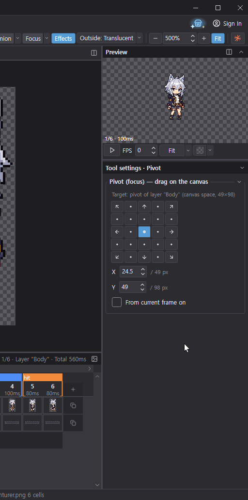
크기·좌표·FPS·배율·효과 세기까지, 앱의 모든 숫자 칸은 같은 세 가지 방법으로 바꿉니다.
- 클릭 후 직접 입력칸을 누르고 숫자를 입력합니다.
256*2처럼 더하기·빼기·곱하기·나누기 식을 적어도 됩니다. Enter를 누르거나 다른 곳을 누르면 값이 확정됩니다. - 위/아래 단추칸 오른쪽 끝의 단추를 누르면 한 칸씩(Ctrl은 10칸씩) 바뀝니다. 단추 위에서 위아래로 끌면 계속 바뀌고(Shift는 10배 느리게), 입력 중에는 휠로도 바뀝니다.
- 우클릭 후 목록에서 고르기칸을 우클릭하면 자주 쓰는 값 목록이 뜹니다. 최근: …은 마지막으로 바꾸기 전 값이라, 두 값 사이를 오갈 때 씁니다.
자세한 동작(식 계산 규칙, 위/아래 단추)은 숫자 칸과 메뉴 다루기에 있습니다.
AI로 그리기
내 컴퓨터의 Claude Code·Codex가 내 계정으로 Chickxel을 직접 다룹니다(API 키 없음). "32×32 나무 통 그려 줘"처럼 말하면 열린 그림에 바로 그려 줍니다.
- AI 채팅 열기Ctrl+L 또는 위 막대의 AI 단추. Claude·Codex 탭 중 하나를 고르고 처음 한 번 로그인합니다.
- 그리고 싶은 것을 말하기크기·소재·색을 함께 적으면 좋습니다. 그리는 동안 진행 상황이 보입니다.
- 마음에 안 들면 되돌리기답 하나가 실행취소 한 단계입니다. Ctrl+Z나 답 아래 "이 단계 되돌리기"로 되돌립니다.
직접 써 본 결과 Codex의 Astra 모델(gpt-6-astra)이 가장 잘 그렸습니다. 자세한 사용법은 AI 채팅 장에 있습니다.
픽셀로 정리
AI로 만든 그림이나 일반 이미지를 깨끗한 픽셀 아트로 바꿉니다. 설정과 점수의 자세한 설명은 AI 그림 픽셀로 정리 장에 있습니다.
크게 보기로 칸 단위 비교
원본 위에 실제로 쓴 칸 격자를 겹쳐 보고, 결과와 원본을 같은 크기로 나란히 놓고 한 칸씩 확인합니다.
- 격자 보기원본 보기에 고른 후보가 쓴 칸 경계가 그려져 칸이 색 덩어리와 맞는지 바로 보입니다.
- 크게 보기큰 미리보기의 결과나 원본을 누르면 두 그림이 같은 크기로 크게 열립니다.
- 칸 짚어 보기결과 픽셀이나 원본 칸을 누르면 그 색이 쓰인 곳과 원본 칸이 어느 결과 픽셀이 되었는지 강조됩니다.
크게 보기의 모든 조작은 원본과 미리보기에 있습니다.
이미지를 픽셀 아트로
그림을 넣으면 픽셀 크기를 찾아 칸을 맞추고, 배경을 지우고, 색을 줄여 픽셀 아트로 바꿉니다. 프리셋마다 만든 후보를 점수와 함께 나란히 보여 주니 마음에 드는 것을 고르면 됩니다.
- 그림 넣기AI > AI 그림 픽셀로 정리…를 열고 그림을 끌어 놓거나 Ctrl+V로 붙여 넣습니다.
- 후보 고르기체크한 프리셋마다 후보가 하나씩 만들어지고 점수가 함께 보입니다. 크게 보기에서 결과와 원본을 칸 단위로 나란히 비교합니다.
- 넣기현재 문서의 새 레이어나 새 탭으로 넣습니다.
설정과 점수는 AI 그림 픽셀로 정리 장에 자세히 있습니다.
색 빼기·더하기
결과에 쓰인 색을 하나씩 확인하며 필요 없는 색은 빼고, 빠진 색은 원본에서 집어 더합니다.
- 쓰인 곳 보기색 견본이나 결과 픽셀을 누르면 그 색이 쓰인 곳이 강조됩니다.
- 색 빼기우클릭하면 그 색이 빠지고, 그 자리는 가장 가까운 남은 색으로 바뀝니다. 다시 우클릭하거나 모두 되살리기로 되돌립니다.
- 색 더하기견본 줄 끝의 +를 누르고 원본 칸을 누르면 그 색이 고정 색으로 결과에 들어갑니다.
고정 색과 뺀 색의 자세한 동작은 원본과 미리보기에 있습니다.
애니메이션 효과
그림을 고치지 않고 효과를 덧입혀 움직임을 만듭니다. 효과 종류와 설정은 레이어 효과에 있습니다.
효과 목록에서 끌어 넣기
효과 창을 열지 않고, 효과 목록의 효과를 타임라인 칸으로 끌어 놓아 바로 넣습니다. 넣은 효과는 기본 설정으로 그 레이어에 들어가고, 놓은 칸의 프레임에만 적용됩니다.
- 효과 목록 열기왼쪽 도구 막대 맨 위(파일 단추 아래)의 효과 단추를 누르면 맨 왼쪽 칸에 효과 목록이 열립니다. 다시 누르면 닫힙니다.
- 넣을 프레임 고르기효과를 넣을 레이어의 칸들을 끌어 고릅니다. 고르지 않으면 효과를 놓은 칸의 프레임 하나에만 들어갑니다.
- 효과를 칸으로 끌어 놓기고른 칸 위로 끌고 가면 놓기 전부터 캔버스에 효과가 미리 보입니다. 놓으면 그 프레임 범위에 들어가고 타임라인에 효과 줄이 펼쳐집니다.
효과를 두 번 누르면 지금 칸에 넣습니다. 범위는 효과 줄의 상자 끝을 끌어 바꾸고, 설정은 효과 줄을 두 번 눌러 고칩니다. 자세한 것은 효과 목록에 있습니다.
효과 겹치기
외곽선·그림자·빛 지나가기·흔들기·터지기·페이드 같은 효과를 원하는 만큼 쌓습니다. 픽셀을 고치지 않으므로 언제든 끄거나 순서를 바꾸고, 저장하면 결과가 시트에 나갑니다.
- 효과 창 열기타임라인의 레이어 이름을 우클릭하고 효과…를 고릅니다.
- 효과 고르고 겹치기효과 카드를 두 번 누르거나 목록으로 끌어 넣습니다. 목록 위에서부터 차례로 겹쳐지고 전·후 미리보기로 확인합니다.
- 프레임 범위 정하기미리보기 아래 프레임 줄에서 효과마다 적용할 범위를 끌어 정합니다. 프레임 늘리기로 애니메이션 프레임도 함께 만들 수 있습니다.
효과 종류와 설정은 레이어 효과에 자세히 있습니다.
효과 클리핑
바로 위 효과에 클리핑을 켠 효과는 원본 그림이 아니라 바로 위 효과가 만든 픽셀에만 적용됩니다. 예를 들어 외곽선만 그라데이션으로 칠할 수 있습니다.
- 기준 효과 넣기먼저 외곽선·반사처럼 픽셀을 새로 만드는 효과를 넣습니다.
- 바로 아래에 효과 더하기그 효과에 입힐 색 덮기·빛 지나가기·잔상 같은 효과를 기준 효과 바로 아래에 둡니다.
- 바로 위 효과에 클리핑 켜기아래 효과의 설정에서 적용 대상 > 바로 위 효과에 클리핑을 켭니다. 목록과 타임라인에서 들여써서 표시됩니다.
기준 효과와 클리핑한 효과 묶음은 커스텀 탭에 이름을 붙여 저장해 다시 씁니다. 적용 대상 설정은 레이어 효과에 있습니다.
팔레트 사용
팔레트를 가져오고, 그림 색을 팔레트에 맞춥니다. 팔레트 패널의 모든 기능은 팔레트에 있습니다.
Lospec 팔레트 가져오기
세계 픽셀 아티스트들의 팔레트를 모은 Lospec 팔레트 목록을 앱 안에서 둘러보고 가져옵니다. 팔레트마다 예시 그림도 보입니다.
- 팔레트 웹 열기팔레트 머리글의 메뉴 단추에서 팔레트 웹(Lospec)…을 고릅니다.
- 찾아보기인기·최신 순으로 정렬하고 색 수나 태그(예: gameboy, pico8), 이름으로 찾습니다.
- 가져오기팔레트로 쓰기로 바꾸거나 현재 팔레트에 추가로 없는 색만 더합니다.
- 즐겨찾기별을 누른 팔레트는 정렬에서 즐겨찾기를 골라 인터넷 없이도 보고 가져옵니다.
참고한 사이트: lospec.com/palette-list (인터넷 필요 — 즐겨찾기는 인터넷 없이 볼 수 있음, 팔레트 저작권은 각 작성자에게 있음)
팔레트로 색 바꾸기
그림의 색을 고른 팔레트의 색으로 한 번에 바꿉니다. 같은 그림을 다른 분위기로 바꾸거나 게임 전체의 색을 한 팔레트로 맞출 때 씁니다.
- 팔레트 고르기바꿀 색이 담긴 팔레트를 엽니다. Lospec에서 가져온 팔레트도 됩니다.
- 팔레트 색으로 변환 열기그 팔레트의 메뉴 단추에서 팔레트 색으로 변환…을 고릅니다.
- 대상·규칙·디더링 고르고 확인대상(현재 셀·현재 레이어의 모든 프레임·모든 레이어)과 색 고르는 규칙을 고릅니다. 가장 가까운 색는 가까운 색으로, 밝기 순서는 명암을 팔레트에 고르게 맞춥니다. 전·후 미리보기로 확인하고, 실행취소 한 번으로 되돌립니다.
모든 규칙과 디더링은 팔레트 색으로 변환에 있습니다.
스킨 설정
레이어마다 여러 모습을 그려 두고 갈아 끼웁니다. 레이어 나무와 스킨의 자세한 설명은 레이어 나무 · 스킨 장에 있습니다.
스킨 바꿔 끼우기
캐릭터를 머리·몸·팔 같은 자식 레이어로 나누고, 레이어마다 스킨을 그려 클릭 한 번으로 갈아 끼웁니다. 여러 레이어는 스킨 프리셋으로 한 번에 바꿉니다.
- 자식 레이어로 나누기새 빈 레이어(Ctrl+Shift+N)를 부모로 두고 새 자식 레이어(Shift+P)를 더하거나 레이어 이름을 Shift를 누른 채 다른 레이어 위에 끌어 놓아 캐릭터를 나눕니다.
- 스킨 추가하고 그리기레이어를 우클릭해 스킨 추가에서 빈 스킨이나 지금 그림 복제를 고르고 그립니다. 부모에서 자식까지…를 고르면 자식 모두에 같은 이름 스킨과 스킨 프리셋이 생깁니다.
- 갈아 끼우기타임라인의 스킨 칩이나 미리보기 아래 스킨 줄에서 고르거나, Alt+[ / Alt+]로 넘깁니다. 스킨 설정 창에서는 프리셋 카드로 여러 레이어를 함께 바꿉니다.
스킨에서 비운 칸은 비어 있으니 같은 그림으로 시작하려면 복제합니다. 스킨은 스킨마다 따로 파일로, 또는 Unity Sprite Library로 내보냅니다. 자세한 것은 레이어 나무 · 스킨에 있습니다.
타일·아이템 스킨
타일과 그 블록에서 나오는 아이템을 한 부모 아래 두고, 나무·흙·광석 같은 종류를 스킨으로 만듭니다. 모든 변형을 한 파일에서 같은 크기·자리로 관리합니다.
- 자식 레이어로 묶기한 부모 레이어 아래에 블록 타일과 아이템들을 자식 레이어로 넣습니다(예: tile, item_1, item_2, item_3).
- 종류마다 스킨부모에서 스킨 추가 > 자식까지…로 나무판·흙·광석 스킨을 만듭니다. 같은 이름의 스킨 프리셋 하나로 모든 자식이 함께 바뀝니다.
- 한 번에 내보내기저장하면 스킨별 시트나 Unity Sprite Library로 나가서, 게임에서는 스킨 이름만 바꿔 쓰면 됩니다.
스킨을 더하고 고치는 방법은 스킨에 있습니다.
유니티 연동
Chickxel에서 정한 값이 Unity에 그대로 이어집니다. 내보내는 파일은 파일·저장·내보내기 장에 있습니다.
피벗 연동
캐릭터 발밑이나 무기 손잡이처럼 그림의 기준점(피벗)을 Chickxel에서 정해 두면, 저장할 때 Unity에도 그대로 들어갑니다. Unity에서 다시 맞출 필요가 없습니다.
내보내기
게임에 넣을 스프라이트 시트(PNG)를 만들고 싶을 때 씁니다. 한 번 설정해 두면 저장할 때마다 시트도 새로 만들어집니다.
- 내보내기 창 열기Ctrl+E. 오른쪽에 나갈 시트 미리보기와 만들어질 파일 목록이 바로 보입니다.
- 배치·스킨 정하기칸 배치와 간격, 스킨을 한 장에 모을지 따로 낼지 고릅니다. 파일을 태그·레이어·스킨별로 나눌 수 있고, Unity 가져오기 설정(Sprite Library 포함)도 여기서 정합니다. 자주 쓰는 설정은 프리셋으로 저장합니다.
- 저장하기저장할 때마다 PNG와 Unity 설정 파일(
.meta)이 이 설정대로 다시 만들어집니다. 파일 브라우저에는.chickxel하나만 보이고, 내보낸 파일 이름으로 검색해도 나옵니다.
모든 내보내기 설정은 내보내기 창에 있습니다.
시작하기
Chickxel은 게임(특히 Unity 2D)용 픽셀 아트 편집기입니다. 프로젝트는 .chickxel로 저장되고, 저장할 때 PNG 스프라이트 시트와 Unity .meta도 만들어집니다. 따로 설치할 프로그램은 없습니다.
이 장은 설치부터 첫 프로젝트까지와 도움말·업데이트·네트워크·제보·계정을 다룹니다.
| 쪽 | 이럴 때 읽기 |
|---|---|
| 설치 | 내 컴퓨터에 맞는 파일을 받고 설치하거나, 파일 더블클릭으로 Chickxel이 열리게 하려 할 때 |
| 처음 실행할 때 | 처음 켤 때 보안 경고가 뜨거나, 시작 화면에서 무엇을 고를지 알고 싶을 때 |
| 튜토리얼 | 앱 안에서 대표 기능을 화면을 따라 하며 배우고 싶을 때 |
| 새 프로젝트 | 빈 캔버스나 클립보드 그림으로 새 그림을 시작할 때 |
| 도움말 보기(F1) | 화면의 단추·패널이 무엇인지 바로 알고 싶거나, 가이드를 검색하려 할 때 |
| 업데이트 | 새 버전 알림이 왔거나 업데이트를 끄거나 직접 확인하려 할 때 |
| 네트워크와 개인정보 | Chickxel이 언제 인터넷에 접속하는지 알고 싶을 때 |
| 제보·아이디어 | 버그·아이디어를 알리거나 개발을 후원하려 할 때 |
| Chickxel 계정 | 갤러리·에셋 올리기에 쓸 계정에 로그인하거나 계정을 바꿀 때 |
| 계정 레벨 | 경험치를 쌓는 법과 레벨 배지를 알고 싶을 때 |
| 레벨 보상 | 레벨마다 받는 프로필 꾸미기를 보거나 고를 때 |
설치
Windows·macOS·Linux용 ZIP을 내려받아 풀면 바로 실행됩니다. 터미널 한 줄로 설치할 수도 있고, 설치한 뒤에는 앱이 스스로 업데이트합니다.
내려받을 파일
| OS | 내려받기(최신 버전) | 실행 |
|---|---|---|
| Windows 10/11 | Chickxel-windows-x64.zip | 압축을 풀고 Chickxel.exe 더블클릭 |
| macOS 12 이상, Apple Silicon(M1 이후) | Chickxel-macos-arm64.zip | 압축을 풀고 Chickxel.app을 응용 프로그램 폴더로 옮긴 뒤 더블클릭 |
| macOS 12 이상, Intel | Chickxel-macos-x64.zip | 위와 같음 |
| Linux, x64(Intel·AMD) | Chickxel-linux-x64.zip | 압축을 풀고 Chickxel 실행. 안 되면 파일 속성에서 프로그램으로 실행 허용을 켜거나 chmod +x Chickxel |
| Linux, ARM64 | Chickxel-linux-arm64.zip | 위와 같음 |
Mac의 칩은 Apple 메뉴 → 이 Mac에 관하여에서 봅니다. Linux는 터미널에서 uname -m이 x86_64면 x64, aarch64면 ARM64입니다. 바뀐 점은 릴리스 페이지에 있습니다.
터미널로 설치
macOS·Linux — 터미널에 아래 줄을 붙여 넣으면 CPU에 맞는 앱을 받아 설치하고 실행합니다. macOS는 /Applications/Chickxel.app에, Linux는 ~/.local/share/Chickxel에 설치하고 프로그램 메뉴에 등록합니다(sudo 필요 없음).
curl -fsSL https://raw.githubusercontent.com/1000Pro-1997/Chickxel/main/install.sh | shWindows — PowerShell에 아래 줄을 붙여 넣으면 %LOCALAPPDATA%\Programs\Chickxel에 설치하고 시작 메뉴 바로 가기를 만듭니다. 이 방법은 'PC 보호' 창이 뜨지 않습니다.
irm https://raw.githubusercontent.com/1000Pro-1997/Chickxel/main/install.ps1 | iex파일 연결과 Chickxel에서 열기
아래 파일과 홈페이지 링크는 Chickxel로 열립니다. Chickxel이 이미 켜져 있으면 그 창에서 엽니다.
| 더블클릭하거나 누르는 것 | Chickxel이 하는 일 |
|---|---|
.chickxel | 편집기의 새 문서 탭으로 엽니다. |
.chickxel-asset | 에셋 관리자에서 안의 에셋을 가져옵니다. |
| 홈페이지 에셋 쪽의 Chickxel에서 열기 | 에셋 관리자 상점에서 그 패키지를 보여 줍니다(설치는 직접 누름). |
- Windows: Chickxel을 한 번 켜면 연결과 탐색기 미리보기(파일 열기)가 등록됩니다. exe를 옮겼으면 한 번 다시 켭니다.
- macOS:
Chickxel.app을 응용 프로그램 폴더에 두면 연결됩니다. 다른 앱이 맡고 있으면 파일의 연결 프로그램에서 Chickxel을 고릅니다. - Linux: 파일 연결과 Chickxel에서 열기 링크는 아직 없습니다.
처음 실행할 때
Windows와 macOS에서는 처음 한 번 운영체제의 보안 경고를 넘겨야 합니다(Linux는 경고가 없음). 앱이 켜지면 문서 없이 시작 화면이 보이고, 여기서 작업할 폴더나 Unity 프로젝트를 고릅니다.
보안 경고 넘기기
개발자 서명이 없는 앱이라 Windows와 macOS에서는 처음 한 번 경고가 뜹니다.
- Windows "PC 보호" 창: 추가 정보 → 실행.
- macOS "확인되지 않은 개발자":
Chickxel.app을 우클릭 → 열기. 안 되면 시스템 설정 → 개인정보 보호 및 보안 → 그래도 열기. - Linux: 경고 창은 없습니다. 실행되지 않으면 파일 속성에서 프로그램으로 실행 허용을 켜거나 터미널에서
chmod +x Chickxel을 실행합니다.
그림과 함께 보는 내려받기 안내는 홈페이지의 다운로드 단추에서도 열립니다. Windows ZIP 파일은 압축을 풀기 전에 속성 → 차단 해제하면 PC 보호 경고를 건너뛸 수 있습니다. Edge에서 '일반적으로 다운로드되지 않습니다'가 뜨면 기타 옵션 → 유지 → 더 보기 → 그래도 계속을 고르세요. 스마트 앱 컨트롤이 켜진 PC는 실행 단추 없이 차단될 수 있습니다.
시작 화면
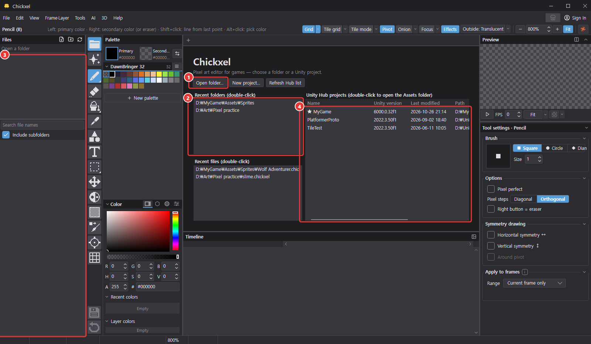
- ① 폴더 열기…로 그림이 있는 폴더를 고릅니다. 옆의 새 프로젝트…는 새 프로젝트 창을 엽니다.
- ② 최근 폴더·최근 파일 목록의 줄을 더블클릭하거나 골라 Enter를 누르면 바로 엽니다.
- ③ 폴더를 고르면 왼쪽 파일 브라우저에 그 폴더의 그림이 보입니다.
- ④ Unity Hub에 등록된 프로젝트는 이 목록에서 더블클릭하면 그 프로젝트의
Assets폴더를 엽니다. 목록이 비었거나 읽지 못하면 안내가 보이고, 프로젝트 목록 새로 고침로 다시 읽습니다.
문서를 연 뒤에도 파일 > 시작 화면으로 시작 화면을 다시 볼 수 있습니다.
켤 때마다 튜토리얼 창도 함께 뜹니다. 대표 기능을 화면에서 따라 하며 배울 수 있고, 필요 없으면 그 창에서 끌 수 있습니다.
화면 언어와 macOS 키
화면 언어는 처음 켤 때 컴퓨터 언어에 맞춰 고릅니다(한국어·영어, 맞는 언어가 없으면 영어). 바꾸는 방법은 화면 언어 바꾸기에 있습니다.
macOS에서는 이 설명서의 Ctrl을 ⌘(Command)로 읽으세요(예: ⌘+S 저장). 스포이드는 ⌥+클릭, ⌘를 누르는 동안은 임시 이동 도구입니다. 메뉴와 도움말에도 ⌘로 표시됩니다.
튜토리얼
튜토리얼은 기능을 실제 화면에서 따라 하며 배우는 안내입니다. 할 자리만 밝게 남고, 옆 말풍선이 한 단계씩 할 일을 알려 줍니다.
여는 방법

Chickxel 튜토리얼 창은 앱을 켤 때마다 뜹니다. 닫은 뒤에는 메뉴 줄 오른쪽의 ① 학사모 단추나 도움말 > 튜토리얼…로 다시 엽니다.
튜토리얼 창
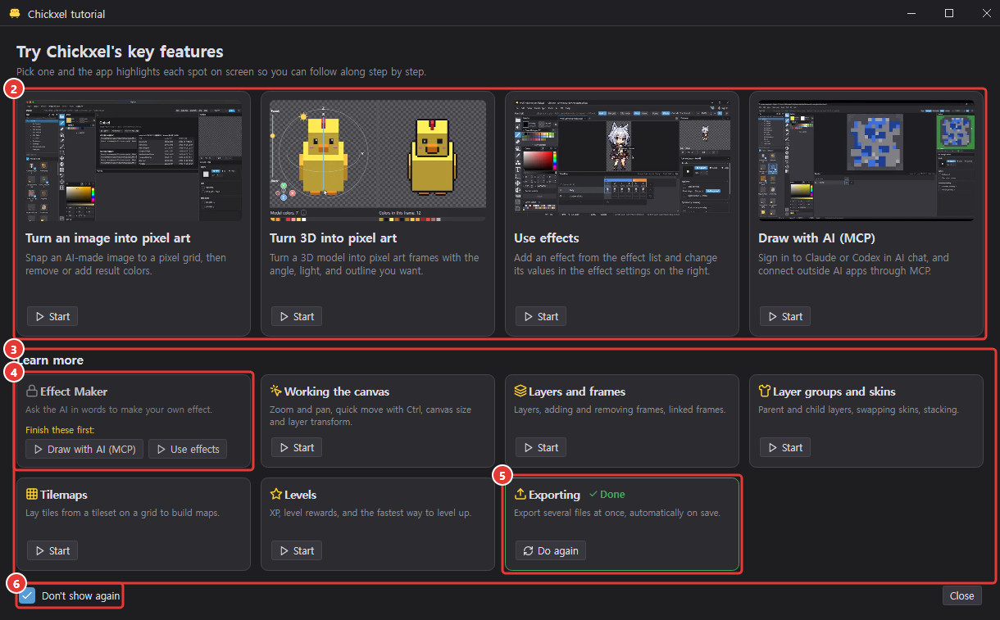
- ② 대표 기능 넷은 예시 움짤이 든 큰 카드입니다. 카드나 따라 하기를 누르면 그 튜토리얼이 시작됩니다.
- ③ 더 알아보기에는 나머지 일곱 튜토리얼이 있습니다. 안 한 것이 앞에, 마친 것이 뒤에 놓입니다.
- ④ 자물쇠가 붙은 카드는 먼저 마칠 튜토리얼이 있습니다. 효과 만들기는 AI로 그리기 (MCP)와 효과 쓰기를 마쳐야 열리고, 먼저 마칠 튜토리얼: 아래 단추로 남은 것을 바로 시작합니다.
- ⑤ 마친 튜토리얼에는 초록 완료이 붙고 단추가 다시 하기로 바뀝니다.
- ⑥ 다시 보지 않기를 켜고 닫으면 켤 때 뜨지 않습니다. 다시 열어 끄고 닫으면 다시 뜹니다.
튜토리얼을 마치면 이 창이 다시 떠 다음 것을 고를 수 있습니다. 마친 기록과 다시 보지 않기는 이 컴퓨터에만 저장됩니다.
따라 하기
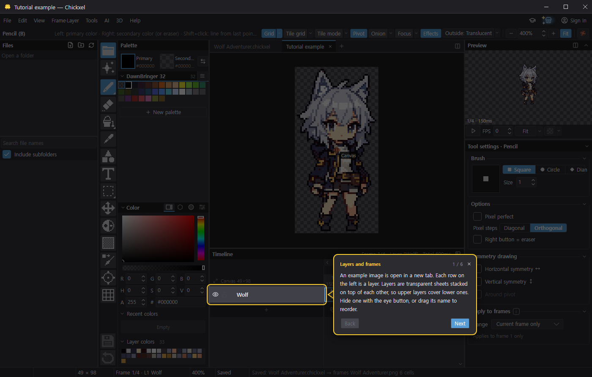
- 말풍선에는 단계 번호(
1 / 6), 설명, 이전·다음(마지막 단계는 끝내기)가 있습니다. 오른쪽 위 X로 언제든 그만둡니다. - 꼭 해야 하는 단계는 다음가 없습니다. 말한 대로 하면 저절로 넘어갑니다.
- 해도 되고 안 해도 되는 단계는 다음로 넘어갑니다.
- 말풍선이 없는 창(AI 상태 점검·계정 창 등)은 튜토리얼 중에도 그대로 쓸 수 있습니다.
튜토리얼 목록
| 튜토리얼 | 따라 하는 것 |
|---|---|
| 그림을 픽셀 아트로 | AI 그림 픽셀로 정리 창에 예시 그림을 넣고, 간편 설정 바꾸기·프리셋 하나 돌리기·결과 색 빼고 더하기 |
| 3D를 픽셀 아트로 | 3D 모델 창에 예시 병아리 모델을 넣고 돌려 보기·모델 색 바꾸기·출력·카메라·빛·외곽선을 거쳐 새 탭으로 가져오기 |
| 효과 쓰기 | 예시 늑대 그림의 3~5프레임에 외곽선 효과를 넣고, 효과 설정·타임라인 효과 줄·효과 목록의 추가 다운로드(상점) 보기 |
| AI로 그리기 (MCP) | AI 채팅을 열어 Claude·Codex 로그인, 그리기 설정, 요청 적기, 레이어 잠금, 외부 AI 앱을 MCP로 붙이는 법 알기 |
| 효과 만들기 | 효과 만들기 창에서 AI에게 효과를 말로 부탁하고, 코드 칸·미리보기·내 효과 목록·레이어에 넣기·올리기 알기 |
| 캔버스 다루기 | 확대와 보기 옮기기, Ctrl로 잠깐 옮기기와 붓 크기, 캔버스 크기 바꾸기와 레이어 전체 변형 |
| 레이어와 프레임 | 레이어 더하기, 프레임 더하고 지우기, 같은 그림 칸을 셀 링크로 묶기 |
| 레이어 묶기와 스킨 | 자식 레이어로 묶기, 스킨을 추가해 스킨 칩으로 갈아 끼우기, 레이어를 겹쳐 쌓는 순서 |
| 타일맵 | 새 타일맵 레이어를 만들어 타일셋에서 타일을 골라 캔버스에 깔고 칸 격자 켜기 |
| 내보내기 | 내보내기 창에서 줄을 더해 GIF로 바꾸고, 저장할 때 다시 내보내는 체크로 여러 파일을 한 번에 내보내기 |
| 레벨 | 계정 레벨과 경험치 쌓는 법, 갤러리 올리기, 계정 창의 레벨 보상(마치면 새싹 보상 — 레벨 보상) |
새 프로젝트
새 프로젝트 창에서 캔버스 크기와 배경을 정해 레이어 하나로 된 새 그림을 만듭니다. 클립보드 그림으로 시작할 수도 있습니다.
여는 방법
파일 > 새 프로젝트…(Ctrl+N), 탭 줄의 +, 시작 화면의 새 프로젝트… 중 하나로 엽니다. 만든 문서는 새 탭으로 열리고, 처음 저장할 때 이름과 위치를 정합니다. 파일 브라우저에서 만들면 파일 이름 칸도 있습니다.
설정

| 항목 | 설명 |
|---|---|
| ① 클립보드 그림 붙여넣기 | 클립보드에 그림이 있을 때만 보입니다. 아래 클립보드 그림으로 시작에 자세히 있습니다. |
| ② 캔버스 | 캔버스 크기를 가로 × 세로(px)로 넣습니다. 끝의 사슬을 켜면 비율을 지킵니다. 아래 단추(16×16, 32×32, 16×32, 64×64, 128×128, 256×256)로 흔한 크기를 바로 고릅니다. 나중에 캔버스 크기 모드로 바꿀 수 있습니다. |
| ③ 배경 투명 | 켜면 투명한 캔버스로 시작합니다. 끄면 캔버스를 보조색으로 채웁니다. |
클립보드 그림으로 시작
클립보드에 그림이 있으면 창 맨 위에 작은 그림과 ① 클립보드 그림 붙여넣기(가로×세로) 체크가 보입니다. 켜면 캔버스가 그림 크기가 되고 첫 레이어에 그 그림이 들어갑니다.
크기를 바꾸면 그림은 왼쪽 위에 놓이고 캔버스 밖은 잘립니다. 배경 투명을 끄면 보조색 위에 겹칩니다. 다른 프로그램에서 복사한 그림이 없으면 Chickxel 안에서 복사한 그림을 쓰고, 가로나 세로가 16384px를 넘는 그림은 쓸 수 없습니다.
도움말 보기(F1)
화면의 단추나 패널이 무엇인지 궁금하면 F1을 누르고 그곳을 클릭합니다. 이름을 아는 기능은 도움말 > 사용 가이드…에서 검색합니다.
화면에서 도움말 고르기


- F1을 누르거나 ① 도움말 > 화면에서 도움말 선택을 고릅니다.
- 마우스 커서가 물음표로 바뀌고 ③ 상태 줄에 안내가 뜹니다. 마우스를 올린 컨트롤에 노란 상자가 둘러져 무엇의 설명이 열릴지 보입니다.
- 알고 싶은 곳을 클릭합니다. 사용 가이드 창이 그곳을 설명하는 자리로 열리고, 그 자리를 노란 테두리로 잠깐 칠합니다.
고르는 동안에는 단추를 눌러도 원래 기능이 실행되지 않습니다. Esc, F1 다시 누르기, 우클릭, 다른 창으로 옮기기 중 하나로 그만둡니다.
연결된 쪽이 없는 곳을 클릭하면 고르기가 끝나고 상태 줄에 안내가 뜹니다. 그런 곳은 ② 사용 가이드…에서 검색합니다.
다른 창에서 고르기

픽셀로 정리·효과·AI 채팅·효과 만들기·내보내기·스킨 설정·환경 설정·에셋 관리자 창과 작은 대화상자에서도 고를 수 있습니다.
- 상태 줄이 없는 창에서는 ④ 창 위쪽 가운데에 노란 안내 띠가 뜹니다. 마우스가 띠에 닿으면 띠가 창 아래쪽으로 비킵니다.
- 연결된 쪽이 없는 곳을 누르면 ④ 띠의 글이 바뀌고 고르기가 이어집니다.
- 대화상자에서 연 사용 가이드 창은 그 대화상자를 닫아도 남습니다.
사용 가이드 창

- ⑤ 검색 칸에 낱말을 적으면 가이드 전체를 찾습니다. ↑/↓로 고르고 Enter로 엽니다. 연 쪽에서는 찾은 말이 노랗게 칠해집니다.
- ⑥ 검색 칸이 비어 있으면 장별 목차입니다. 장을 펼치고 쪽 이름을 누르면 엽니다.
- ⑦ 쪽 본문입니다. 링크는 같은 창에서 열리고, 맨 아래 이전·다음로 앞뒤 쪽으로 갑니다.
- ⑧ 홈페이지에서 열기는 지금 쪽을 홈페이지 가이드에서 열고, ⑨ 커피 보내기는 후원 쪽을 엽니다.
- 사용 가이드…에는 기본 단축키가 없습니다(단축키 바꾸기에서 정함). 창은 하나만 열리고, 앱을 켜 둔 동안 마지막에 본 쪽을 기억합니다.
- Esc는 검색어를 지우고, 검색어가 없으면 창을 닫습니다. 창에 보이는 단축키는 바꾼 키까지 지금 쓰는 키입니다.
- 움직이는 화면은 인터넷 없이 창 안에서 되풀이 재생됩니다. 홈페이지에서 크게 보기로 홈페이지에서 크게 봅니다.
- 화면 언어가 한국어면 한국어, 그 밖에는 영어 가이드가 보입니다.
- 본문 글은 끌어 골라 Ctrl+C로 복사합니다. 한 번에 한 문단 안에서만 고를 수 있습니다.
업데이트
Chickxel은 켤 때마다 새 버전을 확인하고 알립니다. 업데이트 창에서 지금 업데이트을 누르면 내려받기부터 다시 실행까지 앱이 합니다.
새 버전 알림
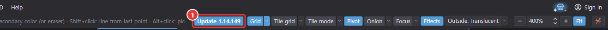
새 버전이 있으면 상태 줄에 알리고, 위 막대에 ① 업데이트 단추를 보이며 업데이트 창을 띄웁니다. 다른 창이 떠 있으면 단추로만 알립니다. 단추를 누르면 창이 다시 열립니다.
업데이트 창
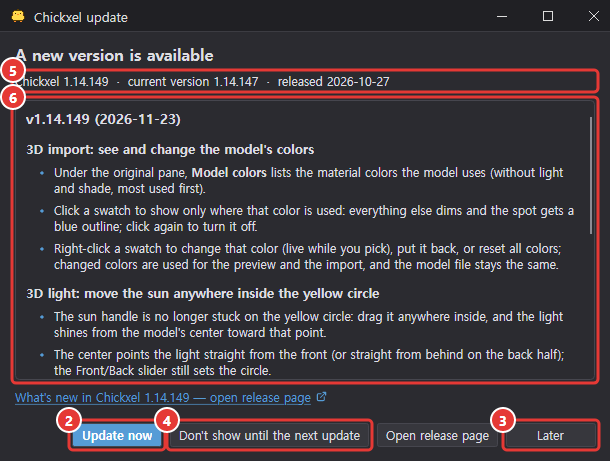
| 항목 | 하는 일 |
|---|---|
| ② 지금 업데이트 | 내 OS용 파일을 내려받아 검증한 뒤 앱을 닫고 새 버전으로 다시 실행합니다. 내려받는 중에는 취소로 멈춥니다. 저장하지 않은 작업은 먼저 묻고, 실패하면 지금 버전을 그대로 둡니다. |
| ③ 나중에 | 창을 닫고 다음에 켤 때 다시 알립니다. |
| ④ 다음 업데이트까지 띄우지 않기 | 이 버전은 자동 확인에서 다시 알리지 않고, 더 새 버전이 나오면 알립니다. 직접 확인하면 보입니다. |
| ⑤ 버전 | 새 버전, 지금 버전, 나온 날입니다. |
| ⑥ 바뀐 점 | 지금 버전 다음부터 새 버전까지 바뀐 점입니다. 화면 언어로 보이고, 그 언어 기록이 없으면 영어로 보입니다. 받지 못하면 릴리스 페이지 링크만 보입니다. |
| 릴리스 페이지 열기 | 창을 닫지 않고 브라우저에서 릴리스 페이지를 엽니다. |
개발·시험 빌드이거나, 설치 폴더에 쓸 수 없거나, macOS가 앱을 임시 위치에서 실행 중이면 지금 업데이트이 꺼지고 이유가 보입니다. 이때는 릴리스 페이지 열기로 받아 직접 바꿉니다. macOS는 Chickxel.app을 응용 프로그램 폴더로 옮기고 다시 켜면 됩니다.
Linux는 Chickxel을 내 계정이 쓸 수 있는 폴더에 두어야 합니다. 바꾸기가 실패하면 이전 버전을 그대로 두고 알림 창으로 알립니다.
직접 확인하기와 자동 확인 끄기
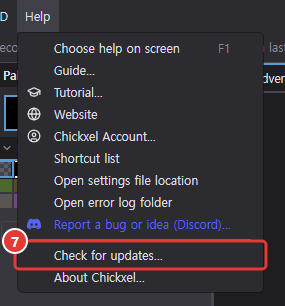

- ⑦ 도움말 > 업데이트 확인…으로 언제든 확인합니다. 최신이면 그렇다고, 확인하지 못하면 이유를 알려 주고, 건너뛴 버전도 보여 줍니다.
- ⑧ 편집 > 환경 설정… > 일반의 이 체크를 끄면 켤 때 확인하지 않습니다.
네트워크와 개인정보
Chickxel에는 사용 기록 수집(분석)이나 광고가 없고, 그림과 파일은 내가 올리기를 고를 때만 밖으로 나갑니다. 아래 표의 경우에만 인터넷에 접속하며, 계정은 갤러리·에셋 올리기를 쓸 때만 필요합니다.
인터넷에 접속하는 때
| 언제 | 어디로, 무엇을 |
|---|---|
| 앱을 켤 때·업데이트 확인… | GitHub에 최신 버전과 바뀐 점을 묻습니다. 자동 확인은 끌 수 있습니다(아래). |
| 팔레트 웹(Lospec) 창을 열 때 | lospec.com에서 팔레트 목록과 예시 그림을 받습니다. 즐겨찾기한 팔레트는 이 컴퓨터에만 저장됩니다. |
| AI 채팅·AI 상태 창을 쓸 때 | 컴퓨터에 설치된 Claude Code·Codex CLI가 내 로그인으로 Anthropic·OpenAI에 접속합니다. 그때 AI가 보는 그림과 대화가 그 서비스로 갑니다. |
| Chickxel 계정·갤러리·에셋 올리기를 쓸 때 | chickxel.com에 로그인하고, 고른 그림이나 에셋을 올립니다(갤러리에 올릴 때 켜면 편집 가능한 .chickxel 파일도). 앱을 켜기만 해서는 접속하지 않습니다(Chickxel 계정). |
| 에셋 관리자의 상점·업데이트 탭, 효과 만들기의 내가 올린 효과 목록 | chickxel.com에서 공개 에셋 목록·미리보기·작성자 프로필 그림을 받고, 설치를 누른 패키지를 내려받습니다. |
| 홈페이지·Discord·후원 같은 링크를 누를 때 | 기본 브라우저에서 그 주소를 엽니다. |
AI 도구가 Chickxel을 다루는 연결(MCP)은 이 컴퓨터 안(127.0.0.1)에서만 열리고 바깥에서는 접속할 수 없습니다.
Discord 활동 상태는 이 컴퓨터에서 켜진 Discord 앱에만 알립니다. 프로필에는 병아리 그림, "Chickxel 하는 중", 시간만 보이고 작업 내용은 보내지 않습니다. 끄려면 편집 > 환경 설정… > 일반 > Discord의 Discord에 활동 상태 보이기("Chickxel 하는 중")를 끕니다.
업데이트 확인 끄기
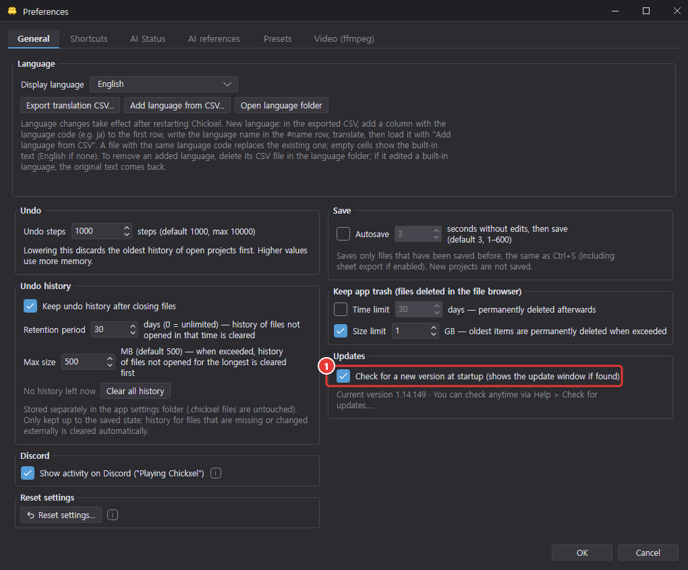
- ① 편집 > 환경 설정… > 일반의 이 체크를 끄면 켤 때 업데이트를 확인하지 않습니다. 직접 확인은 계속 쓸 수 있습니다(업데이트).
제보·아이디어
버그, 불편한 점, 바라는 기능은 Discord나 GitHub Issues로 알려 주세요. 버전과 재현 순서를 함께 적으면 빨리 고칠 수 있습니다.
제보하는 곳
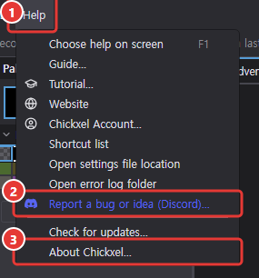

버그, 불편한 점, 바라는 기능은 Chickxel Discord에 남겨 주세요. 앱에서는 ① 도움말 > ② 제보·아이디어 (Discord)…로 바로 열 수 있고, ③ 도움말 > Chickxel 정보… 창의 ④ Discord 단추로도 열 수 있습니다. GitHub 계정이 있다면 GitHub Issues(정보 창의 ⑤ 문제 신고)에 올려도 됩니다.
버그를 알릴 때 적을 것
버그를 알릴 때 다음을 함께 적어 주면 빨리 고칠 수 있습니다.
- 버전: ③ 도움말 > Chickxel 정보…의 ⑥에 보입니다.
- OS: Windows 10/11, macOS 버전(Apple Silicon·Intel) 또는 Linux 배포판과 버전(x64·ARM64).
- 재현 순서: 무엇을 했을 때 어떻게 되었는지, 원래 기대한 결과.
- 오류 로그: 오류 창이 떴다면 그 로그 파일(오류가 생겼을 때). 화면 캡처도 도움이 됩니다.
개발 후원하기
개발을 응원하고 싶다면 홈페이지의 개발 후원하기, 에디터의 사용 가이드(F1) 창 오른쪽 위 커피 보내기 단추, 또는 ③ 도움말 > Chickxel 정보… 창의 ⑦ 개발자에게 커피 사주기 단추를 누르세요. 같은 창의 홈페이지 단추는 앱 언어에 맞는 Chickxel 홈페이지를 엽니다.
Chickxel 계정
Chickxel 계정은 chickxel.com 갤러리에 그림을 올리고 에셋을 공유할 때만 씁니다. 그리기·저장·내보내기에는 필요 없습니다.
로그인
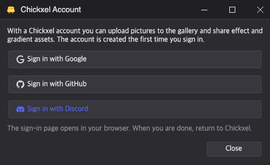
- 도움말 > Chickxel 계정…로 계정 창을 엽니다.
- Google·GitHub·Discord 중 하나의 로그인 단추를 누릅니다. 브라우저에 chickxel.com 로그인 쪽이 열립니다.
- 브라우저에서 로그인을 마치면 앱 창이 로그인한 화면으로 바뀝니다. 브라우저 창은 닫아도 됩니다.
처음 로그인하면 계정이 만들어집니다. 기다리는 동안 브라우저 다시 열기·로그인 취소를 쓸 수 있고, 5분이 지나면 다시 시도하라고 알립니다.
계정 창
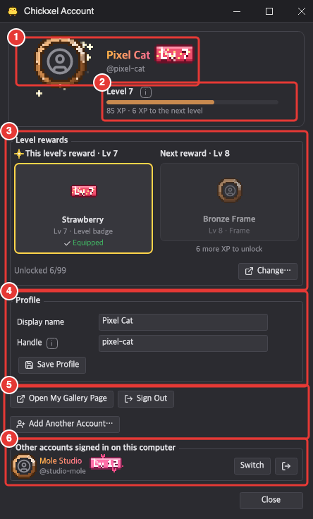
- ① 로그인한 계정의 프로필 그림·표시 이름·칭호·레벨 배지·@핸들입니다. 장착한 레벨 보상(카드·테두리·효과·이름 효과)이 함께 보입니다.
- ② 레벨 N, 경험치 막대, 다음 레벨까지 남은 경험치입니다(계정 레벨). 옆 정보박스에 쌓는 법이 있습니다.
- ③ 레벨 보상: 이번 레벨 보상(안 봤으면 금빛 테두리와 별)과 다음 보상까지 남은 경험치입니다. 장착 중이면 체크가 붙고, 변경하기…로 보상을 고릅니다(레벨 보상).
- ④ 프로필: 표시 이름과 핸들을 고쳐 프로필 저장를 누릅니다. 핸들은 소문자·숫자·하이픈 3~32자이며 갤러리 주소와 에셋 작성자 ID에 쓰입니다. 남이 쓰는 핸들은 쓸 수 없고, 에셋 패키지를 올린 뒤에는 바꿀 수 없습니다.
- ⑤ 내 갤러리 쪽 열기는 chickxel.com의 내 쪽을 엽니다. 로그아웃는 이 계정만 목록에서 빼고, 다른 계정 추가…는 지금 계정을 둔 채 로그인 단추 화면을 엽니다.
- ⑥ 이 컴퓨터에 로그인한 다른 계정: 로그인해 둔 다른 계정마다 전환와 로그아웃 단추가 있습니다.
메뉴 줄의 계정 단추
메뉴 줄 오른쪽 끝의 계정 단추는 로그인했으면 프로필 그림·이름·레벨 배지를, 아니면 로그인을 보입니다. 로그인해 둔 계정이 없으면 누를 때 계정 창이, 있으면 계정 메뉴가 열립니다.
계정 메뉴에는 로그인해 둔 계정(지금 계정은 체크, 누르면 전환), 다른 계정 추가…, 계정 관리…(로그아웃 상태면 로그인…), 로그아웃가 있습니다. 옆의 갤러리 단추는 메뉴와 위 막대에 있습니다.
알아 두기
- 갤러리·에셋 올리기는 지금 계정으로 갑니다. 서버가 로그인을 끝낸 계정은 목록에서 빠지고, 그 계정으로 바꾸려 하면 "이 계정의 로그인이 끝나 목록에서 뺐습니다. 다시 로그인하세요."와 함께 계정 창이 열립니다.
- 다른 계정을 추가할 때 브라우저가 이미 로그인한 계정으로 바로 넘어가면, 그 서비스에서 계정을 바꾸거나 다른 서비스로 로그인합니다. 같은 계정으로 다시 로그인해도 목록에 겹치지 않습니다.
- 계정과 작성자가 보이는 곳(계정 단추·메뉴·창, 에셋 관리자, 효과 만들기, 갤러리에 올리기 등)에는 프로필 그림·이름·레벨 배지와 장착한 테두리·이름 효과가 함께 보입니다. 잘린 이름은 마우스를 올려 봅니다.
- 로그인해 둔 계정이 있으면 앱을 켤 때, 계정 메뉴를 처음 열 때, 계정을 바꾸거나 계정 창·올리기를 쓸 때, 로그인한 채 한 시간이 찰 때마다 chickxel.com에 접속합니다. 로그인 정보는 설정 폴더의
community-session.bin에 있습니다(환경 설정).
계정 레벨
계정 레벨은 chickxel.com에 그림·에셋을 공유하고 활동한 만큼 오르는 등급입니다. 경험치(XP)를 모으는 법이나 이름 옆 Lv 배지가 궁금할 때 봅니다.
경험치 쌓는 법
아래 활동마다 경험치가 쌓입니다.
| 쌓는 법 | 경험치 |
|---|---|
| 갤러리에 그림 올리기 | +10 |
그림과 함께 편집용 .chickxel 파일도 올리기 | +5 |
| 에셋 패키지 처음 공개 | +10 |
| 공개한 패키지의 새 버전 올리기 | +1 |
| 다른 사람이 내 그림·에셋에 누른 좋아요 하나 | +2 |
| 다른 사람 그림·에셋에 좋아요 누르기(하루 3번까지 셈) | +1 |
| 하루 출석(그날 처음 앱을 켜거나 사이트에 들어올 때) | +10 |
| 로그인한 채 앱을 켜 둔 한 시간 | +1 |
- 출석은 로그인한 채 그날 처음 앱을 켜거나 chickxel.com에 들어오면 받습니다. 상태 표시줄에 "출석 +10 XP"가 뜹니다.
- 앱을 켜 둔 시간은 로그인한 동안만 셉니다. 여러 컴퓨터에서 켜도 한 시간에 한 번만 받습니다.
- 하루는 한국 시간 오전 9시(UTC 0시)에 바뀝니다.
레벨과 배지
레벨이 오를수록 다음 레벨까지 드는 경험치가 1씩 늘어납니다. 2레벨은 10 XP, 3레벨은 21 XP, 100레벨은 5,841 XP에서 시작하고, 최고 레벨은 없습니다.
배지 색은 레벨에 따라 바뀝니다.
| 레벨 | 기본 레벨 배지 |
|---|---|
| 1~4 | 흐린 회색 |
| 5~9 | 동 |
| 10~19 | 은 |
| 20~29 | 금 |
| 30~49 | 청록–보라 크리스털 |
| 50 이상 | 무지개 |
배지는 계정 단추·계정 창, 갤러리에 올리기 창, 에셋 관리자의 작성자 옆, chickxel.com의 이름 옆에 붙습니다. 마우스를 올리면 레벨과 쌓는 법이 보입니다.
알아 두기
- 레벨이 오르면 상태 표시줄에 "레벨 업! Lv N"이 뜹니다.
- 움직이는 배지는 레벨 보상으로 받은 배지 모양입니다. 기본 배지는 움직이지 않습니다.
- 서버가 레벨을 알려 주지 않으면(예전 서버 등) 배지가 없습니다.
- 좋아요를 거두거나 그림·에셋 패키지가 지워지면(본인·관리자·신고 처리) 그것으로 받은 경험치(좋아요 포함)가 빠집니다. 저장 공간 한도는 바로 돌아옵니다.
- 지운 그림·에셋은 서버에 남아 관리자가 되살릴 수 있습니다.
레벨 보상
2~100레벨마다 프로필을 꾸미는 보상을 하나씩 받습니다(모두 99개). 보상은 여섯 칸으로 나뉘고, 칸마다 하나씩 끼웁니다.
보상 칸
| 칸 | 보이는 곳과 모양 |
|---|---|
| 칭호(9개) | 큰 프로필 그림의 이름 아래 글입니다. 높은 레벨일수록 귀한 색이고, 71레벨부터 무지개가 흐릅니다. |
| 레벨 배지(20개) | 이름 옆 레벨 배지의 모양입니다. 흐르는 색·빛 테두리·반짝이·불티로 움직입니다. |
| 테두리(30개) | 프로필 그림 둘레의 픽셀 테두리입니다. 작은 그림에는 작은 모양, 큰 그림(계정 창·사이트 프로필)에는 날개·왕관 같은 장식이 붙은 큰 모양이 보입니다. |
| 효과(20개) | 큰 프로필 그림 둘레에서 움직이는 효과입니다(반짝 먼지·꽃잎·반딧불·행성·룬 등). |
| 카드(10개) | 프로필 머리(계정 창 맨 위, 사이트 프로필)의 움직이는 바탕입니다. |
| 이름 효과(10개) | 닉네임 글자의 색과 움직임입니다(네온·물결·글리치·불꽃·은하·무지개 등). 글자 폭은 그대로입니다. |
보상 고르기
- 계정 창의 변경하기…를 누르거나 chickxel.com의 계정 메뉴에서 레벨 보상 쪽을 엽니다.
- 칸마다 끼울 보상이나 없음을 누릅니다. 바로 바뀌고, 앱과 사이트에서 내 이름이 보이는 곳 어디서나 같게 보입니다.
칸마다 기본은 자동입니다. 받은 것 중 가장 높은 레벨의 보상을 끼고, 레벨이 오르면 저절로 바뀝니다.
알아 두기
- 새 보상을 받으면 계정 단추의 레벨 배지가 반짝이고, 계정 메뉴의 계정 관리… 옆에 안 본 보상 수(
새 보상 2)가 보입니다. 계정 창을 열면 본 것으로 칩니다. - 올린 것이 지워져 레벨이 내려가면 그 레벨의 보상은 다시 잠기고, 그 보상을 골라 둔 칸은 자동으로 돌아갑니다.
- 튜토리얼 레벨을 마치면 레벨과 상관없이 칭호 새싹 픽셀러와 테두리 새싹 테두리를 받습니다. 자동에서는 가장 낮은 보상으로 칩니다.
화면 구성
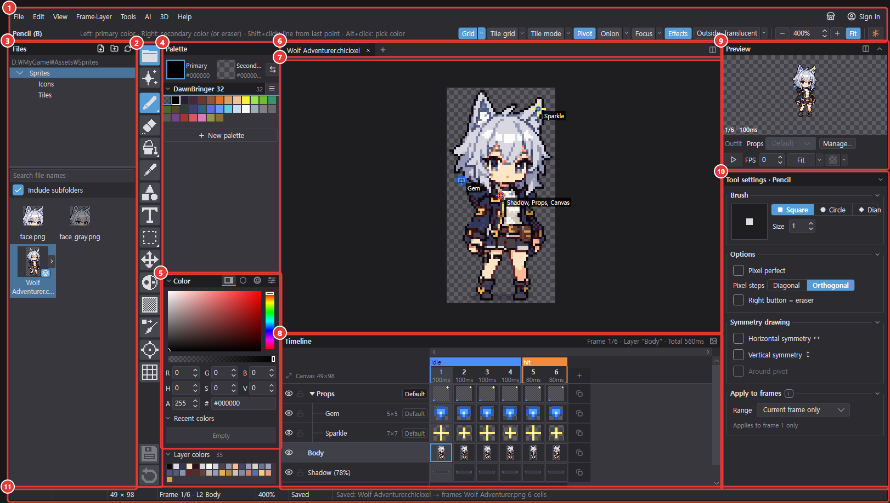
메인 창의 영역과 여러 창에서 같이 쓰는 조작을 다룹니다. 표의 이름을 누르면 그 영역의 쪽으로 갑니다.
| 영역 | 하는 일 |
|---|---|
| ① 메뉴와 위 막대 | 메뉴, 지금 도구의 이름과 사용법, 보기 옵션, 확대율, AI 채팅·갤러리·계정 단추 |
| ② 도구 막대 | 도구 고르기, 파일 브라우저·효과 목록 열기, 저장·되돌리기 |
| ③ 파일 브라우저 | 폴더의 그림을 썸네일로 보고 열기 |
| ④ 팔레트 | 기본색·보조색과 쌓아 둔 팔레트 |
| ⑤ 색 | 색 고르기, 최근 색, 지금 레이어에 쓰인 색 |
| ⑥ 문서 탭 | 열린 문서 바꾸기, 화면을 두 칸으로 나누기 |
| ⑦ 캔버스 | 현재 프레임을 보며 현재 레이어에 그리기 |
| ⑧ 타임라인 | 프레임·레이어·셀·태그 고르기와 편집(따로 장) |
| ⑨ 미리보기 | 애니메이션 재생, 스킨 바꾸기, 프레임 복사·저장 |
| ⑩ 도구 설정 | 지금 도구의 설정과 타임라인에서 고른 효과의 설정 |
| ⑪ 상태 표시줄 | 커서 좌표·색·크기·프레임·확대율·저장 상태와 안내 |
영역 말고도 이 장에는 다음 쪽이 있습니다.
| 쪽 | 하는 일 |
|---|---|
| 숫자 칸과 메뉴 다루기 | 숫자 칸 바꾸기, 계산식, 우클릭 값 목록, 메뉴, 크기 입력 |
| 보기 옵션 | 격자·타일 모드·피벗·양파 껍질·효과 보기 켜기와 설정 |
| 캔버스 밖 그림 보기 | 캔버스 밖으로 나간 그림을 진하게·반투명하게 보이거나 숨기기 |
| 파일 메뉴와 상세 정보 | 파일 우클릭 메뉴, 이름 바꾸기, 상세 정보와 내보내기 목록 |
| 파일 합치기 | 여러 그림을 .chickxel 하나로 묶기 |
| 삭제와 앱 휴지통 | 지운 파일 되살리기, 보관 정책 |
| 팔레트 웹(Lospec) | 인터넷에서 다른 사람이 만든 팔레트 찾아 가져오기 |
| 팔레트 색으로 변환 | 그림의 색을 팔레트 색으로 바꾸기, 디더링 |
| 움직임 테스트 | 캐릭터를 탑뷰·플랫포머 게임처럼 움직여 보기 |
| 움직임 테스트의 애니메이션 이름 | 상태마다 찾는 애니메이션 이름과 대신 쓰는 애니메이션 |
타임라인·효과·스크립트·에셋·내보내기는 따로 장입니다: 타임라인, 레이어 효과, 스크립트 효과 만들기, 에셋 관리자, 내보내기와 공유.
패널 사이의 경계선을 끌면 크기가 바뀌고, 바꾼 크기는 다음 실행에도 남습니다.
메뉴와 위 막대
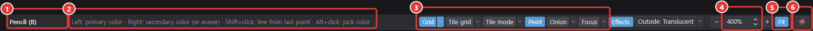
명령을 찾거나, 지금 도구의 쓰는 법을 보거나, 화면을 확대하고 싶을 때 창 맨 위를 봅니다. 메뉴 줄에는 모든 명령이, 그 아래 위 막대에는 자주 쓰는 단추가 있습니다.
- ① 도구 이름: 지금 고른 도구와 그 단축키
- ② 사용법: 그 도구의 마우스 조작과 보조 키
- ③ 보기 옵션: 격자·피벗 같은 표시 켜고 끄기(보기 옵션)
- ④ 확대율 상자와 ⑤ 맞추기: 캔버스 확대(아래)
- ⑥ AI 채팅: AI 채팅 창 열고 닫기(Ctrl+L)
메뉴
메뉴 항목 오른쪽에 단축키가 보입니다. 단축키는 환경 설정에서 바꿀 수 있습니다.
| 메뉴 | 이럴 때 엽니다 |
|---|---|
| 파일(_F) | 파일 열기·저장·내보내기, 갤러리에 올리기(파일 장) |
| 편집(_E) | 실행취소, 복사·붙여넣기, 뒤집기·변형·캔버스 크기, 팔레트 색으로 변환, 환경 설정 |
| 보기(_V) | 확대·축소, 보기 옵션, 탭 바꾸기, 파일 브라우저, 움직임 테스트 |
| 프레임·레이어(_R) | 재생, 프레임·레이어·스킨·태그 다루기(타임라인, 레이어 나무 · 스킨 장) |
| 도구(_T) | 도구 고르기, 그리기 옵션, 에셋 관리자, 효과 만들기(도구 장) |
| AI(_A) | AI 채팅, 다른 AI 앱 연결, 참고 자료, 픽셀로 정리(AI, 픽셀로 정리 장) |
| 3D(_D) | 3D 모델 열기…(3D 모델 장) |
| 도움말(_H) | 화면에서 도움말 선택(F1), 사용 가이드, 단축키 목록, 업데이트 확인, 제보(시작하기 장) |
확대율과 맞추기
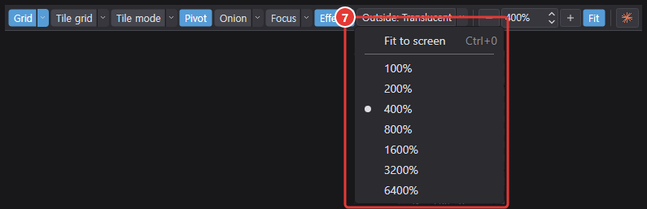
캔버스는 1~64배까지 정수 배로 확대합니다. 확대율은 다음 실행에도 남습니다(처음 800%).
| 조작 | 결과 |
|---|---|
| ④ 확대율 상자에 숫자 입력 | 가까운 정수 배로 맞춥니다(150% → 200%). |
| 확대율 상자 우클릭 | ⑦ 화면에 맞추기와 100~6400% 목록에서 고릅니다. |
| 빼기·더하기 단추 | 한 단계씩 축소·확대합니다(Ctrl+-, Ctrl+=). |
| ⑤ 맞추기(Fit) 켜기 | 그림을 열 때마다 캔버스를 창 크기에 맞춥니다(처음 켬). |
| 단축키 | Ctrl+0 맞추기, Ctrl+1 실제 크기. 휠로 확대하는 법은 캔버스에 있습니다. |
그 밖의 단추
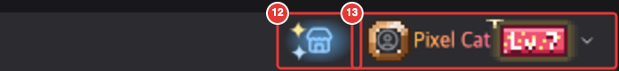
- ⑫ 갤러리 단추: 지금 그림을 갤러리에 올립니다. 그림을 저장하면 잠깐 반짝이며 올려 보기를 권합니다.
- ⑬ 계정 단추: 프로필 그림과 레벨을 보이고, 누르면 계정 메뉴를 엽니다(Chickxel 계정).
- 업데이트 단추: 새 버전이 있을 때만 위 막대에 생깁니다(업데이트).
보기 옵션
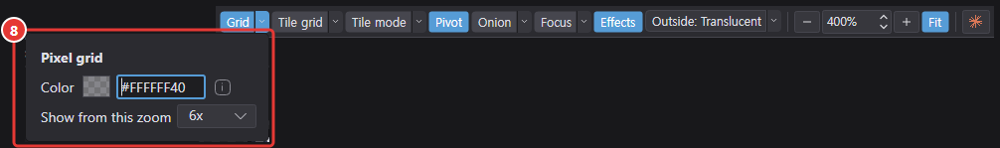


격자나 앞뒤 프레임처럼 그리기를 돕는 표시를 캔버스에 띄우고 싶을 때 위 막대의 보기 단추를 켭니다. 표시는 화면에만 보이고 그림에는 들어가지 않습니다.
보기 단추
| 단추 | 켜면 보이는 것 |
|---|---|
| ⑧ 픽셀 격자 Ctrl+G | 픽셀마다 경계선(충분히 확대했을 때, 처음 켬) |
| ⑨ 타일 격자 Ctrl+Shift+G | 타일 크기마다 선 |
| ⑩ 타일 모드 Ctrl+Shift+T | 그림을 둘레에 되풀이해, 이어지는 무늬를 확인 |
| 피벗 표시 | 레이어와 캔버스의 피벗(회전·배치 기준점, 처음 켬) |
| ⑪ 양파 껍질 Ctrl+J | 앞뒤 프레임을 흐리게 겹쳐, 움직임 간격을 맞춤 |
| 강조 ` | 지금 레이어만 또렷하고 나머지 레이어는 흐리게 |
| 효과 Ctrl+Shift+E | 캔버스에 레이어 효과를 입힌 모습(아래 효과 보기) |
설정
설정이 있는 단추는 오른쪽 작은 삼각형을 누르거나 단추를 우클릭해 설정을 엽니다.
- ⑧ 픽셀 격자: 선 색, 보이기 시작하는 배율(처음 6배)
- ⑨ 타일 격자: 타일 크기(처음 16×16)와 선 색
- ⑩ 타일 모드: 되풀이하는 칸 수(자동·3×3·5×5·7×7), 둘레 어둡게
- ⑪ 양파 껍질: 앞·뒤로 볼 프레임 수(처음 1장씩), 진하기(30%), 앞은 빨강·뒤는 파랑으로 물들이기
- 강조: 다른 레이어의 진하기(처음 30%)
같은 명령이 보기(_V) 메뉴에도 있습니다. 격자 설정…은 격자 색과 타일 크기를 한 번에 정합니다.
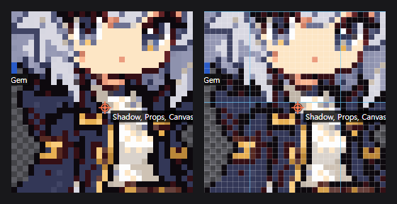
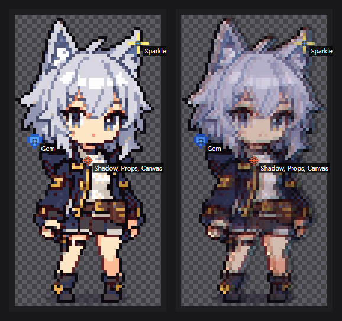
효과 보기
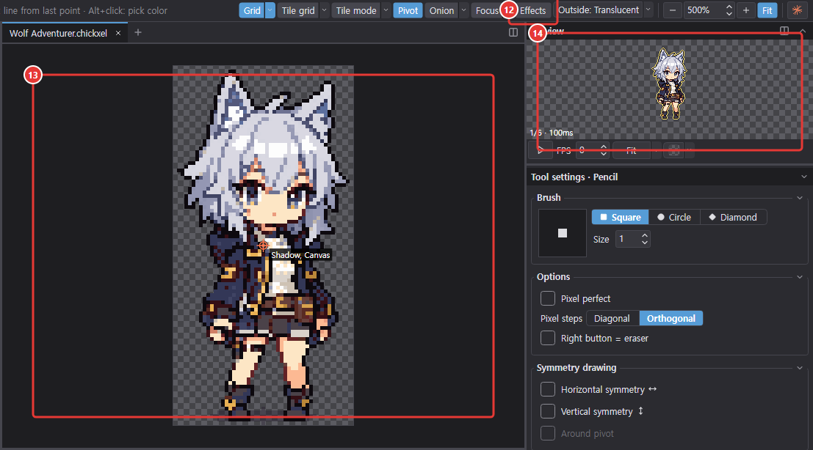
효과에 가려 원래 그림을 고치기 어려울 때 ⑫ 효과 단추를 끕니다. ⑬ 캔버스에는 효과 없는 그림이 보이고, ⑭ 미리보기에는 계속 효과가 보입니다.
보기 메뉴의 캔버스에 효과 보기(Ctrl+Shift+E)와 같습니다.
알아 두기
- 보기와 설정은 다음 실행에도 남습니다. 효과 보기만 다음 실행에 다시 켜집니다.
- 피벗 표시를 꺼도 피벗 도구를 쓰는 동안에는 고치는 피벗이 보입니다.
- 효과를 끄면 양파 껍질·이전 프레임 보기와 스포이드·채우기도 효과 없는 그림을 씁니다. 내보내기는 바뀌지 않습니다.
- 글씨 레이어처럼 효과만으로 그려지는 레이어는 효과를 꺼도 보입니다.
캔버스 밖으로 나간 그림의 표시는 캔버스 밖 그림 보기에서 고릅니다.
캔버스 밖 그림 보기
위 막대의 밖 보기 단추로 캔버스 밖으로 나간 그림을 어떻게 보일지 고릅니다. 저장되는 그림과 내보내기는 바뀌지 않습니다.
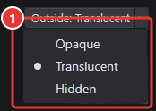
① 밖: 보기 상태를 누르면 진하게 보기 → 반투명으로 보기 → 안 보기로 바뀝니다. 화살표나 우클릭으로 목록을 열어 고를 수도 있습니다. 고른 상태는 다음 실행에도 남습니다.
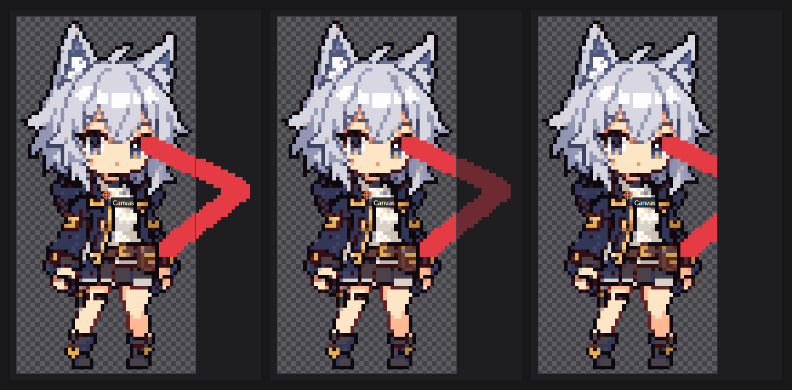
타일맵, 떠 있는 선택, 크기 조절과 변형 미리보기, 빈 레이어의 자식 레이어도 캔버스 밖 부분은 이 보기를 따릅니다.
숫자 칸과 메뉴 다루기


앱 곳곳의 ① 숫자 칸은 눌러서 입력하거나, ③ 위/아래 단추로 바꾸거나, ② 우클릭 목록에서 고릅니다. 어느 창에서나 같습니다.
위/아래 단추
③ 위/아래 단추는 누르거나 위아래로 끌어 값을 바꿉니다. 숫자 칸 자체를 끌어서는 바뀌지 않습니다.
| 조작 | 결과 |
|---|---|
| 단추 누르기 | 한 단계씩 바뀝니다. Ctrl(macOS ⌘)을 누르고 있으면 10단계씩. |
| 단추 위에서 위아래로 끌기 | 위로 끌면 늘고 아래로 끌면 줄며, 3픽셀마다 한 단계 바뀝니다(최솟값·최댓값에서 멈춤). |
| Shift+끌기 | 10배 느리게 바뀝니다(30픽셀마다 한 단계). |
| Ctrl(macOS ⌘)+끌기 | 10단계씩 바뀝니다(Shift와 함께 써도 됨). |
| 화면 위/아래 끝까지 끌기 | 커서가 반대편으로 넘어가 계속 끌 수 있습니다. |
끄는 중에 보조 키를 바꿔도 값이 튀지 않습니다. 한 번 끈 변경은 실행취소 한 단계입니다.
입력하기와 계산식
숫자 칸을 누르면 숫자 전체가 골라진 채 입력이 시작됩니다. 입력 중에는 휠 한 칸에 한 단계씩 바뀝니다. Enter나 다른 곳을 누르면 확정됩니다.
- 정수·실수 칸에는
256*2같은 계산식을 적을 수 있습니다(확정하면 512). +-*/와 괄호, 음수 부호를 쓰고, 곱하기·나누기가 먼저입니다.- 정수 칸은 소수점 아래를 버립니다(
7/2→ 3). 실수 칸은 보이는 자릿수로 반올림합니다. - 잘못된 식, 0으로 나누기, 너무 큰 값은 받지 않고 이전 값을 둡니다.
우클릭 값 목록
입력 중이 아닐 때 숫자 칸을 우클릭하면 ② 그 칸에 맞는 값 목록이 뜹니다.
- 값에는 단위(px·°·%·ms)가 붙고, 지금 값 앞에 점이 찍힙니다.
- 칸에 따라 맨 위에 동작이 있습니다(예: 확대율 상자의 화면에 맞추기).
- 같은 종류의 칸에서 이번 실행 중 마지막으로 쓴 값이 최근: 값으로 보입니다.
- 입력 중에 우클릭하면 잘라내기·복사·붙여넣기 메뉴가 뜹니다.
메뉴와 팝업
메뉴와 팝업은 앱 전체에서 한 번에 하나만 열립니다. 바깥을 누르거나 휠을 굴릴 때, Esc를 누를 때, 창을 옮기거나 바꿀 때, 연 단추를 다시 누를 때 닫힙니다.
크기 입력
크기를 넣는 곳은 모두 [가로] × [세로] (단위) [사슬] 모양입니다. 사슬(비율 고정, 처음 켬)을 켜 두면 한쪽을 바꿀 때 다른 쪽이 켤 때의 비율로 따라 바뀝니다.
정보박스와 접는 묶음
작은 네모 안의 i(정보박스)에 마우스를 올리면 긴 설명이 뜨고, 누르면 바로 뜹니다. 제목 옆에 화살표가 있는 묶음은 제목을 눌러 접고 펼칩니다.
단축키가 있는 단추·메뉴는 풍선 도움말 맨 위에 그 키를 초록 칸으로 보입니다.
도구 막대
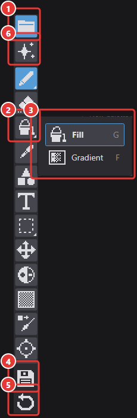
창 왼쪽 끝의 세로 막대에서 도구를 고릅니다. 아이콘에 마우스를 올리면 이름과 단축키가 보입니다. 창이 낮으면 도구 칸만 스크롤됩니다.
도구 칸
칸은 위에서부터 이 순서입니다. 도구 이름을 누르면 그 도구의 쪽으로 갑니다.
| 칸 | 도구(단축키) |
|---|---|
| 1 | 연필(B), 그라데이션 연필(Shift+B) |
| 2 | 지우개(E) |
| 3 | 채우기(G), 그라데이션(F) |
| 4 | 스포이드(I) |
| 5 | 도형(R) |
| 6 | 글씨(T) |
| 7 | 사각 선택, 원 선택(M), 자유 선택(Q), 스마트 선택(W) |
| 8 | 이동(V) |
| 9 | 밝게/어둡게(D) |
| 10 | 디더링(기본 단축키 없음) |
| 11 | 색 바꾸기 브러시(C) |
| 12 | 피벗(K) |
| 13 | 9-slice(S) |
묶음 칸에서 도구 바꾸기
도구가 둘 이상인 칸은 ② 오른쪽 아래에 작은 삼각형이 있습니다. 누르면 보이는 도구를 고르고, 0.4초 넘게 누르거나 우클릭하면 ③ 목록이 펼쳐집니다. 고른 도구가 칸 아이콘이 됩니다.
M는 마지막에 쓴 선택 도구를 고르고, 10초 안에 다시 누르면 사각 → 원 → 자유 → 스마트 선택으로 바뀝니다.
파일 브라우저·효과·저장·되돌리기 단추
- ① 폴더 단추는 파일 브라우저를 접고 펼칩니다(F8).
- ⑥ 효과 단추는 같은 칸에 효과 목록을 열고 닫습니다. 둘 다 켜면 칸이 위(파일)·아래(효과)로 나뉩니다.
- ④ 저장은 저장 안 한 수정이 있을 때, ⑤ 저장한 내용으로 되돌리기는 되돌릴 파일이 디스크에 있을 때만 켜집니다(되돌리기).
- 파일 브라우저와 효과 목록을 켜 두었는지는 다음 실행에도 남습니다.
파일 브라우저

작업할 그림 파일을 찾아 열 때 창 왼쪽의 파일 브라우저를 씁니다. ② 썸네일을 누르면 그 파일이 새 문서 탭으로 열립니다.
폴더 고르기
- 폴더 열기: Ctrl+Shift+O. 마지막에 연 폴더는 다음 실행에도 열립니다.
- ① 폴더 트리에서 폴더를 누르면 그 안의 파일이 보입니다.
- ④ 하위 폴더 포함(처음 켬)을 켜면 아래 폴더의 파일도 함께 보입니다.
- Ctrl+Shift+U는 Unity Hub에 등록된 프로젝트를 보이고, 고른 프로젝트의
Assets폴더를 엽니다.
목록과 검색
- 그림·영상·3D 모델 파일이 모두 보입니다. 폴더 안 파일이 바뀌면 목록도 바로 바뀝니다.
- ⑥ 파란 배지는 Chickxel 프로젝트(
.chickxel), 필름 배지는 영상, 상자 배지는 3D 모델입니다. - ③ 검색 칸에 적으면 파일 이름으로 거릅니다.
프로젝트 묶음
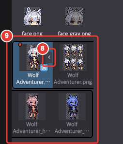
프로젝트에서 내보낸 그림·영상은 따로 칸 없이 프로젝트 칸 안에 묶입니다. 그래서 목록이 짧게 유지됩니다.
- ⑧ 화살표(또는 Ctrl+→)로 펼치고, 다시 누르거나 Ctrl+←로 접습니다.
- ⑨ 펼친 파일은 검은 테두리 안에 프로젝트와 함께 보입니다. 열기·끌기·지우기는 다른 파일과 같습니다.
새 파일과 새 폴더
⑤ 제목 줄 오른쪽 아이콘은 새 픽셀 파일, 새 폴더, 새로 고침입니다.
새 픽셀 파일은 이름과 크기를 정해 이 폴더에 새 그림을 만들고 엽니다(새 프로젝트). 같은 이름 파일은 덮어쓰지 않습니다.
고르기와 끌어 놓기
- 여러 개 고르기: Ctrl+클릭, Shift+클릭, 또는 사각형으로 끌기
- 그림을 새 레이어로 넣기: 파일을 캔버스로 끌어 놓기(새 레이어로 넣기)
- 다른 앱으로 복사하기: 파일을 탐색기·Finder 같은 곳으로 끌어 놓기
저장하지 않은 변경(빨간 점)
⑦ 빨간 점은 아직 저장하지 않은 고침이 있다는 뜻입니다. 탭을 닫을 때 저장할지 묻습니다.
알아 두기
- 숨김 폴더와 이름이 점(.)으로 시작하는 폴더는 트리에 보이지 않습니다.
- 영상 썸네일은 영상 도구 ffmpeg가 설치돼 있을 때만 보입니다.
- 열어 둔 파일을 다른 앱에서 고치면 다시 불러올지 묻습니다.
- 사각형을 끌 때 Ctrl(macOS ⌘)을 누르면 지금 선택에 더합니다.
- 효과 목록을 함께 켜면 이 칸이 위아래로 나뉩니다.
파일 메뉴와 상세 정보

파일 이름을 바꾸거나, 지우거나, 자세한 정보를 보고 싶을 때 파일 브라우저에서 파일을 우클릭합니다. ⑩ 여러 개를 고른 뒤 우클릭하면 ⑪ 그 파일들에 쓸 수 있는 명령이 뜹니다.
우클릭 메뉴
| 항목 | 하는 일 |
|---|---|
| 새 프로젝트… | 이 폴더에 새 그림을 만듭니다. |
| AI 그림 픽셀로 정리… | AI가 그린 그림을 깔끔한 픽셀 그림으로 정리합니다(픽셀로 정리). |
| 합치기… | 여러 파일을 프로젝트 하나로 묶습니다(파일 합치기). |
| 이름 바꾸기 | 파일 이름을 바꿉니다(F2). |
| 탐색기/Finder에서 열기 | 파일이 있는 폴더를 컴퓨터의 파일 관리자에서 엽니다. |
| 이미지 폴더 선택 | 하위 폴더에 있는 파일이면 그 폴더로 갑니다. |
| 삭제(휴지통) | 앱 휴지통으로 보냅니다(Delete, macOS ⌘+Backspace). |
| .chickxel 파일만 삭제(휴지통) | 프로젝트만 지우고 내보낸 그림은 남깁니다. |
| 마지막 삭제 되살리기 | 방금 지운 파일을 되살립니다(Ctrl+Z). |
| 앱 휴지통 보기… | 앱 휴지통을 엽니다. |
| 상세 정보 보기… | 파일 정보를 봅니다(아래 상세 정보). |
이름 바꾸기
- 파일 하나를 고르고 F2를 누릅니다.
- 새 이름을 적고 Enter를 누릅니다(Esc는 취소).
확장자는 빼고 적어도 그대로 붙습니다. 프로젝트 이름을 바꾸면 내보낸 파일 이름도 함께 바뀝니다.
상세 정보
파일 크기나 만든 날짜 같은 정보를 보고 싶을 때 상세 정보 보기…를 고릅니다. 값은 골라 복사할 수 있고, 파일 종류에 따라 다음이 더해집니다.
- 그림: 픽셀 크기와 프레임 수
- 영상: 크기, 길이, 1초당 프레임 수(ffmpeg가 있을 때)
- Chickxel 프로젝트: 캔버스 크기, 프레임·레이어 수, 내보내기 목록(아래)
- 폴더: 안에 든 파일·폴더 수와 전체 크기
내보내기 목록
프로젝트를 열지 않고, 저장할 때 어떤 파일이 만들어지는지 보고 싶을 때 씁니다. 프로젝트의 상세 정보 맨 아래에 내보내기 목록이 있습니다.
- 체크: 저장할 때 그 파일을 같이 만들지 정합니다.
- 설정…: 프로젝트를 열어 내보내기 창에서 고칩니다.
- 줄 아래: 만들어진 파일과 크기, 폴더 열기·휴지통 단추. 아직 없으면 “없음 — 저장하면 만들어짐”로 보입니다.
- 맨 아래: 예전에 만들었지만 지금 설정으로는 만들지 않는 파일입니다. 여기서 지울 수 있습니다.
파일 합치기
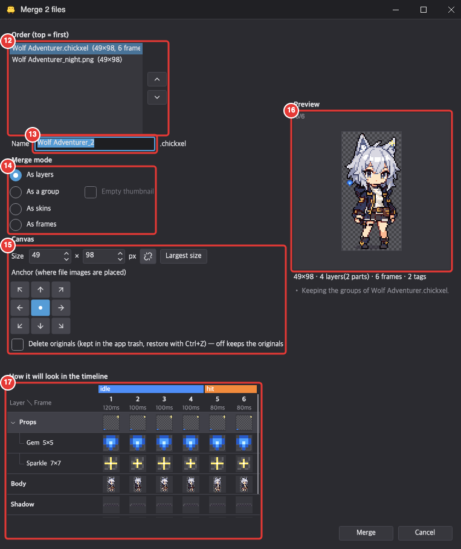
.chickxel·PNG 파일을 2개 이상 고르고 우클릭 합치기…를 고르면 .chickxel 하나로 묶습니다. 다른 형식과 영상은 합칠 수 없습니다.
- ⑫ 순서: 처음에는 고른 순서입니다. 줄을 끌거나 위/아래 단추로 바꿉니다(위 = 먼저).
- ⑬ 이름: 파일 이름의 공통 단어로 제안합니다(
potato_growing·potato_mature→potato). - ⑭ 방식: 아래 표 참고(처음 = 레이어로). 한 레이어 아래로에서는 빈 대표 이미지로 자식을 모두 숨긴 채 만들 수 있습니다.
- ⑮ 캔버스 크기(처음 = 가장 큰 가로·세로)와 기준점(9방향), 원본 삭제(처음 끔, 켜면 원본을 앱 휴지통으로).
- ⑯ 미리보기(여러 프레임이면 재생)와 ⑰ 타임라인에서는 이렇게 보입니다에 결과 모양과 안내가 나옵니다.
방식별 결과
| 방식 | 결과 |
|---|---|
| 레이어로 | 그림 파일마다 레이어 하나. .chickxel은 레이어 나무·스킨을 통째로(첫 파일이 맨 위) |
| 한 레이어 아래로 | 빈 레이어 하나 아래 파일마다 자식 레이어 하나(크기 그대로). 자식이 있는 .chickxel이 있으면 그 첫 부모 아래에 더합니다. |
| 스킨으로 | 레이어 하나에 파일마다 스킨 하나(이름 = 파일 이름). 같은 자리에 바꿔 끼우는 타일·아이템용입니다. |
| 프레임으로 | 파일 순서대로 프레임을 이어 붙입니다. |
.chickxel의 레이어 나무·스킨·효과·태그는 어느 방식이든 옮겨집니다. 결과는 첫 파일 폴더에 <이름>.chickxel로 저장되고 바로 열립니다. 같은 이름 파일이 있으면 합치지 않고 알립니다.
삭제와 앱 휴지통

지운 파일(Delete)과 합치기로 지운 원본은 묻지 않고 앱 휴지통에 보관됩니다. 파일 목록에서 Ctrl+Z를 누르면 마지막 삭제를 되살립니다.
- ⑱ 우클릭 메뉴나 파일 > 앱 휴지통 보기…로 연 창에서 지운 때·남은 날·크기와 미리보기를 봅니다.
- ⑲ 되살리기(더블클릭)·영구 삭제·비우기를 합니다. 원래 자리에 같은 이름 파일이 있으면 되살리지 않습니다.
- ⑳ 보관 정책: 기간 제한(처음 끔, 1~3650일, 30일)과 용량 제한(처음 켬, 0.1~1000GB, 1GB, 넘치면 오래된 것부터 지움). 편집 > 환경 설정…에서도 바꿉니다.
딸린 PNG·.meta도 함께 보관됩니다. 앱 휴지통은 Windows·macOS 휴지통과 따로 앱 설정 폴더에 있습니다.
팔레트

칠할 색을 고르거나 자주 쓰는 색을 모아 두고 싶을 때 색 패널 위쪽의 팔레트를 씁니다. 색 칸을 누르면 그 색으로 칠합니다.
① 기본색/보조색 아래에 ② 팔레트를 여러 개 쌓을 수 있고, ③ 새 팔레트로 더합니다(처음에는 DawnBringer 32 하나).
기본색과 보조색
- ① 왼쪽 버튼은 기본색, 오른쪽 버튼은 보조색으로 칠합니다(보조색 처음 = 투명).
- 칸을 누르면 아래 색 고르기에서 그 색을 고칩니다.
- 옆 단추나 X로 두 색을 맞바꿉니다.
팔레트 쌓기와 활성 팔레트
- ④ 머리글에는 접기 화살표, 이름(두 번 눌러 바꾸기), 색 수, 메뉴 단추가 있습니다.
- ⑤ 파란 줄은 활성 팔레트, 곧 마지막으로 누른 팔레트입니다. 편집 메뉴와 AI가 팔레트를 쓸 때 이 팔레트를 씁니다.
- 팔레트 목록은 다음 실행에도 그대로입니다.
색 칸 고르기
- 누르면 기본색, 우클릭하면 보조색이 됩니다. 마우스를 올리면 색 코드(HEX)가 보입니다.
- ⑥ 흰 테두리는 지금 기본색, ⑦ 파란 테두리는 지금 보조색인 칸입니다.
- 색을 지우려면 그 색을 기본색으로 고르고 메뉴의 기본색을 팔레트에서 삭제를 고릅니다.
팔레트 메뉴
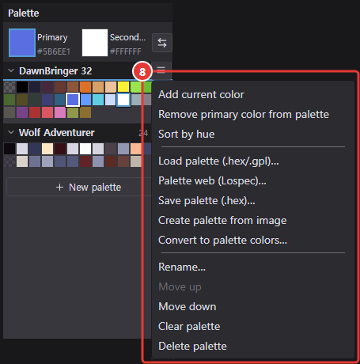
⑧ 메뉴는 그 팔레트에만 적용되고, 실행취소할 수 있습니다.
| 항목 | 하는 일 |
|---|---|
| 현재 색 추가 | 지금 고치는 색을 팔레트 끝에 더합니다. |
| 기본색을 팔레트에서 삭제 | 기본색과 같은 칸을 지웁니다. |
| 색상 순으로 정렬 | 빨강·노랑·초록처럼 색 계열끼리 모으고, 계열 안은 밝기순으로 놓습니다. |
| 팔레트 불러오기(.hex/.gpl)… | 팔레트 파일(.hex·.gpl)의 색으로 바꿉니다. |
| 팔레트 웹(Lospec)… | 인터넷에서 팔레트를 찾아 가져옵니다(팔레트 웹). |
| 팔레트 저장(.hex)… | .hex 파일로 저장합니다. |
| 이미지에서 팔레트 만들기 | 그림에 쓰인 색으로 팔레트를 채웁니다(많이 쓰인 색부터 256개까지). |
| 팔레트 색으로 변환… | 그림의 색을 이 팔레트 색으로 바꿉니다(팔레트 색으로 변환). |
| 이름 바꾸기… | 이름을 바꿉니다. |
| 위로 | 한 칸 위로 옮깁니다. |
| 아래로 | 한 칸 아래로 옮깁니다. |
| 팔레트 비우기 | 색을 모두 지웁니다. |
| 팔레트 삭제 | 팔레트를 지웁니다(하나뿐이면 못 지움). |
팔레트 웹(Lospec)
다른 사람이 만든 팔레트를 찾아 쓰고 싶을 때 팔레트 메뉴의 팔레트 웹(Lospec)…를 엽니다. lospec.com의 팔레트 목록을 앱 안에서 봅니다(인터넷 필요).
팔레트 찾기
- 정렬(인기·다운로드·최신·이름)과 태그(예:
gameboy)로 거릅니다. 고른 정렬은 기억합니다. - 색 수는 전체·최대·최소·정확히로 거릅니다. 더 보려면 끝까지 내리거나 더 보기를 누릅니다.
- 팔레트를 고르면 색과 그 팔레트로 그린 예시 그림이 보입니다.
가져오기
팔레트로 쓰기(더블클릭과 같음)는 지금 팔레트를 바꾸고, 현재 팔레트에 추가는 없는 색만 더합니다. .hex로 저장, Lospec에서 보기도 있습니다.
즐겨찾기
- 즐겨찾기: 팔레트 옆의 별을 눌러 넣고 뺍니다. 즐겨찾기는 이 컴퓨터에 남습니다.
- 정렬에서 즐겨찾기를 고르면 즐겨찾기만 보입니다. 인터넷이 없어도 됩니다.
- 인터넷에 연결하지 못하면 오류 옆 즐겨찾기 보기를 누릅니다.
팔레트 저작권은 각 작성자에게 있습니다.
팔레트 색으로 변환
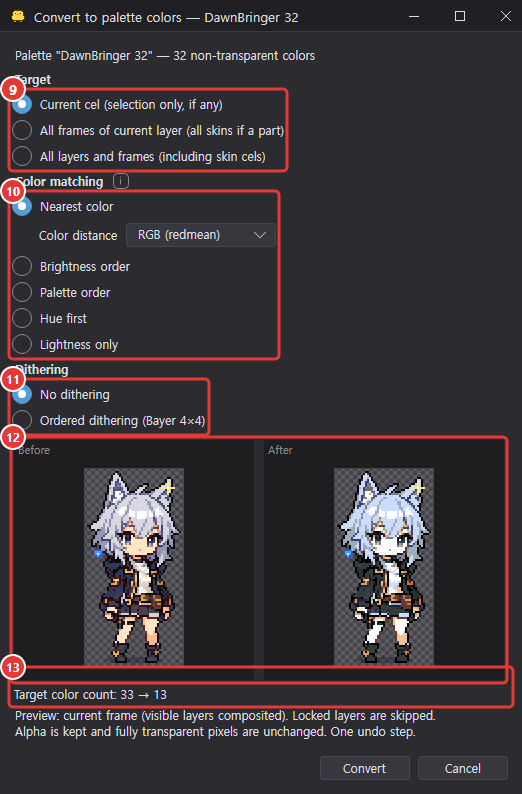
팔레트 색으로 변환은 그림의 색을 팔레트 색으로 바꿉니다. 팔레트 메뉴나 편집(_E) 메뉴에서 엽니다.
- ⑨ 대상: 현재 셀(선택 영역이 있으면 그 안), 현재 레이어의 모든 프레임, 모든 레이어·프레임(잠긴 레이어 제외).
- ⑩ 색 고르는 규칙: 그림의 색마다 어느 팔레트 색이 될지 정합니다(아래 표, 마지막 규칙을 기억).
- ⑪ 디더링: 디더링 없음(기본) 또는 순서 디더링(Bayer 4×4). 어느 규칙에서나 씁니다.
- ⑫ 전·후 미리보기와 ⑬ 색 수 변화를 보며 고릅니다.
알파는 그대로 두고 완전 투명 픽셀은 건드리지 않습니다. 변환은 실행취소 한 단계입니다.
색 고르는 규칙
| 규칙 | 고르는 색 |
|---|---|
| 가장 가까운 색 | 색 거리로 가장 비슷한 색. 바로 아래 색 거리에서 RGB(redmean)·OKLab·CIEDE2000을 고르며, 뒤의 둘이 눈에 보이는 차이에 더 가깝습니다. |
| 밝기 순서 | 그림의 색을 밝기로 줄 세워 밝기순 팔레트 색에 고르게 맞춥니다. 색상이 달라도 명암이 남습니다. |
| 팔레트 순서 | 밝기로 줄 세워 팔레트에 놓인 차례에 맞춥니다(첫 색 = 가장 어두운 자리). 명암 줄을 직접 늘어놓은 팔레트에 맞습니다. |
| 색상 먼저 | 색상이 가장 가까운 색들 중 밝기가 가장 가까운 색. 회색은 회색끼리 맞춥니다. |
| 밝기만 | 색상은 보지 않고 밝기가 가장 가까운 색. 흑백이나 4색 게임보이풍 팔레트에 맞습니다. |
밝기 순서·팔레트 순서는 대상의 모든 셀을 함께 줄 세워, 프레임마다 같은 색이 같은 팔레트 색이 됩니다.
디더링
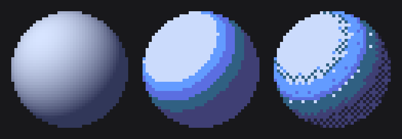
디더링이 없으면 색 띠가 생기고, 순서 디더링은 두 팔레트 색을 무늬로 섞어 그 사이 밝기를 냅니다.
팔레트에 있는 색과 거의 같은 색은 디더링하지 않습니다. 가장 가까운 색 규칙에서는 무늬가 한 색보다 원본에 가까울 때만 섞습니다.
색 고르기
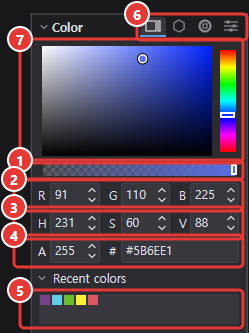
팔레트 아래의 색 고르기는 지금 고치는 색(기본색 또는 보조색)을 바꿉니다. ⑥ 탭으로 고르는 방식을 바꿉니다.
① 알파 막대, ② RGB·③ HSV·④ 알파(A)·HEX 입력, ⑤ 최근 색이 있고, 맨 아래에 레이어 색이 있습니다.
고르는 방식
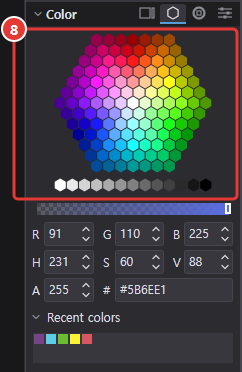

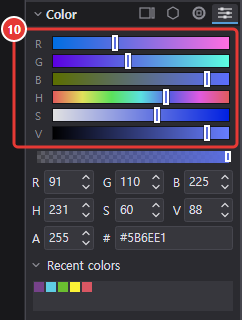
| 방식 | 모양 |
|---|---|
| ⑦ 사각형(기본) | 채도·명도 상자 + 세로 색상 막대 |
| ⑧ 벌집 | 육각형 칸 127개(가운데 흰색, 바깥일수록 진하고 어두움)와 회색 13칸 |
| ⑨ 색상환 | 바깥 고리 = 색상, 안쪽 사각형 = 채도·명도 |
| ⑩ 슬라이더 | R·G·B·H·S·V 막대 |
입력 칸
- R·G·B·A는 0~255, H는 0~360°, S·V는 0~100%입니다. HSV·슬라이더·벌집으로 바꿔도 알파는 그대로입니다.
- HEX 칸은
#RGB·#RGBA·#RRGGBB·#RRGGBBAA를 받습니다(#는 빼도 됨). - Enter나 다른 곳을 누르면 확정되고, 잘못 적으면 원래 값으로 돌아갑니다.
최근 색
⑤ 최근 색은 칠하기를 마친 색을 최근 것부터 16개 모읍니다(지우개·밝게/어둡게·그라데이션 색과 투명 제외). 누르면 기본색, 우클릭하면 보조색이 됩니다.
접기
“색” 머리글과 ⑤ “최근 색” 왼쪽 꺾쇠로 따로 접습니다. “색”을 접으면 머리글과 최근 색만 남고 팔레트 칸이 넓어집니다. 접은 상태는 다음 실행에도 남습니다.
레이어 색
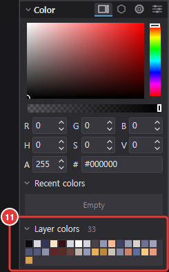
⑪ 레이어 색은 고른 레이어의 모든 프레임에 쓰인 색을 많이 쓰인 순으로 보입니다(투명 제외). 머리글 옆 숫자는 색 수입니다.
- 칸을 누르면 기본색, 우클릭하면 보조색이 됩니다. 최대 1024색까지 보입니다.
- 머리글을 눌러 접습니다. 접혀 있는 동안에는 색을 세지 않고, 접은 상태는 다음 실행에도 남습니다.
다른 창의 색 고르기
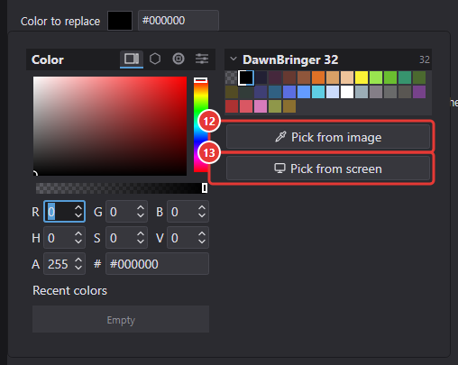
효과 설정·색 바꾸기 같은 다른 창에서 색 칸을 누르면 같은 네 방식의 색 팝업이 뜹니다. 오른쪽에 팔레트, 그 아래에 색을 집는 두 단추가 있습니다.
- ⑫ 그림에서 집기: 현재 프레임을 따로 창에 크게 띄워 누른 픽셀의 색을 집습니다(아래 그림). 열린 문서가 없으면 보이지 않습니다.
- ⑬ 화면에서 집기: 화면 전체를 찍어 덮고 누른 곳의 색을 집습니다(다른 앱 창도 됨). 커서 옆 돋보기와 HEX로 확인하고, Esc나 우클릭으로 그만둡니다.
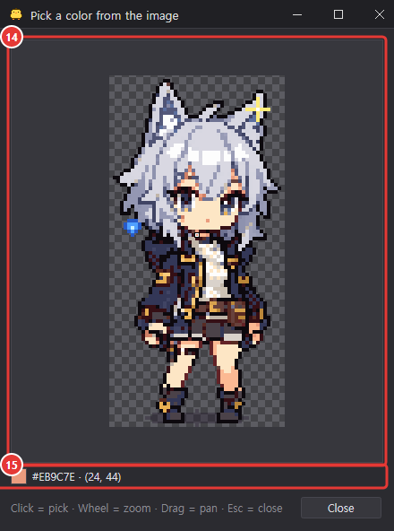
⑭ 그림에서 색 집기 창에서 휠은 확대, 끌기는 이동입니다. 누르면 그 픽셀의 색을 집고 닫히며, Esc는 집지 않고 닫습니다. ⑮ 아래 줄에 올린 픽셀의 색·HEX·좌표가 보입니다.
캔버스
캔버스는 현재 프레임(보이는 레이어를 합친 모습)을 보이고, 도구로 현재 레이어의 셀에 그립니다.
확대와 이동
| 조작 | 결과 |
|---|---|
| 마우스 휠 | 커서 아래를 중심으로 확대·축소합니다(1~64배). |
| Ctrl(macOS ⌘)+휠 | 브러시 크기를 바꿉니다. |
| Space+끌기, 가운데 버튼 끌기 | 화면을 옮깁니다. |
| Ctrl+= · Ctrl+- · Ctrl+0 · Ctrl+1 | 확대 · 축소 · 맞추기 · 실제 크기. 확대율 상자는 메뉴와 위 막대를 보세요. |
| H 누르고 있기 | 누르는 동안 이전 프레임을 보입니다(왼쪽 위에 안내). |
자기 크기가 있는 레이어와 빈 레이어 편집

- 자기 크기가 있는 레이어(자식 레이어 등)를 고르면 ② 프레임 전체가 보이고 ① 그 레이어의 칸이 테두리로 보입니다. 좌표는 레이어 칸 기준입니다.
- 자식만 있는 빈 레이어를 고르면 자식 레이어 위에 점선 테두리와 이름이 보이고, 끌어서 배치합니다(배치하기).
- 레이어의 9-slice 테두리는 점선 안내선으로 보입니다.
보기 표시

이 표시는 보기 옵션으로 켜고 끄며 그림에는 들어가지 않습니다.
| 표시 | 보이는 것 |
|---|---|
| ③ 체커 배경 | 투명한 곳 |
| ④ 픽셀 격자 | 픽셀 경계(정한 배율 이상에서) |
| ⑤ 타일 격자 | 타일 크기마다 선(처음 16×16, 하늘색) |
| ⑥ 대칭 안내선 | 대칭 그리기의 축(캔버스 가운데, 대칭: 피벗 기준이면 피벗). 브러시 외곽선이 반대쪽에도 흐리게 보입니다. |
| ⑦ 피벗 | 회전·배치의 기준점. 지금 레이어의 피벗은 큰 원과 십자, 다른 레이어와 캔버스의 피벗은 작은 점과 이름표(자기 크기 레이어는 파랑, 그 밖은 주황)입니다. |
| ⑧ 선택 영역 | 선택 도구로 고른 범위의 점선 테두리 |
| ⑨ 양파 껍질 | 반투명하게 겹친 앞뒤 프레임 |

⑩ 타일 모드에서는 가운데 칸을 편집하고 둘레는 그 사본입니다.
편집 중에만 보이는 것
- 숨긴 레이어를 고르면 캔버스에만 반투명하게 보여 계속 그릴 수 있습니다.
- 이동 도구를 쓰는 동안 캔버스 밖으로 밀린 그림이 흐리게 보입니다(이동).
- 현재 레이어가 잠겨 있으면 왼쪽 아래에 그릴 수 없다는 안내가 보입니다.
- 브러시 도구는 커서 자리에 브러시 모양의 외곽선을 보입니다.
효과 계산
효과가 무거워도 창은 멈추지 않습니다. 한 프레임 계산이 오래 걸리면 회색 덮개와 진행 막대가 보이고 끝나면 걷힙니다. 그리는 중에는 새 선이 먼저 보이고 효과가 뒤따릅니다.
캔버스에서 효과를 빼고 보려면 효과 보기를 끕니다.
문서 탭과 나누기
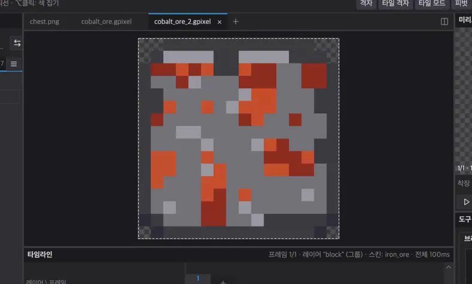

캔버스 위 탭 줄에는 열린 문서마다 탭이 하나 있습니다. 탭을 눌러 문서를 바꾸고, 캔버스를 좌우 두 칸으로 나눌 수 있습니다.
탭 열기·고르기·닫기
- ① 제목은 파일 이름, ② 빨간 점은 저장 안 한 변경, ③ 마우스를 올리면 전체 경로입니다.
- 파일 브라우저·열기·새 프로젝트는 새 탭으로 엽니다. 이미 열린 파일은 다른 칸에 있어도 그 탭으로 갑니다.
- 확대율·위치·현재 프레임·레이어·선택 영역과 실행취소는 탭마다 따로입니다.
- 닫기: ④ X, 가운데 클릭, Ctrl+W. ⑤ +는 새 프로젝트를 새 탭에 만듭니다.
- X로 닫으면 다음 탭의 X가 같은 자리에 와서 이어 닫을 수 있습니다. 탭이 넘치면 탭 줄 위에서 휠로 넘깁니다.
- 모든 탭을 닫으면 시작 화면이 뜹니다.
탭 메뉴와 탭 차례

- 탭을 좌우로 끌어 순서를 바꿉니다. Ctrl+Tab / Ctrl+Shift+Tab은 포커스된 칸의 탭을 돌아가며 고릅니다.
- ⑥ 탭 우클릭: 닫기, 다른 탭 닫기, 다른 쪽으로 옮기기.
- 저장한 적 없는 새 프로젝트 탭에는 임시 제목…이 더 있습니다. 적은 이름이 탭에 보이고, 처음 저장할 때 파일 이름으로 들어갑니다.
화면 나누기

- 다른 쪽으로 옮기기(탭 우클릭, ⑦ 탭 줄 끝 단추, 보기 메뉴)를 고르거나 탭을 캔버스 오른쪽 40%에 끌어 놓으면 ⑧ 오른쪽 칸으로 나뉩니다.
- 두 칸 사이 경계선을 끌어 폭을 나눕니다. 칸마다 탭 줄이 따로 있습니다.
- ⑨ 강조색 선이 있는 포커스된 칸의 문서가 타임라인·미리보기·패널의 대상입니다. 다른 칸을 누르면 포커스가 옮겨 갑니다.
- 한쪽의 마지막 탭을 닫거나 다른 쪽으로 옮기면 한 화면으로 합쳐집니다.
미리보기 탭
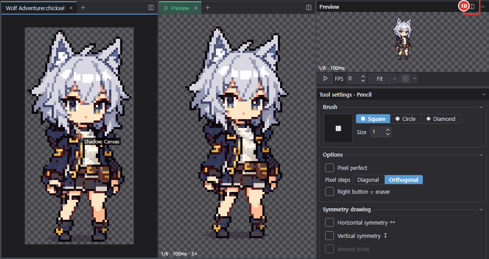
미리보기 제목 줄의 ⑩ 탭으로 열기는 편집 중인 문서를 다른 쪽의 초록빛 미리보기 탭으로 엽니다(한 화면이면 나눔).
- 미리보기와 같은 재생·배경·스킨을 보입니다. 휠로 확대, 끌어서 이동, 더블클릭으로 맞춤, 우클릭은 미리보기 메뉴입니다.
- 미리보기 탭은 하나만 열리고, 미리보기 그림을 누르면 앞으로 옵니다. 문서 탭을 모두 닫으면 함께 닫힙니다.
- 다른 탭처럼 옮길 수 있지만 편집 대상이 되지 않고, 다음 실행에는 다시 열지 않습니다.
다음 실행 때 다시 열기
끝낼 때 열려 있던 탭을 나눔·순서·포커스까지 다음 실행에 다시 엽니다. 없어진 파일, 저장한 적 없는 새 문서, 미리보기 탭은 빠집니다.
미리보기
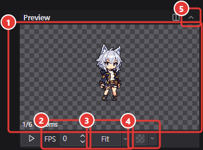
오른쪽 위 미리보기는 효과까지 입힌 애니메이션을 실제 속도로 재생합니다. 편집하는 프레임과 따로 움직입니다.
| 번호 | 항목과 사용법 |
|---|---|
| ① | 재생 화면. 타임라인에서 고른 태그가 있으면 그 태그를, 없으면 모든 프레임을 반복합니다. 누르면 크게 보기 창이 열립니다. |
| ② | 미리보기 FPS(0~60, 처음 0). 0이면 프레임마다 정한 길이로 재생합니다. |
| ③ | 누를 때마다 맞춤 → 1× → 2× → 4×. 작은 아래 화살표나 우클릭으로 목록에서 고릅니다. |
| ④ | 배경. 누를 때마다 체커 → 검정 → 흰색 → 회색 → 초록 → 사용자 색. 작은 아래 화살표나 우클릭으로 목록을 엽니다. |
재생
- 재생 단추나 Shift+Enter로 재생과 정지를 바꿉니다.
- 메인 창에서 Space를 짧게(0.4초 안) 눌러도 재생·정지합니다. 누른 채 끌면 화면만 옮깁니다. 입력 칸에 초점이 있으면 그 칸이 받습니다.
- 효과 계산이 밀리면 다음 프레임이 준비될 때까지 지금 프레임을 보이며 기다립니다.
- FPS·배율·배경은 앱 설정이라 다른 문서와 다음 실행에도 그대로입니다.
미리보기 접기
⑤ 제목 줄 오른쪽 끝 화살표(미리보기 접기)를 누르면 제목 줄만 남고, 아래 도구 설정이 남은 높이를 씁니다. 다시 누르면 펼칩니다. 접은 상태는 다음 실행에도 남습니다.
복사와 저장
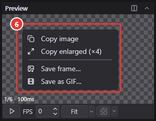
⑥ 미리보기 그림을 우클릭하면 복사·저장 명령이 열립니다. 재생 중이면 우클릭할 때 보이던 프레임을 씁니다.
| 명령 | 하는 일 |
|---|---|
| 이미지 복사 | 보이는 프레임을 배경 없이 투명 PNG로 클립보드에 올립니다. |
| 크게 복사 (×4) | 픽셀을 또렷하게 4배로 키운 PNG를 올립니다(채팅에 붙이기 좋음). |
| 프레임 저장… | <문서>_<프레임 번호>.png로 저장합니다. |
| GIF로 저장… | 내보내기 창을 첫 GIF 줄을 고른 채 엽니다(없으면 새 줄을 더함). |
배경

⑦ 배경 목록에서 고르고, 사용자 색을 고르면 색 고르기 창이 열립니다. 배경은 미리보기에만 쓰이고 복사·저장·내보내기에는 들어가지 않습니다.
스킨
스킨이 둘 이상인 레이어나 스킨 프리셋이 있으면 미리보기 아래에 스킨 줄이 생깁니다. 맨 앞에서 프리셋을, 그 뒤에서 레이어마다 보일 스킨을 고릅니다. 레이어 이름이나 설정…을 누르면 스킨 설정 창이 열립니다.
크게 보기와 미리보기 탭

미리보기 그림을 누르면 ⑧ 크게 보기 창이 열려 같은 재생·배경·스킨을 창에 맞는 정수 배율로 보입니다.
- 창은 하나만 열리고 크기를 바꿀 수 있습니다. Space는 재생·정지, Esc는 닫기, 우클릭은 미리보기 메뉴입니다.
- 크게 보기 창과 미리보기 탭에서는 휠로 커서 아래를 확대하고(최대 64배) 끌어서 옮깁니다. 더블클릭하면 창에 맞춥니다(크게 보기 창은 0도).
- 미리보기 탭이 열려 있으면 그림을 누를 때 크게 보기 대신 그 탭이 앞으로 옵니다.
움직임 테스트

움직임 테스트(F5)는 문서의 태그 애니메이션으로 캐릭터를 탑뷰나 플랫포머 게임처럼 키보드로 움직여 봅니다.
상태마다 맞는 애니메이션, 피벗과 몸 크기, 충돌을 게임 엔진에 넣기 전에 확인합니다. 그림을 고치면 잠시 뒤 반영되고, 왼쪽 화면을 한 번 누르면 키보드로 움직입니다.
- ① 모드: 탑뷰는 8방향 걷기, 플랫포머는 옆에서 본 달리기·점프·오르기입니다.
- ② 캐릭터: 움직일 문서입니다. 처음에는 창을 연 때의 탭이고, 목록에서 다른 열린 탭을 고릅니다.
- ③ 콜라이더 표시: 캐릭터(초록)·지형(빨강)·사다리(파랑) 충돌 상자를 그립니다.
- ④ 맵: 열린 탭의 타일맵 레이어를 깔고 움직입니다. 없음(빈 방)이면 연습용 장소입니다.
- ⑤ 지형 층: 고른 층의 타일 칸이 지나갈 수 없는 벽·땅이 됩니다(여러 층, 숨긴 층도 가능).
- ⑥ 사다리 층: 플랫포머에서 고른 층의 칸이 사다리가 됩니다(지형과 겹치면 지형).
- ⑦ 오르기 속도 (px/s): 사다리와 벽을 오르내리는 속도입니다.
- ⑧ 벽타기 허용: 켜면 지형 벽에 붙어 오를 수 있습니다.
조작 키
| 키 | 하는 일 |
|---|---|
| WASD / 방향키 | 탑뷰는 8방향 이동. 플랫포머는 좌우 이동과 사다리·벽 오르내리기입니다. |
| Space | 플랫포머 점프. 일찍 떼면 낮게 뜁니다. 붙을 사다리·벽이 없으면 W·↑로도 뜁니다. |
| R | 처음 위치로 돌아갑니다(처음 위치로 (R) 단추와 같음). |
보기와 움직임 설정
| 항목 | 하는 일 |
|---|---|
| 배율 (정수) | 화면 확대 배율(1~16배). 처음에는 캐릭터 크기에 맞춰 정해집니다. |
| 격자 표시 (1칸 = PPU) | PPU 크기 칸(맵을 깔면 타일 칸) 격자를 그립니다. |
| 피벗 표시 | 피벗 자리에 십자를 그립니다. |
| 방향 없는 그림은 오른쪽을 봄 | 방향이 붙지 않은 애니메이션(idle·run)이 오른쪽을 본다고 봅니다. 끄면 오른쪽으로 갈 때 뒤집습니다. |
| 이동 속도 (px/s), 중력 (px/s²), 점프 힘 (px/s), 최대 낙하 속도 (px/s) | 모드별 움직임 값. 숫자 칸에서 Enter나 Esc를 누르면 키보드가 화면으로 돌아갑니다. |
맵과 지형
- 지형 층은 처음에 이름으로 골라집니다(탑뷰: 벽·물건·물, 플랫포머: 바닥). 바꾸면 처음 위치로 돌아갑니다.
- 탑뷰는 발 부분 상자, 플랫포머는 몸 전체 상자로 부딪칩니다. 몸 상자는 idle 첫 프레임의 불투명한 부분입니다.
- 처음 위치는 맵 가운데에서 가까운 빈 곳(플랫포머는 밟을 곳)입니다. 지형 층이 없으면 플랫포머 캐릭터는 떨어지고 안내가 뜹니다.
- 위치 순서로 그리는 타일셋이면 캐릭터가 세운 타일 뒤에서는 가려지고 앞에서는 덮습니다. 층 순서면 모든 타일 위에 그려집니다.
사다리와 벽타기
플랫포머에서 사다리는 사다리 층의 칸, 벽은 지형 칸의 옆면입니다. 벽은 ⑧을 켰을 때만 탑니다.
| 동작 | 사다리 | 벽 |
|---|---|---|
| 붙기 | 사다리 앞에서 W·↑, 맨 위에서 S·↓ | 공중에서 벽 쪽 방향키(바닥에서는 W·↑와 함께) |
| 오르내리기 | W·S / ↑·↓. 옆으로 벗어나면 놓습니다. | W·S / ↑·↓ |
| 키를 떼면 | 그 자리에 매달립니다. | 그 자리에 매달립니다. |
| 끝까지 오르면 | 맨 위에 섭니다(위에서만 밟히는 발판). | 자리가 비어 있으면 벽 위로 올라섭니다. |
| 놓기 | Space로 뛰어내립니다. 내려가다 바닥에 닿아도 놓습니다. | 반대쪽 방향키로 떨어지고, Space는 벽을 차고 뜁니다. |
움직임 테스트의 애니메이션 이름

캐릭터가 멈추거나 달리거나 사다리를 탈 때 어떤 애니메이션이 나오는지 확인하고 싶을 때 봅니다. 애니메이션 태그를 idle·run처럼 정해진 이름으로 지으면 움직임 테스트가 알맞은 것을 골라 재생합니다.
- ⑨ 재생 중: 지금 상태와 재생 중인 애니메이션, 찾아본 이름들(재생 아이콘 = 쓰는 이름, X = 없는 이름)
- ⑩ 애니메이션 이름 확인: 이름마다 체크는 있음, 세모는 다른 애니메이션으로 대신함, X는 없음
상태마다 찾는 이름
태그 이름을 지을 때 이 표를 보세요. 상태마다 왼쪽 이름부터 찾고, 없으면 다음 이름을 씁니다.
| 상태 | 찾는 이름(앞에서부터) |
|---|---|
| 탑뷰 멈춤 | idle (방향 쪽에 없으면 idle_down) |
| 탑뷰 이동 | walk → run → 멈춤 이름 |
| 플랫포머 멈춤 | idle |
| 달리기 | run → walk → idle |
| 점프(오르는 중) | jump → fall → idle |
| 낙하 | fall → jump → idle |
| 사다리 오르기 | climb → idle |
| 사다리 매달림 | hang → climb → idle |
| 벽 오르기 | wall_climb → climb → idle |
| 벽 매달림 | wall_hang → wall_climb → hang → climb → idle |
방향이 붙은 이름
이름 뒤에 방향을 붙이면(walk_left) 그쪽을 볼 때 그 애니메이션을 씁니다. 한쪽만 그렸으면 반대쪽은 좌우로 뒤집어 씁니다.
- 탑뷰:
_down·_up·_left·_right - 플랫포머:
_left·_right
알아 두기
- 맞는 이름이 하나도 없으면 첫 애니메이션을, 애니메이션이 없으면 첫 칸을 멈춘 그림으로 보입니다.
- 사다리가 있으면 climb·hang, 벽타기를 켜면 wall_climb·wall_hang 이름도 씁니다.
- 매달린 그림(hang)이 없어 오르는 그림으로 대신하면, 매달린 동안 그 그림이 멈춰 있습니다.
- 좌우로 뒤집어도 캐릭터는 옆으로 튀지 않고 제자리에서 돌아섭니다.
- 이 이름들은 태그 이름을 지을 때 제안 목록에도 나옵니다.
도구 설정

오른쪽 미리보기 아래에서 지금 도구의 설정을 바꿉니다. ① 제목 줄에 도구 이름이, ② 아래에 그 도구의 설정이 나옵니다.
도구별 설정은 도구 장에 있습니다. 설정은 실행취소 대상이 아니며 다음 실행에도 남습니다(좌우·상하 대칭을 켰는지는 빼고).
피벗 도구(K)의 설정(5×5 단추, X·Y, 현재 프레임부터)은 피벗을 보세요.
접기
① 제목 줄을 누르면 패널 전체가 접힙니다. 브러시·옵션 같은 묶음도 제목을 눌러 따로 접고, 접은 상태는 앱을 켜 둔 동안 유지됩니다.
고른 효과 설정

타임라인에서 ③ 효과 하나를 고르면 ④ 도구 설정 아래에 그 효과의 설정 묶음이 나타납니다. 고친 값은 바로 반영되고, 이어 고친 값은 실행취소 한 단계입니다.
- 프레임 범위·클리핑·스크립트 편집·영구 적용은 효과 창에서 열기…로 효과 창에서 바꿉니다.
- 캔버스 늘리기…는 효과 결과에 맞춰 캔버스를 늘리는 창을 엽니다.
- 다른 것을 고르거나 효과를 여러 개 고르면 묶음이 사라집니다.
- 스크립트를 그릴 수 없으면 묶음에 까닭이 경고로 나옵니다.
변형·크기 모드일 때
변형, 캔버스 크기, 레이어 전체 변형 동안에는 도구 설정 대신 그 모드의 숫자 칸과 적용·취소 단추가 나옵니다.
상태 표시줄

창 맨 아래 줄은 지금 상태를 칸마다 보이고, 오른쪽 끝에 ⑦ 마지막 안내가 나옵니다. 칸은 보기만 합니다.
| 칸 | 보이는 것 |
|---|---|
| ① 커서 좌표 | 커서 아래 픽셀 좌표(x, y). 캔버스 밖이면 비웁니다. |
| ② 색 | 커서 아래 합친 그림의 색(HEX) 또는 “투명”. |
| ③ 크기 | 캔버스 크기(가로×세로). |
| ④ 프레임/레이어 | 프레임 현재/전체 · L번호 레이어 이름. 자기 크기가 있는 레이어면 그 크기가 붙습니다. |
| ⑤ 확대율 | 캔버스 확대율(%). |
| ⑥ 저장 상태 | 저장 안 한 수정이 있으면 점과 “수정됨”, 없으면 “저장됨”. |
| ⑦ 안내 | 마지막 동작의 결과와 안내(타임라인에서 고른 것과 Delete가 할 일 등). 저장 안 한 파일이 있으면 “저장 안 한 파일 N개”가 붙기도 합니다. |
오래 걸리는 작업의 진행은 창 가운데 진행 상자에 보입니다(내보내기 참고).
외부 AI 연결을 켜 두면 오른쪽 끝에 외부 AI 칸이 생기고, 다른 AI 앱이 부른 도구 이름이 잠깐 강조됩니다(다른 AI 앱에서 쓰기).
타임라인
화면 아래 타임라인에서 프레임·레이어·셀을 고르고 편집하며, 태그로 애니메이션 구간을 나눕니다.
| 쪽 | 다루는 것 |
|---|---|
| 타임라인 | 레이어 행·프레임 열·태그 띠 읽기, 프레임과 레이어 더하기, 간단히 보기 |
| 우클릭 메뉴 | 우클릭한 곳마다 나오는 메뉴, 레이어 불투명도 |
| 프레임 길이 | 프레임 길이 창에서 길이·FPS·배속 정하기 |
| 타임라인에서 고르기 | 클릭·끌기·키보드로 프레임·레이어·셀 고르기 |
| 셀 링크 | 여러 칸이 그림 하나를 함께 쓰게 묶고 풀기 |
| 타임라인 편집 | 지우기·순서 바꾸기·옮기기·복사·붙여넣기, 자식으로 넣기 |
| 태그 | 프레임 범위에 이름 붙이기, 태그 재생 |
타임라인

애니메이션의 프레임과 레이어를 한눈에 보고 고르고 싶을 때 쓰는, 화면 아래의 표입니다. 행은 레이어, 열은 프레임, 칸 하나(셀)는 그 레이어의 그 프레임 그림입니다.
누른 프레임과 레이어가 캔버스에서 그리는 현재 프레임·레이어가 됩니다.
레이어 행
- ① 눈: 레이어를 보이거나 숨깁니다.
- ② 자물쇠: 레이어를 잠가 그리지 못하게 합니다.
- ③ 불투명도: 100%가 아니면 이름 뒤에 퍼센트가 보입니다.
- ④ 삼각형: 자식 레이어를 접고 펼칩니다.
- ⑤ 자식 레이어: 들여 써서 주황 선으로 이어지고, 이름 옆에 자기 크기가 보입니다.
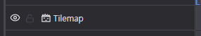
- 눈을 Alt+클릭하면 그 레이어만 보이고, 자물쇠를 Alt+클릭하면 나머지를 모두 잠급니다. 한 번 더 Alt+클릭하면 되돌립니다.
- fx: 효과가 있는 레이어입니다. 누르면 아래 효과 줄을 펼치거나 접습니다.
- 마름모 표시: 자식 자동 배치를 켠 레이어입니다. 누르면 자동 배치 설정이 열립니다.
- 스킨 칩: 스킨이 둘 이상이면 이름 뒤에 지금 스킨 이름이 보입니다. 누르면 스킨을 바꾸거나 관리하는 메뉴가 열립니다(스킨 설정 창).
- 작은 왕관: 캔버스 전체의 기준점(캔버스 피벗)을 대표하는 레이어입니다(피벗).
- 잔디 블록 아이콘: 타일맵 레이어입니다.
- 자식이 6단계보다 깊으면 선 대신 이름 앞에 깊이 숫자가 붙습니다.
프레임 열과 길이
⑥ 프레임 머리글에는 번호와 길이(ms)가, 칸마다 ⑦ 썸네일이 보입니다. 번호를 더블클릭하면 프레임 길이 창이 열립니다.
- 썸네일은 효과를 뺀 그림이고, 모든 프레임을 같은 배율로 잘라 보여 주어 움직임을 비교하기 쉽습니다.
- 접힌 부모 행의 썸네일은 보이는 자식까지 합친 그림입니다.
- 셀 왼쪽 위 주황 마름모: 그 프레임만 기준점(피벗)을 따로 둔 칸입니다(피벗).
- 마름모는 자기 크기가 있는 레이어에는 늘, 그 밖에는 지금 레이어 줄에만 보입니다. 프레임 머리글의 마름모는 캔버스 피벗을 고칠 때만 보입니다.
태그 띠·캔버스 크기 칩·재생 표시
- ⑧ 태그 띠는 색 괄호로 프레임 묶음을 보여 줍니다(태그).
- 캔버스 크기 칩(왼쪽 위 모서리): 아이콘을 누르면 캔버스 크기를 바꾸는 모드(Ctrl+Alt+C)가 열립니다.
- 칩의 캔버스 W×H 글자를 누르면 캔버스 전체의 기준점(캔버스 피벗)을 피벗 도구로 고칩니다. 레이어 이름을 누르면 다시 레이어 기준점을 고칩니다.
- 미리보기를 재생하면 지금 보이는 프레임 열이 ⑬ 초록 외곽선으로 표시됩니다.
- 효과 계산이 오래 걸리면 그 칸의 썸네일에 회색 덮개가 씌워집니다.
프레임과 레이어 더하기

- ⑨ 마지막 프레임 뒤 더하기: 빈 프레임을 더합니다.
- ⑩ 그 아래 복사: 마지막 프레임을 복사해 더합니다.
- ⑪ 마지막 레이어 아래 이름 칸: 맨 아래에 빈 레이어를 더합니다.
- ⑫ 그 옆 프레임 칸: 맨 아래 레이어를 자식째 복사합니다.
- ⑲ 단추를 누른 채 오른쪽으로 끌면 덮은 칸 수만큼 한 번에 더합니다(Esc 취소).
- 새 프레임은 태그 밖에 붙어 태그가 늘어나지 않고, 복사한 링크 칸은 원래 묶음에 들어갑니다.
간단히 보기와 스크롤

제목 줄 오른쪽 끝 ⑳ 그림 단추로 프레임 미리보기를 끄면 ㉑ 칸이 작아지고, 그림 있는 칸에는 흰 점만 보입니다(기본 켬, 다음 실행에도 기억).
- 레이어 이름과 프레임 사이 경계선을 끌면 이름 폭이 140~600px로 바뀌고, 더블클릭하면 270px로 돌아갑니다(폭도 기억).
- 휠은 레이어 행을, Shift+휠이나 Ctrl+휠은 프레임 열을 스크롤합니다. 가로 스크롤 막대는 제목 줄 바로 아래에 있습니다.
- 끌어서 고르거나 옮기다 가장자리에 닿으면 저절로 스크롤됩니다. 타임라인 칸은 확대할 수 없습니다.
우클릭 메뉴
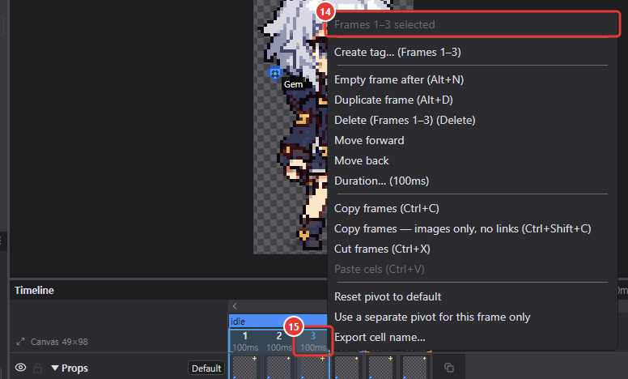
프레임·셀·레이어로 무엇을 할 수 있는지 찾을 때 그 자리를 우클릭합니다. 메뉴 맨 위에 ⑭ 지금 고른 것(예: "프레임 1~3 선택됨")이 보입니다.
우클릭한 곳마다

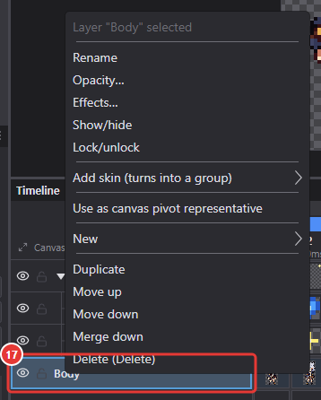

| 우클릭한 곳 | 주요 메뉴 |
|---|---|
| ⑮ 프레임 머리글 | 태그 만들기, 빈 프레임(Alt+N), 복제(Alt+D), 삭제, 앞뒤로 옮기기, 길이…, 복사·잘라내기·붙여넣기, 피벗, 내보낼 칸 이름… |
| ⑯ 셀 | 셀 지우기·복사·잘라내기·붙여넣기, 이전 프레임 그림 복사, 그림으로 복사, 셀 링크·풀기, 효과 추가…, 프레임 항목 |
| ⑰ 레이어 이름 | 이름 바꾸기, 불투명도…, 효과…, 보이기·잠금, 캔버스 피벗 대표, 새로 만들기(새 레이어·빈·타일맵·자식), 복제, 부모에서 꺼내기, 위로·아래로, 아래와 병합, 삭제 |
| ⑱ 빈 곳(왼쪽 위 칸 등) | 새 레이어(Shift+N), 새 빈 레이어(Ctrl+Shift+N), 새 타일맵 레이어(Alt+Shift+N), 새 자식 레이어…(Shift+P), 끝에 빈 프레임, 끝에 마지막 프레임 복사 |
| 태그 | 태그 속성…, 이 태그 재생, 삭제(태그) |
| 효과 줄 | 효과 설정…, 범위 바꾸기, 켜기/끄기, 삭제, 영구 적용, 캔버스 늘리기…, 복사·붙여넣기(효과 줄) |
알아 두기
- 레이어 메뉴에는 레이어에 따라 항목이 더 붙습니다: 효과 줄 펼치기·접기, 레이어 크기·위치, 자식 접기·자동 배치, 타일맵을 레이어로 변환, 스킨 항목(레이어 나무 · 스킨).
- 아래와 병합은 두 레이어가 모두 스킨이 하나뿐인 일반 레이어일 때만 됩니다.
- 머리글·셀 메뉴 끝의 피벗·칸 이름 항목은 고른 범위가 아니라 우클릭한 프레임에만 적용됩니다.
- 피벗 항목은 지금 고치는 기준점(지금 레이어나 캔버스 피벗)을 바꿉니다.
- 쓸 수 없는 항목은 흐리게 보입니다.
레이어 불투명도
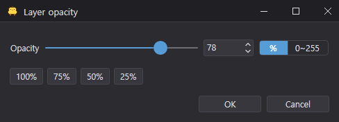
레이어를 반투명하게 하고 싶을 때 레이어 메뉴 불투명도…를 엽니다. 게이지나 숫자로 정하고, 단위는 %(0~100)나 0~255입니다. 100%·75%·50%·25% 단추로 바로 고를 수도 있습니다.
프레임 길이
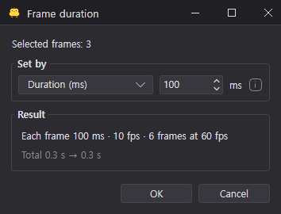
프레임 길이 창은 고른 프레임이 보이는 시간을 정합니다. 프레임 번호를 더블클릭하거나 머리글·셀 우클릭 길이…로 엽니다.
정하는 방법
맨 위에 고른 프레임 수가 보입니다. 정하는 방법 목록에서 방법을 고르고 값 하나를 넣습니다(줄 끝 정보박스에도 설명이 있음).
| 방법 | 하는 일 |
|---|---|
| 길이(ms) | 고른 프레임을 모두 그 길이로 맞춥니다(1~60000, 바로 고르기 50·80·100·120·150·200). |
| FPS(초당 프레임) | 모두 같은 길이로 맞춥니다(길이 = 1초 ÷ FPS). |
| 길이(초) | 모두 그 초만큼 보이게 맞춥니다. |
| 게임 프레임(60fps) | 60fps 게임에서 몇 프레임 동안 보일지로 모두 맞춥니다. |
| 배속 | 프레임마다 지금 길이 ÷ 배속입니다(2× = 두 배 빠르게). 프레임끼리의 길이 차이를 지킵니다. |
| 전체 길이 | 고른 프레임 길이의 합을 그 ms로 맞추고, 지금 비율대로 나눕니다. |
알아 두기
- 아래 결과 묶음에 프레임마다의 새 길이·fps·게임 프레임 수와 전체 길이(초)가 바뀌기 전 → 후로 보입니다.
- 방법을 바꾸면 지금 결과가 새 방법의 값으로 옮겨 적힙니다(80ms에서 FPS로 바꾸면 12.5). 고른 방법은 앱을 켜 둔 동안 기억합니다.
- 새 프로젝트의 프레임은 100ms이고, 새로 더한 프레임은 앞 프레임의 길이를 이어받습니다.
타임라인에서 고르기

타임라인에서는 한 번에 한 종류(프레임, 레이어, 셀, 효과)만 고릅니다. 누른 것이 현재 프레임·레이어가 되고, 고른 종류에 따라 Delete·복사·붙여넣기가 할 일이 정해집니다.
고르는 방법


① 프레임 머리글을 누르면 그 프레임, 레이어 이름을 누르면 그 레이어, ② 셀을 누르면 그 칸이 파란 테두리로 골라집니다. 펼친 효과 줄에서 효과를 누르면 그 효과가 골라집니다.
| 조작 | 결과 |
|---|---|
| 누른 채 끌기 | 사각형에 닿는 것을 모두 고릅니다. |
| Shift+클릭 | 지금 고른 곳부터 누른 곳까지 범위로 넓힙니다. |
| Ctrl(macOS ⌘)+클릭 | 하나씩 더하거나 뺍니다. 떨어진 칸도 고를 수 있습니다. 고른 칸 안을 Ctrl을 누른 채 눌러 끌면 고르기 대신 복사합니다(타임라인 편집). |
| 빈 곳 누르기 | 선택을 풉니다. |
| 눈·자물쇠·접기 삼각형·fx 누르기 | 고르지 않고 그 아이콘의 동작만 합니다. 눈·자물쇠를 Alt+클릭하면 그 레이어가 골라집니다. |
③ 상태 표시줄에 고른 것과 Delete가 할 일이 나옵니다.
키보드
타임라인을 누른 뒤 ←→는 옆 프레임, ↑↓는 옆 레이어로 갑니다(처음·끝에서 멈춤). 프레임을 고른 채 좌우, 레이어를 고른 채 위아래로 움직이면 그 종류를 유지하고, 방향을 바꾸면 셀 선택이 됩니다. Shift+방향키는 선택을 넓힙니다.
F2 = 현재 레이어 이름 바꾸기, Delete = 고른 것 지우기(macOS는 Backspace도. 캔버스에 선택 영역이 있으면 그 선택 내용만 지움), Esc = 끌어서 옮기기 취소. 프레임 이동 단축키는 타임라인 단축키를 보세요.
여러 칸을 고른 표시
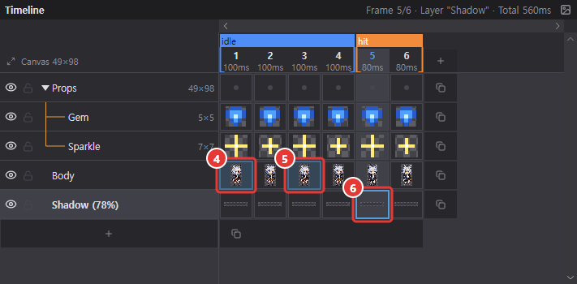
④ 지금 누른 칸은 진한 테두리, ⑤ 그 옆 선택 칸과 ⑥ 떨어져 고른 칸은 옅은 파란 바탕입니다.
맞닿은 선택 칸은 흐린 테두리 하나로 묶입니다. Ctrl/⌘+클릭으로 떨어진 칸을 고르면 셀 복사·잘라내기가 되지 않고, 상태 표시줄에 까닭이 나옵니다.
셀 링크
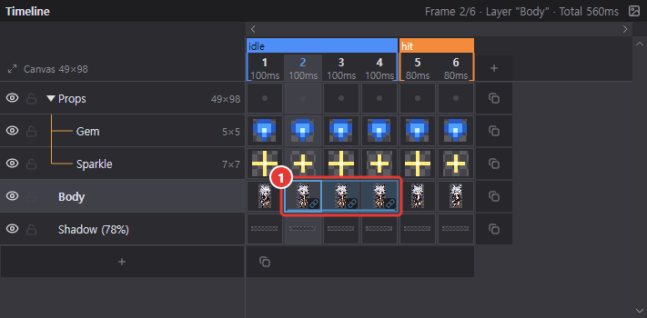
같은 그림이 여러 프레임에 되풀이될 때, 한 칸만 고쳐도 모두 바뀌게 묶고 싶을 때 씁니다. 묶을 칸을 골라 우클릭 셀 링크를 고릅니다.
① 같은 묶음의 셀마다 사슬이 보이고 바로 이웃한 칸 아래에는 같은 색 띠가 이어집니다.
링크 만들기
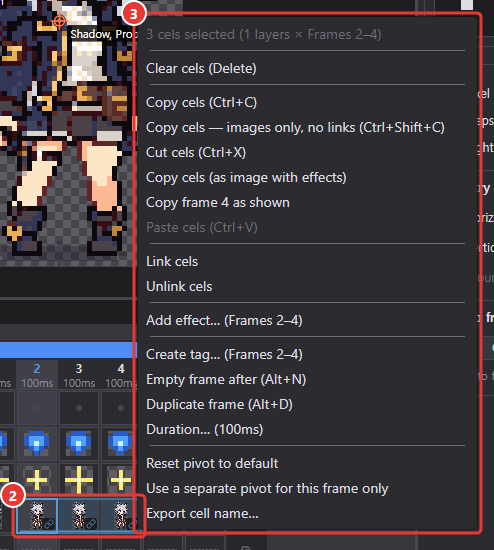
② 사슬이 달린 칸을 우클릭해 ③ 셀 링크 또는 셀 링크 풀기를 고릅니다.
- 떨어진 칸도 함께 고를 수 있고, 레이어마다 묶음이 하나씩 생깁니다.
- 묶음의 그림은 지금 누른 칸(진한 테두리)의 그림이 됩니다. 그 칸이 비었으면 고른 칸 중 이미 묶인 칸이나 그림이 있는 첫 칸의 것을 씁니다.
- 어느 칸에서 그리거나 옮기거나 크기를 바꿔도 묶음 전체가 바뀝니다(실행취소 한 단계).
- 묶음마다 다른 색 띠가 붙습니다(그 행에서 아직 안 쓴 색부터).
- AI도 칸을 묶고 풀고 색을 바꿀 수 있습니다(
link_cels·unlink_cels·set_link_color).
링크 풀기와 링크가 끊기는 경우
- 셀 링크 풀기는 고른 칸마다 그림 사본을 만들어 따로 고칠 수 있게 합니다.
- 링크된 칸에서 Delete로 지우면 링크는 남고 묶음 전체가 빕니다.
- 붙여넣기와 이전 프레임 그림 복사는 그 칸을 묶음에서 뺍니다. 링크 없이 복사하려면 Ctrl+Shift+C를 씁니다(타임라인 편집).
- 효과의 끝 모습이 링크 덕분에 보이던 칸을 풀면, 그 모습이 그 칸 그림에 그대로 들어갑니다(옮겨진 자리는 빼고).
부모 레이어와 스킨의 링크
- 링크는 레이어 행마다 따로입니다. 부모 행을 묶어도 자식 칸은 묶이지 않으니, 자식 행의 칸도 함께 고릅니다.
- 새 빈 스킨은 링크 자리와 색만, 지금 그림 복제로 만든 스킨은 그림과 링크까지 복사합니다. 그 뒤로는 스킨마다 따로입니다.
타임라인 편집
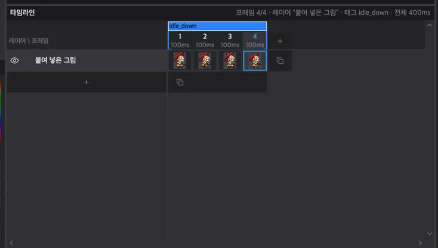
프레임·레이어·셀의 순서를 바꾸거나, 옮기거나, 복사하고 싶을 때 봅니다. 먼저 타임라인에서 고른 뒤 끌거나 단축키를 씁니다.
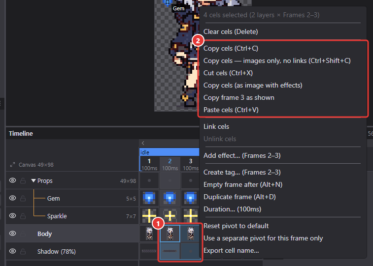
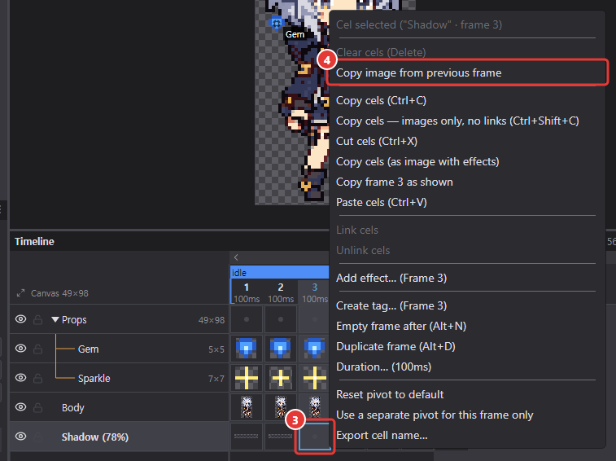
| 하고 싶은 일 | 방법 |
|---|---|
| 지우기 | 고른 뒤 Delete. 셀은 그림만 지워집니다. |
| 순서 바꾸기 | 이미 고른 프레임 머리글이나 레이어 이름을 끌어 놓습니다. |
| 셀 묶음 옮기기·복사 | ① 고른 칸 안을 눌러 끌면 옮기고, Ctrl을 누른 채 놓으면 복사합니다. |
| 복사·붙여넣기 | Ctrl+C·Ctrl+X 뒤 Ctrl+V. ② 우클릭 메뉴에도 있습니다. |
| 앞 프레임 그림 가져오기 | ③ 빈 셀 우클릭 ④ “이전 프레임 그림 복사” |
| 길이·이름 바꾸기 | 프레임 번호 더블클릭 = 프레임 길이, 레이어 이름 더블클릭 또는 F2 = 이름 고치기 |
알아 두기
- 모든 편집은 실행취소 한 단계입니다. 끄는 중에는 Esc로 취소합니다.
- 프레임·레이어를 하나도 남지 않게 지울 수는 없고, 레이어는 자식째 지워집니다.
- 레이어를 끌면 같은 부모 안에서만 움직입니다. 왼쪽으로 20px 끌 때마다 부모 밖으로 한 단계 나옵니다.
- Alt를 누른 채 놓아도 복사됩니다. Ctrl을 누른 채 끌기 시작하면 처음부터 복사입니다.
- 크기나 종류가 다른 행으로는 셀을 옮길 수 없습니다.
- 붙이면 셀은 누른 칸을 왼쪽 위로 덮어쓰고, 프레임은 고른 프레임 뒤에, 레이어는 원래 레이어 위에 새로 붙습니다.
- 떨어진 칸을 고른 셀은 복사할 수 없습니다.
- 캔버스 크기가 다른 문서에서 복사한 셀도 일반 레이어에 왼쪽 위를 맞춰 붙고, 캔버스 밖으로 나간 부분은 캔버스 밖 그림으로 남습니다. 자기 크기가 있는 레이어는 크기가 같아야 붙습니다.
- 복사로 만든 새 레이어 이름은 끝 숫자가 1 올라갑니다(
item_1→item_2, 숫자가 없으면_1). 레이어 메뉴의 복제도 같습니다.
링크째 복사와 이미지만 복사
타임라인에서 복사하면 셀 링크도 함께 복사됩니다.
- 같은 행에 붙이면 원래 링크 묶음에 들어가 같은 색이 됩니다.
- 다른 행이나 다른 문서에 붙이면 같은 묶음에서 온 칸끼리 새 묶음이 됩니다(한 칸만이면 링크 없음).
- 셀 묶음을 끌어 옮기거나 복사할 때도 같습니다.
링크 없이 그림만 복사하려면 Ctrl+Shift+C를 누르거나, 셀·프레임 우클릭 메뉴의 이미지만, 링크 없이 복사 항목을 씁니다. 타임라인 밖(캔버스 등)에서는 보통 복사와 같습니다.
셀을 그림으로 복사하기

⑤ 셀을 우클릭하면 ⑥ 선택한 셀을 효과까지 그림으로 복사하거나 전체 프레임 화면을 그림으로 복사하는 항목이 나옵니다.
셀 복사 (효과 포함 그림)은 고른 칸을 효과·불투명도·지금 스킨까지 보이는 그대로 캔버스 크기 그림으로 복사합니다(숨긴 레이어 제외). 프레임 N 화면 복사는 프레임 전체를 합친 그림입니다.
자식으로 넣고 빼기와 스킨 추가
- 레이어를 다른 레이어의 자식으로 넣으려면 이름을 끌다가 Shift를 누른 채 그 레이어 행에 놓습니다. 놓을 자리에 들여 쓴 파란 틈이 열리고, 놓을 수 없는 곳에서는 금지 커서가 보입니다.
- 꺼내려면 왼쪽으로 끌거나 우클릭 부모에서 꺼내기를 고릅니다. 넣고 빼도 캔버스 그림은 제자리이고, 캔버스 크기 레이어를 자식으로 넣으면 그린 부분만 감싸는 크기로 바뀝니다.
- 레이어 우클릭 스킨 추가에서 빈 스킨이나 지금 그림을 복제한 스킨을 더하고, 자식이 있으면 자식까지…로 자손까지 같은 이름 스킨을 만듭니다(레이어 나무, 스킨).
태그

태그는 프레임 범위에 이름을 붙인 애니메이션 묶음(예: idle, run)입니다. 태그는 미리보기 재생 범위, GIF 범위, 내보내기의 칸 이름·파일 나누기에 쓰입니다.
태그 만들기

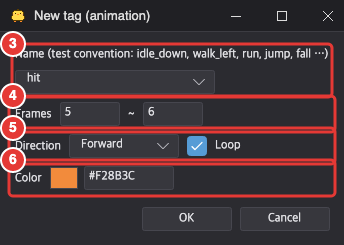
① 프레임 범위를 고르고 우클릭 ② 태그 만들기로 묶습니다. 뜨는 창에서 ③ 이름, ④ 프레임 범위, ⑤ 재생 방향·반복, ⑥ 색을 정합니다.
| 항목 | 뜻(처음 값) |
|---|---|
| ③ 이름 | 태그 이름. 비우거나 다른 태그와 같은 이름은 쓸 수 없습니다. idle_down·walk_left·run·jump·fall 같은 이름을 제안합니다(처음 = 아직 쓰지 않은 첫 제안). |
| ④ 프레임 | 시작~끝 프레임(끝 포함). 끝이 시작보다 앞일 수 없습니다(처음 = 고른 범위). |
| ⑤ 방향 | 정방향, 역방향, 왕복(끝에서 되돌아오며 양 끝 프레임은 한 번씩)(처음 = 정방향). |
| ⑤ 반복 | 끄면 미리보기에서 한 번 재생하고 멈춥니다(처음 = 켬). |
| ⑥ 색 | 태그 띠 색. 색 칸을 눌러 고르거나 HEX를 적습니다(처음 = 새 태그마다 파랑·주황·초록·빨강·보라·청록·노랑·회색 차례). |
태그 고치기와 재생
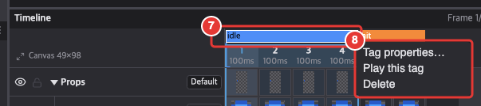
- ⑦ 태그 상자 안쪽 양 끝에 마우스를 대면
↔모양이 되고, 끌어서 범위를 바꿉니다. - 태그를 우클릭하면 나오는 ⑧ 메뉴에서 태그 속성…(만들 때와 같은 창, 태그를 두 번 눌러도 열림), 이 태그 재생, 삭제를 고릅니다.
- 태그를 누르면 흰 테두리로 골라지고, 미리보기는 그 태그의 방향대로 재생합니다(반복을 끈 태그는 한 번 재생하고 멈춤). 태그 밖의 프레임 영역(머리글·셀·효과 줄·태그 줄 빈 곳)을 누르면 고르기가 풀리고 미리보기는 다시 모든 프레임을 반복 재생합니다.
태그 이름은 내보내기의 태그 기준 칸 이름과 태그마다 따로 파일, GIF의 범위에 쓰입니다. 태그는 .chickxel에 저장됩니다.
레이어 효과
레이어에 외곽선·그림자·번쩍임·흔들기 같은 효과를 얹습니다. 효과는 셀 픽셀을 바꾸지 않으므로 언제든 끄거나 고치거나 지울 수 있습니다.
| 쪽 | 다루는 것 |
|---|---|
| 레이어 효과 | 효과를 넣는 기본 흐름, 쌓이는 순서, 영구 적용 |
| 효과 창 | 효과 창의 부분, 프리셋으로 저장, 확인과 취소 |
| 효과 창의 프레임과 캔버스 | 효과 창에서 프레임 늘리기·지우기, 캔버스 늘리기 |
| 효과 목록 패널 | 효과 창 없이 끌어 놓아 넣기, 공식 효과 |
| 모양·색을 바꾸는 효과 | 외곽선·그림자·글씨처럼 프레임마다 같은 모습인 효과와 설정 |
| 움직이는 효과 | 터지기·흔들기·피격 번쩍임처럼 범위 동안 움직이는 효과와 설정 |
| 효과 색과 클리핑 | 색 설정의 단색·그라데이션, 바로 위 효과에 클리핑 |
| 효과 범위와 공통 설정 | 효과 범위, 빠르기·반복, 중심(피벗) 같이 옮기기, 끝 모습 이어 가기, 효과 여백 |
| 타임라인의 효과 줄 | 타임라인에서 효과를 넣고, 범위를 끌어 바꾸고, 옮기고, 복사하기 |
| 효과 프리셋 | 여러 효과와 값을 묶어 저장하고 한 번에 넣기 |
| 스크립트 효과 · 스크립트 API | JavaScript로 쓴 효과를 쓰고 고치기, 실행 허락, 스크립트를 쓰는 규칙 |
| 효과 만들기 | 새 스크립트 효과를 만들고 미리 보고 검증하고 올리기 |
| 에셋 관리자 · 온라인에 올리기 | 상점에서 효과 받기, 파일로 주고받기, 내 효과를 공개하기 |
레이어 효과

그린 그림은 그대로 두고 외곽선·그림자·번쩍임·흔들기 같은 꾸밈을 얹고 싶을 때 씁니다. 타임라인에서 레이어 이름을 우클릭해 효과…를 고르면 시작합니다.
효과는 레이어 위에 얹히기만 하므로 언제든 끄거나 고치거나 지울 수 있고, 나중에 그린 그림에도 저절로 입혀집니다.
기본 흐름

- 타임라인에서 레이어 이름을 우클릭해 ① 효과…를 고릅니다. 몇 프레임에만 넣으려면 그 셀들을 골라 우클릭 효과 추가…를 고릅니다.
- 효과 창 왼쪽 효과 탭에서 효과를 두 번 누르거나 가운데 효과 목록으로 끌어 놓습니다.
- 오른쪽 전·후 미리보기를 보며 값을 고치고, 아래 프레임 줄을 끌어 효과가 입혀질 프레임을 정합니다.
- 확인을 누릅니다. 레이어 이름 오른쪽에 ② fx가 붙고, 타임라인에 효과마다 효과 줄이 생깁니다.
효과 창 없이 넣으려면 효과 목록 패널에서 효과를 타임라인 칸으로 끌어 놓습니다(기본 설정으로 들어감). 범위는 타임라인 효과 줄에서 끌어 바꿉니다.
효과가 쌓이는 순서

효과는 목록 위에서부터 차례로 입혀지고, 뒤 효과는 앞 효과까지 입힌 그림 위에 입혀집니다. 그래서 순서를 바꾸면 결과가 달라집니다(위 그림).
- 순서는 효과 창의 위로·아래로 단추나 타임라인의 효과 이름 끌기로 바꿉니다.
- 켜기 체크를 끄면 효과가 목록에 남은 채 그려지지 않습니다.
- 잔상은 목록 자리와 관계없이 늘 마지막에 그립니다.
- 앞 효과가 그린 부분에만 입히려면 클리핑을 켭니다(예: 외곽선에만 무지개색).
자식이 있는 레이어에 입히기
자식 레이어가 있으면 공통 설정의 적용 대상을 고릅니다. 이 레이어만은 그 레이어 그림에만, 자식까지 합친 그림은 자식까지 합친 모양 둘레에 입힙니다(프레임 시트에만 들어감).
영구 적용
효과를 진짜 픽셀로 바꿔 그림처럼 고치고 싶을 때 효과 영구 적용을 씁니다. 효과 창의 영구 적용 단추나 효과 상자 우클릭 메뉴에서 하고, 그 위의 켜진 효과도 함께 그림이 됩니다.
- 자식까지 합친 그림 효과는 이 레이어만으로 바꿔야 영구 적용할 수 있고, 잠긴 레이어의 효과는 영구 적용할 수 없습니다.
- 레이어를 복제하면 효과도 복사되고, 아래와 병합하면 위 레이어의 효과까지 그림으로 합쳐집니다.
효과가 보이는 곳
- 캔버스에는 '캔버스에 효과 보기'를 켰을 때 보이고, 미리보기·프레임 시트·레이어 아틀라스에는 늘 들어갑니다.
- 자기 크기가 있는 레이어를 고른 동안 캔버스에는 그 레이어와 부모 레이어의 효과가 보입니다.
- 타임라인 썸네일은 효과 없이 보입니다(그림 없이 글씨 효과만 있는 칸은 예외).
- 레이어 아틀라스에는 적용 대상이 이 레이어만인 효과만 들어가고, 외곽선·그림자만큼 그림 칸이 넓어집니다.
- 효과는 번짐 없이 픽셀 단위로 그려집니다.
이 버전이 모르는 효과
더 새 버전의 Chickxel에서 넣은 효과는 이 버전에서 그려지지 않지만, 저장해도 지워지지 않습니다. 효과 목록에는 흐린 알 수 없는 효과 · 종류 ID 줄로 보이고, 순서 바꾸기와 삭제만 됩니다.
효과 창
효과를 넣고, 설정을 바꾸며, 결과를 미리 보고 싶을 때 여는 창입니다. 레이어 이름을 우클릭해 효과…를 고르면 열립니다.
다른 여는 법: 셀을 골라 우클릭 효과 추가…(그 프레임에만 넣음), 타임라인 효과 상자 두 번 누르기, 도구 설정 독의 효과 창에서 열기….
창의 부분
| 부분 | 하는 일 |
|---|---|
| ⑥ 효과 탭 | 넣을 수 있는 효과들입니다. 두 번 누르면 목록 끝에, 효과 목록으로 끌면 그 자리에 넣습니다. |
| 추가 다운로드 · 효과 만들기 · 모든 효과 업데이트 확인 | 상점 열기 · 효과 만들기 열기 · 받은 효과의 새 버전 확인(모두 업데이트으로 모두 설치) |
| ⑦ 프리셋 탭 | 여러 효과를 묶은 효과 프리셋입니다. 넣는 법은 효과 탭과 같습니다. |
| ⑧ 추가 범위 | 새로 넣을 효과가 입혀질 프레임(모든 프레임 또는 시작~끝)입니다. |
| ⑨ 효과 목록 | 이 레이어의 효과가 입혀지는 차례입니다. 체크로 켜고 끄며, 아래 단추로 지우기·순서 바꾸기·영구 적용을 합니다. |
| ⑩ 설정 칸 | 고른 효과의 설정과 공통 설정입니다. i에 마우스를 올리면 설명이 보입니다. |
| ⑪ 전·후 미리보기 | 지금 프레임의 효과 전·후입니다. 누르면 크게 보기 창이 열립니다(Space 재생, ←/→ 프레임, Esc 닫기). |
| ⑫ 프레임 줄 | 칸을 누르면 그 프레임을 보고, 끌면 고른 효과가 입혀질 프레임을 정합니다. |
| ⑬ 캔버스 늘리기… | 효과가 캔버스 밖으로 잘릴 때 캔버스를 늘립니다(캔버스 늘리기). |
| ⑭ 프레임 늘리기 | 효과에 맞춰 프레임 수를 늘립니다(프레임 늘리기). |
알아 두기
- 효과 탭은 공식 효과 → 글씨 → 받은 효과 → 내가 만든 효과 차례입니다. 상자 오른쪽 위 물음표를 누르면 설명이 뜹니다.
- 상점에서 받은 효과에 새 버전이 있으면 ⑨ 목록 아래에 파란 업데이트이 보입니다. 누르면 설정 값은 그대로 두고 새 버전으로 바꿉니다.
- 그리지 못하는 스크립트 효과에는 경고 아이콘이 붙습니다.
효과 목록을 프리셋으로 저장
⑦ 프리셋 탭 맨 위 ⑮ 현재 효과 프리셋 저장은 지금 효과 목록 전체를 값까지 효과 프리셋으로 저장합니다.
확인과 취소
설정 칸에서 Enter를 눌러도 창은 닫히지 않습니다. 확인을 눌러야 적용되고, 창에서 고친 것 전체가 실행취소 한 단계입니다. 취소하거나 창을 닫으면 원래대로 돌아갑니다.
효과 창의 프레임과 캔버스
효과에 맞춰 애니메이션 프레임을 늘리거나 지우고, 효과가 잘릴 때 캔버스를 키우고 싶을 때 봅니다. 모두 효과 창의 확인을 누를 때 함께 적용됩니다.
프레임 늘리기
예를 들어 4프레임 그림에 12프레임짜리 터지기를 넣고 싶을 때, 공통 설정의 프레임 늘리기로 효과 범위의 프레임 수를 늘립니다.
- 새 칸을 채우는 방법: 원래 프레임으로 · 같은 비율로 · 첫 프레임으로 · 마지막 프레임으로 · 반복
- 프레임 줄에서 범위 끝을 마지막 칸 너머로 끌어도 프레임이 늘어납니다.
- 늘린 칸은 원래 칸과 같은 그림을 함께 씁니다(셀 링크). 따로 그리려면 그 칸의 링크를 풉니다.
효과 창에서 프레임 지우기
프레임 줄 끝의 점선 휴지통 칸(㉑)을 왼쪽으로 끌면 끈 곳부터 끝까지 빨갛게 표시되고, 놓으면 그 프레임들이 지울 프레임이 됩니다. 첫 프레임은 지울 수 없습니다.

- ㉒ 휴지통 칸의 빨간 숫자는 지운 프레임 수입니다. 끌지 않고 누르면 마지막으로 지운 것을 되돌립니다.
- 지우는 동안 미리보기는 지운 뒤 모습이고, 지울 프레임에만 있는 효과는 꺼져 보입니다.
- 그 상태에서 프레임을 늘리면 지운 프레임은 더 되돌릴 수 없습니다.
- 확인을 눌러야 실제로 지워지고 태그·효과 범위도 함께 줄어듭니다. 취소하면 그대로입니다.
캔버스 늘리기
효과가 캔버스 밖으로 나가면 그 부분은 잘립니다(미리보기에서 흐리게 보임). 캔버스를 키우려면:
- 공통 설정 맨 위 캔버스 늘리기…를 누릅니다.
- 늘리는 방식(최소한으로 / 비율 유지 / 중심 유지 확대)을 고르고 새 크기를 확인합니다.
- 늘리기를 누르면 단추 옆에 늘어날 크기가 보입니다(X를 누르면 취소).
- 효과 창의 확인을 누르면 캔버스가 늘어납니다. 그림은 커지지 않고 둘레 자리만 넓어집니다.
효과 하나에 맞춰 캔버스만 늘리려면 효과 줄 우클릭 메뉴나 도구 설정 독의 캔버스 늘리기…를 씁니다. 여기서는 늘리기를 누르면 바로 늘어납니다.
계산이 오래 걸릴 때
큰 그림에서 효과 계산이 오래 걸리면 다시 그리는 칸과 미리보기에 회색 덮개가 씌워지고, 재생은 준비될 때까지 기다립니다. 값을 끄는 동안에는 손을 놓을 때 한 번에 다시 그립니다.
효과 목록 패널
효과 목록 패널에서는 효과 창을 열지 않고 효과를 타임라인 칸으로 끌어 넣습니다. 도구 막대의 ① 효과 단추(반짝임 아이콘)를 누르면 맨 왼쪽 칸에 ② 패널이 열립니다.
끌어 놓아 넣기
- 줄을 타임라인 칸으로 끄는 동안 ③ 넣을 칸이 파랗게 보이고, 캔버스와 미리보기에 넣은 모습이 바로 보입니다. 고른 칸 묶음 안이면 그 묶음의 프레임 범위에 넣습니다.
- 놓으면 기본 설정으로 들어갑니다(실행취소 한 단계). 칸 밖으로 나가면 미리보기가 원래대로 돌아갑니다.
- 줄을 두 번 누르면 지금 레이어의 지금 칸에 넣습니다. 넣으면 상태 표시줄에 넣은 곳이 보이고, 범위는 효과 줄에서 끌어 바꿉니다.
찾기와 즐겨찾기
- 효과 창처럼 효과·프리셋 탭이 있고, 줄마다 미리보기와 이름이 보입니다(움직이는 효과는 돌아감).
- 탭 위 효과 검색 칸에 적으면 두 탭을 이름·설명·만든 사람·상점 이름으로 거릅니다.
- 줄 우클릭 즐겨찾기에 추가는 그 효과를 탭 맨 위 즐겨찾기 묶음으로 올리고, 다음 실행에도 남습니다. 즐겨찾기에서 빼기로 되돌립니다.
- 맨 아래 파란 추가 다운로드는 홈페이지 상점을, 초록 효과 만들기는 효과 만들기 창을 엽니다.
- 파일 브라우저도 켜면 칸이 위(파일)·아래(효과)로 나뉩니다. 켜 둔 상태는 다음 실행에도 남습니다.
공식 효과
처음부터 있는 효과는 공식 효과 23개와 글씨 효과입니다. 공식 효과는 앱이 처음 실행할 때 설치하는 스크립트 효과이고, 앱에 새 버전이 들어 있으면 저절로 업데이트됩니다. 지운 공식 효과는 에셋 관리자의 기본 효과 되돌리기로 다시 넣습니다.
효과마다 하는 일과 설정은 모양·색을 바꾸는 효과와 움직이는 효과에 있습니다. 효과 창에서는 효과 상자의 물음표로도 설명을 봅니다.
모양·색을 바꾸는 효과
그림에 테두리·그림자를 두르거나 색을 바꾸고 싶을 때 쓰는 효과입니다. 프레임마다 같은 모습으로 입혀집니다.
효과를 고를 때나 설정 이름의 뜻이 궁금할 때 아래 표를 봅니다. 색 설정은 모두 단색이나 그라데이션으로 칠할 수 있습니다(효과 색).
| 효과 | 하는 일 | 주요 설정 |
|---|---|---|
| 외곽선 | 그림 둘레나 안쪽 가장자리에 선을 두릅니다. 인접 픽셀 기준 명암은 검은 선 대신 맞닿은 색을 진하게 한 선입니다. | 색, 두께, 8방향 (모서리 포함), 안쪽 (가장자리 픽셀), 원본 지우기 (외곽선만 보기), 색 방식, 명암 % |
| 그림자 | 그림 모양 그대로의 그림자를 옆으로 옮겨 뒤에 깝니다. | 색(기본 반투명 검정), X·Y 거리, 디더 |
| 가장자리 빛·그늘 | 빛이 오는 쪽 가장자리는 밝게, 반대쪽은 어둡게 칠해 입체감을 줍니다. | 빛이 오는 쪽, 범위, 빛 색, 그늘 색 |
| 색 덮기 | 보이는 부분을 한 색이나 그라데이션으로 물들입니다. 양 100%면 한 색 덩어리(실루엣)가 됩니다. | 색, 양, 섞기(덮기 / 곱하기 / 스크린) |
| 안쪽 빛 | 가장자리에서 안쪽으로 색이 번져 빛나는 테두리를 만듭니다. | 색, 두께, 세기, 안쪽으로 갈수록 약하게, 섞기(기본 스크린) |
| 색 바꾸기 | 고른 색을 다른 색으로 바꿉니다(예: 빨간 옷 → 파란 옷). | 원본 → 대상(색 쌍 목록, 64쌍까지), 허용 차이 0~255 |
| 색조 보정 | 흑백·세피아로 바꾸거나 색상·밝기·대비·채도를 조절합니다. | 방식, 양, 색상, 밝기·대비, 채도 |
| 반사 | 그림을 뒤집어 아래(물·바닥)나 위·옆(벽)에 점점 옅게 비춥니다. | 방향, 간격, 높이 %, 시작·끝 불투명도, 디더로 흐리기, 색 입히기, 물결 |
| 글씨 | 그림 위에 글을 씁니다. 글씨 도구(T)로 만들면 이 효과가 붙은 새 레이어가 생깁니다. | 글(1000자까지), 글꼴, 굵게·기울임, 크기, 색, 위치, 상자 크기(0 = 자동), 배율, 글자·줄 간격, 줄 맞춤, 매끄럽게, 한 글자씩 나타나기 |
알아 두기
- 디더: 반투명하게 칠하는 대신 점을 듬성듬성 찍어 옅어 보이게 하는 방식입니다. 픽셀아트다운 느낌이 납니다.
- 글씨는 앱에 든 도트 글꼴이나 직접 더한 글꼴로 씁니다. 이미지 밖으로 나간 글자는 잘립니다.
- 글씨 효과를 빈 레이어에 붙이면 글씨 레이어처럼 쓰고, 아래와 병합이나 영구 적용으로 그림이 됩니다.
외곽선과 그림자 설정 비교

기본 외곽선은 위·아래·옆만 보고 그려 모서리가 비어 보입니다. 8방향은 모서리까지 채우고, 인접 픽셀 기준 명암은 검은 선보다 부드럽습니다.

디더 없이는 그림자가 반투명하게 비치고, 디더를 고르면 바둑판 점 무늬가 됩니다(25%·75%는 점이 더 성기거나 촘촘함).
움직이는 효과
캐릭터가 맞거나, 터지거나, 흔들리는 연출처럼 프레임마다 모습이 바뀌는 효과입니다. 효과가 입혀지는 프레임이 많을수록 천천히 움직입니다.
아래 표에서 효과를 고른 뒤, 공통 설정의 빠르기와 반복으로 움직임을 다듬습니다(공통 설정). 깜빡이기와 잔상에는 이 둘이 없습니다.
번쩍이기·나타나기·색 바꾸기
| 효과 | 하는 일 | 주요 설정 |
|---|---|---|
| 피격 번쩍임 | 맞은 순간처럼 그림이 한 색으로 번쩍입니다. | 색, 세기, 횟수, 모양(꽉 채움 / 점점 엷어짐) |
| 깜빡이기 | 보였다 숨었다를 되풀이합니다(무적 시간 표시 등). | 간격, 보임·숨김 프레임, 횟수, 숨김 방식(투명 / 반투명 / 점 무늬), 불투명도 |
| 나타나기 / 사라지기 | 그림이 서서히 나타나거나 사라집니다. | 사라지기(끄면 나타나기), 방식(투명도 / 점 무늬 / 쓸기 / 픽셀 흩어짐), 쓸기 시작 방향, 가장자리, 시드 |
| 페이드 인·아웃 | 그림 전체가 점점 투명해지거나 진해집니다. | 페이드 아웃(끄면 페이드 인) |
| 빛 지나가기 | 빛 띠가 그림을 훑고 지나갑니다(동전·단추의 반짝임). | 각도, 폭, 세기, 색, 부드러움 |
| 색 순환 | 정한 색들을 차례로 돌려 물·불·네온처럼 흐르게 합니다. | 색(2~8개), 칸 수, 거꾸로 |
| 홀로그램 | SF 홀로그램처럼 한 색으로 물들이고 가로 줄무늬·깜빡임·지지직 밀림을 더합니다. | 색·세기, 주사선(가로 줄무늬), 밝은 띠, 투명도, 디더, 깜빡임, 글리치(지지직 밀림), RGB 분리, 테두리 빛, 시드 |
움직이기
| 효과 | 하는 일 | 주요 설정 |
|---|---|---|
| 흔들기 | 그림 전체가 덜덜 떱니다. | 방향(가로 / 세로 / 둘 다), 세기, 횟수, 줄어듦 (끝으로 갈수록 약하게), 규칙적, 시드 |
| 둥실둥실 | 위아래(또는 좌우)로 둥실 떠올랐다 가라앉습니다(떠 있는 아이템, 대기 동작). | 높이, 횟수, 방향 |
| 늘었다 줄기 | 젤리처럼 늘었다 줄었다 하다 원래 모양으로 돌아옵니다. | 가로·세로 세기, 튕김, 기준점(발 고정 / 가운데 / 피벗), 위로 먼저 |
| 회전 | 기준점을 중심으로 그림을 돌립니다. 픽셀 선이 덜 깨지게 돌려 새 색이 생기지 않습니다. | 각도(360 = 한 바퀴, 음수 = 반시계 방향), 기준점(발 고정 / 가운데 / 피벗) |
| 잔상 | 앞 프레임의 그림을 옅게 남겨 빠르게 움직이는 느낌을 줍니다. | 개수, 간격(프레임), 불투명도, 색 입히기 |
부서지기·퍼지기
| 효과 | 하는 일 | 주요 설정 |
|---|---|---|
| 터지기 | 픽셀이 조각나 사방으로 튀며 사라집니다. | 날아가는 거리, 중심, 무작위 변화, 중력, 조각 크기, 사라짐, 번쩍임, 원본 남기기, 시드 |
| 녹아내리기 | 픽셀이 줄마다 다른 빠르기로 흘러내립니다. | 거리, 불규칙함, 늘어짐 (흘러내린 자국), 사라짐, 시드 |
| 충격파 고리 | 중심에서 픽셀 고리가 퍼져 나갑니다. | 중심, 최대 반지름, 두께, 색, 사라짐, 그림 뒤 |
알아 두기
- 시드: 무작위 모양을 정하는 숫자입니다. 주사위 단추를 누를 때마다 다른 모양이 나오고, 같은 시드면 늘 같은 모양입니다.
- 잔상은 다른 효과를 모두 입힌 뒤 마지막에 그립니다.
- 흔들기·둥실둥실이 그림을 옮기면 뒤 효과의 기준점(피벗)도 따라오게 할 수 있습니다(중심 같이 옮기기).
효과 색과 클리핑
효과 색을 무지개 같은 그라데이션으로 칠하거나, 외곽선에만 색을 입히는 것처럼 앞 효과가 그린 부분에만 효과를 입히고 싶을 때 봅니다.
색 고르기

- ③ 색 칸을 누르면 색 팝업이 열립니다. 메인 색 편집기와 같은 방식 탭·팔레트·최근 색과 그림·화면에서 색을 집는 단추가 있고, 고르는 동안 캔버스에 바로 보입니다(다른 창의 색 고르기).
- 색 설정마다 ④ 일반색 / 그라데이션을 고릅니다. 그라데이션의 색 편집·색 공간·프리셋은 그라데이션 도구와 같습니다.
그라데이션 모드
그라데이션이 칠해지는 모양을 고릅니다. 정적은 멈춰 있고, 동적은 효과 범위 동안 흐르거나 돕니다.
| 모드 | 칠하는 방식 |
|---|---|
| 직선 (정적) · 직선 (동적) | 각도 방향으로 곧은 띠를 칠합니다. |
| 방사형 (정적) · 방사형 (동적) | 가운데에서 둥글게 퍼지는 고리로 칠합니다. |
| 사각형 (정적) · 사각형 (동적) | 가운데에서 네모꼴로 퍼지는 띠로 칠합니다(각도로 기울임). |
| 원형 (정적) · 원형 (동적) | 가운데를 한 바퀴 돌며 색이 바뀝니다(각도 = 시작 자리). |
| 전체 한 색 (시간에 따라) | 프레임마다 그림 전체가 한 색이 되고, 효과 범위 동안 색이 차례로 바뀝니다. |
- 모양에 따라 방향·각도·반복/회전 횟수(1~16)를 정합니다.
- 외곽선처럼 움직이지 않는 효과도 동적 그라데이션을 쓰면 색이 움직입니다.
- 전체 한 색 (시간에 따라)은 빠르기와 왕복도 정할 수 있습니다.
클리핑
⑤ 적용 대상 → 바로 위 효과에 클리핑을 켜면 그 효과는 바로 앞 효과가 그린 부분에만 입혀집니다. 위 그림에서 끈 색 덮기는 그림 전체를 덮고(왼쪽), 켠 것은 외곽선만 칠합니다(오른쪽).
클리핑한 효과도 그 부분 밖으로 번질 수 있습니다. 그림자를 클리핑하면 외곽선만의 그림자가 그림 위로 생깁니다(오른쪽).
- 클리핑한 효과를 여러 개 이으면 앞 결과를 이어받습니다(예: 외곽선 → 그림자 → 색 덮기면 외곽선과 그림자를 함께 칠함).
- 앞 효과가 꺼져 있거나 그 프레임에 없으면 클리핑한 효과도 보이지 않습니다.
- 잔상 위에는 클리핑할 수 없고, 앞에 효과가 없으면 클리핑을 켤 수 없습니다.
- 원본 지우기 (외곽선만 보기)를 켠 외곽선에 클리핑하면 선에만 입혀집니다.
효과 범위와 공통 설정
효과가 어느 프레임에 입혀질지, 얼마나 빨리 움직일지, 끝난 뒤 어떻게 남을지 정하고 싶을 때 봅니다. 효과 설정 아래쪽의 공통 줄에 있습니다.
| 줄 | 보이는 효과 | 정하는 것 |
|---|---|---|
| 적용 대상 | 모든 효과 | 바로 앞 효과가 그린 부분에만 입힐지(클리핑) |
| 빠르기 · 반복 | 움직이는 효과(깜빡이기·잔상 제외) | 움직임이 빨라지고 느려지는 모양과 되풀이 |
| 뒤 효과: 중심(피벗) 같이 옮기기 | 그림을 옮기는 효과(흔들기·둥실둥실 등) | 뒤 효과의 기준점(피벗)도 함께 옮길지 |
| 범위 뒤 칸: 끝 모습 이어 가기 | 움직이는 효과(범위가 모든 프레임이 아닐 때) | 범위가 끝난 뒤에도 끝 모습을 남길지 |
도구 설정 독의 효과 묶음에도 일부 공통 줄이 보입니다(효과 범위·클리핑은 효과 창에서만).
효과 범위
효과 범위는 효과가 입혀지는 프레임입니다. 모든 프레임(나중에 더한 프레임도) 또는 시작~끝 프레임을 고릅니다.
- 새로 넣을 효과의 범위는 효과 창 추가 범위에서 고릅니다.
- 넣은 효과의 범위는 효과 창 프레임 줄이나 타임라인 효과 상자를 끌어 바꿉니다.
- 프레임을 넣거나 지우면 범위도 태그처럼 따라 늘고 줄며, 범위의 프레임을 모두 지우면 효과도 지워집니다.
빠르기와 반복

- 빠르기: 처음 빠르게 / 일정하게 / 천천히 시작 / 천천히 시작·끝. 처음 빠르게는 앞에서 크게 움직이고 끝에서 거의 멈춥니다(위 그림).
- 반복: 한 번 / 반복(처음부터 다시) / 왕복(갔다 돌아옴), 1~8번.
- 처음 값은 효과마다 다릅니다(예: 터지기·충격파 고리는 처음 빠르게).
뒤 효과·범위 뒤 칸·캔버스 늘리기

그림을 옮기는 효과는 ① 뒤 효과의 기준점(피벗)을 같이 옮길지, 움직이는 효과는 ② 끝난 뒤에도 끝 모습을 남길지 정합니다(아래).
③ 효과가 캔버스 밖으로 나가 잘리면 이 단추로 캔버스를 늘립니다(캔버스 늘리기).
중심(피벗) 같이 옮기기
흔들기 뒤에 회전을 두면, ⑤ 중심(피벗) 같이 옮기기(기본 켬)이 회전 중심도 흔들리는 그림을 따라가게 합니다. 끄면 그림만 흔들리고 회전 중심은 그대로입니다.
- 이 줄은 옮긴 거리를 알리는 효과에만 보입니다: 공식 흔들기·둥실둥실(1.0.2 이상)과, 원문에
ctx.movePivot이 있고 실행을 허락한 스크립트 효과. - 옮겨진 중심은 회전·늘었다 줄기처럼 기준점을 쓰는 뒤 효과에 쓰입니다.
- 자기 크기가 있는 레이어를 고르면 피벗 표시도 옮긴 자리를 따라가고, 원래 자리는 작은 원과 점선으로 보입니다.
끝 모습 이어 가기

움직이는 효과가 끝난 뒤에도 마지막 모습을 남기고 싶을 때 범위 뒤 칸: 끝 모습 이어 가기를 켭니다. 예: 1~18프레임 던지기면 19프레임에도 던져진 자리에 남습니다. 타임라인에는 ⑥ 흐린 꼬리가 보입니다.
- 범위 마지막 칸과 링크된 뒤 칸은 마지막 칸과 똑같이 보입니다.
- 링크되지 않은 칸에는 옮겨진 자리만 이어지고, 꼬리도 더 흐립니다.
- 중심(피벗) 같이 옮기기가 켜져 있으면 뒤 효과의 중심과 피벗 표시도 끝 자리를 따라갑니다.
- 범위가 모든 프레임이면 켤 수 없습니다.
- 링크된 칸의 링크를 풀면 보이던 끝 모습이 그 칸 그림에 들어갑니다.
효과 여백
외곽선·그림자·터지기처럼 그림 밖으로 그리는 효과는 그만큼 둘레에 여유 자리(여백)를 잡습니다. 레이어 아틀라스로 내보내면 그림 칸이 이 여백만큼 커집니다. 그림을 옮기는 효과는 옮긴 만큼 여백이 저절로 넓어집니다.
타임라인의 효과 줄
효과가 있는 레이어 아래에는 효과마다 얇은 효과 줄이 생깁니다. 효과 창 없이 효과를 넣고, 범위를 바꾸고, 다른 레이어로 옮기고, 복사합니다.
⑯ 효과 줄 왼쪽에는 켜기 체크와 효과 이름, 오른쪽에는 입혀지는 프레임에 걸친 ⑰ 둥근 효과 상자가 보입니다. 레이어 이름 칸의 fx를 누르면 그 레이어의 효과 줄을 접고 펼칩니다.
칸을 골라 효과 넣기
셀을 고르고 우클릭 ⑱ 효과 추가…를 고르면 추가 범위가 그 프레임 범위로 채워진 채 효과 창이 열립니다.
효과 목록 패널의 줄을 타임라인 칸으로 끌어 놓아도 기본 설정으로 넣습니다.
끌어서 바꾸기
- 상자 양 끝을 끌면 범위가 바뀌고, 몸통을 끌면 범위를 통째로 옮깁니다. 상자를 두 번 누르면 효과 창이 열립니다.
- 효과 이름을 위아래로 끌면 순서가 바뀌고, 다른 레이어 줄에 놓으면 그 레이어로 옮겨집니다. 고르고 Delete로 삭제, Ctrl+C·V로 복사합니다.
- 효과 범위는 프레임을 넣고 지울 때 태그처럼 따라 움직입니다(효과 범위와 공통 설정).
우클릭 메뉴
⑲ 효과 상자를 우클릭하면 아래 메뉴가 뜹니다. 상자 밖 빈 칸을 우클릭하면 ⑳ 늘리기·복사본 추가 항목이 더 있습니다.
| 메뉴 | 하는 일 |
|---|---|
| 효과 설정… | 그 효과를 고른 채 효과 창을 엽니다(상자를 두 번 눌러도 같음). |
| 모든 프레임으로 · 이 프레임만 · 이 프레임부터 끝까지 · 처음부터 이 프레임까지 | 우클릭한 프레임을 기준으로 효과 범위를 바꿉니다. |
| 켜기 / 끄기 | 효과를 지우지 않고 켜고 끕니다. |
| 삭제 | 효과를 지웁니다(Delete). |
| 효과 영구 적용 | 효과를 셀 픽셀에 구워 넣습니다. 위에 켜진 효과도 "위 효과 N개 포함"으로 함께 굽습니다. |
| 캔버스 늘리기… | 그 효과 결과에 맞춰 캔버스를 늘리는 작은 창을 엽니다(캔버스 늘리기). |
| 효과 복사 · 효과 붙여넣기 | 효과를 복사해 현재 레이어에 붙여 넣습니다(Ctrl+C·V). |
| ⑳ 여기까지 늘리기 | 상자 밖 빈 칸에서만: 효과 범위를 우클릭한 프레임까지 늘립니다. |
| ⑳ 여기부터 복사본 추가 | 상자 밖 빈 칸에서만: 우클릭한 프레임부터 끝까지 같은 효과의 복사본을 더합니다. |
끝 너머로 늘리기

효과 상자 오른쪽 끝을 마지막 프레임 너머로 끌면 ㉑ 사슬 표시 칸이 보입니다. 놓으면 마지막 프레임과 링크된 프레임을 그만큼 더하고, 효과 범위와 마지막 프레임까지 걸친 태그·다른 효과도 함께 늘어납니다(실행취소 한 단계).
효과 프리셋
자주 쓰는 효과 조합(예: 외곽선 + 그림자)을 저장해 두고 다른 레이어나 프로젝트에 한 번에 넣고 싶을 때 씁니다. 효과 창 프리셋 탭에서 저장하고 넣습니다.
프리셋은 이 컴퓨터에 저장되고, 에셋 파일로 주고받을 수 있습니다. 온라인에 올리려면 효과 만들기에서 스크립트 효과로 만듭니다.
기본 흐름
- 효과 창에서 효과 목록을 원하는 모습으로 만듭니다.
- 프리셋 탭 맨 위 현재 효과 프리셋 저장을 눌러 이름과 미리보기 병아리를 정해 저장합니다.
- 다른 레이어나 프로젝트의 효과 창 프리셋 탭에서 그 프리셋을 두 번 누르거나 효과 목록으로 끌어 넣습니다.
- 값 몇 개로 묶음 전체를 바꾸려면 매개변수를 정합니다(아래 매개변수 정하기).
프리셋 탭
- 효과 창에서 효과 목록을 만든 뒤 ① 현재 효과 프리셋 저장을 누르면 저장 창이 열리고, 저장하면 ② 내 프리셋이 됩니다.
- ③ 받은 프리셋: 에셋 관리자로 받거나 에셋 파일로 가져온 프리셋도 같은 탭에 보입니다.
- 넣은 프리셋은 값이 복사되므로, 원본 프리셋을 고치거나 지워도 프로젝트에는 그대로 남습니다.
- 내 프리셋을 우클릭하면 이름 바꾸기·매개변수 편집·삭제·에셋 관리자에서 보기가 있습니다. 받은 프리셋을 고치려면 에셋 관리자에서 내 에셋으로 복사로 내 사본을 만듭니다.
프리셋 저장
④ 이름을 적습니다(처음 값은 목록 첫 효과 이름). 같은 이름의 프리셋이 있으면 덮어쓸지 묻습니다.
- ⑤ 미리보기 병아리에서 병아리 20마리 중 하나를 고릅니다(기본 1번). 에셋 파일로 내보낼 때 이 병아리로 미리보기가 만들어집니다.
- 없음을 고르면 병아리 없이 효과만 그립니다(비·눈처럼 혼자 그리는 효과용).
매개변수 정하기

매개변수는 여러 효과의 설정을 값 하나로 함께 바꾸게 합니다. 예: 외곽선 색과 그림자 색을 "색" 매개변수 하나로 묶으면, 넣은 뒤 색 하나만 바꿔 둘을 함께 바꿉니다.
- 프리셋 탭에서 내 프리셋을 우클릭해 매개변수 편집을 고릅니다(에셋 관리자의 내 프리셋 상세에도 같은 단추가 있음).
- 추가를 눌러 ⑥ 목록에 매개변수를 만들고 ⑦ 이름을 붙입니다.
- 함께 바꿀 설정을 ⑧ 연결할 설정에서 체크합니다. 처음 체크한 설정이 매개변수의 종류와 기본값을 정하고, 종류가 다른 설정은 고를 수 없습니다.
- 종류에 따라 ⑨ 기본값, 정수는 범위, 고르기는 고를 수 있는 값을 정하고 확인을 누릅니다.
잘못된 연결이나 범위는 창 아래에 문제로 보이고, 고칠 때까지 확인이 꺼집니다.
매개변수 프리셋 넣어 쓰기

- ⑩ 매개변수가 있는 프리셋을 넣으면 효과 목록에 "프리셋 이름 · 프리셋 효과 N개" 한 줄로 들어갑니다.
- ⑪ 그 줄을 고르면 설정 칸에 매개변수만 보이고, 값을 바꾸면 연결된 설정이 함께 바뀝니다.
- ⑫ 구성 효과 펼치기를 누르면 안의 효과가 따로 보여 하나씩 고칠 수 있고, 구성 효과 접기로 다시 접습니다. 묶음 풀기는 지금 값 그대로 보통 효과로 바꿉니다(매개변수는 사라짐).
- 접힌 묶음은 옮기기·지우기·영구 적용을 한 덩어리로 합니다.
글 매개변수
글씨 효과나 스크립트 효과의 글 설정을 ⑬에 연결하면 글 매개변수가 됩니다. ⑭ 여러 줄 칸에 기본 글을 적고, 넣은 뒤에는 효과 창에서 바꿉니다. 글자 수는 연결한 설정 중 가장 작은 제한을 따릅니다.
스크립트 효과 만들기
외곽선·그림자 같은 공식 효과도 JavaScript로 쓴 스크립트 효과입니다. 이 장은 스크립트 효과를 쓰는 법, 원문에 쓰는 API, 새 효과를 만들어 올리는 효과 만들기 창을 다룹니다.
| 쪽 | 다루는 것 |
|---|---|
| 스크립트 효과 | 효과 창에서 스크립트 효과를 넣고, 에셋으로 저장하고, 실행을 허락하고, 그리지 못할 때 고치기 |
| 스크립트 설정 칸 | 색·목록·각도·점·레이어·시드·글·글꼴·위치 설정 칸 쓰기 |
| 스크립트 편집 창 | 레이어에 넣은 효과의 원문을 고치고, 오류를 찾고, 자동 완성 쓰기 |
| 스크립트 API | 원문의 꼴, 새 스크립트 뼈대, 선언 키 |
| 스크립트 API: 설정 종류 | 설정 종류마다 생기는 칸과 s.키 값, 묶음과 숨기기 |
| 스크립트 API: img·ctx·전역 | render에서 쓰는 그림·실행 정보·도우미 함수 참조 |
| 스크립트 짜는 요령 | 빠른 경로와 한도, 다른 레이어·프레임 읽기, 무작위, 그라데이션 색 |
| 효과 만들기 | 창 구성, 기본 흐름, 저장·되돌리기·넣기 |
| 정보와 언어 | 제목·설명·태그와 다른 언어 이름 정하기 |
| 내 효과 목록 | 내 효과와 올린 효과, 상점 원본으로 되돌리기, 받은 효과 고쳐 쓰기 |
| 미리보기 병아리 움직이기 | 미리보기 움직임, 끝 그림 병아리(변신), 자리·피벗 |
| 미리보기 장면 | 다른 레이어를 읽는 효과를 장면 위에서 미리 보기 |
| 상태·검증·올리기 | 상태 단추, 검증, 상점에 올리기, 규칙 창 |
| AI 칸 | AI에게 효과를 부탁하고 대화 이어 하기 |
스크립트 효과
레이어에 외곽선·빛·흔들기 같은 효과를 입히고 싶을 때 씁니다. 스크립트 효과는 JavaScript로 쓴 레이어 효과로, 효과 창에서 넣고 고칩니다.
공식·상점·직접 만든 효과가 모두 스크립트 효과입니다. 효과의 코드(원문)는 프로젝트 파일에 함께 저장되어 다른 컴퓨터에서도 똑같이 그려집니다.
효과 창에서 보기
- ① 효과 탭의 공식 효과·글씨 다음에 받은 스크립트 효과와 내 스크립트 효과 상자가 있습니다. 두 번 누르거나 효과 목록으로 끌어 넣습니다. 새 스크립트는 효과 만들기에서 만듭니다.
- ② 스크립트 효과를 고르면 설정 칸 맨 위에 이름·작성자와 상태 줄(프레임당 걸린 시간 또는 오류)이 보입니다. 원문을 구별하는 지문(해시)의 앞 12자도 함께 보입니다.
- ③ 스크립트 편집…은 스크립트 편집 창을 엽니다. JS 파일 열기…는 이 효과의 코드를 JS 파일 내용으로 바꿉니다(이름이 같은 설정은 값을 이어 씀).
- ④ 에셋으로 저장: 이 효과를 내 스크립트 효과로 저장해 효과 탭과 에셋 관리자에서 다시 쓰고, 효과 만들기에서 고칩니다. 실행을 허용한 스크립트만 저장되고, 같은 효과는 한 번만 저장됩니다.
- ⑤ 설정 칸은 효과를 만든 사람이 정한 설정(
settings)으로 만들어집니다(스크립트 설정 칸). 움직이는 효과면 빠르기와 반복도 있습니다.
스크립트 효과 에셋
- 받은 효과와 내 스크립트 효과 상자에는 오른쪽 위에 코드 아이콘이 있습니다. 풍선에는 설명과 상점 이름(없으면 작성자)이 보이고, 실행을 허용하지 않았으면 그렇게 적힙니다.
- 내 스크립트 상자를 우클릭하면 효과 만들기에서 편집·삭제·에셋 관리자에서 보기가 있고, 받은 효과는 에셋 관리자에서 보기만 있습니다.
- 스크립트 효과가 든 프리셋을 저장하거나 에셋 파일로 내보내면 원문이 함께 들어갑니다.
- 에셋 관리자에서는 종류 스크립트 효과로 효과 거르기에 보입니다. 상세에는 작성자·해시·스크립트 실행·설정 이름이 나옵니다.
- 받은 효과를 고치려면 내 에셋으로 복사로 내 사본을 만듭니다.
스크립트 실행 허락
처음 보는 스크립트가 든 프로젝트를 열면 스크립트 효과 실행 확인 창이 뜹니다. ⑰ 스크립트마다 체크 상자·이름·작성자·해시가 보이고, ⑱ 실행은 체크한 것만, 실행 안 함은 아무것도 실행하지 않습니다.
- 고른 결과는 효과마다 이 컴퓨터에 기억합니다. 실행하지 않은 효과는 그리지 않고 프로젝트에 남으며, 나중에 설정 칸의 실행 허용으로 허용합니다.
- 묻지 않고 실행하는 것: 이 컴퓨터에서 쓰거나 가져온 원문, 내 스크립트 효과, 에셋 관리자로 설치한 효과, AI가 쓴 원문, 공식 효과(예전 판 포함).
- 실행 안 함을 고른 원문은 허용하거나 다시 설치할 때까지 막혀 있습니다.
그리지 못할 때
그리지 못하는 스크립트 효과는 효과 목록 줄 끝과 타임라인 효과 줄에 경고 아이콘이 붙습니다. 효과 목록의 아이콘에 마우스를 올리면 까닭이 보입니다.
| 상태 | 까닭과 푸는 법 |
|---|---|
| 원문 없음 | 프로젝트에 원문이 없습니다. 설정 칸의 JS 파일 열기…로 같은 JS 파일을 엽니다. |
| 실행 허락 안 함 | 실행을 허락하지 않은 스크립트입니다. 설정 칸의 실행 허용을 누릅니다. |
| 원문 오류 | 코드에 문법 오류가 있습니다. 편집 창에서 고칩니다. |
| 실패 | 한 프레임 계산이 한도를 넘었거나 실행 중 오류가 났습니다. 그 프레임에서 이 효과만 건너뜁니다. |
| 멈춤 | 연속 3번 실패해 멈췄습니다. 고친 뒤 설정 칸의 다시 실행을 누르거나 효과를 껐다 켭니다. |
알아 두기
- 스크립트는 파일·네트워크에 닿지 못하는 따로 떨어진 실행기에서, 프레임마다 시간·메모리 한도 안에서만 돕니다.
스크립트 설정 칸
효과 창에서 스크립트 효과의 색·각도·위치 같은 값을 바꾸고 싶을 때 보는 쪽입니다. 칸 모양은 효과를 만든 사람이 정한 설정 종류에 따라 달라집니다.
- ⑥ 색: 단색이나 그라데이션(여러 색이 이어지는 띠)을 고릅니다. 불투명한 색만 고르게 만든 칸도 있습니다.
- ⑦ 색 목록·색 쌍 목록: 항목마다 위·아래로 옮기기와 빼기 단추가 있고, 색 추가·쌍 추가로 더합니다. 개수 한도에 닿으면 그 단추가 꺼집니다. 쌍은 윗줄이 바꿀 색, 아랫줄이 바뀐 색입니다.
- ⑧ 각도 다이얼: 누르거나 끌어 각도를 고릅니다(0° = 오른쪽, 90° = 위, Shift를 누르면 15°씩).
- ⑨ 점 고르기: 판 위를 끌어 X·Y를 한 번에 고릅니다(왼쪽 위가 가장 작은 값).
- ⑩ 레이어 고르기: 효과가 읽을 레이어를 고릅니다. (고르지 않음) 다음에 문서의 레이어 이름이 타임라인 순서로 보입니다(효과가 붙은 레이어와 그 부모는 빠짐). 문서에 없는 이름은 "이름 (문서에 없음)"으로 남습니다.
- ⑪ 시드: 주사위 단추를 누를 때마다 다른 무작위 모양이 나옵니다. 마음에 드는 모양은 그 숫자를 그대로 두면 남습니다.
그 밖의 숫자는 슬라이더와 숫자 칸, 켜고 끄는 설정은 체크 상자, 고르는 설정은 목록입니다.
글 입력 설정

⑲ 글 입력 칸에 효과가 그릴 글을 적습니다. 줄바꿈을 넣을 수 있고, 길이 한도(1~1000자)는 효과마다 다릅니다.
글꼴·위치 설정과 설정 묶음

- ⑳ 글꼴: 글씨 효과와 같은 글꼴 목록에 폰트 추가·폰트 폴더 열기 단추가 있습니다. 이 컴퓨터에 없는 글꼴은 "이름 (없음)"과 경고로 보입니다.
- ㉑ 위치: 기준(직접 지정·캔버스 중심·피벗·그림 중심)을 고릅니다. 직접 지정일 때만 X·Y 칸과 점 고르기 판이 보이고, 기준을 바꿔도 X·Y 값은 남습니다.
- ㉒ 제목이 달린 상자는 관련 설정의 묶음입니다. 안의 설정이 모두 숨으면 상자도 숨습니다.
효과를 만드는 사람은 스크립트 API: 설정 종류에서 이 칸들을 정하는 법을 봅니다.
스크립트 편집 창

레이어에 넣은 스크립트 효과의 코드를 그 자리에서 고치고 싶을 때 씁니다. 효과 창 설정 칸의 스크립트 편집…으로 엽니다.
- ⑫ 맨 위 안내는 효과 코드의 기본 꼴을 보여 줍니다. 새 효과를 만들 때는 효과 만들기를 씁니다.
- ⑬ 코드 편집기는 효과 만들기와 같습니다: 문법 색칠, 줄 번호, 이름에 마우스를 올리면 쓰는 법과 한 줄 설명이 보입니다.
- ⑭ 오류 목록: 문법 오류가 "줄 n, 칸 m: …"으로 보이고, 누르면 그 자리로 갑니다. 코드의 오류 자리에는 빨간 물결 밑줄이 생깁니다. 목록 밑 줄은 실행 상태(프레임당 시간 또는 실행 오류)입니다.
- ⑮ 적용(Ctrl+Enter)를 누르면 효과 창과 캔버스에 바로 보입니다. 쓰지 않게 된 예전 코드는 저장할 때 프로젝트에서 빠집니다.
자동 완성

⑯ 점·글자·따옴표를 치거나 Ctrl+Space를 누르면 후보 목록이 뜹니다. 고른 후보 옆에 모양과 한 줄 설명이 보이고, Enter·Tab으로 넣습니다.
- 점을 치면 그 뒤에 올 수 있는 이름이 뜹니다(
img.·ctx.·ctx.source.·ctx.pivot.·Math.).s.뒤에는 이 효과의 설정 이름이 뜹니다(색은s.키.뒤에 r·g·b·a). - 따옴표 안(
type: "·area: "·previewChick: "·ctx.color(")에서는 고를 수 있는 값이 뜹니다.const c = ctx.color("키")처럼 결과를 담은 변수 뒤와 설정 항목의 키 자리에서도 뜹니다. - 그 밖에서는 전역 이름·이 코드의 이름·키워드가 뜹니다. 함수 괄호 안에서는 매개변수 안내가 보이고 지금 적는 인자가 굵게 보입니다. 점·괄호를 이어 치면 고른 후보가 먼저 들어갑니다.
스크립트 API
스크립트 효과의 코드를 직접 쓰거나 AI가 쓴 코드를 고칠 때 보는 참조입니다. 이 쪽은 코드의 기본 꼴과 effect({ … }) 안에 적는 항목(선언 키)을 다룹니다.
원문의 꼴
- 코드 하나가 효과 하나입니다. 맨 위에서
effect({ … })를 한 번만 부르고, 그 밖에는const값과function만 둡니다(import·export 없음). render(img, ctx, s)는 프레임마다 불립니다.img.data의 픽셀 값을 바로 고치고, 아무것도 돌려주지 않습니다.- 같은 그림·프레임·설정이면 늘 같은 결과여야 합니다.
Date·Math.random·eval·Function과 파일·네트워크·타이머·console은 쓸 수 없고, 무작위는ctx.hash·ctx.random을 씁니다.
아래는 새 스크립트가 만드는 뼈대입니다(주석은 뺌). 세기 설정 하나를 두고, 투명하지 않은 픽셀마다 빨강을 세기만큼 255 쪽으로 옮깁니다.
effect({
name: "새 효과",
language: "ko",
settings: [
{ key: "strength", label: "세기", type: "int", min: 0, max: 100, default: 50 },
],
render(img, ctx, s) {
const d = img.data, k = s.strength / 100;
for (let i = 0; i < d.length; i += 4) {
if (d[i + 3] === 0) continue;
d[i] = lerp(d[i], 255, k);
}
},
});선언 키
효과의 이름·설명·움직임 방식을 정할 때 보는 표입니다. 모두 effect({ … }) 안에 적습니다.
| 이름 | 뜻 |
|---|---|
name | 효과 이름(1~100자, 꼭 적음) |
description | 짧은 설명(200자까지). 올릴 때 짧은 설명의 처음 값 |
author | 작성자 이름(실행 확인 창에 보임) |
language | 이름·설명·설정 이름을 적은 언어("ko", "en", "zh-Hans" …) |
translations | 다른 언어의 { name, description, labels }. labels는 설정 이름·고르기 항목·묶음 제목의 번역 |
tags | 영어 소문자·숫자·하이픈 태그 8개까지. 올릴 때 태그로 쓰임 |
settings | 설정 목록(설정 종류) |
gradients | 색 설정의 처음 그라데이션(선택). 아래 gradients 쓰는 법 |
render(img, ctx, s) | 프레임마다 불려 img.data를 제자리에서 고침 |
animated · motion · easing | animated: true = 시간에 따라 바뀌는 효과(빠르기·반복 설정이 생김) · motion: false = 빠르기·반복 칸 숨김 · easing = 처음 빠르기 곡선("Linear"·"EaseIn"·"EaseOut"·"EaseInOut") |
repeat · repeatCount · movePivot | 움직이는 효과의 처음 값: 반복 방식 Once·Loop·PingPong(기본 Once) · 반복 횟수 1~8(기본 1) · 뒤 효과의 중심도 옮길지(기본 true) |
padding | 그림 밖에 그릴 여백: [왼, 위, 오른, 아래] 또는 padding(s, width, height) { … }(아래 그림 밖에 그리기) |
area · radius | "global"(기본) = 프레임마다 그림 전체로 한 번 · "local" = 조각마다 나눠 둘레 radius px와 함께 |
deferred | true = 목록 자리와 관계없이 다른 효과를 모두 입힌 뒤에 그림(잔상처럼). 이때만 ctx.renderedFrameSource를 씀 |
gradients 쓰는 법
- 색 슬롯마다 하나씩 적습니다: 색 설정
"키", 목록 항목"키[0]", 쌍의 한쪽"키[0].from"·"키[0].to". - 값은
{ stops: [{ position, color }, …] }입니다. position은 0~1, color는"#RRGGBB"이고, stops만 꼭 적습니다. - 고를 수 있는 키: alphaStops(
{ position, alpha: 0~255 })·interpolation(Smooth·Steps)·colorSpace(OkLch·OkLab·Rgb·Hsl)·dither·shape(Linear·Radial·Square·Angular·Uniform)·angle·reverse·cycles·animated·easing·pingPong. 빼면 처음 값입니다. - 효과를 넣으면 그 색 설정이 이 그라데이션으로 시작하고, 사용자가 바꾸거나 단색으로 되돌릴 수 있습니다. 틀린 슬롯·값은 선언 오류입니다.
- 효과 만들기의 기본값으로가 고른 그라데이션을 여기에 적어 줍니다.
미리보기 키
효과 만들기에서 미리 볼 병아리와 움직임을 정할 때 보는 표입니다. 미리보기·검증·올리는 미리보기에만 쓰고 문서에는 영향이 없습니다.
| 이름 | 뜻 |
|---|---|
previewChick · previewEndChick | 미리보기 병아리 이름(기본 "original")과 끝 그림 병아리 이름. "none" = 병아리 없는 빈 캔버스(비·눈처럼 스스로 그리는 효과용) |
previewFrames | 미리보기·검증·올리는 미리보기의 칸 수(2~20, 기본 10) |
previewMotion | 병아리 움직임: "none"(기본)·"right"·"left"·"up"·"down"(칸마다 1px) 또는 칸마다 [x, y](−32~32, 뒤 칸은 마지막 값) |
previewPivot · previewEndOffset · previewEndPivot | 칸마다 피벗 · 끝 그림 병아리 자리 · 마지막 칸 피벗을 옮기는 양. 각각 [x, y] px(−64~64, 기본 0, 미리보기 자리·피벗) |
- 병아리 이름 1~10번: original, painter, pencil, palette, easel, paint-bucket, designer, heart-canvas, cursor, hatch
- 11~20번: knight, wizard, archer, ninja, pirate, astronaut, viking, king, gamer, healer
그림 밖에 그리기(padding)
img는 원본 그림에 선언한 여백(padding)을 더한 크기입니다. 그 밖에 그린 것은 잘립니다.- 빛·그림자·외곽선·흔들기·연기·입자·물결처럼 원본 밖까지 그리는 효과는 꼭
padding을 적습니다. - 닿는 거리가 설정에 따라 바뀌면
padding(s, width, height) { return [왼, 위, 오른, 아래]; }로 계산합니다. 아니면 실제로 닿는 만큼 고정 값을 적습니다. - 여백이 있으면 원본은
img안 (ctx.source.x,ctx.source.y)에서 시작합니다. 원본 기준 자리는ctx.source·ctx.center·ctx.pivot에서 잽니다.
스크립트 API: 설정 종류
효과 창에 보일 설정 칸(숫자·색·레이어 등)을 정할 때 보는 참조입니다. settings 목록의 항목 하나가 칸 하나이고, render에서는 s.키로 값을 읽습니다.
항목에 쓰는 키: key(이름표) · label(보이는 이름) · type(종류) · min·max·step(범위) · default(처음 값) · choices(고르기 항목) · alpha(투명 허용) · widget(칸 모양) · pair(짝 설정) · group(묶음) · when(보일 조건).
종류별 칸과 값
type마다 효과 창에 생기는 칸과 render에서 읽는 값입니다.
type | 효과 창 칸 | s.키 값 |
|---|---|---|
int · number | 슬라이더와 숫자 칸. widget: "angle" = 각도 다이얼, widget: "point" + pair = 점 고르기, 키가 seed면 주사위 단추 | 숫자 |
bool | 체크 상자 | true / false |
color | 색 칸과 단색/그라데이션(alpha: false면 불투명만). default 예: "#ff8800" | { r, g, b, a } — 그라데이션은 ctx.color로 |
choice | 고르기 목록(choices: [{ value, label }]) | 고른 value |
colorList | 색 목록(min·max = 항목 수, 기본 0~16, 64까지) | [{ r, g, b, a }, …] — 항목 색은 ctx.colorAt |
colorPairs | 바꿀 색 → 바뀐 색 쌍 목록(default [{ from, to }, …]) | [{ from, to }, …] — ctx.pairColor |
layer | 레이어 고르기. default = 레이어 이름(64자까지). min·max·step·choices·alpha·widget은 못 씀 | 고른 이름(없으면 ""). 그림은 ctx.layer(키)로 |
text | 여러 줄 글 칸. max는 최대 글자 수(1~1000, 빼면 기본 한도) | 입력한 글 |
font | 글꼴 고르기. key·label·default·group만 씀(default를 빼면 "Galmuri11") | 글꼴 이름. ctx.text(글, { font: s.키 })로 그림 |
position | 위치 기준과 X·Y. min·max는 X·Y 범위, default는 { anchor, x, y }(빼면 캔버스 중심) | { anchor, x, y }. 그림 좌표는 ctx.position("키")로 |
묶음과 숨기기
설정을 상자로 묶거나, 다른 설정 값에 따라 숨길 때 씁니다.
| 키 | 하는 일 | 예 |
|---|---|---|
group | 묶음 제목(1~100자). 이어서 선언한 같은 제목의 설정이 상자 하나로 묶임 | group: "위치" — 번역은 translations.언어.labels["group:위치"] |
when | 앞서 선언한 choice/bool 값이 맞을 때만 보임. 조건이 여럿이면 모두 맞아야 함 | when: { facing: "rotate" } · when: { facing: ["rotate", "flip"] } · when: { closePath: true } |
알아 두기
- 숨긴 설정도 값은 남고 render에서
s.키로 읽힙니다. 조건 설정이 숨으면 그것을 따르는 설정도 숨습니다. when이 뒤에 선언했거나 없는 설정, choice/bool이 아닌 설정, 없는 choice 값을 가리키면 선언 오류입니다.- 설정이 4개를 넘으면 비슷한 것끼리 묶습니다. 색 설정은 그라데이션으로 바꾸면 칸이 커지므로 따로 "색" 묶음에 둡니다.
- 자리가 중요한 효과는 고르기와 점 설정을 따로 두지 말고 위치 설정 하나를 씁니다. 위치·글꼴 설정은 레시피 매개변수로 내보내지 않습니다.
- 글꼴 값을 읽는 효과는 느린 실행 길(Jint)로 돕니다.
스크립트 API: img·ctx·전역
render 안에서 그림 크기·진행 정도·색·다른 레이어 같은 값이 필요할 때 찾아보는 참조입니다. img는 그릴 그림, ctx는 실행 정보와 도우미입니다.
그림(img)
픽셀을 읽고 쓸 때 봅니다.
| 이름 | 뜻 |
|---|---|
img.width · img.height · img.data | 여백을 넣은 그림의 너비·높이와 픽셀 값 배열. 픽셀마다 R·G·B·A 네 수가 차례로 있고, (x, y)의 빨강은 (y * img.width + x) * 4번째. 쓴 값은 0~255로 반올림 |
img.blank(w, h) · img.blendOver(src, x, y) | 같은 꼴의 빈(투명) 그림을 만듦 · src 그림을 (x, y)에 투명도를 살려 겹쳐 그림 |
프레임과 자리
시간에 따라 바꾸거나 기준 자리를 잴 때 봅니다.
| 이름 | 뜻 |
|---|---|
ctx.progress · ctx.phase · ctx.t | 효과 범위 안에서 얼마나 진행했는지(0~1). progress = 반복·빠르기 곡선까지 넣은 값(보통 이것), phase = 반복만 넣은 값, t = 그대로의 값 |
ctx.frame · ctx.step · ctx.span | 그리는 프레임 번호(0부터) · 범위 첫 프레임부터 몇 번째 · 범위 길이 − 1 |
ctx.rangeStart · ctx.rangeEnd · ctx.frameTag | 효과 범위의 첫·끝 프레임 번호(미리보기에서는 0과 마지막 칸) · 지금 프레임이 든 태그 이름(없거나 미리보기면 "") |
ctx.source · ctx.pivot · ctx.center | 원본이 놓인 자리 { x, y, w, h } · 피벗(효과의 중심점) { x, y } · 원본 가운데 { x, y }(피벗과 달리 늘 가운데) |
ctx.movePivot(dx, dy) | 그림을 옮긴 거리(px, 소수 가능)를 알림. 여러 번 부르면 합침, 반환값 없음 |
ctx.position(key) | 위치 설정이 가리키는 그림 좌표 { x, y }. 직접 지정 = 원본 왼쪽 위 + (X, Y), 캔버스 중심 = ctx.center, 피벗 = ctx.pivot, 그림 중심 = 효과 전 그림의 가운데 |
ctx.slice | 9-slice 테두리(늘려도 모서리는 그대로인 네 변 여백) { left, top, right, bottom }, 프로젝트나 그 레이어의 것. 없거나 맞지 않으면 null |
색과 무작위
사용자가 고른 색을 쓰거나 무작위 무늬를 만들 때 봅니다.
| 이름 | 뜻 |
|---|---|
ctx.color(키, x, y, 범위?) · ctx.colorAt(키, i, x, y, 범위?) · ctx.pairColor(키, i, "from"|"to", x, y, 범위?) | 색 설정의 (x, y) 자리 색 { r, g, b, a }. 단색이면 그 색, 그라데이션이면 그림의 불투명한 범위(또는 준 범위 { x, y, w, h })에 맞춰 고름 |
ctx.hasGradient(…) | 색 칸에 그라데이션이 있는지: "키", "키[0]", "키[0].from", 또는 (목록 키, 번호, "from"|"to") |
ctx.gradientAt("슬롯", t, x?, y?) | 그라데이션의 t(0~1) 자리 색. 자리 대신 값(입자 나이·진행)으로 색을 고를 때 씀. 그라데이션의 모양·각도는 보지 않음. x, y는 점 무늬(디더) 자리(기본 0) |
ctx.hash(x, y, seed, salt?) · ctx.random(seed) | 0 이상 1 미만의 정해진 무작위 수. hash는 자리·시드·용도 번호(salt)로, random은 프레임·시드로 정해져 늘 같음 |
ctx.bayer2(x, y) · ctx.bayer4(x, y) | 2×2(0~3)·4×4(0~15) 점 무늬 문턱값(디더로 색을 섞을 때) |
다른 프레임·레이어
다른 프레임이나 다른 레이어의 그림이 필요할 때 봅니다.
| 이름 | 뜻 |
|---|---|
ctx.frameSource(i) | i번 프레임의 효과 전 원본(같은 크기). 없거나 크기가 다르면 null |
ctx.renderedFrameSource(i) | deferred 효과만: i번 프레임에 이 레이어의 다른 효과까지 입힌 그림 { image, offsetX, offsetY } |
ctx.matchPixels(a, b, mode?) | 두 그림의 불투명 픽셀을 짝지음(변신 효과용). { count, data }, 짝마다 [ax, ay, bx, by]. mode "color"면 밝기 차례(기본 자리 차례). a·b가 null이면 null |
ctx.layer(키) · ctx.layerWithEffects(키) · ctx.layerEffects(키) | 레이어 설정으로 고른 레이어의 이 프레임 그림(효과 없이 / 효과까지, img에 맞춤)과 켜진 효과 이름. 없으면 null·빈 배열 |
글과 전역 도우미
글을 그리거나 숫자·색을 계산할 때 봅니다.
| 이름 | 뜻 |
|---|---|
ctx.text(text, options?) | 글을 글씨 효과와 같은 글꼴·배치로 투명한 그림에 그려 돌려줌. options: font, size, color, bold, italic, smooth, align, letterSpacing, lineSpacing, width |
lerp · hsvToRgb · rgbToHsv · rgbToOklab · oklabToRgb · Math | lerp(a, b, t) = a와 b 사이 t 비율의 값 · HSV·OKLab 색 바꾸기 · Math(Math.random 없음). 배열은 Float64Array·Int32Array·Uint8Array |
떠오르는 피해 숫자
글 설정에 넣은 글을 ctx.text로 그려 img.blendOver로 얹고, 진행에 따라 위로 올립니다.
effect({
name: "피해 숫자",
animated: true,
settings: [
{ key: "message", label: "보일 글", type: "text", default: "42", max: 32 },
],
render(img, ctx, s) {
const label = ctx.text(s.message, { size: 12, color: "#ff6666", bold: true });
const x = Math.floor((img.width - label.width) / 2);
const y = Math.floor(img.height / 2 - ctx.progress * 12);
img.blendOver(label, x, y);
},
});스크립트 짜는 요령
효과가 느리거나, 잘려 보이거나, 다른 레이어·프레임을 읽어야 할 때 보는 쪽입니다. 빠르게 돌리는 법과 자주 쓰는 짜임새를 모았습니다.
빠른 경로와 한도
- render가 숫자·참거짓·반복문·
if·Math·lerp·숫자 도우미 함수·img.data만 쓰면 빠른 경로로 빠르게 돕니다. - 문자열·객체·배열·클로저·재귀 등을 쓰면 일반 실행기(Jint)가 같은 결과를 더 느리게 계산합니다.
- 빠른 경로에서도 도는 것:
ctx.center·ctx.frameSource·ctx.matchPixels·ctx.position·ctx.movePivot, 키를 글자 그대로 적은 색 함수(ctx.color등),ctx.layer·ctx.layerWithEffects. - Jint로 도는 것:
ctx.slice·ctx.layerEffects, 레이어·글꼴 설정 값 읽기. 효과 만들기의 상태 단추가 어느 길인지와 까닭을 보여 줍니다. - 한 프레임 한도: 2초, 문장 5천만 개, 메모리 256MB, 호출 깊이 256. 큰 그림은 픽셀마다 100µs·문장 500개·6KB씩 더 받습니다.
- 한도를 넘으면 그 프레임을 건너뛰고, 연속 3번 넘으면 효과가 멈춥니다.
- 일의 양이 픽셀 수에 비례하게 짭니다(픽셀마다 큰 반복을 두지 않기).
대상을 옮기는 효과
- 그림을 옮기는 효과는
ctx.movePivot(dx, dy)로 이번 프레임에 옮긴 거리(px)를 알립니다. 그래야 뒤 효과의 중심, 레이어 피벗 표시, 여백, 범위 뒤 칸의 자리가 따라옵니다. - 경로 따라 움직이기·중력 던지기처럼 거리를 알리지 않는 효과는 스크립트 편집에서 실제 이동을 계산하는 곳에 이 호출을 더해야 따라갑니다.
다른 레이어 읽기
layer설정을 더해 사용자가 레이어를 고르게 하고, render에서ctx.layer("키")(효과 없이)·ctx.layerWithEffects("키")(효과까지)·ctx.layerEffects("키")(켜진 효과 이름)로 읽습니다. 위치나 코드에 적은 이름으로는 읽을 수 없습니다.- 고른 이름의 가장 가까운 레이어(자기와 부모 레이어는 빼고, 숨긴 레이어는 셈)를 img와 같은 크기·자리로 돌려줍니다. 레이어 불투명도는 넣지 않습니다.
- 레이어가 없으면 null이니 꼭 확인합니다.
ctx.layerWithEffects는 그 레이어에서 다른 레이어를 효과까지 읽는 효과를 건너뛰므로, 서로 읽어도 멈추지 않습니다.- 읽는 레이어의 그림·효과·이름·순서나 9-slice 테두리를 바꾸면 바로 다시 그려집니다. 효과 만들기에서는 미리보기 장면에서 보고, 올릴 때
layer-reference태그가 붙습니다.
여러 프레임을 쓰는 효과(변신)
ctx.frameSource(i)로 다른 프레임의 효과 전 그림을 읽습니다. 이 함수를 쓰는 효과는 셀이 없는 프레임에도 그리므로, 첫·끝 프레임에만 그림을 두고 그 범위에 걸면 사이가 채워집니다.- 효과 만들기의 끝 그림 병아리로 미리 보고 검증하며, 올릴 때
frame-reference태그가 붙습니다.ctx.frameTag로 프레임 태그마다 다르게 그릴 수도 있습니다.
변신 효과의 짜임새:
a = ctx.frameSource(ctx.rangeStart),b = ctx.frameSource(ctx.rangeEnd)로 첫·끝 그림을 읽습니다.m = ctx.matchPixels(a, b)로 두 그림의 픽셀을 짝짓습니다.img.data를 비우고, 짝마다 (ax, ay)에서 (bx, by)로 자리와 색을ctx.progress만큼 옮겨 그립니다.
무작위
- 무작위 모양은 시드로 정합니다.
{ key: "seed", type: "int", … }설정을 더하면 효과 창에 주사위 단추가 붙습니다. ctx.hash(x, y, s.seed, salt)·ctx.random(s.seed)는 같은 시드면 늘 같은 값을 줍니다.- 값마다 다른 salt(용도 번호, 예: 0 = 방향, 1 = 빠르기)를 줍니다.
- 조각 번호처럼 프레임마다 바뀌지 않는 값을 넣으면, 조각이 프레임마다 같은 길을 갑니다.
그라데이션 색 따르기
- 사용자는 색 설정을 그라데이션으로 바꿀 수 있습니다. 쓰는 픽셀마다
ctx.color("키", x, y)(목록ctx.colorAt, 쌍ctx.pairColor)로 색을 고르면 그라데이션을 따릅니다. - 한 색이 꼭 필요할 때만
s.키를 씁니다. - 기본 범위가 모양에 맞지 않으면 마지막 인자로 범위
{ x, y, w, h }를 줍니다. 입자의 나이·진행 같은 값으로 색을 고를 때는ctx.gradientAt("키", t, x, y)를 씁니다. - 선언의
gradients로 색 설정이 처음부터 그라데이션이게 할 수 있습니다. 효과 만들기의 검증이 한 색으로만 그려지는 색 설정을 알려 줍니다.
효과 만들기
새 스크립트 효과를 만들거나 내 효과를 고치고 싶을 때 씁니다. AI > 효과 만들기…로 열고, 병아리 견본으로 미리 보며 고친 뒤 상점에 올릴 수 있습니다.
효과 목록 맨 아래의 효과 만들기 단추나 내 스크립트 효과의 효과 만들기에서 편집으로도 엽니다. 고른 효과 없이 열면 새 스크립트와 AI 칸이 열린 채 시작합니다.
제목·설명·태그·미리보기 병아리도 효과 코드 안에 함께 적히므로, 코드 파일 하나가 효과 하나입니다. 여러 효과를 묶는 효과 프리셋은 여기서 만들지 않습니다.
기본 흐름
- 새 스크립트로 뼈대를 열거나 목록에서 내 효과를 고릅니다.
- 원문을 직접 고치거나, AI 칸에 부탁하거나, 규칙 창을 복사해 다른 AI에 부탁한 답을 붙여 넣습니다.
- 미리보기로 모습을 확인합니다. 고친 것은 저절로 저장되어 효과 창 효과 탭에서 바로 쓸 수 있습니다.
- 공개하려면 검증로 견본 병아리 20마리에 돌려 본 뒤 올리기…를 누릅니다.
창 구성

- ① 내 효과: 이 컴퓨터에서 만들었거나 내 계정으로 올린 효과입니다. 오른쪽 위 모두 보기를 켜면 받은 효과와 받은 원문 그대로의 복사본도 보입니다(내 효과 목록).
- ② 새 스크립트는 짧은 뼈대로 시작하고, JS 파일 열기…는
.js파일로 새 효과를 엽니다. - ③ 정보: 제목·설명·태그와 언어 설정(정보와 언어).
- ④ 규칙(정보 제목 줄 오른쪽, 책 아이콘): 효과를 쓰는 규칙을 보여 줍니다(규칙 창).
- ⑤ 코드 편집기는 효과 창의 스크립트 편집 창과 같습니다. Ctrl+Z로 되돌립니다.
- ⑥ 미리보기 설정 값: 미리 볼 때 쓸 설정 값을 고릅니다(아래).
- ⑦ AI(미리보기 제목 줄 오른쪽, 반짝이 아이콘)는 오른쪽 AI 칸을 열고 닫습니다.
- ⑧ 미리보기는 올릴 때 만들어지는 그림과 같습니다(칸마다 0.1초). 칸 띠에서 칸을 누르면 멈추고 그 칸을 봅니다.
- ⑨ 미리보기 병아리: 20마리 중 하나나 첫 칸 없음(빈 캔버스 — 비·눈처럼 스스로 그리는 효과용)을 고릅니다. 끝 그림 병아리(변신 효과)은 따로 설명합니다.
- ⑩ 재생/멈춤 아이콘 단추, 효과 없이 보기, 프레임 수(2~20), 움직임(톱니바퀴)·자리(과녁) 단추(미리보기 병아리 움직이기).
- ⑪ 빨간 되돌리기는 코드 고침을 하나씩 되돌리고, 지금 레이어에 넣기는 메인 창 지금 레이어에 효과를 넣습니다(아래).
- ⑫ 상태 단추는 지금 상태를 색으로 보이고, 누르면 자세한 내용이 뜹니다(상태·검증·올리기).
- ⑬ 검증·올리기…·닫기.
미리보기 설정 값
- 오른쪽 독과 같은 순서로 보입니다: 효과 설정, 움직이는 효과의 빠르기 곡선·반복·반복 횟수, 그림을 옮기는 효과의 '뒤 효과 중심 같이 옮기기'.
- '범위 뒤 칸: 끝 모습 이어 가기'는 꺼진 채 고정되어 있습니다.
- 초기화는 효과의 기본값으로 되돌립니다.
- 기본값으로는 지금 값과 고른 그라데이션을 효과의 기본값으로 저장합니다.
- 빠르기 곡선·반복·중심 이동이 앱 기본값(Linear·Once·1·true)이면 코드에 따로 적지 않습니다.
저장·되돌리기·넣기
- 저장 단추는 없습니다. 고친 뒤 1.5초 동안 더 고치지 않으면 내 스크립트 효과로 저장됩니다(미리보기 장면 포함).
- Ctrl+S는 바로 저장합니다.
- 코드에 오류가 있으면 고칠 때까지 저장하지 않고, 창 제목 끝에
*가 붙습니다. 이때 다른 효과를 고르거나 창을 닫으면 저장·버리기·취소를 묻습니다. - 새 스크립트는 처음 고쳐 오류가 없으면 저장됩니다.
- 되돌리기는 Ctrl+Z와 같은 기록을 300번까지 되돌립니다. 제목·설명·태그·기본값 고침도 되돌리고, 미리보기 장면 고침은 되돌리지 않습니다.
- 지금 레이어에 넣기는 미리보기 설정 값 그대로 지금 레이어의 효과 목록 끝에 넣습니다(모든 프레임, 실행취소 한 단계). 효과 창이 열려 있거나 레이어가 잠겨 있으면 안내만 합니다.
정보와 언어
효과 이름·설명·태그를 정하거나 다른 언어 이름을 달고 싶을 때 씁니다. 효과 만들기 왼쪽 정보 칸에서 고치면 코드도 함께 바뀝니다.
제목·설명·태그
- 머리줄 오른쪽에 개발자가 보입니다: 상점에 올라간 효과는 작성자 프로필 사진과 이름, 이 컴퓨터에서 만든 효과는 사람 아이콘과 '이 컴퓨터에서 만듦'.
- 제목(1~100자)·설명(200자까지)·태그를 적습니다. 코드의
name·description·tags와 같습니다. - 태그는
#neon처럼 적고 Space·Enter·쉼표로 칩을 더합니다. X나 빈 칸의 Backspace로 빼고, 영어 소문자·숫자·하이픈으로 8개까지입니다. - 칸 이름 옆에 지금 고치는 언어가 보입니다. 화면 언어가 효과의 기본 언어와 다르면 그 언어의 번역을 고칩니다(흐린 글은 기본 언어 값).
- 기본 언어(
language)를 적지 않은 효과는 화면 언어 번역이 있으면 그것을, 없으면 적힌 값(기본 (언어 미지정))을 보입니다.
언어 설정
언어 설정는 언어마다 제목·설명·설정 이름을 적는 창을 엽니다. 앱 화면 언어에 맞는 이름이 효과 창·레이어 효과 목록·에셋 관리자에 보입니다.
- 언어를 더하거나 빼고, 목록에 없는 언어 코드는 직접 적습니다. 빈 칸은 기본 언어 값으로 보이고, 글이 있는 언어는 초록 글자와 체크 표시입니다.
- 설정 묶음 제목도 번역할 수 있습니다.
- 맨 위 기본 언어는 효과에 처음 적은 제목·설명의 언어입니다. 확인하면 코드에
language로 적힙니다. - 기본 언어를 적지 않았으면 글자로 짐작합니다: 한글 → 한국어, 가나 → 일본어, 한자 → 간체 중국어, 키릴 → 러시아어, 타이 → 태국어, 라틴 → 영어.
내 효과 목록
고칠 효과를 고르거나, 올린 효과를 내려받거나, 고친 효과를 상점 원본으로 되돌리고 싶을 때 씁니다. 효과 만들기 왼쪽 내 효과 목록에서 합니다.
- 목록에는 이 컴퓨터에서 만들었거나 내 계정으로 올린 효과가 있습니다. 모두 보기를 켜면 받은 효과(패키지 아이콘)와 받은 원문 그대로의 복사본도 보입니다.
- 우클릭: 삭제(내 것만)·원본으로 되돌리기(아래)·에셋 관리자에서 보기.
- 이 컴퓨터에서만 만든 효과는 코드 아이콘과 이름만 보입니다.
- ⑭ 내 계정으로 올린 효과는 이름 옆에 내 프로필 사진(없으면 사람 아이콘)과 이름이 보입니다. 작성자 정보가 없으면 올린 효과, 올린 뒤 고쳤으면 올린 효과 · 고침입니다.
- ⑮ 지금 계정으로 올렸지만 이 컴퓨터에 없는 효과는 맨 아래 회색 줄입니다. 오른쪽 내려받기 단추를 누르면 받은 파일이 온전한지 확인한 뒤 설치하고 엽니다.
고쳐 다시 올리면 같은 패키지의 새 버전이 됩니다. 로그인해 있으면 창을 열 때와 계정이 바뀔 때 올린 효과 목록을 받습니다.
상점과 다른 효과
이 컴퓨터의 효과가 상점(온라인 목록)과 다르면 이름이 주황색입니다. 마우스를 올리면 까닭이 보입니다.
- 온라인에 새 버전이 있음: 에셋 관리자의 상점에서 업데이트합니다.
- 이 컴퓨터의 버전이 아직 온라인 목록에 없음: 올린 새 버전이 검토 중일 수 있습니다.
- 받거나 올린 뒤 고침.
- 올리지 않은 효과나 목록을 받지 못했을 때는 표시하지 않습니다. 목록은 창을 열 때 새로 받습니다(로그인하지 않아도).
이런 효과는 우클릭 메뉴에 원본으로 되돌리기가 생깁니다. 누르면 묻고, 상점 최신 패키지를 받아 원문과 미리보기 장면을 덮어씁니다. 고친 내용은 사라집니다.
직접 만든 효과·복사본, 상점 최신본 그대로인 효과, 이 컴퓨터의 버전이 목록보다 새로울 때는 메뉴에 없습니다.
받은 효과는 읽기 전용
남이 만든 효과(받은 효과)는 읽기 전용으로 열립니다. 저절로 저장하지 않습니다.
- 고칠 수 없는 것: 코드, 정보, 미리보기 병아리·프레임 수·움직임·자리·피벗·장면.
- 꺼지는 것: 되돌리기·올리기…·AI 칸.
- 되는 것: 미리보기 설정 값 바꾸기, 검증, 지금 레이어에 넣기.
받은 효과 고쳐 쓰기
- 고칠 효과를 엽니다(목록에 없으면 모두 보기를 켬).
- 아래 줄의 내 에셋으로 복사를 누릅니다. 받은 원본은 그대로 두고 내 사본을 만들어 엽니다(이미 있으면 그것을 엶).
- 사본을 고쳐 저장합니다. 사본은 내 에셋이라 올릴 수도 있습니다.
받은 원본은 상점에서 더 높은 버전을 받으면 묻지 않고 바뀝니다. 그러니 고쳐 쓸 효과는 꼭 사본으로 만듭니다. 이미 레이어에 넣은 효과는 바뀌지 않습니다(에셋 관리자).
미리보기 병아리 움직이기
움직임에 반응하는 효과나 한 그림이 다른 그림으로 바뀌는 효과를 미리 보고 싶을 때 씁니다. 여기서 바꾼 것은 미리보기에만 쓰고 문서에는 영향이 없습니다.
미리보기 움직임
미리보기 아래 톱니바퀴 단추로 미리보기 움직임 창을 엽니다(풍선에 지금 움직임).
- ⑯ 없음·오른쪽으로·왼쪽으로·위로·아래로(칸마다 1px)·직접 중에서 고르면 표가 흐리게 채워집니다.
- ⑰ 표를 고치면 직접이 됩니다(칸마다 −32~32px, 오른쪽·아래가 +).
확인하면 효과 코드의 previewMotion이 바뀝니다. 잔상·자취처럼 움직임에 반응하는 효과를 미리 볼 수 있습니다(ctx.frameSource도 옮긴 그림을 읽음).
끝 그림 병아리(변신 효과)
- ⑱ 끝 그림 병아리을 고르면(처음 항목 없음) 마지막 칸이 그 병아리가 됩니다. 두 병아리는 발끝을 맞춰 섭니다.
- ⑲ 칸 띠에서 첫 병아리가 끝 그림 병아리로 바뀌는 모습을 저장 전에 보고 검증합니다. 변신 효과를 짜는 법은 여러 프레임을 쓰는 효과에 있습니다.
미리보기 자리·피벗
과녁 단추로 미리보기 자리·피벗 창을 엽니다(풍선에 0이 아닌 지금 값). 피벗은 효과가 기준으로 삼는 중심점입니다.
| 줄 | 하는 일 |
|---|---|
| 병아리 피벗 | 칸마다 피벗을 옮깁니다. 끝 그림 병아리가 있으면 마지막 칸은 빼고 씁니다. |
| 끝 그림 병아리 자리 | 끝 그림 병아리를 제자리(첫 병아리와 발끝을 맞춘 자리)에서 옮깁니다. |
| 끝 그림 병아리 피벗 | 마지막 칸의 피벗을 옮깁니다. |
- 줄마다 X·Y를 px로 적습니다(오른쪽·아래가 +, −64~64).
- 확인하면 바뀐 값만 코드에 적고, 0이면 그 값을 지웁니다.
- 끝 그림 병아리가 없으면 끝 두 줄은 꺼집니다(값은 남음).
- 피벗 값은 병아리 가운데에서 옮긴 양이라, 끝 그림 병아리만 옮기면 피벗은 그대로입니다.
- 미리보기 장면이 있으면 장면의 병아리 자리에서 옮기고, 없으면 미리보기가 옮긴 병아리까지 넓어집니다.

끝 그림 병아리 자리가 0이면 제자리에서 바뀌고, 오른쪽으로 16px 옮기면 바뀌면서 그 자리로 옮겨 갑니다.
미리보기 장면

바닥에 부딪히기·길 따라가기처럼 다른 레이어를 읽는 효과를 미리 보고 싶을 때 씁니다. 미리보기 장면은 효과와 함께 저장되는 작은 그림으로, 병아리 옆에 바닥·길 같은 레이어를 그려 둡니다.
- ⑳ 미리보기 설정 값의 레이어 고르기 칸에는 장면의 레이어 이름이 보입니다(병아리 레이어는 뺌). 장면이 없으면 (고르지 않음)과 "미리보기 장면을 더하면 장면 레이어를 고를 수 있습니다." 안내만 보입니다.
- ㉑ 미리보기 장면 줄: 장면 고치기·빼기 단추와 레이어 이름(아래에서 위로, [병아리] 자리 포함)이 있습니다. 다른 레이어를 읽는 효과이거나 장면이 있으면 보입니다.
장면 그리기
- 메인 편집기에서 고치기를 누릅니다. 장면이 없으면 기본 장면을 만들어 메인 편집기의 새 탭으로 엽니다.
- 아무 도구로 그리고, 레이어를 더해 이름을 붙입니다. 병아리 레이어를 옮기면 병아리가 서는 자리(발 기준)가 바뀌고, 다른 병아리를 골라도 발은 같은 자리입니다.
- 그린 것은 잠깐 뒤 미리보기에 보입니다. 효과가 저장될 때 장면도 함께 저장됩니다.

㉒ 장면을 고치는 동안 효과 만들기는 메인 편집기 오른쪽 위의 작은 미리보기 창이 됩니다. 미리보기나 크게 보기 단추를 누르거나 장면 탭을 닫으면 원래 크기로 돌아옵니다.
알아 두기
- 기본 장면: 병아리 폭 × 3, 높이 × 2 캔버스(48~256px), 빈
ground레이어, 1프레임. 탭 이름은 "미리보기 장면 - 효과 이름"입니다. - 한도: 캔버스 256×256, 레이어 8개, 프레임 20개(레이어 × 프레임 칸이 512×512 격자에 들어가야 함).
- 장면이 없으면 다른 레이어를 읽는 함수는 빈 값(null)을 돌려줍니다.
- 장면 레이어의 효과와 자식 레이어는 쓰지 않습니다. 장면 프레임이 미리보기 칸보다 적으면 되풀이합니다.
- 장면 탭은 닫을 때 저장을 묻지 않습니다. 검증·AI 미리보기·올리는 미리보기도 장면 위에서 그리고, 에셋 파일에는
previews/이름.scene.png로 들어갑니다. - 장면 빼기는 묻고 장면을 뺍니다(열린 장면 탭도 닫힘).
상태·검증·올리기

상태 단추·검증·올리기는 만든 효과가 제대로 도는지 확인하고 상점에 올리고 싶을 때 씁니다. 상태 단추로 문제를 보고, 검증로 견본 병아리 20마리에 돌려 본 뒤 올리기…를 누릅니다.
- ㉓ 상태 단추의 색: 초록 = 정상·검증 통과, 노랑 = 주의만 있음, 빨강 = 오류(개수), 흐림 = 그리는 중·검증 중·코드 없음.
- ㉔ 누르면 자세한 상태가 뜹니다: 병아리 한 프레임 시간, 어느 실행 길로 도는지와 그 까닭, 오류, 검증 결과. 오류 줄을 누르면 그 코드로 갑니다.
노랑 주의의 예: 느린 실행 길(Jint)로 돎, 그라데이션 안내, 장면을 읽지 못함. 실행 길은 스크립트 짜는 요령에 있습니다.
검증
- 검증: 설치할 때와 같은 코드 검사와 제목(1~100자) 확인 뒤, 기본 설정으로 견본 병아리 20마리 × 프레임 수를 돌립니다.
- 장면·끝 그림 병아리·움직임·자리·피벗도 그대로 씁니다. 실행 오류와 가장 느린 칸을 보입니다.
- 그라데이션 안내: 사용자가 색을 그라데이션으로 바꿔도 한 색으로만 그려지는 색 설정을 노란 줄로 알립니다. 권장일 뿐 올리기를 막지 않습니다.
- 고치려면 픽셀마다
ctx.color로 색을 고릅니다. - 그림이 옮겨졌는데 이동 거리를 알리는
ctx.movePivot이 없으면 주의가 뜹니다(올리기는 됨).
올리기
- 올리기…: 저장하고 검증을 통과하면 온라인에 올리기 창을 엽니다. 짧은 설명·태그는 효과에 적은 값으로 시작하고, 미리보기는 저절로 만들어집니다.
- 검증을 통과하지 못하면 상태 단추에서 문제를 보라고 안내합니다.
- 올리는 미리보기가 크기 한도를 넘으면 두 칸씩 합칩니다.
- 다른 레이어를 읽으면
layer-reference, 다른 프레임을 읽으면frame-reference태그가 꼭 붙습니다. ctx.movePivot을 쓰면pivot-move태그가 붙습니다. 지울 수 없고 태그 8개에 셉니다.
규칙 창

규칙를 누르면 규칙, 답하는 방식, 스크립트 API 목록이 따로 뜬 창에 보입니다. ㉕ 지금 원문 포함를 켜면 편집기 원문을 끝에 붙이고, 복사는 클립보드에 올립니다.
- 복사를 누릅니다(잠깐 "안내를 복사했습니다.").
- 웹의 ChatGPT 같은 다른 AI에 붙여 넣고 원하는 효과를 부탁합니다.
- 받은 코드 블록을 통째로 편집기에 붙여 넣습니다.
규칙에 든 것:
- 코드 하나에
effect({ … })한 번, 이름·설명·태그·언어를 늘 적기(영어가 아니면 영어 번역도) - 같은 입력이면 늘 같은 결과(무작위는
seed설정으로), 실행 한도, 빠른 경로, 설정 종류 - 묻지 않아도 쓸모 있는 설정 더하기: 기준점(피벗·가운데·원본 범위), 방향·빠르기·반복·범위·어긋남·색·세기·크기 등 보통 3~8개
- 색은 픽셀마다
ctx.color("키", x, y)로 골라 그라데이션을 따르게(덜 좋음·좋음 예와 함께) - 다른 레이어는
layer설정과ctx.layer("키")로만 읽기(null 처리), 다른 프레임(변신·ctx.matchPixels·끝 그림 병아리), 대상을 옮기면ctx.movePivot으로 알리기
AI 칸
원하는 효과를 말로 설명해 AI에게 만들게 하고 싶을 때 씁니다. 효과 만들기의 AI 단추로 AI 칸을 열면, AI가 코드를 쓰고 미리보기·검증으로 확인합니다.
- ㉖ 만들 효과나 고칠 점을 적어 보냅니다. AI(AI 채팅과 같은 Claude Code·Codex 로그인)가 코드를 읽고, 새 코드를 편집기에 쓰고, 미리보기·검증으로 확인합니다. 편집기에서 한 번에 되돌릴 수 있습니다.
- ㉗ 입력란 아래 세 단추로 그림 파일, 지금 캔버스, 지금 미리보기 칸을 붙입니다. Ctrl+V와 끌어 놓기도 되고, 칩을 누르면 크게 보기·빼기입니다.
- ㉘ 보내기 왼쪽 모델 목록은 AI 채팅과 같습니다. 바꾸면 다음 메시지부터 적용되고, 고른 값은 저장되어 AI 채팅과 함께 씁니다.
AI가 하는 일
- 묻지 않아도 쓸모 있는 설정을 더하고 답에 짧게 알립니다. 다른 레이어를 읽는 효과는 레이어 고르기 설정으로, 색은 픽셀마다 골라 그라데이션을 따르게 짭니다.
- 열린 그림·레이어·효과·참고 자료를 볼 수 있지만 고치지 못합니다. 내 다른 스크립트 효과도 참고합니다("내 X 효과처럼 …").
- 저장·지금 레이어에 넣기·올리기는 아래 단추로 직접 합니다.
- 시키면 웹을 검색하고 읽습니다(시키지 않으면 찾지 않음). 페이지의 그림·움직임은 보지 못하고 읽은 설명으로 만들며, 본 코드는 앱의 효과 API로 새로 씁니다.
대기 줄
- AI 차례가 도는 동안 Enter·보내기를 누르면 메시지가 입력란 위 대기 줄에 들어가고, 차례가 끝나면(멈춤으로 끝나도) 차례대로 보냅니다.
- 줄마다 끌기 손잡이(보낼 차례 바꾸기), 고치기(연필), 지우기(휴지통), 지금 보내기이 있습니다.
- 고치기는 메시지를 입력란으로 가져오고, 지금 보내기은 도는 차례를 멈추고 그 메시지를 바로 보냅니다.
- 새 대화는 대기 줄을 비웁니다.
지난 대화

머리줄에 Claude/Codex 전환, ㉙ 새 대화, 닫기가 있습니다. 새 대화는 지금 대화를 저장하고(편집기 원문은 그대로) ㉚ 지난 대화 목록을 보입니다.
- 줄을 누르면 그 대화를 이어 갑니다. 별은 즐겨찾기(맨 위, 자동으로 지우지 않음), 휴지통은 지우기입니다.
- 대화는 차례가 끝날 때마다 AI별로 저장되고, 칸을 열면 마지막 대화를 이어 갑니다. AI 채팅(지난 대화 이어 하기)과 따로 AI마다 20개까지 남습니다.
- 20개를 넘으면 즐겨찾기가 아닌 오래된 것부터 지웁니다.
- CLI(AI 프로그램)가 없거나 로그인이 필요하면 AI 채팅 열기로 설치·로그인한 뒤 다시 확인을 누릅니다.
에셋 관리자
효과·효과 프리셋·그라데이션·모양 펜 세트 같은 에셋을 한곳에서 다룹니다. 상점에서 받고, 파일로 주고받고, 내가 만든 것을 온라인에 올립니다.
| 쪽 | 이럴 때 읽기 |
|---|---|
| 에셋 관리자와 설치됨 탭 | 가진 에셋을 보고, 고치고, 지울 때 |
| 상점과 업데이트 | 상점에서 에셋을 받거나 새 버전으로 업데이트할 때 |
| 파일로 주고받기 | .chickxel-asset 파일로 에셋을 주거나 받을 때 |
| 모양 펜 세트 관리 | 모양 펜 세트를 만들고, 고치고, 내보낼 때 |
| 온라인에 올리기 | 내 에셋을 상점과 chickxel.com에 공개할 때 |
에셋 관리자와 설치됨 탭
내가 가진 효과·그라데이션·모양 펜 세트를 한곳에서 보고, 고치고, 지우고 싶을 때 씁니다. 도구 > 에셋 관리자…로 엽니다.
설치됨 탭
- ① 설치됨·상점·업데이트 탭이 있습니다. 상점·업데이트 탭은 상점과 업데이트를 보세요.
- ② 종류(효과·그라데이션·모양 펜)를 고르고 이름으로 찾습니다. 효과에는 스크립트 효과와 효과 프리셋이 함께 나옵니다.
- ③ 파일로 주고받기(파일에서 가져오기…·내보내기…), 올리기(온라인에 올리기…), 지운 기본 에셋 되돌리기 단추입니다.
- ④ 목록에는 내 에셋이 먼저, 받은 에셋이 그다음에 나옵니다. 줄마다 작성자, 버전, 들어온 곳(상점·기본(상점)·파일)이 보입니다.
- ⑤ 고른 에셋의 미리보기, 설명, 정보와 단추입니다. 단추는 아래 표를 보세요.
| 고른 에셋 | 단추 |
|---|---|
| 내 에셋 | 즐겨찾기(그라데이션), 효과 만들기에서 편집(스크립트 효과), 이름 바꾸기…(스크립트 효과 빼고), 매개변수 편집(효과 프리셋), 온라인에 올리기… 또는 새 버전 올리기…(효과 프리셋 빼고), 삭제. |
| 받은 에셋 | 즐겨찾기(그라데이션), 내 에셋으로 복사, 웹 페이지 열기(작성자 주소가 있을 때), 라이선스 보기(라이선스 파일이 있을 때), 삭제. 고치려면 먼저 내 에셋으로 복사합니다. |
에셋 종류
에셋마다 쓰는 곳과 올릴 수 있는지입니다.
| 에셋 종류 | 쓰는 곳 |
|---|---|
| 스크립트 효과 | 효과 창 효과 탭(스크립트 효과). 올릴 수 있습니다. |
| 효과 프리셋 | 효과 창 프리셋 탭(효과 프리셋). 파일로만 주고받고 올리지 않습니다. |
| 그라데이션 | 그라데이션 프리셋 창과 그라데이션을 고르는 모든 곳(그라데이션). 올릴 수 있습니다. |
| 모양 펜 세트 | 도구 설정 모양 펜 묶음의 세트 목록(모양 펜). 올릴 수 있고, 앱 1.14.120 이상이 필요합니다. |
다른 곳에서 열기
- 그라데이션 프리셋 창의 에셋 관리자: 그라데이션만 거른 채로 엽니다.
- 효과 상자나 효과 만들기 목록의 우클릭 메뉴 에셋 관리자에서 보기: 그 에셋을 고른 채로 엽니다.
- 모양 펜 도구 설정의 세트 관리…: 모양 펜 칸에서 지금 세트를 고른 채로 엽니다.
- 효과 탭 맨 아래 추가 다운로드: 에셋 관리자 대신 홈페이지 상점을 브라우저로 엽니다.
- chickxel.com의 Chickxel에서 열기는 상점 탭으로(상점과 업데이트),
.chickxel-asset파일 더블클릭은 설치됨 탭으로 엽니다(파일로 주고받기).
알아 두기
- 삭제는 되돌릴 수 없습니다. 지운 기본 에셋은 ③의 되돌리기 단추로 다시 넣습니다(고친 것은 그대로). 프로젝트에 넣은 효과·그라데이션은 에셋을 지워도 남습니다.
- 받은 효과·효과 프리셋은 효과 창에 내 것과 함께 보이고, 풍선에 상점 이름이 나옵니다. 이름 바꾸기·매개변수·삭제는 내 것에만 있습니다.
- 받은 그라데이션은 그라데이션 프리셋 창에서 고친 뒤 내 에셋으로 저장을 누르면 원본은 두고 사본이 생깁니다(그라데이션).
- 처음 실행할 때 예전 효과 프리셋과 그라데이션 프리셋은 내 에셋으로 옮겨지고, 예전 파일은 설정 폴더에
…backup-날짜.json으로 남습니다. - 올린 내 에셋을 올린 뒤 고치면 버전 옆에 '고침'이 붙습니다.
- 에셋 관리자로 설치한 스크립트 효과는 실행을 묻지 않고 바로 그립니다.
상점과 업데이트
상점 탭에서 chickxel.com에 올라온 에셋을 찾아 설치하고, 업데이트 탭에서 받은 에셋을 새 버전으로 바꿉니다.
상점 탭

- ⑥ 탭을 처음 열 때 chickxel.com의 온라인 목록을 받습니다. 종류 거르기, 검색(이름·설명·작성자·태그), 모든 태그, 새로 고침, 홈페이지에서 보기가 있습니다.
- ⑦ 줄마다 이름, 작성자, 버전, 종류, 상태(설치한 버전·새 버전·설치할 수 없음)가 보입니다. 설치할 수 없으면 상세에 까닭이 나오고 설치 단추가 꺼집니다.
- ⑧ 고른 에셋의 미리보기, 설명, 버전·작성자·라이선스·필요한 앱 버전·크기·검토(Chickxel 공식·검토 완료·커뮤니티)·태그와 설치(또는 …(으)로 업데이트·설치됨 탭에서 보기)·웹 페이지 열기 단추가 있습니다.
설치하기
- 목록(⑦)에서 에셋을 고릅니다. 거르기·검색·태그로 좁힙니다.
- 설치를 누르면 그 자리에 진행 막대와 취소가 보입니다.
- 끝나면 에셋이 설치됨 탭과 그 종류를 쓰는 곳에 들어갑니다.
chickxel.com 패키지 쪽에서 Chickxel에서 열기를 누르면 Chickxel이 앞으로 나오고(꺼져 있으면 켜짐) 상점 탭이 그 패키지를 고른 채 열립니다. 설치는 설치를 눌러야 됩니다. Windows에서는 Chickxel을 한 번 켠 뒤부터 됩니다(설치).
업데이트 탭
- 업데이트 확인을 누르면 온라인 목록을 다시 받아, 새 버전이 있는 에셋마다 '설치됨 1.0.0 → 새 버전 1.1.0' 줄과 …(으)로 업데이트 단추를 보입니다.
- 새 버전은 단추를 누를 때만 설치합니다. 탭 이름에 업데이트 수가 붙고(예: 업데이트 (1)), 없으면 '받은 에셋이 모두 최신입니다.'가 보입니다.
- 인터넷에 연결하지 못하면 주황 글씨로 알리고 마지막으로 받은 목록을 보입니다. 설치한 에셋은 그대로 씁니다.
상점 버전과 고친 내용
- 상점에서 받은 에셋은 상점 패키지에 연결되어, 더 높은 버전으로만 덮어씁니다. 이 컴퓨터에서 고친 내용도 묻지 않고 바뀌고, 즐겨찾기는 남습니다.
- 고친 것을 지키려면 먼저 내 에셋으로 복사로 사본을 만듭니다. 사본은 업데이트에 덮이지 않습니다. 받은 스크립트 효과는 효과 만들기에서도 읽기 전용입니다.
- 프로젝트에 넣은 효과는 에셋이 업데이트되거나 지워져도 바뀌지 않습니다.
- 받은 파일이 온라인 목록과 맞지 않으면 오류만 알리고 아무것도 바꾸지 않습니다.
- 공식 효과 23개, 기본 그라데이션 8개, 모양 펜 기본 세트 8개는 처음 켤 때 상점 에셋으로 설치됩니다(기본(상점), 작성자
chickxel).
파일로 주고받기
효과·그라데이션·모양 펜 세트를 친구에게 주거나 받고 싶을 때 씁니다. 에셋은 .chickxel-asset 파일에 여러 개씩 담겨 오갑니다.
내보내기
- 설치됨 탭에서 종류를 거르고 이름으로 찾아, 보낼 에셋만 목록에 남깁니다.
- 내보내기…를 누르고 저장할 곳을 고릅니다. 보이는 에셋이 모두 파일 하나에 들어갑니다.
- 받을 사람에게 파일을 보냅니다.
- 파일에는 에셋마다 작성자가 함께 들어갑니다. 내가 만든 에셋의 작성자는 로그인한 계정 이름입니다.
- 상점에서 받은 에셋 하나를 고치지 않고 보내면, 받는 사람도 상점 업데이트를 받습니다.
- 에셋 상세에는 내보내기 단추가 없습니다. 내 모양 펜 세트만 상세의 내보내기 메뉴로 하나씩 내보냅니다(모양 펜 세트 관리).
가져오기
- 파일에서 가져오기…를 누르고
.chickxel-asset파일을 고릅니다. 파일을 더블클릭해도 됩니다. - 넣기 전에 파일을 검사합니다. 문제가 있으면 줄마다 알리고 아무것도 넣지 않습니다.
- 검사를 통과하면 안의 에셋이 하나씩 들어갑니다.
- 이 앱보다 새 Chickxel이 필요한 에셋은 필요한 버전을 알려 줍니다.
- 이미 켜진 Chickxel이 있으면 더블클릭한 파일은 그 창에서 열립니다. Windows에서는 Chickxel을 한 번 켠 뒤부터 됩니다(설치).
겹치는 에셋
- 같은 에셋이 이미 있으면 에셋 가져오기 창에서 바꾸기·둘 다 두기·건너뛰기 중에 고릅니다. 남은 항목에도 적용를 켜면 남은 겹침도 같게 합니다.
- 파일에서 가져올 때는 겹칠 때마다 묻습니다. 상점에서 받을 때는 상점과 연결되지 않은 같은 내용의 에셋이 있을 때만 묻습니다.
모양 펜 세트 관리
모양 펜으로 찍을 모양 세트를 만들고, 고치고, 주고받고 싶을 때 씁니다. 에셋 관리자에서 모양 펜 칸을 고르면 나옵니다.
그림으로 새 세트 만들기
모양 펜 칸
- ⑨ 캔버스에서 새 세트…는 지금 문서의 프레임마다 모양 하나로 새 세트를 만듭니다. 기본 세트 되돌리기는 지운 기본 세트를 다시 넣습니다.
- ⑩ 내가 만든 세트가 맨 앞에 보입니다. 줄마다 첫 모양, 이름, 모양 수가 보입니다.
- ⑪ 그다음 기본 세트 여덟 가지와 상점·파일에서 받은 세트가 보입니다.
- ⑫ 고른 내 세트의 모양 격자, 정보, 모양 수가 보입니다.
- ⑬ 내 세트 단추: 캔버스에서 편집는 세트를 임시 문서 탭에 열어 고칩니다. 나머지는 이름 바꾸기·내보내기(⑭)·올리기·삭제입니다.
- ⑭ 세트 파일(.chickxel-shapes)…는 세트 파일 하나로, 에셋 패키지(.chickxel-asset)…는 에셋 패키지로 저장합니다.

- ⑮ 받은 세트는 모양 격자, 설명, 정보(작성자·라이선스·상점 ID·버전·출처)가 보입니다.
- ⑯ 받은 세트는 내 세트로 복사로 사본을 만들어 고칩니다. 캔버스에서 편집도 사본을 만들어 엽니다. 웹 페이지 열기·라이선스 보기·삭제도 있습니다.
알아 두기
- 이 칸의 파일에서 가져오기…는 세트 파일(
.chickxel-shapes)과 PNG도 여러 개 받아 새 세트로 넣습니다. 내보내기…는 보이는 세트를 패키지 하나로 묶습니다. - 모양 1~64개, 한 변 256px 이하인 세트만 올릴 수 있습니다(온라인에 올리기).
- 지운 기본 세트는 다시 설치되지 않습니다. ⑨의 기본 세트 되돌리기로 되돌립니다.
- 내가 올린 세트는 상점에서 받아도 작성자가 나라서, 그 자리에서 고치고 새 버전을 올립니다.
- 올린 세트를 고치면 버전 옆에 '고침'이 붙습니다.
온라인에 올리기
내 에셋 하나를 Chickxel 계정으로 상점과 chickxel.com에 공개합니다. 설치됨 탭 위쪽이나 내 에셋 상세의 온라인에 올리기…로 엽니다.

- ⑨ 작성자: 로그인한 계정의 프로필 사진·표시 이름·@핸들입니다. 여기서는 못 고치고 도움말 > Chickxel 계정…에서 바꿉니다(핸들은 패키지를 한 번 올리면 고정).
- ⑩ 패키지: 맨 위 줄이 새 패키지인지 내 패키지의 업데이트인지 알려 줍니다. 칸은 아래 패키지 칸 표에 있습니다.
- ⑪ 라이선스: 늘 CC0-1.0입니다. 누구나 조건 없이(상업적 사용 포함, 출처 표시 없이) 쓸 수 있고, 패키지에 원문
LICENSE.txt가 들어갑니다. - ⑫ 올릴 에셋: 올릴 에셋의 이름과 종류입니다.
- ⑬ 목록 미리보기: 상점과 chickxel.com에 보일 그림입니다. 처음에는 에셋으로 만든 자동 미리보기이고, 그림 파일로 바꾸기…로 PNG(512×512, 1MB 이하)로 바꾸거나 에셋 미리보기 쓰기로 돌아갑니다. 자동 미리보기에는 효과 없는 원본도 들어가 chickxel.com에서 마우스를 올려 비교합니다.
- ⑭ 올리기 전 검사: 입력할 때마다 서버와 같은 규칙으로 검사합니다. 빨간 X는 오류(올리기를 막음), 주황 느낌표는 경고(그대로 올릴 수 있음)입니다.
패키지 칸
| 칸 | 하는 일 |
|---|---|
| 이름·짧은 설명 | 상점에 보일 이름과 200자 이하 설명입니다. 스크립트 효과는 선언의 이름·설명으로 채워집니다. |
| 언어 설정… | 언어마다 이름·짧은 설명을 더해, 그 언어로 보는 사람에게 보입니다. 글이 있는 언어는 초록 글자로 표시됩니다. |
| 패키지 ID | 저절로 정해지고 고칠 수 없습니다: 내가 올린 패키지의 에셋이면 그 ID, 아니면 '핸들.이름'. 다른 패키지로 올리려면 이름을 바꿉니다. |
| 버전 | 다음 수 버전(1.0.0 → 1.0.1)을 제안합니다. 이미 올린 버전보다 높아야 합니다. |
| 태그 | #neon처럼 적고 Space·Enter·쉼표로 더하고, X나 빈 칸의 Backspace로 뺍니다. 8개까지, 소문자 영어·숫자·하이픈 32자 이하입니다. |
올리는 순서
- 오류가 없으면 모든 검사를 통과했다는 파란 체크가 보이고 올리기가 켜집니다. 누릅니다.
- 올리는 동안 단추에 '올리는 중… N%'와 진행 막대가, 전송 뒤에는 '서버에서 확인하는 중…'이 보입니다. 올리기 취소로 멈춥니다.
- 올리면 바로 상점과 chickxel.com 에셋 쪽(
chickxel.com/packages/<ID>)에 실립니다. 알림의 홈페이지 열기로 그 쪽을 엽니다. 다음에 올리면 같은 패키지의 새 버전이 됩니다.
검사와 태그
- 주요 오류: 패키지 ID·버전·이름·설명·언어 설정·태그 형식이 틀림, 목록 미리보기 없음, 다른 패키지와 이름이 겹침, 이미 올린 버전 이하. 경고: 태그 없음.
- 다른 레이어를 읽는 효과에는
layer-reference, 다른 프레임을 읽는 효과에는frame-reference,ctx.movePivot을 쓰는 효과에는pivot-move태그가 저절로 붙습니다. 이 태그는 뺄 수 없고 8개 안에 세므로, 자리가 없으면 다른 태그를 빼라는 오류가 납니다. - 서버가 받지 않으면 그 까닭이 검사 목록 끝에 '서버가 받지 않음: …'으로 나옵니다.
알아 두기
도구
도구는 창 왼쪽 도구 막대에 있고, 고른 도구의 설정은 오른쪽 도구 설정에 나옵니다. 표에서 이름을 누르면 그 쪽으로 갑니다.
| 분류 | 도구 | 이럴 때 씁니다 |
|---|---|---|
| 공통 | 도구 목록 · 그리기 기본 · 도구 묶음 · 브러시 설정 · 여러 프레임에 함께 그리기 | 모든 그리기 도구가 함께 쓰는 마우스·키 규칙, 브러시, 대칭을 익힐 때 |
| 그리기 | 연필 · 그라데이션 연필 · 모양 펜 · 모양 펜 세트 · 캔버스에서 세트 만들기 · 곡선 펜 · 지우개 · 도형 · 글씨 | 선을 긋고 지우거나, 도형과 글씨를 넣을 때 |
| 색 | 채우기 · 그라데이션 · 스포이드 · 밝게/어둡게 · 디더링 · 색 바꾸기 브러시 | 넓은 면을 칠하거나, 색을 집거나, 칠한 곳의 명암·무늬·색을 바꿀 때 |
| 선택·변형 | 선택 도구 · 스마트 선택 · 선택 다루기 · 이동 · 변형 모드 · 캔버스 크기 모드 · 특수 비율 창 · 레이어 전체 변형 | 그림 일부를 골라 옮기고 돌리거나, 캔버스나 레이어 전체의 크기를 바꿀 때 |
| 선 다듬기 | 선 정리 | 흔들리거나 두꺼운 선을 고른 1px 선으로 한 번에 다시 그릴 때 |
| Unity 연동 | 피벗 · 9-slice | Unity 스프라이트의 기준점과 늘어나는 테두리를 정할 때 |
앱에서 F1을 누른 뒤 도구 막대의 칸이나 도구 설정을 누르면 그 도구의 쪽이 열립니다.
도구 목록
① 도구 막대에서 도구를 고르면 ② 도구 설정에 그 설정이 나옵니다. 긴 설명은 제목 옆 i 아이콘에 마우스를 올리면 보입니다.

표의 번호는 위 그림의 칸 번호입니다. 번호가 같은 도구는 한 칸에 묶여 있습니다(도구 묶음).
| 도구 | 단축키 | 하는 일 |
|---|---|---|
| ③ 연필 | B | 브러시 모양대로 픽셀을 칠합니다 |
| ③ 그라데이션 연필 | Shift+B | 획을 따라 그라데이션 색으로 칠합니다 |
| ③ 모양 펜 | — | 세트의 작은 그림(나뭇잎·꽃 등)을 도장처럼 찍습니다 |
| ③ 곡선 펜 | Shift+L | 곡선 경로를 만들어 고른 1px 선으로 칠합니다 |
| ④ 지우개 | E | 픽셀을 투명하게 지웁니다 |
| ⑤ 채우기 | G | 같거나 비슷한 색 영역을 칠합니다 |
| ⑤ 그라데이션 | F | 끌어서 선형 그라데이션을 칠합니다 |
| ⑥ 스포이드 | I, Alt+클릭 | 캔버스에서 색을 집습니다 |
| ⑦ 도형 | R | 선·사각형·원·별 등 11가지 모양을 끌어서 그립니다. L = 선, U = 채움 켜고 끄기 |
| ⑧ 글씨 | T | 캔버스에 글을 써서 글씨 레이어를 만듭니다 |
| ⑨ 사각 선택 / 원 선택 | M | 끌어서 영역을 선택합니다 |
| ⑨ 자유 선택 | Q | 테두리를 그려 선택합니다 |
| ⑨ 스마트 선택 | W | 비슷한 색 영역을 선택합니다 |
| ⑩ 이동 | V | 선택 영역을 옮깁니다. 선택이 없으면 셀 전체를 옮깁니다 |
| ⑪ 밝게/어둡게 | D | 문질러 밝게(왼쪽 버튼)·어둡게(오른쪽 버튼) 합니다 |
| ⑫ 디더링 | — | 두 색을 무늬로 섞어 칠합니다 |
| ⑬ 색 바꾸기 브러시 | C | 처음 닿은 색만 다른 색으로 바꿉니다 |
| ⑭ 피벗 | K | 피벗(기준점)을 정합니다 |
| ⑮ 9-slice | S | Unity 스프라이트의 늘어나는 테두리를 정합니다 |
캔버스 위에서 Ctrl을 누르는 동안은 이동 도구, 그리기 도구에서 Alt를 누르는 동안은 스포이드가 됩니다.
그리기 기본

그리기 도구를 처음 쓸 때 봅니다. 마우스 버튼과 키가 하는 일과 칠이 들어가는 범위는 모든 그리기 도구에서 같습니다.
마우스 버튼
- ③ 오른쪽 버튼 = 지우개를 켜면 연필·그라데이션 연필·도형·채우기의 오른쪽 버튼이 지웁니다.
- 도구 설정 옵션 묶음이나 도구 메뉴 그리기 옵션에서 켭니다.
- 버튼 뜻이 다른 도구: 밝게/어둡게(밝게·어둡게), 디더링(두 색 자리 바꿈), 스포이드(집은 색을 넣을 칸), 그라데이션(왼쪽 버튼만).
키와 함께 쓰기
④ 위 막대에 지금 도구로 할 수 있는 동작이 늘 보입니다.
| 키 | 하는 일 |
|---|---|
| Shift+클릭 | 마지막 획 끝에서 클릭한 곳까지 직선을 긋습니다. 도형은 비율 고정, 그라데이션은 45° 단위입니다. |
| Alt | 누르는 동안 스포이드가 됩니다. |
| Ctrl | 누르는 동안 이동 도구가 됩니다. |
| Ctrl+휠 | 브러시 크기를 1씩 바꿉니다. |
| [ / ] | 브러시 크기를 1씩 줄이거나 늘립니다(1~32). |
| X | 기본색과 보조색을 맞바꿉니다. |
칠하는 범위
- 선택 영역이 있으면 그 안에만 칠합니다.
- 대칭 그리기를 켜면 대칭 자리에도 칠합니다. 그라데이션 도구는 빼고요(브러시 설정).
- 타일 모드에서는 가장자리를 넘은 획이 반대편에서 이어집니다.
- 레이어가 잠겨 있으면 그리지 않고 상태 표시줄에 현재 레이어가 잠겨 있어 그릴 수 없습니다.가 보입니다.
편집 메뉴의 그리기 명령

편집 메뉴 명령은 그림 전체나 선택 영역을 한 번에 고칩니다. 명령마다 실행취소 한 단계입니다.
| 명령 | 하는 일 |
|---|---|
| ⑤ 외곽선 추가(기본색) (Ctrl+Alt+O) 외곽선 추가(대각 포함) | 그림 둘레의 투명한 칸을 기본색으로 칠해 1px 외곽선을 더합니다. 외곽선 추가(대각 포함)는 대각선 칸도 칠합니다. |
| ⑥ 색 바꾸기… (Ctrl+Alt+R) | 지금 레이어·프레임에서 한 색을 다른 색으로 모두 바꿉니다. 창의 바꿀 색·새 색 은 처음에 기본색·보조색입니다. 선택 영역이 있으면 선택 영역 안만로 좁힙니다. |
| ⑦ 선 정리… | 외곽선과 안쪽 선을 고른 1px 선과 원호로 다시 그립니다(선 정리). |
| ⑧ 좌우 뒤집기(선택/셀) (Shift+H) 상하 뒤집기(선택/셀) (Shift+V) | 선택한 그림을 뒤집습니다. 선택이 없으면 지금 레이어·프레임의 그림을 뒤집습니다. |
| ⑧ 90° 회전(선택/캔버스) (Ctrl+R) -90° 회전(선택/캔버스) (Ctrl+Shift+R) | 선택한 그림을 90° 돌리고 Enter로 내려놓습니다. 선택이 없으면 캔버스 전체를 모든 프레임과 함께 돌립니다. |
| ⑨ 캔버스 크기… (Ctrl+Alt+C) | 캔버스 위에서 새 크기와 그림 자리를 정합니다(캔버스 크기 모드). |
알아 두기
- 버튼을 눌렀다 뗄 때까지가 한 획이고, 한 획이 실행취소 한 단계입니다.
- 연필·채우기·도형·디더링·색 바꾸기 브러시로 칠한 색은 색 패널의 최근 색에 더해집니다. 투명으로 칠한 것은 빠집니다.
도구 묶음
비슷한 도구는 한 칸에 묶여 있습니다: 연필 묶음, ① 채우기 묶음, ② 선택 묶음. 묶음 칸은 오른쪽 아래에 작은 삼각형이 있습니다.
- 그냥 누르면 칸에 보이는 도구를 고릅니다.
- 길게 누르거나 오른쪽 클릭하면 ③ 묶음 도구 목록이 펼쳐집니다.
- ③ 목록에서 도구에 마우스를 올리면 ④ 사용 안내가 풍선으로 뜹니다.
묶음 칸은 마지막으로 고른 도구를 보입니다. 단축키로 고른 도구도 그 칸에 보입니다.
브러시 설정

칠하는 붓 끝의 모양과 굵기를 바꾸거나, 좌우·상하 대칭으로 그리고 싶을 때 봅니다. 연필·지우개 같은 브러시 도구와 도형 도구가 이 설정을 씁니다.
모양과 크기
- ① 사각 / 원 / 마름모에서 모양을 고릅니다. ② 왼쪽 칸에 칠해질 픽셀이 보입니다.
- ③ 크기 1~32: 숫자를 넣거나, [ / ] 또는 캔버스 위 Ctrl+휠로 1씩 바꿉니다.
크기 1은 모양과 관계없이 한 픽셀입니다. 짝수 크기는 가운데에서 오른쪽·아래로 한 칸 더 넓습니다.
도구마다 따로인 브러시
- 지우개는 브러시를 따로 기억합니다. 나머지 브러시 도구와 도형 도구는 브러시 하나를 같이 씁니다. 둘 다 다음 실행 때도 그대로입니다.
- ④ 도형 도구에서는 이 묶음이 선 두께와 펜 모양입니다. 채운 도형의 속은 브러시와 상관없이 채웁니다.
대칭 그리기
- ⑤ 좌우 대칭(Shift+X)·상하 대칭(Shift+Y): 캔버스 가운데 축의 반대쪽에도 함께 그립니다.
- ⑥ 피벗 기준(도구 메뉴 그리기 옵션 > 대칭: 피벗 기준): 대칭 축이 지금 레이어의 피벗(기준점)을 지납니다. 캔버스 밖으로 나간 대칭 자리는 칠하지 않습니다(타일 모드는 반대편에 칠함).
대칭을 켜면 캔버스 위 대칭 자리마다 회색 브러시 윤곽이 보입니다.
여러 프레임에 함께 그리기
여러 프레임에 같은 그림을 한 번에 그리거나 고치고 싶을 때 씁니다. 지금 프레임에 그린 획이 고른 범위의 다른 프레임에도 같은 자리에 들어갑니다.
쓰는 법
- 도구 설정의 적용 프레임 묶음에서 범위를 고릅니다(아래 표).
- 앞·뒤 프레임이 들어가는 범위면 앞·뒤 칸(1~999)에 프레임 수를 넣습니다. 아래에 적용될 프레임이 보이고, 여러 프레임이면 주황색입니다.
- 지금 프레임에 그립니다. 같은 레이어의 다른 프레임에도 같은 자리에 그려집니다.
범위
| 범위 | 함께 적용되는 프레임 |
|---|---|
| 지금 프레임만 | 지금 프레임만(기본). |
| 앞 프레임 N개까지 | 지금 프레임과 그 앞 N개. |
| 뒤 프레임 N개까지 | 지금 프레임과 그 뒤 N개. |
| 앞뒤 프레임 | 지금 프레임과 앞 N개·뒤 M개. |
| 첫 프레임까지(이전 전부) | 첫 프레임부터 지금 프레임까지. |
| 마지막 프레임까지(이후 전부) | 지금 프레임부터 마지막 프레임까지. |
| 모든 프레임 | 모든 프레임. |
도구마다 다른 점
다른 프레임에 무엇이 들어가는지 궁금할 때 이 표를 봅니다.
| 도구 | 다른 프레임에서 |
|---|---|
| 연필·지우개(강도 100%)·디더링·도형·그라데이션 연필·곡선 펜 | 같은 픽셀에 같은 색을 칠합니다. |
| 밝게/어둡게·강도 지우개 | 그 프레임의 픽셀을 같은 만큼 바꿉니다. |
| 모양 펜 | 같은 모양을 그 프레임 위에 찍습니다. |
| 색 바꾸기 브러시 | 처음 누른 색인 픽셀만 바꿉니다. |
| 채우기 | 그 프레임의 그림을 기준으로 같은 자리를 다시 채웁니다. |
| 그라데이션 | 같은 시작점·끝점으로 다시 칠합니다. |
알아 두기
- 모든 프레임에 적용한 것이 실행취소 한 단계입니다. 상태 표시줄에 고친 프레임 수가 나옵니다.
- 링크된 셀은 한 번만 고칩니다. 잠긴 레이어와 자식을 배치하는 빈 레이어는 건너뜁니다.
- 빈 셀에도 그려집니다. 캔버스에는 지금 프레임만 보입니다.
- 범위는 앱을 켤 때마다 지금 프레임만으로 돌아갑니다. 앞·뒤 수는 기억합니다.
연필

연필(B)은 끄는 자리를 따라 브러시 모양대로 픽셀을 칠합니다. 칠한 픽셀은 섞이지 않고 고른 색으로 바뀝니다.
기본색과 보조색

- 왼쪽 버튼은 기본색, 오른쪽 버튼은 보조색으로 칠합니다. X으로 두 색을 맞바꿉니다.
- 오른쪽 버튼 = 지우개를 켜면 오른쪽 버튼이 지우개의 강도·채널로 지웁니다.
- 획 도중 반대쪽 버튼을 누르면 그 획이 취소됩니다. Alt+클릭은 스포이드입니다.
직선 그리기 (Shift+클릭)

Shift를 누르고 있으면 마지막 획 끝에서 포인터까지 직선이 미리 보입니다. 클릭하면 그 직선을 칠하고, 끌면 직선 끝에서 이어 그립니다.
픽셀 퍼펙트
픽셀 퍼펙트(P)를 켜면 크기 1 획의 계단 모서리에 생기는 겹 픽셀을 그리는 동안 뺍니다. 도구 설정 옵션이나 도구 메뉴 그리기 옵션에서 켭니다.

끄면 꺾이는 곳마다 한 칸이 더 칠해져 선이 군데군데 두꺼워 보입니다.
크기 2 이상에서는 빼지 않습니다. 같은 획을 되짚어도 구멍이 나지 않고, Shift+클릭 직선은 원래 겹 픽셀이 없습니다.
픽셀 잇기

- ① 픽셀 퍼펙트를 켜면 픽셀 잇기가 흐려지고 획을 대각선으로 잇습니다. 끄면 고른 픽셀 잇기로 돌아갑니다.
- ② 픽셀 잇기: ㄱ자(기본)는 가로·세로로만 이어 모든 픽셀이 변으로 붙습니다. 대각선은 모서리로 닿는 가장 가는 선입니다.

연필·그라데이션 연필·지우개가 이 설정을 같이 씁니다. 도형 도구의 픽셀 잇기와는 따로입니다.
브러시
브러시 묶음에서 모양과 크기(1~32)를 정합니다. 자세한 것과 대칭 그리기는 브러시 설정에 있습니다.
그라데이션 연필

그라데이션 연필(Shift+B)은 연필처럼 그리면서 픽셀마다 그라데이션 색을 칠합니다. 연필 묶음 칸에 있습니다.
- 직선·브러시·픽셀 퍼펙트·픽셀 잇기·대칭·선택 영역은 연필과 같습니다.
- 오른쪽 버튼은 오른쪽 버튼 = 지우개를 켜면 지우고, 끄면 왼쪽처럼 칠합니다.
- 칠한 색은 최근 색에 더해지지 않습니다.
그라데이션 설정
- ① 방식: 스트로크 전체(기본)은 획 처음부터 끝까지 한 번 펼치고, 반복은 간격마다 되풀이합니다.
- ② 간격(2~512px 기본 16): 반복 한 번의 획 길이입니다. 반복일 때만 보입니다.
- ③ 프리셋: 프리셋이나 패키지의 그라데이션을 고르거나 지금 것을 저장합니다. 기본값은 검정 → 흰색으로 되돌립니다.
- ④ 정지점·색·보간·색 공간·디더링은 그라데이션 도구와 같은 편집기로 고칩니다. 설정은 그라데이션 도구와 따로 기억합니다.
색이 정해지는 방식
스트로크 전체은 그리는 동안 지금까지 그린 길이에 맞춰 색을 다시 펼치고, 손을 떼면 확정합니다. 길이는 마우스가 지난 길을 따라 잽니다.
불투명도 정지점은 섞지 않고 픽셀을 그 값으로 바꿉니다. 그래서 완전히 투명한 쪽은 아래 그림을 지웁니다.
모양 펜
모양 펜은 고른 세트의 작은 그림(모양)을 도장처럼 찍습니다. 나뭇잎·꽃·반짝이처럼 비슷한 것을 여러 번 그릴 때 씁니다.
찍기
- 연필 묶음 칸을 길게 누르거나 우클릭해 고릅니다. 도구 메뉴에도 있고 기본 단축키는 없습니다.
- 클릭하면 다음 모양을 누른 곳 가운데에 찍습니다. 모양의 색과 불투명도가 그대로 겹쳐집니다.
- 끌면 간격마다 이어 찍고 커서 아래에 다음 모양이 미리 보입니다. 한 획이 실행취소 한 단계입니다.
- 대칭(모양이 뒤집혀 찍힘)·타일 모드·선택 영역·캔버스 밖은 연필과 같습니다. Alt+클릭은 스포이드입니다.
모양 펜 설정

| 항목 | 하는 일 |
|---|---|
| ① 세트 | 찍을 세트를 고릅니다. 내 세트 다음에 받은 세트가 나옵니다(모양 펜 세트). |
| ② 세트 단추 | 새 세트·이름 바꾸기·세트 지우기·기본 세트 되돌리기·세트 관리…입니다. 지우기는 되돌릴 수 없고, 세트 관리는 에셋 관리자를 엽니다. |
| ③ 모양 칸 | 강조된 칸이 다음에 찍을 모양이고, 누르면 그 모양을 다음에 찍습니다. 우클릭이나 휴지통 단추로 지웁니다(내 세트만). |
| ④ 모양 더하기 | 선택 영역·지금 셀·PNG에서 모양을 더합니다(아래). |
| ⑤ 순서 | 다음 모양을 고르는 방법입니다(아래 표). 세트마다 기억합니다. |
| ⑥ 간격 | 끌 때 도장 사이 거리(px, 기본 1)입니다. 1이면 지나간 픽셀마다 찍습니다. |
| ⑦ 최적화 간격 | 켜면(기본) 앞 도장과 겹치지 않는 첫 자리마다 찍습니다. 그동안 간격은 흐려집니다. |
| ⑧ 지금 색으로 물들이기 | 켜면 명암은 두고 색만 기본색(오른쪽 버튼은 보조색)으로 바꿉니다. 기본은 끔입니다. |
모양 더하기
모양 더하기 단추의 메뉴로 고른 세트에 모양을 더합니다. 더한 모양이 다음에 찍힐 모양입니다.
- 선택 영역에서: 지금 셀의 선택 내용을 더합니다.
- 지금 셀에서: 지금 셀 전체를 더합니다.
- PNG 파일에서…: PNG 파일 여러 개를 한꺼번에 더합니다.
투명한 둘레는 잘라 냅니다. 투명뿐이거나 한 변이 256px를 넘는 그림은 더하지 않습니다. 세트가 없으면 새로 만듭니다.
순서
| 순서 | 하는 일 |
|---|---|
| 무작위 | 세트에서 아무 모양이나 찍습니다. 같은 모양이 잇달아 나오지 않습니다. |
| 차례로 | 차례로 찍고, 끝 다음은 처음으로 돌아갑니다. |
| 선택된 것 | 늘 강조된 모양만 찍습니다. |
간격과 최적화 간격

간격 1은 모양이 빽빽이 겹쳐 덤불처럼 이어집니다. 최적화 간격은 모양 크기가 달라도 하나하나 보이게 붙여 찍습니다. 거리를 직접 정하려면 최적화 간격을 끄고 간격을 키웁니다.
물들이기와 오른쪽 버튼
지금 색으로 물들이기을 켜면 모양에서 가장 많은 색이 기본색이 되고, 나머지 색은 명암을 지켜 따라 바뀝니다. 초록 나뭇잎으로 가을 잎을 찍을 때 씁니다.
오른쪽 버튼 = 지우개를 켜면 오른쪽 버튼이 모양대로, 모양 픽셀의 불투명도만큼 지웁니다.
모양 펜 세트

모양 펜으로 찍을 모양 묶음(세트)을 고르거나, 받거나, 다른 사람과 나누고 싶을 때 봅니다. 세트는 도구 설정의 세트 목록에서 고릅니다.
- ⑨ 내 세트: 직접 만들거나 가져온 세트입니다. 고칠 수 있습니다.
- ⑩ 받은 세트: 기본 세트와 상점·패키지 파일에서 받은 세트입니다. 고칠 수 없고, 이름 앞 아이콘이 받은 곳입니다(지구 = 상점, 상자 = 패키지 파일).

⑪ 받은 세트를 고르면 이름 바꾸기·지우기·모양 더하기·순서가 꺼집니다. 고치려면 에셋 관리자에서 내 세트로 복사를 누르거나 캔버스에서 편집합니다.
기본 세트

기본 세트는 랜덤 칙셀(병아리 스무 가지), 꽃 1·2·3, 반짝이, 비눗방울, 단풍잎, 나뭇잎입니다. 모두 무작위 순서로 찍습니다.
기본 세트를 지웠다면 세트 단추의 기본 세트 되돌리기로 다시 설치합니다. 옛 버전도 새것으로 바뀌고 내 세트와 고친 세트는 그대로입니다.
세트 내보내기·가져오기
- 세트 관리…로 에셋 관리자를 열고 내 세트를 고릅니다.
- 상세의 내보내기 > 세트 파일(.chickxel-shapes)…를 고르고 저장합니다.
.chickxel-shapes파일 하나가 됩니다. - 그 파일을 다른 사람에게 주거나 다른 컴퓨터로 옮깁니다.
받은 세트 파일은 에셋 관리자 모양 펜 칸의 파일에서 가져오기…로 고르거나 메인 창에 끌어 놓습니다. 새 내 세트가 되고, PNG도 같은 가져오기로 세트가 됩니다.
상점에서 받기·올리기
- 받기: 에셋 관리자 상점 탭의 모양 펜 칸에서 설치합니다. 업데이트도 받습니다.
- 받은 세트를 고치려면 상세의 내 세트로 복사를 누릅니다. 원본은 그대로 업데이트를 받습니다.
- 올리기: 내 세트 상세의 온라인에 올리기…(올린 적 있으면 새 버전 올리기…)로 게시 창을 엽니다. 로그인이 필요합니다.
알아 두기
- 기본 세트는 상점의 공식 에셋이라 에셋 관리자에 출처 기본(상점)로 보이고 거기서 지웁니다.
- 에셋 패키지(.chickxel-asset)…는
.chickxel-asset패키지로, 도구 막대의 내보내기…는 보이는 세트를 패키지 하나로 내보냅니다. 패키지로 가져온 세트는 받은 세트가 됩니다. - 가져온 세트는 있는 세트를 덮어쓰지 않고, 같은 이름이면 (2), (3)…이 붙습니다.
- 올릴 세트는 모양 1~64개, 모양 한 변 256px 이하여야 합니다. 받은 세트는 올릴 수 없습니다.
- 내가 올린 세트를 받은 것은 내 세트처럼 고치고, 이름을 바꾸고, 새 버전을 올릴 수 있습니다.
- 모양 펜 세트가 든 패키지는 앱 1.14.120 이상이 필요합니다.
- 1.14.117~1.14.121에 있던 다른 기본 세트(풀·별 등)는 앱에서 빠져 상점에서 받습니다. 쓰던 것은 내 세트로 남습니다.
- 내 세트는
<설정 폴더>/Chickxel/ShapePen/shape-sets.json에 저장됩니다. 파일이 깨지면shape-sets.json.bad로 옮기고 내 세트 없이 시작합니다.
캔버스에서 세트 만들기

모양 펜 세트를 보통 문서처럼 캔버스에서 그려 만들거나 고칩니다. 프레임 하나가 모양 하나입니다.
캔버스에서 세트 고치기
- 에셋 관리자에서 세트를 고르고 캔버스에서 편집를 누릅니다. 세트가 임시 문서 탭으로 열립니다.
- 프레임마다 모양을 그리거나 고칩니다. 실행취소도 보통 문서와 같습니다.
- 세트에 저장을 누릅니다. 저장 단축키 Ctrl+S도 같습니다.
- ⑫ 탭 이름은 '모양 세트: 세트 이름'입니다.
- ⑬ 탭 아래 막대에 고치는 세트 이름과 안내가 보입니다.
- ⑭ 세트에 저장은 프레임마다 보이는 레이어를 합치고 투명한 둘레를 잘라 모양으로 씁니다. 빈 프레임은 건너뜁니다.
- ⑮ 닫기는 탭을 닫습니다. 저장하지 않은 고침이 있으면 세트에 저장 / 저장 안 함 / 취소를 묻습니다.
- ⑯ 프레임을 더하면 모양이 늘고, 지우거나 비우면 빠집니다. 프레임 순서가 모양 순서입니다.
캔버스에서 새 세트
에셋 관리자 모양 펜 칸의 캔버스에서 새 세트…(필름 아이콘)는 지금 문서로 새 세트를 만듭니다. 이름을 물은 뒤 내 세트 끝에 더하고 고릅니다.
프레임마다 모양 하나가 되고, 빈 프레임은 건너뜁니다. 여러 모양을 한 문서에 그려 두고 한 번에 세트로 만들 때 씁니다.
알아 두기
- 모양이 64개를 넘거나 한 변이 256px를 넘으면, 어떤 프레임이 문제인지 알리고 쓰지 않습니다.
- 캔버스는 가장 큰 모양의 크기이고 모양은 프레임 가운데에 놓입니다.
- 받은 세트는 먼저 내 세트로 복사하고 그 사본을 엽니다. 작성자가 내 계정이면 그대로 고칩니다.
- 이미 열린 세트는 그 탭으로 갑니다. 이 탭은 프로젝트 파일로 저장할지 묻지 않습니다.
곡선 펜
곡선 펜(Shift+L)은 고정점과 손잡이로 곡선 경로를 만든 뒤 1px 선으로 칠합니다. 손으로 긋기 어려운 매끈한 곡선에 씁니다.
- 곧은 조각은 고른 계단의 직선, 휜 조각은 계단이 고르게 변하는 곡선이 됩니다. 브러시와 상관없이 늘 1px입니다.
- 칠하기 전까지 ① 칠할 픽셀, ② 경로 선, ③ 고정점(네모), ④ 손잡이(동그라미)가 보입니다.
곡선 펜 설정

| 항목 | 하는 일 |
|---|---|
| ⑤ 그리기 방식 | 점 찍기(기본)는 눌러 점을 하나씩 찍고, 손으로 그리기는 끌어 그린 획을 곡선으로 맞춥니다. |
| ⑥ 맞춤 허용치 | 손으로 그리기에서 획이 곡선에서 벗어나도 되는 거리(0.1~4px, 기본 0.6)입니다. 크면 점이 적고 더 매끈합니다. |
| ⑦ 모서리 각도 | 손으로 그리기에서 이 각도(5~180°, 기본 40°) 이상 꺾인 자리는 모서리 점이 됩니다. 180°면 나누지 않습니다. |
| ⑧ 픽셀 퍼펙트 | 켜면(기본) 겹친 칸을 빼고 계단을 고르게 합니다. 연필의 픽셀 퍼펙트와 따로 기억합니다. |

끄면 꺾이는 자리마다 칸이 겹쳐 선이 군데군데 두꺼워 보입니다.
아직 고치지 않은 손 그리기 경로는 설정을 바꾸면 바로 다시 맞춥니다.
점 찍기
| 조작 | 하는 일 |
|---|---|
| 누르기 | 경로 끝에 모서리 점을 찍습니다. |
| 누른 채 끌기 | 매끈한 점을 찍고 두 손잡이를 뽑습니다. |
| 첫 점 누르기 | 경로를 닫습니다. |
| 경로에서 먼 곳 누르기 | 열린 경로면 이어서 점을 찍습니다. 닫힌 경로이거나 다른 버튼이면 지금 경로를 칠하고 새로 시작합니다. |
손으로 그리기
| 조작 | 하는 일 |
|---|---|
| 끌어 그리고 놓기 | 놓으면 되도록 적은 점의 곡선으로 맞춥니다. 시작점 가까이에서 놓으면 닫힌 모양이 됩니다. |
| 끄는 중 Shift | 시작점과 끝점을 잇는 직선 하나로 만듭니다. |
| 끄는 중 Alt | 모서리로 나누지 않고 맞춥니다. |
| 끌지 않고 누르기 | 그 칸에 점 하나를 칠합니다. |
| 경로 밖에서 누르기 | 미리 보던 경로를 칠하고 새 획을 시작합니다. |
경로 고치기
칠하기 전까지 두 방식 모두 이렇게 고칩니다.
| 조작 | 하는 일 |
|---|---|
| 고정점(네모) 끌기 | 그 점과 제 손잡이만 옮깁니다. |
| 손잡이(동그라미) 끌기 | 매끈한 점이면 반대 손잡이가 한 줄을 지킵니다. Alt+끌기는 두 손잡이를 따로 움직입니다. |
| Alt+고정점 누르기 | 모서리 점 ↔ 매끈한 점을 바꿉니다. 다른 곳의 Alt+클릭은 스포이드입니다. |
| 경로 두 번 누르기 | 모양은 그대로 두고 그 자리에 점을 더합니다. |
| 고정점 두 번 누르기, 또는 마우스를 올리고 Delete·Backspace | 그 점을 빼고 양옆 조각을 잇습니다. 마지막 점을 빼면 경로가 없어집니다. |
| 끄는 중 다른 마우스 버튼 누르기 | 끌던 획이나 점을 끌기 전으로 되돌립니다. |
칠하기와 버리기
- Enter를 누르거나 다른 도구·레이어·프레임으로 바꾸면 경로를 칠합니다. 한 경로가 실행취소 한 단계입니다.
- 왼쪽 버튼 경로는 기본색, 오른쪽 버튼 경로는 보조색으로 칠합니다. 오른쪽 버튼 = 지우개를 켜면 오른쪽 경로는 완전히 지웁니다.
- 선택 영역 안만 칠하고, 대칭 그리기·타일 모드·적용 프레임을 따릅니다.
- Esc나 Ctrl+Z는 칠하지 않고 경로를 버립니다.
이미 그린 선을 한꺼번에 고른 선으로 바꾸려면 편집 메뉴의 선 정리…를 씁니다.
지우개
그린 것을 지우고 싶을 때 씁니다. 지우개(E)는 끄는 자리의 픽셀을 투명하게 지우고 왼쪽·오른쪽 버튼 모두 지웁니다.
- Shift+클릭으로 직선을 따라 지웁니다(연필과 같음).
- 브러시 모양·크기는 연필과 따로 기억합니다(브러시 설정).
- 픽셀 퍼펙트·픽셀 잇기는 연필과 같은 설정이고, 선택 영역·대칭도 연필과 같습니다.
지우기 강도와 채널

- ① 강도 1~100%(기본 100%): 100%는 완전히 지우고, 낮추면 문지를 때마다 조금씩 옅어집니다.
- ② 채널 R·G·B: 모두 켜면 투명하게 지웁니다. 일부만 켜면 그 색 성분만 빼고 불투명도는 그대로 둡니다.
- ③·④·⑤ 적용 레이어: 다른 레이어의 같은 자리도 함께 지웁니다(여러 레이어 함께 지우기).

강도 50%로 한 번 문지르면 반쯤 투명해지고, 손을 뗐다가 다시 문지르면 남은 것의 절반이 더 옅어집니다.
R만 켜면 투명해지지 않고 빨강 성분만 빠집니다. 빨강은 검정, 흰색은 청록이 되고 초록은 그대로입니다.
알아 두기
여러 레이어 함께 지우기
선·색·그림자처럼 여러 레이어에 나눠 그린 것을 한 번에 지우고 싶을 때 씁니다. 지우개 획이 같은 프레임의 다른 레이어에도 같은 자리로 들어갑니다.
쓰는 법
- 지우개 도구 설정의 적용 레이어 묶음에서 ③ 범위를 고릅니다(아래 표).
- 위·아래가 들어가는 범위면 ④ 위·아래 칸(1~999)에 레이어 수를 넣습니다. ⑤ 그 아래에 범위에 든 레이어 수가 보입니다.
- 지웁니다. 범위 안 레이어의 같은 자리도 같은 강도·채널로 지워집니다.
범위
| ③ 범위 | 함께 지우는 레이어 |
|---|---|
| 현재 레이어만 | 현재 레이어만(기본). |
| 위 레이어 N개까지 | 현재 레이어와 그 위 N개. |
| 아래 레이어 N개까지 | 현재 레이어와 그 아래 N개. |
| 위아래 레이어 | 현재 레이어와 위 N개·아래 M개. |
| 맨 위 레이어까지 | 현재 레이어부터 맨 위까지. |
| 맨 아래 레이어까지 | 맨 아래부터 현재 레이어까지. |
| 모든 레이어 | 모든 레이어. |
| 선택 레이어 | 현재 레이어와 타임라인에서 고른 레이어(타임라인에서 고르기). 고른 것이 없으면 현재 레이어만. |
⑥ 선택 레이어를 고르면 숫자 칸 대신 안내가 보입니다. 위·아래는 레이어가 쌓인 순서입니다.
알아 두기
- 지우개 도구에만 있습니다. 다른 도구의 오른쪽 버튼 지우기에는 쓰이지 않습니다.
- 잠긴 레이어·자식을 배치하는 빈 레이어·타일맵은 건너뜁니다.
- 적용 프레임과 함께 쓰면 고른 레이어마다 고른 프레임에도 지웁니다. 모두 실행취소 한 단계입니다.
- 범위는 앱을 켤 때마다 현재 레이어만으로 돌아갑니다.
도형

도형 도구(R)는 선·곡선부터 별·정육면체까지 11가지 모양을 끌어서 그립니다. 끄는 동안 결과가 미리 보입니다.
왼쪽 버튼은 기본색, 오른쪽 버튼은 보조색으로 그립니다. 선 두께·펜 모양·대칭은 브러시 설정과 같습니다.
도형 설정
- ① 모양 단추로 그릴 모양을 고릅니다. L은 선으로 바로 바꿉니다.
- ② 모양 단추 아래 줄에 그리는 법과 Shift가 하는 일이 보입니다.
- ③ 정다각형은 꼭짓점(3~32), 별은 뿔(3~32), 달팽이는 감은 수(1~10)를 정합니다.
- ④ 채움(U)을 켜면 속까지 칠합니다. 선·곡선·달팽이는 채울 수 없습니다.
모양마다 그리는 법
| 모양 | 그리는 법 |
|---|---|
| 선 | 누른 곳에서 놓은 곳까지. Shift = 15° 단위 |
| 곡선 | 양 끝을 끌고, 놓은 뒤 마우스로 휩니다. 같은 버튼·Enter = 확정, 반대 버튼·Esc = 취소. Shift = 15° 단위, 휠 때는 원호 |
| 사각형 | 끈 사각형. Shift = 정사각형 |
| 원 | 끈 사각형에 맞는 타원. Shift = 정원 |
| 정삼각형 | 끈 선이 한 변(오른쪽으로 끌면 위로 섬). Shift = 30° 단위 |
| 이등변 삼각형 | 끈 사각형에 맞게. 아래로 끌면 꼭짓점이 위. Shift = 정삼각형 비율 |
| 정다각형 | 꼭짓점 수만큼, 끈 사각형에 맞게. Shift = 찌그러지지 않게 |
| 별 | 뿔 수만큼, 끈 사각형에 맞게. Shift = 찌그러지지 않게 |
| 달팽이 | 가운데에서 바깥으로 감기는 나선. 왼쪽으로 끌면 반대로 감깁니다. Shift = 정사각형 |
| 원기둥 | 위 타원, 양옆 선, 아래 반 타원. Shift = 정사각형 |
| 주사위 | 등각 2:1 선으로 세 면을 그립니다. Shift = 정사각형 |
픽셀 잇기(선·곡선)

- ⑤ 선·곡선의 픽셀 잇기: 대각선(기본)은 가장 가는 선, ㄱ자는 모든 픽셀이 변으로 붙는 선입니다.

대각선으로도 잇기(8방향)를 켠 채우기는 대각선 선의 틈으로 새어 나갑니다. 그렇게 채울 외곽선은 ㄱ자로 그립니다.
글씨
캔버스에 글자를 넣고 싶을 때 씁니다. 글씨 도구(T)로 바로 쓰면 글씨 레이어가 새로 생깁니다.
글 쓰기
- 도구 막대의 T 칸을 눌러 글씨 도구를 고릅니다.
- 캔버스를 끌어 ① 글상자를 만듭니다. 그냥 클릭하면 한 줄 글씨가 됩니다.
- 글을 칩니다. 치는 대로 픽셀로 보입니다.
- Esc·Ctrl/⌘+Enter·바깥 클릭으로 마칩니다. Enter는 줄 바꿈입니다.
고치기와 옮기기
- 있는 글씨를 누르면 그 자리에 커서가 놓여 고칠 수 있습니다.
- 손잡이 8개로 상자 크기를 바꿉니다. 위·아래 변은 글자 크기도 바꾸고, 테두리를 끌면 옮깁니다.
- 이동 도구로 끌면 글씨가 옮겨집니다(선택이 없고 현재 셀이 빈 경우).
글씨
바꾸면 편집 중인 글씨에 바로 들어갑니다.
- ② 글꼴: 앱에 든 도트 글꼴과 직접 더한 글꼴.
- ③ 폰트 추가…:
.ttf·.otf·.ttc·.bdf파일을 앱 설정 폴더의Fonts에 복사해 넣습니다. 폰트 폴더 열기는 그 폴더를 엽니다. - ④ 크기(0 = 글꼴 기본): 도트 글꼴도 아무 크기나 되지만, 원래보다 작으면 획이 빠질 수 있습니다. 옆 단추는 굵게·기울임입니다.
- ⑤ 정렬: 왼쪽·가운데·오른쪽.
- ⑥ 자간·줄 간격(px).
- ⑦ 가로·세로 배율 25~400%, 부드럽게(벡터 글꼴만, 가장자리 반투명).
글꼴

⑧ 목록 처음은 앱에 든 도트 글꼴입니다. 한글은 Galmuri·NeoDunggeunmo, 거의 모든 글자는 Unifont, 영문·기호는 Cozette·Spleen입니다.
글씨 레이어
- 끝내면 지금 레이어 바로 위에 글씨 레이어가 생깁니다. 이름은 첫 줄이고 빈 글씨면 생기지 않습니다.
- 글씨는 글씨 효과로 들어 있어, 효과 창에서 글꼴·위치·한 글자씩 나타나기를 고칠 수 있습니다.
- 픽셀로 고치려면 아래로 합치기나 효과 창의 영구 적용을 씁니다.
알아 두기
- 글상자에서는 너비 안에서 줄이 바뀌고, 글자 크기는 상자 높이에 맞춥니다. 한 줄 글씨의 크기는 도구 설정을 따릅니다.
- 글 안에서는 방향키·Home/End(Shift = 선택, Ctrl/⌥ = 단어 단위)와 Ctrl/⌘+A·C·X·V를 씁니다. 두 번 클릭 = 단어, 세 번 클릭 = 전체.
- 한 번의 편집이 실행취소 한 단계입니다.
- 프로젝트에는 글꼴 이름만 저장됩니다. 없는 글꼴과 글꼴에 없는 글자는 Galmuri11로 그리고, 글꼴 칸 아래에 경고가 보입니다.
- NeoDunggeunmo는 크기 0이면 16px이고 16의 배수에서 가장 또렷합니다.
- 앱에 든 글꼴은 모두 무료 라이선스(SIL OFL 1.1·MIT·BSD)라 그림과 게임에 마음대로 씁니다. 원문은 앱 폴더의
Licenses/에 있습니다.
채우기
채우기(G)는 클릭한 칸과 같거나 비슷한 색의 영역을 한 번에 칠합니다. 왼쪽 클릭은 기본색, 오른쪽 클릭은 보조색입니다.
채우기 설정
- ① 허용 오차 0~100%(기본 0): 0이면 같은 색만, 높일수록 비슷한 색까지, 100%면 모든 색을 채웁니다. 클릭한 칸의 색과 비교합니다.
- ② 비교 방식(기본 채널 최대 차 (기본)): 색 차이를 재는 방식입니다. 스마트 선택도 같이 씁니다.
| 방식 | 같은 색으로 보는 범위 |
|---|---|
| 채널 최대 차 (기본) | R·G·B·알파 가운데 가장 큰 차이로 잽니다(100% = 255). |
| RGB 거리 | R·G·B 차이의 직선 거리로 잽니다(100% ≈ 441). |
| OKLab (눈에 보이는 차이) | 눈에 보이는 차이에 가까운 거리입니다(검정–흰색 = 100%). |
| CIEDE2000 (눈에 보이는 차이, 정밀) | 눈에 보이는 차이를 더 정밀하게 잽니다(ΔE00, 100% = 120). |
| 색상만 | 색상각만 봅니다(100% = 180°). 한 색의 밝고 어두운 명암을 한 번에 고를 때 씁니다. |
- ③ 이어진 영역만(기본 켬): 켜면 이어진 영역만, 끄면 떨어진 같은 색도 칠합니다. Shift+G로 켜고 끕니다.
- ④ 대각선으로도 잇기(8방향): 켜면 대각선으로 닿은 칸까지 잇습니다.
- ⑤ 기준: 현재 레이어(기본)나 보이는 레이어 전체로 영역을 정합니다. 칠은 늘 현재 레이어에 합니다.
- ⑥ 스포이드에도 같은 기준이 있습니다(기본은 보이는 레이어 전체).
설정에 따라 달라지는 결과

이어진 영역만을 끄면 테두리로 나뉜 다른 칸의 같은 색도 칠합니다.
10%는 채널 값 26까지라 16 다른 이웃 띠는 채우고, 32 다른 띠는 남깁니다.

같은 허용 오차라도 방식마다 채우는 칸이 다릅니다. OKLab·CIEDE2000은 밝기가 비슷한 회색까지, 색상만은 빨강·주황 줄 전체를 채웁니다.
알아 두기
- 오른쪽 버튼 = 지우개를 켜면 오른쪽 클릭이 그 영역을 완전히 지웁니다.
- 선택 영역이 있으면 그 안만 채웁니다. 대칭을 켜면 대칭 자리도 채웁니다.
- 일반 레이어에서는 캔버스 밖 그림도 채웁니다. 빈 곳은 채우지 않습니다.
- 타일 모드에서 캔버스 밖을 누르면 반대편 같은 자리를 채웁니다.
- 이미 같은 색이고 허용 오차가 0이면 아무것도 바뀌지 않습니다.
그라데이션
그라데이션 도구(F)는 끈 방향으로 선형 그라데이션을 칠합니다. 자주 쓰는 그라데이션은 프리셋으로 저장합니다.
끌어 칠하기와 설정
① 시작점에서 ② 끝점으로 끌어 칠합니다(Shift = 45° 단위). 선택 영역이 있으면 그 안만, 없으면 셀 전체를 칠합니다.
- ③ 그라데이션 바: 띠 위쪽을 누르면 불투명도 정지점, 아래쪽을 누르면 색 정지점이 생깁니다. 끌어 옮기고 Delete로 지웁니다.
- 고른 정지점의 ④ 위치 %와 ⑤ 색(또는 불투명도 %)을 고칩니다.
- ⑥ 보간: 부드럽게 / 단계. ⑦ 색 공간: 부드럽게 섞을 공간을 RGB / HSL / OKLab / OKLCH(기본)에서 고릅니다.
- ⑧ 디더링: 없음 / 2×2 Bayer / 4×4 Bayer. 반투명 대신 무늬로 섞습니다.
- ⑨ i 아이콘에 사용 안내가 있습니다. 오른쪽 버튼으로는 칠하지 않고, 설정은 다음 실행 때도 그대로입니다.

단계는 정지점 색만 써서 띠로 나눕니다. 디더링은 이웃한 두 정지점 색만 무늬로 섞어, 팔레트 색을 늘리지 않습니다.
프리셋

- 바 오른쪽 끝 아래 화살표 단추나 바 오른쪽 클릭으로 메뉴를 엽니다. ⑩ 현재 그라데이션 저장…으로 저장하고, ⑪ 프리셋을 고르면 바로 적용됩니다.
- 프리셋에는 정지점·보간·색 공간·디더링이 저장됩니다. 즐겨찾기가 목록 위에 옵니다.
- 기본 프리셋은 Rainbow, Repeating Rainbow, Sunset, Ocean, Transparent Fade, Fire, Forest, Grayscale입니다. 지우거나 고친 것은 환경 설정 프리셋 탭에서 되돌립니다.

- ⑫ 그라데이션 프리셋 관리…는 프리셋 창의 그라데이션 탭을 엽니다. ⑬ 프리셋을 고르고 ⑭ 즐겨찾기·이름 바꾸기·삭제를 하거나, ⑮ 고친 뒤 ⑯ 변경 내용 저장을 누릅니다.
- ⑰ 에셋 관리자: 그라데이션만 거른 에셋 관리자를 엽니다.
받은 그라데이션은 이름 바꾸기·삭제가 꺼집니다. 고친 뒤 내 에셋으로 저장을 누르면 원본은 두고 내 에셋으로 사본을 저장합니다.
스포이드
스포이드(I)는 캔버스의 색을 집어 기본색이나 보조색으로 정합니다. 그림에 이미 쓴 색을 다시 쓸 때 씁니다.
집는 법
- 왼쪽 클릭은 기본색, 오른쪽 클릭은 보조색으로 집습니다. 끌면 계속 집고, 손을 뗀 자리의 색이 남습니다.
- 기준: 보이는 레이어 전체(기본)는 보이는 색을, 현재 레이어는 현재 레이어의 색만 집습니다.
- 옮기는 중인 선택 영역이 있으면 그 그림의 색을 먼저 집습니다.
- 캔버스 밖을 누르면 일반 레이어의 캔버스 밖 그림 색을 집습니다.
Alt로 잠깐 스포이드
그리기 도구에서 Alt를 누르고 있으면 잠깐 스포이드가 됩니다. 왼쪽 클릭은 기본색, 오른쪽 클릭은 보조색이고, 떼면 원래 도구로 돌아옵니다.
- 되는 도구: 연필, 그라데이션 연필, 지우개, 채우기, 그라데이션, 도형, 밝게/어둡게, 디더링, 색 바꾸기 브러시.
- 글씨·선택·이동·피벗·9-slice 도구에서는 되지 않습니다.
- 스포이드 도구의 기준 설정을 그대로 씁니다.
- 이렇게 쓴 Alt는 떼도 메뉴 막대를 열지 않습니다.
밝게/어둡게
밝게/어둡게(D)는 이미 칠한 픽셀을 문질러 조금씩 밝게 하거나 어둡게 합니다. 새 색을 고르지 않고 명암을 넣을 때 씁니다.
- 왼쪽 버튼 = 밝게, 오른쪽 버튼 = 어둡게입니다. 채도 방식은 진하게·흐리게입니다.
- 한 획에서 픽셀마다 한 번만 바뀝니다. 더 바꾸려면 손을 뗐다가 다시 문지릅니다.
- 투명한 픽셀은 그대로이고, 반투명 픽셀은 알파를 두고 색만 바뀝니다.
- 브러시·대칭·선택 영역·Shift+클릭 직선은 연필과 같습니다.
밝게/어둡게 설정
- ① 방식: 색을 바꾸는 방식입니다(기본 색조 이동). 아래 표를 보세요.
- ② 세기 1~50%(기본 10%): 한 번 문지를 때 바뀌는 양입니다. 낮게 두고 여러 번 문지르면 고르게 쌓입니다.
방식
| 방식 | 왼쪽 버튼 | 오른쪽 버튼 |
|---|---|---|
| 색조 이동 | 밝게 하면서 색상을 노랑 쪽으로 조금 돌립니다 | 어둡게 하면서 색상을 파랑·보라 쪽으로 조금 돌립니다. 회색에 가까우면 밝기만 바뀝니다 |
| 밝기만 | 색상·채도는 두고 보이는 밝기만 높입니다 | 색상·채도는 두고 보이는 밝기만 낮춥니다 |
| HSV 명도 | HSV 명도를 더합니다. 가장 밝으면 흰색 쪽으로 갑니다 | HSV 명도를 뺍니다 |
| 흰색·검정 섞기 | 흰색과 섞습니다 | 검정과 섞습니다 |
| 채도 | 채도를 높여 진하게 합니다 | 채도를 낮춰 흐리게 합니다. 회색은 바뀌지 않습니다 |

색조 이동은 밝은 쪽이 노랑으로 어두운 쪽이 파랑·보라로 돌아 생기 있는 명암이 됩니다. 흰색·검정 섞기는 밝은 쪽이 파스텔처럼 탁해집니다.
알아 두기
- 한 획이 실행취소 한 단계입니다. 기록에는 밝게·어둡게(채도 방식은 채도 올리기·채도 내리기)로 남습니다.
- 방식과 세기는 다음 실행 때도 그대로입니다.
디더링
디더링 도구는 브러시가 닿는 칸을 무늬에 따라 기본색과 보조색으로 번갈아 칠합니다. 두 색을 점 무늬로 섞어 중간 색을 낼 때 씁니다.
- 왼쪽 버튼은 무늬 칸에 기본색, 나머지에 보조색을 칠합니다. 오른쪽 버튼은 두 색 자리를 바꿉니다.
- 무늬는 캔버스 좌표에 고정되어 여러 획을 겹쳐도 어긋나지 않습니다.
- 브러시·대칭·선택 영역·Shift+클릭 직선은 연필과 같습니다. 기본 단축키는 없습니다.
무늬
- ① 무늬: 기본색 비율입니다. 체커 (50%)(기본)는 절반, 성기게 (25%)는 4칸에 1칸, 촘촘하게 (75%)는 4칸에 3칸입니다.

세 무늬를 이어 칠하면 네 단계 전환이 됩니다. 한 번에 끌어 칠하려면 그라데이션의 디더링을 씁니다.
Chickxel에서 디더링을 쓰는 곳
디더링은 점의 비율로 중간 색을 보여 팔레트 색을 늘리지 않습니다. 다음 기능에서도 고를 수 있습니다.
| 기능 | 디더링 설정 |
|---|---|
| 디더링 | 2×2 무늬 세 가지를 브러시로 칠함 |
| 그라데이션 · 그라데이션 연필 | 디더링: 없음 / 2×2 Bayer / 4×4 Bayer — 이웃한 두 정지점 색만 섞음 |
| 팔레트 색으로 변환 | 디더링 없음 / 순서 디더링(Bayer 4×4) — 팔레트 색으로 바꿀 때 무늬로 섞음 |
| AI 그림 픽셀로 정리 | 팔레트 단계의 디더링: 없음 / Bayer 2×2 / Bayer 4×4 |
색 바꾸기 브러시

색 바꾸기 브러시(C)는 문지른 자리에서 처음 누른 칸과 같은 색만 바꿉니다. 외곽선 같은 다른 색은 그대로 남습니다.
바꾸는 규칙
- 바꿀 색은 버튼을 누른 칸의 색입니다. 획 도중 다른 색 위를 지나도 바뀌지 않습니다.
- 정확히 같은 색만 바꿉니다. 비슷한 색까지 바꾸려면 채우기나 스마트 선택의 허용 오차를 씁니다.
- 왼쪽 버튼은 기본색, 오른쪽 버튼은 보조색으로 바꿉니다.
- 투명한 칸에서 시작하면 투명한 칸에만 칠해 그림 뒤 빈 곳만 채웁니다.
다른 브러시 도구와 같은 점
브러시·대칭·선택 영역·Shift+클릭 직선·Alt+클릭 스포이드는 연필과 같습니다. 기록에는 색 바꾸기 브러시로 남습니다.
편집 메뉴의 색 바꾸기와 다른 점
편집 메뉴의 색 바꾸기…(Ctrl+Alt+R)는 셀이나 선택 영역 전체에서 한 색을 한 번에 바꿉니다. 이 브러시는 문지른 곳만 바꿉니다.
선택 도구
선택 도구 넷은 모두 같은 선택 영역을 만듭니다. 선택이 있으면 편집 명령과 그리기가 그 안에만 적용됩니다.
| 도구 | 단축키 | 고르는 방법 |
|---|---|---|
| 사각 선택 | 없음 | 끌어서 사각형을 고릅니다. |
| 원 선택 | 없음 | 끌어서 그 사각형에 꼭 맞는 원(타원)을 고릅니다. |
| 자유 선택 | Q | 테두리를 그리면 놓을 때 닫힌 모양 안을 고릅니다. |
| 스마트 선택 | W | 클릭한 곳과 비슷한 색 영역을 고릅니다(설정). |
네 도구는 도구 막대의 한 칸에 있습니다. M을 누를 때마다 사각 → 원 → 자유 → 스마트 순으로 바뀝니다.
사각 선택과 원 선택

- ① 끄는 동안 고를 영역이 점선 테두리로 따라옵니다. 끄는 중에 Shift를 누르면 정사각형·정원이 됩니다.
- 키 없이 클릭만 하면 선택이 풀립니다.
- 키 없이 선택 안쪽을 끌면(네 방향 화살표 커서) 내용을 떼어 옮깁니다.
자유 선택
- ② 마우스를 누른 채 테두리를 그리면 선택될 곳이 파란 점선으로 보입니다. 놓으면 처음 점과 이어져 닫히고 그 안이 선택됩니다. 클릭과 안쪽 끌기는 사각 선택과 같습니다.
선택에 더하기·빼기·겹친 곳만
마우스를 누를 때(스마트 선택은 클릭할 때) 누르고 있는 키가 새 영역을 지금 선택과 어떻게 합칠지 정합니다.
| 누르고 있는 키 | 결과 |
|---|---|
| 없음 | 바꾸기: 새 영역만 남습니다. |
| Shift | 더하기: 새 영역을 지금 선택에 합칩니다. |
| Alt | 빼기: 지금 선택에서 새 영역을 뺍니다. |
| Shift+Alt | 겹친 곳만: 둘이 겹친 곳만 남습니다. |
- 합치기는 누를 때 정해지므로 누른 뒤에는 키를 떼도 됩니다. 사각·원 선택은 끄는 동안 결과가 바로 보입니다.
- 키를 누른 채 클릭만 하면 선택은 그대로입니다.
- 키를 누른 채 선택 안쪽을 누르면 옮기지 않고 새 영역을 고릅니다. 예를 들어 Alt를 누르고 안쪽을 끌면 구멍이 납니다.
- Shift로 더하기를 시작했다면, 한 번 떼었다가 다시 누를 때부터 정사각형·정원이 됩니다.
커서 십자 가운데의 색이 지금 누르면 될 합치기를 보입니다. 키를 누르거나 떼면 바로 바뀝니다. 사각·원·자유 선택은 키 없이 선택 안쪽에 올리면 네 방향 화살표가 됩니다.
고른 뒤 옮기기·복사·지우기 같은 작업은 선택 다루기에 있습니다.
스마트 선택
스마트 선택(W)은 클릭한 픽셀과 비슷한 색 영역을 한 번에 고릅니다. 설정은 채우기와 함께 씁니다.

- 클릭할 때 Shift·Alt를 누르면 지금 선택과 합칩니다(선택 도구).
- 이미 선택된 칸을 눌러도 그 칸에서 새로 고릅니다. 넓히는 방식으로 Shift+클릭하면 선택을 조금씩 넓힐 수 있습니다.
- 안쪽을 끌어도 옮기지 않습니다. 옮기려면 이동 도구(V)나 방향키(Ctrl+Shift+Left 등)를 씁니다.
스마트 선택 설정

- ⑤ 선택 방식: 클릭한 곳에서 무엇을 고를지 정합니다(아래 표).
- ⑥ 미리보기(기본 켬)과 한도: 누르면 바뀔 칸을 미리 보입니다(아래 미리보기).
| 설정 | 하는 일 |
|---|---|
| 허용 오차 | 클릭한 색과 이만큼 다른 색까지 고릅니다. |
| 비교 방식 | 허용 오차를 어떤 색 차이로 잴지 정합니다. |
| 이어진 영역만 | 켜면 이어진 영역만, 끄면 캔버스 전체에서 맞는 색을 고릅니다. |
| 대각선으로도 잇기(8방향) | 대각선으로 닿은 칸도 이어진 것으로 봅니다. |
| 기준 | 현재 레이어 또는 보이는 레이어 전체에서 색을 봅니다. |
선택 방식
| 방식 | 고르는 곳 |
|---|---|
| 허용 오차 (기본) | 클릭한 색과 허용 오차 안의 칸만 고릅니다. |
| 바깥 1칸 더하기 | 그 영역에 바깥 1칸을 더합니다(외곽선·명암 테두리까지). |
| 맞닿은 색까지 | 그 영역에 맞닿은 다른 색 영역을 통째로 더합니다. 한 단계만 넓히고, 투명한 칸으로는 넓히지 않습니다. |
넓히는 두 방식은 대각선으로도 잇기(8방향)를 켜면 대각선 이웃도 더합니다. 이때는 이어진 영역만을 꺼도 쓸 수 있습니다.
미리보기
- ⑦ 누른 뒤에도 남는 선택은 덮지 않아 점선만 보입니다.
- ⑧ 마우스를 올리면 새로 선택될 칸은 파랑, 빠질 칸은 빨강으로 덮습니다. Shift·Alt를 누르거나 떼면 바로 바뀝니다.
- 숫자 칸은 미리보기가 찾을 칸 수의 한도입니다(기본 300, 1~100000). 넘으면 미리보기만 안 보이고, 누르면 모두 고릅니다. 크게 하면 큰 그림에서 느려질 수 있습니다.
- 미리보기를 끄면 덮지 않습니다. 끌기·변형 중이거나 떠 있는 선택이 있을 때도 보이지 않습니다.
선택 다루기
선택한 부분만 옮기거나 복사·지우기·뒤집기하고 싶을 때 씁니다. 선택이 없으면 같은 명령이 셀이나 캔버스 전체에 적용됩니다.
옮기기와 풀기
| 조작 | 결과 |
|---|---|
| 선택 안쪽 끌기(사각·원·자유 선택), 이동 도구로 끌기 | 선택한 부분을 떼어 옮깁니다. 내려놓기 전까지를 떠 있는 선택이라고 합니다. |
| Ctrl+Shift+Left Ctrl+Shift+Right Up Down | 1px 옮깁니다. |
| Shift+Left Shift+Right Shift+Up Shift+Down | 8px 옮깁니다. |
| Enter | 떠 있는 선택을 그 자리에 내려놓습니다. |
| 선택 도구로 캔버스 우클릭, Ctrl+D, Esc | 내려놓고 선택을 풉니다. |
| Ctrl+A | 캔버스 전체를 고릅니다. |
- 방향키만 누르면 프레임이 넘어갑니다. 이동 도구로 캔버스를 누른 뒤에는 방향키만으로도 옮깁니다.
- 다른 도구를 쓰다가 모두 선택(Ctrl+A)을 누르면 사각 선택으로 바뀝니다.
- 붙여 넣으면 사각 선택으로 바뀝니다(사각·원·자유 선택 중이면 그대로).
- 잠긴 레이어에서는 옮길 수 없습니다.
선택에 쓰는 명령
| 명령 | 선택이 있으면 | 선택이 없으면 |
|---|---|---|
| 잘라내기 Ctrl+X | 클립보드로 옮깁니다. | 하지 않습니다. |
| 복사 Ctrl+C | 복사합니다. | 지금 프레임에 보이는 그림 전체를 복사합니다. |
| 붙여넣기 Ctrl+V | 선택의 왼쪽 위에 붙입니다. | 복사한 자리에 붙입니다. |
| 지우기 Delete | 투명하게 지웁니다. | 타임라인에서 고른 프레임·레이어·셀을 지웁니다. |
| 좌우 뒤집기(선택/셀) Shift+H · 상하 뒤집기(선택/셀) Shift+V | 선택한 부분을 뒤집습니다. | 현재 셀을 뒤집습니다. |
| 90° 회전(선택/캔버스) Ctrl+R · -90° 회전(선택/캔버스) Ctrl+Shift+R | 선택한 부분을 90° 돌립니다. | 캔버스 전체를 돌립니다. |
| 변형(회전·크기)… Ctrl+T | 선택을 변형 모드로 엽니다. | 지금 셀의 그림 전체를 엽니다. |
| 외곽선 추가(기본색) Ctrl+Alt+O | 선택 안 그림 둘레에 1px 외곽선을 더합니다. | 지금 셀 전체에 더합니다. |
| 그리기 도구(연필·채우기·도형 등) | 선택 안에만 칠합니다. | 어디에나 칠합니다. |
알아 두기
- 앱에서 복사한 그림은 다른 프레임·레이어에서도 복사한 자리에 붙습니다.
- 프레임 화면 복사는 (0,0)에, 다른 프로그램의 그림은 보이는 캔버스의 왼쪽 위에 붙습니다.
- 자기 크기가 있는 레이어에서는 모두 선택과 선택 없는 복사가 그 레이어 칸만 다룹니다.
- 캔버스에서 복사하면 타임라인에 복사해 둔 셀·프레임은 비워져, 타임라인을 누른 뒤 붙여도 이 그림이 붙습니다.
- 선택이 있으면 타임라인을 누른 뒤에도 지우기는 선택한 부분만 지웁니다.
- 선택이 있으면 색 바꾸기… 창에서 선택 영역 안만을 고를 수 있습니다.
이동 도구와 캔버스 밖 그림
그림이나 선택한 부분을 다른 자리로 옮기고 싶을 때 씁니다. 이동 도구(V)는 선택이 있으면 그 부분을, 없으면 지금 셀 전체를 옮깁니다.
옮기기
| 조작 | 결과 |
|---|---|
| 캔버스 끌기 | 선택한 부분이나 셀 전체를 옮깁니다. 일반 레이어는 피벗도 함께 옮겨집니다. |
| 선택 없이 우클릭으로 끌기 | 그림만 옮기고 피벗은 제자리에 둡니다(Ctrl 임시 이동에서도). |
| 방향키 / Shift+방향키 | 1px / 8px 옮깁니다. 한 번 누를 때마다 실행취소 한 단계입니다. |
| 다른 도구에서 Ctrl(macOS는 ⌘)을 누른 채 끌기 | 누르는 동안만 이동 도구가 됩니다. |
| 타임라인에서 셀 여러 칸을 고른 뒤 끌기·방향키 | 선택이 없을 때 고른 셀을 모두 같은 만큼 옮깁니다. |
- 글씨 레이어에서는 글씨 자리를 옮깁니다(글씨).
- 잠긴 레이어는 옮기지 않습니다. 여러 셀을 옮길 때는 빈 셀과 자식을 배치하는 빈 레이어도 건너뜁니다.
- Ctrl 임시 이동은 변형·캔버스 크기 모드, 글자 입력 중, 타일맵과 빈 레이어 화면에서는 되지 않습니다.
순환

이어지는 무늬(타일)를 맞추고 싶을 때 순환을 켭니다. 한쪽으로 밀려 나간 픽셀이 반대편으로 들어옵니다.
- 도구 설정이나 도구 메뉴 그리기 옵션 → 이동: 순환에서 켭니다(기본 꺼짐).
- 켜면 캔버스 밖 그림이 생기지 않습니다.
- 자기 크기가 있는 레이어는 그 칸 안에서 돌아옵니다.
- 선택한 부분을 옮길 때는 순환하지 않습니다.
캔버스 밖 그림
캔버스 밖으로 밀려 나간 픽셀은 지워지지 않고 캔버스 둘레 4096px까지 남습니다. 이것이 캔버스 밖 그림이고, 다시 안으로 옮기면 돌아옵니다. 이럴 때 생깁니다:
- 이동 도구로 끌거나 방향키로 밀 때
- 선택이나 붙여 넣은 그림을 캔버스 밖에 내려놓을 때
- 캔버스보다 크거나 밖으로 나가는 그림을 넣을 때(끌어 놓기, 픽셀로 정리 창의 적용)
- 캔버스 크기를 줄일 때(다시 키우면 돌아옴)
- 레이어·프레임을 복제하거나 아래로 합칠 때(함께 복사·합쳐짐)
이동 도구를 고르면 캔버스 밖 그림이 흐리게(40%) 보입니다. 위 막대의 밖 보기로 진하게 보거나 숨깁니다.
- 내보내기·미리보기·효과에는 캔버스 안만 쓰입니다.
- 캔버스 밖 그림도 프로젝트 파일에 저장됩니다. 예전 버전 Chickxel은 읽지 않습니다.
캔버스 밖에 그리기

캔버스 밖에 삐져나온 그림을 고치고 싶을 때, 그리기 도구로 그 위에 바로 칠하고 지우고 스포이드로 색을 집을 수 있습니다. 일반 레이어에서 됩니다.
- 쓸 수 있는 도구: 연필·그라데이션 연필·모양 펜·지우개·도형·밝게/어둡게·디더링·색 바꾸기 브러시·채우기·스포이드
- 캔버스 둘레 4096px까지 그릴 수 있고, 안쪽과 함께 실행취소 한 단계입니다.
- 채우기로 캔버스 밖을 누르면 캔버스 밖만 채웁니다.
- 선택 영역이 있거나 타일 모드면 캔버스 안에만 칠합니다. 다른 레이어의 캔버스 밖 그림은 보이지 않습니다.
변형 모드 (지금 셀)

지금 셀의 선택 영역(없으면 그림 전체)을 손잡이로 돌리고, 늘리고, 옮기고, 찌그러뜨립니다. Ctrl+T 또는 편집 메뉴 변형(회전·크기)…로 엽니다.
적용 전에는 몇 번을 끌어도 원본에서 다시 그려 뭉개지지 않습니다.
조작

| 조작 | 결과 |
|---|---|
| ① 안쪽 끌기, 방향키 | 옮깁니다(Shift+방향키 = 8px). |
| ② 네모 손잡이 끌기 | 크기를 바꿉니다(Shift = 비율 유지, Alt = 가운데 기준). 반대쪽을 넘기면 뒤집힙니다. |
| ③ 테두리 바로 바깥 끌기 | 회전 중심을 축으로 돌립니다(Shift = 15° 단위). |
| ④ 회전 중심 끌기 / 더블클릭 | 회전 중심을 반 픽셀 단위로 옮깁니다 / 상자 가운데로 되돌립니다. |
| Enter 또는 ⑤ 적용 | 적용(실행취소 한 단계) |
| Esc, Ctrl+Z 또는 ⑥ 취소 | 변형 전으로 |
- 끄는 도중에 Ctrl·Alt·Shift를 누르거나 떼면 바로 반영됩니다.
- 회전 중심은 처음에 지금 레이어의 이 프레임 피벗에 놓입니다. 옮겨도 피벗 값은 바뀌지 않습니다.
- 도구를 바꾸거나 저장하는 등 다른 작업을 하면 먼저 적용됩니다. 미리보기는 레이어 효과 없이 보입니다.
- 자식을 배치하는 빈 레이어 화면·잠긴 레이어·빈 셀에서는 열리지 않습니다. 캔버스 크기 모드 중에 열면 캔버스 크기를 먼저 적용합니다.
숫자로 정하기
- ⑦ 도구 설정 변형 · 지금 셀에서 각도(−180~180°, 시계 방향), 가로/세로 %(−100% = 뒤집기), 중심 X/Y(그림 가운데의 캔버스 위치)를 넣습니다.
- ⑧ 상자 가로 × 세로는 여백입니다. 그림은 두고 상자 크기만 바꿉니다(왼쪽 위 고정, 사슬 = 비율 유지).
- ⑨ 뒤집기 단추는 상자를 좌우·상하로 뒤집습니다. 적용할 때 바뀝니다.
리샘플링
⑩ 리샘플링은 돌리거나 늘린 픽셀의 색을 원본에서 집는 방법입니다. 두 방법 모두 색을 섞지 않아 새 색이 생기지 않습니다.
| 방법 | 결과 |
|---|---|
| RotSprite | 기본입니다. 비스듬한 선과 모서리가 덜 깨지고, 1px 선이 덜 끊깁니다. |
| 최근접(Nearest) | 가장 가까운 원본 픽셀을 그대로 씁니다. 돌리면 선이 계단처럼 끊기거나 두꺼워질 수 있습니다. |
- 원본이 512×512px보다 크면 RotSprite 대신 최근접으로 집고, 도구 설정에 안내가 나옵니다.
- 자유 변형 없는 0°·90°·180°·270° 회전과 크기 바꾸기는 두 방법의 결과가 같습니다.
자유 변형과 우클릭
| 조작 | 결과 |
|---|---|
| ⑪ Ctrl(macOS는 ⌘)+손잡이 끌기 | 자유 변형: 모서리 손잡이는 그 꼭짓점, 변 손잡이는 그 변을 옮겨 사다리꼴 같은 모양을 만듭니다. |
| 안쪽을 끌지 않고 우클릭 | ⑫ 메뉴가 열립니다: 180° 회전, 시계 방향으로 90° 회전, 시계 반대 방향으로 90° 회전, 가로로 뒤집기, 세로로 뒤집기. |
| 안쪽 우클릭 끌기 | 그림만 옮깁니다. 회전 중심과 피벗은 제자리에 남습니다. |
| 테두리 바로 바깥 우클릭 끌기 | 상자 가운데를 기준으로 돌립니다. 회전 중심도 그림을 따라 돕니다. |
| 손잡이 우클릭 끌기 | 여백: 그림은 두고 상자만 넓히거나 좁힙니다. 좁히면 상자 밖은 잘립니다. |
| Ctrl+손잡이 우클릭 끌기 | 여백 상자의 꼭짓점을 마음대로 옮깁니다. 그 모양 밖은 잘립니다. |
- 자유 변형에 Alt를 더하면 맞은편이 반대로 움직입니다. 꼬이거나 오목해지는 모양은 받지 않습니다.
- 여백을 넓히면 선택 영역은 가장자리 픽셀을 늘이고, 선택이 없으면 빈칸이 됩니다. 잘릴 곳은 흐리게 미리 보입니다.
- Ctrl 없이 여백을 끌거나 ⑧ 상자 숫자를 바꾸면 사각형 여백으로 돌아갑니다.
바뀌는 것
변형은 지금 셀 하나만 바꿉니다. 여러 셀은 이동 도구로 옮기고, 모든 프레임은 레이어 전체 변형으로 바꿉니다.
| 경우 | 바뀌는 것 |
|---|---|
| 선택 영역이 있을 때 | 선택한 픽셀만 바뀌고 피벗은 그대로입니다. 선택은 바뀐 모양으로 남습니다. |
| 선택이 없을 때 | 그림 전체가 바뀌고, 그 프레임의 피벗이 그림을 따라갑니다. 안쪽 우클릭 끌기로 옮긴 만큼은 제자리입니다. |
| 자기 크기가 있는 레이어 | 그림이 칸 밖으로 나가면 칸이 넓어집니다. 선택 없이 옮기기만 하면 그 프레임의 레이어 위치가 옮겨집니다(프레임마다 위치). 돌리거나 자유 변형하면 9-slice 테두리가 지워집니다. |
캔버스 크기 모드


캔버스를 넓히거나 줄이고, 그 안에서 그림 자리를 바꾸고 싶을 때 씁니다. Ctrl+Alt+C 또는 편집 메뉴 캔버스 크기…로 엽니다.
손잡이를 끌면 ① 하늘색 점선이 새 캔버스를 보이고, ② 잘려 나갈 그림은 흐리게 보입니다. 모든 프레임과 레이어에 적용됩니다.
조작
| 조작 | 결과 |
|---|---|
| ③ 손잡이 끌기 | 그림도 함께 늘이거나 줄입니다. |
| ③ 손잡이 우클릭 끌기 | 그림 크기는 두고 캔버스만 넓히거나 잘라 냅니다(여백). |
| 끌면서 Shift | 비율을 지킵니다. |
| 끌면서 Alt | 가운데를 기준으로 양쪽을 함께 바꿉니다. |
| ④ 그림 안쪽 끌기, 방향키 | 캔버스 안에서 그림을 옮깁니다(Shift+방향키 = 8px). |
| Enter 또는 ⑤ 확인 | 적용합니다(실행취소 한 단계). |
| Esc, Ctrl+Z 또는 ⑥ 취소 | 바꾸지 않고 끝냅니다. |
| ⑮ 뒤집기 좌우·상하 단추 | 캔버스 전체를 바로 뒤집습니다. 모드는 이어집니다. |
우클릭 여백과 Ctrl 꼭짓점
- ㉑ 우클릭으로 끄는 동안에는 테두리가 노랗고 손잡이가 바깥쪽 화살표가 됩니다.
- ㉒ Ctrl(macOS는 ⌘)+우클릭 끌기는 꼭짓점 하나(변 손잡이는 두 끝)만 옮겨 비스듬히 잘라 냅니다. 그 모양 밖은 모두 잘립니다.
- 우클릭 없이 Ctrl+끌기면 그림을 그 모양으로 비스듬히 기울입니다(원근).
- Alt를 더하면 맞은편 꼭짓점이 반대로 움직입니다.
- 새 캔버스는 그 모양을 감싸는 사각형이고, 빈 자리는 투명합니다.
- 기울인 픽셀의 색은 변형 모드의 리샘플링 설정대로 고릅니다.
- 기울이면 9-slice 테두리가 지워집니다.
도구 설정
| 설정 | 하는 일 |
|---|---|
| ⑦ 캔버스 가로 × 세로 | 새 캔버스 크기입니다. 끝의 사슬을 켜면 비율을 지킵니다. |
| ⑧ 캔버스 중심 기준 | 켜면 양쪽 가장자리가 함께 움직입니다. |
| ⑨ 9-slice로 늘리기 · 가운데 채우기 | 9-slice 테두리대로 그림을 늘립니다(아래). |
| ⑩ 그림 가로 × 세로 · ⑪ 사슬 | 그림 크기입니다. ⑪ 사슬은 처음에 켜져 있어 원래 비율을 지킵니다. |
| ⑫ 특수 비율 | 특수 비율 창을 엽니다. |
| ⑬ 그림 위치 X/Y · ⑭ 기준점 9방향 | 그림 자리입니다. 기준점을 누르면 그 자리에 붙입니다(기본 가운데). |
| 모든 그림에 맞추기 | 모든 그림이 들어가는 가장 작은 캔버스로 맞춥니다. 그림은 늘이지 않습니다. |
- 숫자를 바꾸면 손잡이도 따라 움직입니다.
- 맞추기는 캔버스 밖 그림과 숨긴 레이어도 셉니다.
9-slice로 늘리기
- 버튼·패널처럼 모서리는 그대로 두고 가운데만 늘리고 싶을 때 씁니다. 9-slice 테두리가 있으면 ⑨가 기본으로 켜집니다.
- 가운데 채우기: 늘이기는 가운데를 늘이고, 되풀이는 가운데 무늬를 되풀이합니다.
- 끄는 동안 테두리가 초록 점선으로 보입니다. 그림은 두 테두리보다 작아지지 않습니다.
- 적용 뒤에도 테두리는 가장자리에서 같은 거리에 남아, Unity에서도 그대로 맞습니다.
적용 결과
- 레이어 위치도 함께 맞춰집니다.
- 줄여서 잘린 부분은 캔버스 밖 그림으로 남아, 다시 키우면 돌아옵니다.
- 그림을 늘이거나 뒤집으면 캔버스 밖 그림도 함께 바뀝니다.
- 피벗은 그림과 함께 옮겨집니다. 모드 중에는 옮겨질 자리가 보입니다.
타일맵 레이어에서 칸 단위로 크기 바꾸기

타일맵 레이어에서 열면 칸 격자가 보이고, 손잡이가 칸 경계에 맞춰집니다. 캔버스만 바뀌고 타일은 늘어나지 않습니다. 숫자 입력은 픽셀 단위입니다.
자기 크기가 있는 레이어: 레이어 크기
자기 크기가 있는 레이어 하나의 크기만 바꾸고 싶을 때 씁니다. 그 레이어를 고른 화면에서 Ctrl+Alt+C를 누르면 레이어 크기 모드가 됩니다.
조작은 같고 모든 프레임·스킨에 적용되며, 레이어 위치·피벗은 그림을 따라갑니다. 뒤집기와 Ctrl 꼭짓점 끌기는 쓸 수 없습니다.
특수 비율 창
캔버스를 1:1, 16:9 같은 비율에 맞춥니다. 캔버스 크기 모드 도구 설정의 특수 비율 단추로 엽니다.
- ⑯ 비율: 1:1·4:3·3:4·3:2·2:3·16:9·9:16 단추로 고르거나, 가로:세로를 직접 넣습니다(각 1~100).
- ⑰ 기준: 가로 유지는 가로를 두고 세로를 비율로 정하고, 세로 유지는 그 반대입니다.
- ⑱ 방식: 캔버스만 바꾸기는 그림은 두고 바뀌는 쪽에 기준점대로 빈칸을 붙이거나 잘라 냅니다(잘린 픽셀은 캔버스 밖 그림). 그림 늘리기는 그림을 새 캔버스에 꼭 맞게 늘이거나 줄이고, 비율이 바뀌면 그림 크기 사슬을 끕니다.
- ⑲ 미리보기는 지금 캔버스(점선), 새 캔버스(강조색 테두리), 그림 자리를 보입니다. 새 캔버스 밖으로 나갈 부분은 흐립니다.
- ⑳ 그 아래에 새 캔버스 크기와 그림 크기가 보입니다. 크기가 1px~최대 크기를 벗어나면 경고가 나오고 확인이 꺼집니다.
확인은 캔버스 크기 모드의 값만 바꿉니다. 모드에서 적용(Enter)해야 캔버스가 바뀌고, 취소(Esc)하면 되돌아갑니다. 고른 값은 앱을 끝낼 때까지 기억합니다.
레이어 전체 변형
지금 레이어의 모든 프레임·스킨을 주황 상자 하나로 함께 돌리고, 늘리고, 옮기고, 찌그러뜨립니다. 편집 메뉴 레이어 전체 변형…(Alt+Shift+C)로 엽니다.

손잡이 조작은 변형 모드와 같고, 캔버스 크기는 그대로입니다. 적용은 실행취소 한 단계입니다.
조작
| 조작 | 결과 |
|---|---|
| 안쪽 끌기, 방향키 | 모든 프레임의 그림을 함께 옮깁니다(Shift+방향키 = 8px). |
| ① 네모 손잡이 끌기 | 크기를 바꿉니다(Shift = 비율 유지, Alt = 가운데 기준, Ctrl = 자유 변형). |
| 테두리 바로 바깥 끌기 | 돌리기(Shift = 15° 단위). 프레임마다 그 프레임의 피벗을 중심으로 돕니다. |
| 회전 중심 끌기 | 모든 프레임의 회전 중심이 같은 만큼 옮겨집니다. |
| 우클릭, 우클릭 끌기 | 변형 모드와 같습니다(메뉴, 그림만 옮기기, 상자 가운데 회전, ① 손잡이 여백). |
| 타임라인에서 다른 프레임 누르기 | 같은 레이어면 모드가 이어지고 그 프레임을 보입니다. 다른 레이어를 고르면 적용하지 않고 취소됩니다. |
| Enter / Esc | 적용 / 취소 |
- 처음 상자는 선택 영역, 자기 크기가 있는 레이어면 그 칸, 그 밖에는 모든 프레임의 그림을 감싸는 사각형(캔버스 밖 그림 포함)입니다.
- 자식을 배치하는 빈 레이어·잠긴 레이어·그림이 없는 레이어에서는 열리지 않습니다(상태 표시줄에 까닭).
- ② 도구 설정 변형 · 레이어 전체 묶음은 변형 모드와 같은 값입니다. ③ 뒤집기 단추는 적용할 때 상자를 뒤집습니다.
- 9-slice 테두리가 있는 자기 크기 레이어를 선택 없이 바꾸면 9-slice로 늘리기 줄이 더해집니다(캔버스 크기 모드와 같음).
- 미리보기는 레이어 효과 없이 보이고, 캔버스 밖으로 나갈 부분은 흐립니다.
적용 결과
| 경우 | 바뀌는 것 |
|---|---|
| 선택 영역이 있을 때 | 모든 프레임에서 그 자리의 픽셀만 바뀌고 피벗은 그대로입니다. 선택은 바뀐 모양으로 남습니다. |
| 일반 레이어(선택 없음) | 모든 프레임의 그림(캔버스 밖 포함)과 그 레이어의 피벗이 함께 따라갑니다. 상자를 좁혔으면 그 밖 픽셀은 지워집니다. |
| 자기 크기가 있는 레이어: 크기를 바꾸거나 돌림 | 레이어 칸이 상자를 따라가고, 모든 스킨과 링크된 칸에 적용됩니다. 돌리지 않고 늘리면 9-slice대로 늘고, 돌리거나 자유 변형하면 9-slice 테두리가 지워집니다. |
| 자기 크기가 있는 레이어: 옮기기만 함 | 그림 대신 레이어의 기준 위치가 옮겨집니다. 프레임마다 다른 차이는 그대로이고, 피벗과 자식 레이어도 함께 옮겨집니다. |
- 안쪽 우클릭 끌기로 옮긴 만큼은 피벗이 제자리입니다. 다른 레이어와 캔버스의 피벗은 그대로입니다.
- 한 프레임의 위치만 옮기려면 그 프레임에서 선택 없이 변형 모드로 옮깁니다(프레임마다 위치).
- 자기 크기가 있는 레이어를 이동 도구로 옮기면 셀 안의 픽셀만 옮기고, 레이어 위치·피벗은 그대로입니다.
선 정리
편집 메뉴 선 정리…는 지금 셀의 선을 찾아 고른 계단의 1px 직선과 원호로 다시 그립니다. 흔들리거나 두꺼워진 선을 한 번에 다듬을 때 씁니다.


- 날카로운 모서리는 그대로 남습니다. 선택 영역이 있으면 그 안의 선만 정리합니다.
- ⑭ 그림이 있는 프레임이 둘 이상이면 모든 프레임(N장)이 보입니다. 켜면 모든 프레임을 같은 설정으로 정리합니다(실행취소 한 단계, 뺀 획은 지금 프레임만).
- 자식을 배치하는 빈 레이어·타일맵·잠긴 레이어이거나 셀이 비었으면 메뉴가 꺼집니다. 마우스를 올리면 까닭이 나옵니다.
미리 보기
① 지금 그림과 ② 정리한 그림이 나란히 보이고, 지금 그림 위에 찾은 획이 겹칩니다. ③ 파랑 = 곧은 조각, 분홍 = 원호, 노란 점 = 남길 모서리입니다. ④ 찾은 획 수와 바뀔 픽셀 수가 나오고, 설정을 바꾸면 다시 셉니다.
| 조작 | 결과 |
|---|---|
| 획에 마우스 올리기 | 그 획이 두 그림에서 밝아집니다. |
| 획 누르기 | 그 획을 정리에서 빼서 그대로 둡니다(점선). 다시 누르면 넣습니다. |
| 휠 / 끌기 / 두 번 누르기 | 확대·축소 / 두 그림 함께 옮기기 / 칸에 맞추기 |
선 찾기
어떤 픽셀을 선으로 볼지 정합니다. 선 색 픽셀 중 가는 덩어리만 선이고, 색이 다른 선은 맞닿아도 다른 획입니다.
| 항목 | 하는 일 |
|---|---|
| ⑤ 어두운 선 자동 · 어둡기 | 켜면(기본) 밝기가 어둡기 값(기본 35%) 이하인 색을 선으로 봅니다. 밝은 선만 고르려면 끄고 선 색을 더합니다. |
| ⑥ 선 색 | 어둡지 않아도 선으로 볼 색입니다. 스포이트를 켜고 그림을 누르면 더하고, 칩의 빼기 단추로 지웁니다. |
| ⑦ 색 허용치 | 선 색과 이만큼(기본 6%) 가까운 색도 같은 선으로 봅니다. 선 가장자리에 비슷한 색이 섞였으면 올립니다. |
| ⑧ 최대 굵기 | 평균 굵기가 이 값(기본 2.5px) 이하인 덩어리만 선입니다. 넓게 칠한 어두운 면은 그대로 둡니다. |
| ⑨ 최소 길이 | 이보다(기본 3px) 짧은 조각(눈·점·작은 무늬)은 건드리지 않습니다. |
다듬기
| 항목 | 하는 일 |
|---|---|
| ⑩ 곧게 펴기 허용치 | 선이 이 거리(기본 0.6px) 안에서 흔들리면 직선이나 원호로 폅니다. 올리면 더 많이 폅니다. |
| ⑪ 모서리 각도 | 이 각도(기본 40°)보다 크게 꺾이면 모서리로 남깁니다. 내리면 모서리가 더 많이 남습니다. |
새 선 색
| 항목 | 하는 일 |
|---|---|
| ⑫ 그대로 | 기본입니다. 새 선을 그 획의 색(획에서 가장 많은 색)으로 그립니다. |
| ⑫ 안쪽 색을 진하게 · ⑬ 진하게 | 새 선을 안쪽 이웃 색을 진하게 값(기본 50%)만큼 어둡게 한 색으로 칠합니다. 검은 외곽선을 면 색의 짙은 선으로 바꿀 때 씁니다. |
옛 두꺼운 선을 걷어 낸 자리는 그림 바깥이면 투명, 안쪽이면 둘레 색으로 채웁니다.
적용과 기본값
- ⑮ 적용: 정리한 그림으로 바꾸고, 상태 표시줄에 바뀐 픽셀 수가 나옵니다. 실행취소 한 번으로 되돌립니다.
- ⑯ 기본값: 모든 설정을 처음 값으로 되돌립니다. 적용한 설정은 앱을 끌 때까지 기억합니다.
새 선을 하나씩 이런 고른 선으로 그리려면 곡선 펜을 씁니다.
피벗 도구
피벗은 그림이 돌거나 뒤집힐 때 기준이 되는 점입니다. 회전 중심이나 Unity 스프라이트의 기준점을 정하고 싶을 때 피벗 도구(K)를 씁니다.
레이어마다 피벗이 따로 있고, 내보내기에는 캔버스 피벗을 씁니다.

피벗 옮기기
- ① 캔버스를 끌면 피벗 표시(원과 십자)가 따라오고, 놓으면 반 픽셀 단위로 정해집니다(실행취소 한 단계).
- ② 5×5 단추는 가장자리·1/4·가운데 같은 자리를 바로 고릅니다. 홀수 크기에서 가운데는 내림합니다(49 → 24).
- ③ X는 왼쪽에서, Y는 아래에서 잰 픽셀입니다(Unity와 같음, 0.5px 단위).
- 다른 도구에서도 피벗을 보려면 보기 메뉴 피벗 표시(위 막대 피벗)를 켭니다.
- 그러면 다른 레이어의 피벗도 이름이 붙은 작은 점으로 보입니다(캔버스).
- 흔들기 같은 효과가 그림을 옮기면 피벗 표시도 따라 옮겨지고, 원래 자리는 작은 원과 점선으로 보입니다.
대상
⑤ 지금 바꾸는 피벗이 묶음 맨 위에 적힙니다. 보통은 타임라인에서 고른 레이어입니다. 캔버스 피벗을 바꾸려면 타임라인 왼쪽 위의 캔버스 W×H 글자를 누릅니다.
| 대상 종류 | 바뀌는 피벗 |
|---|---|
| 일반 레이어 | 그 레이어의 피벗 |
| 자기 크기가 있는 레이어 | 그 레이어의 피벗(레이어 칸 기준, 레이어 아틀라스에 쓰임) |
| 자식을 배치하는 빈 레이어 | 그 레이어의 피벗. ② 단추와 ③ 숫자로만 정합니다(캔버스를 끌면 자식이 옮겨짐). |
| 캔버스 피벗 | 시트·Unity 내보내기의 기준점 |
- 캔버스 피벗을 한 레이어의 피벗에 맞추고 싶으면 대표 레이어를 고릅니다. 프레임마다 그 레이어의 피벗을 따릅니다.
- 대표 레이어는 타임라인 이름 앞에 왕관이 붙습니다.
- 레이어 우클릭 메뉴에서도 정할 수 있습니다.
현재 프레임부터
④ 걷기처럼 중간부터 피벗이 달라져야 할 때 켭니다. 지금 프레임부터 끝까지 피벗을 따로 둡니다(자기 크기가 있는 레이어는 위치도).
- 켠 채로 피벗을 바꾸면 이 프레임과 뒤 프레임이 같은 만큼 바뀝니다. 앞 프레임은 그대로입니다.
- 끄면 따로 둔 피벗이 지워져 기본 피벗으로 돌아갑니다.
- ⑥ 따로 둔 피벗이 있는 셀에는 왼쪽 위에 주황 마름모가 붙습니다.
- 한 프레임만 바꾸려면 프레임 머리 우클릭 메뉴(이 프레임만 피벗 따로 쓰기 / 피벗을 기본값으로)를 씁니다.
- 선택 없이 변형을 적용하거나, 중심(피벗) 같이 옮기기를 켠 효과를 자기 크기가 있는 레이어에 영구 적용해도 따로 둔 피벗이 생깁니다.
피벗을 쓰는 곳
피벗을 옮겼을 때 무엇이 달라지는지 알고 싶을 때 봅니다.
| 피벗 | 쓰는 곳 |
|---|---|
| 캔버스 피벗(또는 대표 레이어의 피벗) | Unity 내보내기와 시트의 스프라이트 기준점 |
| 레이어 피벗 | 변형·레이어 전체 변형의 처음 회전 중심, 대칭 그리기의 피벗 기준, 그 레이어의 레이어 효과(스크립트 포함) |
- 캔버스 크기 모드와 캔버스 뒤집기·회전은 모든 피벗을 그림과 함께 옮깁니다.
- 레이어 전체 변형은 그 레이어의 피벗을 옮깁니다.
- 선택 없는 변형과 이동 도구 끌기는 그 프레임의 피벗을 옮깁니다(우클릭 끌기는 제외).
레이어 피벗이 없던 예전 .chickxel 파일도 모습 그대로 열립니다. 저장하면 예전 버전에서는 열 수 없습니다.
9-slice
9-slice 도구(S)는 Unity Sprite Border를 정합니다. 늘려도 모서리·가장자리는 그대로이고 가운데만 늘어나, UI 단추·패널(Image Type = Sliced)에 알맞습니다.

테두리 정하기
- ① 초록 선 4개를 끌면 가장 가까운 픽셀 경계에 맞춰집니다. 선은 맞은편 선을 넘지 않고, 놓을 때마다 실행취소 한 단계입니다.
- ② L·T·R·B는 그림 가장자리에서 잰 픽셀입니다. 숫자로 넣을 수도 있습니다.
- ③ 모두 0은 테두리를 지웁니다.
대상
④ 자기 크기가 있는 레이어를 골랐으면 그 레이어에, 아니면 프레임 시트의 모든 칸에 적용됩니다. 자식을 배치하는 빈 레이어 화면에서는 자식마다 초록 선이 보여 각각 바꿀 수 있습니다.
늘렸을 때

테두리 없이 늘이면 모서리와 테두리 선도 두꺼워지지만, 9-slice는 가운데만 늘입니다. Chickxel 안에서도 캔버스 크기 모드의 9-slice로 늘리기로 같게 늘릴 수 있습니다.
파일 · 저장
파일을 열고, 고치는 동안 지키고, 저장하는 법을 다룹니다. 편집한 내용은 모두 프로젝트 파일(.chickxel) 하나에 들어갑니다. 결과물 내보내기는 내보내기와 공유 장을 봅니다.
| 할 일 | 쪽 |
|---|---|
| 열기 | 파일 열기, PNG 열기, 그림·움직이는 그림·영상 열기, 캔버스에 그림 끌어 놓기, 3D 모델 가져오기 |
| 편집하는 동안 | 자동 저장, 닫아도 남는 실행취소 기록, 저장한 내용으로 되돌리기 |
| 저장 | 저장하기, 파일의 종류와 저장 위치, 내보낼 칸 이름, 옛 결과 정리 |
| 닫기 | 닫을 때 저장 묻기 |
| 설정과 문제 | 환경 설정, 오류가 생겼을 때 |
파일의 종류와 저장 위치
저장하거나 내보낸 파일이 어디에 어떤 이름으로 생기는지 알고 싶을 때 봅니다. 그림은 프로젝트 파일(.chickxel)에서 고치고, 나머지 파일은 저장할 때 거기서 다시 만들어집니다.
만들어지는 파일
이름·위치를 바꾸지 않으면 모두 프로젝트 옆에 프로젝트 이름으로 생깁니다. 아래는 hero.chickxel을 저장했을 때의 예입니다.
| 파일 | 기본 이름 | 만드는 때 |
|---|---|---|
| 프로젝트 파일 | hero.chickxel | 저장할 때마다. 레이어·프레임·효과·내보내기 설정이 모두 여기 들어갑니다. |
| 프레임 시트 | hero.png | 시트 줄의 저장할 때 체크가 켜져 있을 때(기본) |
| 레이어 아틀라스 | hero_parts.png | 레이어 나무가 있고 레이어 아틀라스를 켰을 때 |
| Unity 설정 파일 | hero.png.meta, hero_parts.png.meta | 게임 엔진이 Unity일 때 |
| Sprite Library | 기본 하나 + 스킨 프리셋마다 하나 | Unity이고 Sprite Library를 켰을 때 |
| Unity 프리팹·애니메이션 | hero.prefab, hero_idle.anim, hero.controller | Unity이고 프리팹·애니메이션을 켰을 때 |
| Godot 4 | hero.tres, hero.tscn | 게임 엔진이 Godot 4일 때 |
| JSON | hero.json | 게임 엔진이 JSON일 때 |
| GIF·APNG·프레임 PNG | hero_idle.gif | 그 줄의 저장할 때 체크가 켜져 있을 때 |
| 에셋 패키지 | .chickxel-asset | 에셋 관리자에서 에셋을 내보낼 때. 더블클릭하면 가져옵니다. |
태그·스킨·레이어마다 나누면 이름 뒤에 그 이름이 붙은 파일이 여러 개 생깁니다. 이름과 위치는 내보내기 창에서 바꿉니다.
내보내기 경로 감추기
.chickxel을 남에게 줘도 내 폴더 이름이 보이지 않게, 내보내기 폴더와 이름은 이 컴퓨터에서만 풀리게 저장합니다(내보내기 경로 암호화). 다른 컴퓨터에서 열거나 설정 폴더를 지우면 기본값(프로젝트 폴더·이름)으로 돌아갑니다.
예전 파일과 새 파일
- 이 버전에서 저장한 파일은 예전 Chickxel에서 열 수 없습니다.
- 예전 파일은 묻지 않고 새 형식으로 바꿔 열고, 보이는 모습은 같습니다. 그룹은 같은 이름의 빈 부모 레이어가 되고(예전 파일 가져오기), 피벗도 이어집니다(피벗 도구).
- 더 새로운 Chickxel에서 만든 파일은 열지 않고 알립니다. 앱을 업데이트하세요.
- 게임 엔진 고르기가 없던 예전 프로젝트는 Unity 파일을 쓰고 있었으면 Unity, 아니면 없음으로 열립니다.
알아 두기
- 내보낸 PNG를 열면 그 PNG를 만든 프로젝트가 열립니다(PNG 열기).
- 캔버스 밖으로 밀려난 그림과 스크립트 효과도 프로젝트 파일에 함께 저장됩니다.
- 이 버전이 모르는 효과는 그리지 않지만, 저장해도 지워지지 않습니다. 예전 이름(Gpixel)의
.gpixel파일도 엽니다. - 실행취소 기록·앱 휴지통·환경 설정은 프로젝트 파일이 아니라 설정 폴더에 있습니다.
파일 열기
만든 프로젝트나 다른 그림·영상을 열어 고치고 싶을 때 봅니다. 파일은 하나마다 문서 탭 하나로 열리고, 이미 열린 파일은 그 탭으로 바뀝니다.
여는 방법
| 방법 | 하는 법 |
|---|---|
| 파일 메뉴 | 파일 > 열기(.chickxel · 이미지 · GIF · 영상)…(Ctrl+O). 여러 파일을 고르면 파일마다 탭이 열립니다. |
| 최근 파일 | 파일 > 최근 파일나 시작 화면에서 고릅니다(10개까지, 목록 지우기로 비움). 폴더는 최근 폴더에 있습니다. |
| 파일 브라우저 | 왼쪽 파일 브라우저에서 파일을 누릅니다. 폴더는 파일 > 폴더 열기…·Unity 프로젝트 열기…로 고릅니다. |
| 창에 끌어 놓기 | 캔버스 밖(파일 목록·시작 화면·탭 줄·패널)에 놓으면 새 탭으로 엽니다. 캔버스에 놓은 그림은 레이어가 됩니다. |
| 탐색기·Finder | .chickxel 파일을 더블클릭합니다(아래 참고). |
파일 종류별로 열리는 모습
| 파일 | 열리는 모습 |
|---|---|
.chickxel, .gpixel | 그 프로젝트를 엽니다. |
| PNG | 그 PNG를 만든 프로젝트, 없으면 새 프로젝트로 가져옵니다(PNG 열기(가져오기)). |
| JPG·BMP·GIF·WebP·ICO·움직이는 PNG | 그림 프레임마다 프레임 하나인 새 문서(그림·움직이는 그림·영상 열기). |
| 영상(MP4·WebM·MOV 등)·AVIF·HEIC | 영상을 프레임으로 바꿔 새 문서를 만듭니다(ffmpeg 필요). 영상은 먼저 영상 가져오기 창이 뜹니다. |
| 3D 모델(GLB·glTF·OBJ·FBX) | 3D 모델 가져오기 창에서 각도·빛·프레임을 정해 그린 프레임으로 새 문서를 만듭니다(3D 모델 열기). |
탐색기·Finder에서 더블클릭해 열기
.chickxel을 더블클릭하면 Chickxel에서 열리고, .chickxel-asset은 안의 에셋을 가져옵니다. 파일 연결은 OS마다 이렇게 됩니다.
| OS | 파일 연결 |
|---|---|
| Windows | 앱을 한 번 켜면 연결됩니다(관리자 권한 필요 없음). exe를 옮겼으면 다시 한 번 켭니다. |
| macOS | Chickxel.app을 응용 프로그램 폴더에 두면 연결됩니다. |
| Linux | 아직 없습니다. 파일 > 열기나 끌어 놓기로 엽니다. |
- 앱이 이미 열려 있으면 새 창 대신 그 창의 탭으로 엽니다.
- 다른 앱이
.chickxel을 열도록 되어 있으면 우클릭 연결 프로그램(Windows)·다음으로 열기(macOS)에서 Chickxel을 고릅니다.
Windows 탐색기 미리보기
탐색기의 보통 아이콘·큰 아이콘·아주 큰 아이콘 보기에서 .chickxel은 첫 프레임 그림으로 보입니다. 앱 아이콘으로 보이는 예전 파일은 한 번 다시 저장하면 그림이 보입니다.
밖에서 바뀐 파일
열어 둔 파일을 다른 프로그램(동기화 앱, 다른 Chickxel 창 등)이 바꾸면 이렇게 합니다.
| 경우 | 하는 일 |
|---|---|
| 지금 보고 있는 문서 | 다시 불러올지 묻습니다. 아니요면 그대로 두고, 그 뒤 저장하면 밖에서 바뀐 파일을 덮어씁니다. |
| 다른 탭, 저장하지 않은 수정 없음 | 그 탭을 고를 때 다시 읽습니다. |
| 다른 탭, 저장하지 않은 수정 있음 | 수정을 그대로 두고 상태 표시줄에 알립니다. 저장하면 밖에서 바뀐 파일을 덮어씁니다. |
PNG 열기(가져오기)
PNG를 열면 그 PNG를 만든 프로젝트(같은 폴더의 같은 이름 .chickxel 등)를 찾아 엽니다. 없으면 PNG를 새 프로젝트로 가져옵니다.
가져온 PNG 저장
가져온 프로젝트는 PNG 옆 같은 이름의 .chickxel(hero.png → hero.chickxel)로 저장됩니다. 처음 Ctrl+S는 묻지 않고 그 자리에 저장합니다.
저장하면 원래 PNG가 프로젝트의 결과물로 다시 써지고, 있던 .meta의 guid도 이어 씁니다. 처음 저장하기 전에는 자동 저장되지 않습니다.
칸 정보가 있는 시트
- PNG 옆
.meta(Unity Multiple)의 칸 크기가 서로 다르면 자식 레이어로 가져옵니다: 파일 이름의 빈 레이어 아래에 칸마다 자식 레이어 하나(이름·크기·피벗·테두리 그대로). - 칸이 둘 이상이고 크기가 모두 같으면 ① 자식 레이어로와 ② 애니메이션 프레임으로 중에서 고르게 묻습니다.
- 애니메이션 프레임으로 가져오면 칸마다 프레임 하나가 되고, 칸 이름은 그 프레임의 내보낼 칸 이름이 됩니다. 칸마다 피벗이 같은 자리에 오게 맞춥니다.
칸 정보가 없는 시트 나누기


③ 프레임·레이어 > 격자로 나눠 프레임 만들기에서 ④ 나누는 방법을 고르고 ⑤ 칸 크기·⑥ 칸 수·⑦ 자동(덩어리) 기준으로 나눕니다.
그림·움직이는 그림·영상 열기
GIF·JPG 같은 그림이나 영상을 프레임으로 가져와 고치고 싶을 때 씁니다. 열면 새 문서가 되고, 처음 저장할 때 저장 위치를 묻습니다.
그림과 움직이는 그림

① 파일 > 열기(.chickxel · 이미지 · GIF · 영상)…(Ctrl+O)로 파일을 고르면 ② 새 탭에 새 문서가 열립니다. 캔버스는 그림 크기이고, ③ 파일 이름의 레이어 하나에 ④ 그림 프레임마다 프레임이 하나씩 생깁니다.
- 프레임 길이와 투명은 파일 그대로 가져옵니다(길이가 0~10ms면 100ms). 사진은 찍힌 방향대로 돌려 엽니다.

- 프레임이 300개를 넘으면 ⑤ "모두 열기 / 앞 300개만 / 취소"를 묻습니다.
영상과 ffmpeg

영상(MP4·WebM·MOV 등)과 AVIF·HEIC 그림을 열려면 무료 프로그램 ffmpeg를 따로 설치해야 합니다(ffmpeg.org, Windows는 winget install Gyan.FFmpeg). 저절로 찾지 못하면 ⑥ 편집 > 환경 설정… > 영상(ffmpeg)에서 ⑦ 실행 파일을 ⑧ 찾아보기로 고릅니다.

영상을 열면 먼저 영상 가져오기 창이 뜹니다. ⑨ 구간, ⑩ 초당 프레임(최대 12), ⑪ 최대 프레임 수(기본 120), ⑫ 크기, ⑬ 부드럽게를 정하고 ⑭ 예상 크기·메모리를 본 뒤 ⑮ 가져오기를 누릅니다.
프레임이 많을수록 메모리를 많이 씁니다. 예상 메모리가 1GB를 넘으면 경고가 보이니 크기나 프레임 수를 줄입니다.
부드럽게 켜고 끄기
부드럽게는 크기를 긴 변 맞춤으로 줄일 때만 씁니다. 실사 영상은 켜고, 픽셀 그림을 녹화한 영상은 꺼야 색이 섞이지 않습니다.
캔버스에 그림 끌어 놓기

그림(PNG·JPG·GIF·WebP 등)이나 영상을 캔버스에 끌어 놓으면 파일마다 새 레이어가 됩니다. 끄는 동안 ① 들어갈 자리가 점선으로 보입니다.
새 레이어의 이름과 순서
- ② 새 레이어는 현재 레이어 위에 파일 이름으로 생깁니다. 여러 파일은 놓은 순서대로 쌓이고, 레이어 나무 안을 고른 중이면 그 맨 위 부모 위에 넣습니다.
- 한 번 놓은 것 전체가 실행취소 한 단계(
이미지 끌어 넣기)입니다.
놓는 자리와 캔버스 밖
그림은 놓은 픽셀이 가운데가 되게 현재 프레임에 들어갑니다. 캔버스를 벗어난 부분은 잘리지 않고, 캔버스보다 큰 그림은 가운데에 놓습니다(캔버스 크기 모드로 키우면 보임).
움직이는 GIF·WebP·APNG와 영상은 한 레이어에 현재 프레임부터 차례로 넣고, 프레임이 모자라면 끝에 더합니다.
놓은 뒤 바로 변형
한 프레임 그림은 바로 ③ 변형 모드로 들립니다(④ 상태 표시줄 안내). 옮기거나 크기를 맞춘 뒤 Enter로 적용하고, Esc면 넣은 그대로 둡니다. 여러 프레임 그림은 변형 모드 없이 넣습니다.
캔버스 밖에 놓기
캔버스 밖(파일 목록·시작 화면·탭 줄·패널)에 놓거나 .chickxel을 놓으면 레이어 대신 새 탭으로 엽니다.
저장하기
작업을 파일로 남기고 싶을 때 Ctrl+S(① 파일 > 저장(+ 시트 내보내기))를 누릅니다. 저장할 때 체크한 내보내기 줄도 함께 만들어지고, 결과는 ② 상태 표시줄에 보입니다.
저장할 때 일어나는 일
.chickxel을 씁니다(임시 파일….chickxel-tmp에 다 쓴 뒤 원래 파일과 바꿈).- 내보내기 목록에서 저장할 때 체크한 줄을 모두 만듭니다(만들어지는 파일). 체크한 줄이 없으면 상태 표시줄에
(내보내기 꺼짐)이 붙습니다. - 더는 만들지 않는 옛 결과를 앱 휴지통으로 옮깁니다(옛 결과 정리).
- 상태 표시줄에 저장한 파일과 내보낸 시트·칸 수를 보이고, 최근 파일과 실행취소 기록에 남깁니다.
처음 저장할 때의 이름
새 프로젝트를 처음 저장하면 저장 창에 임시 제목이 이름으로 들어갑니다(없으면 sprite). 같은 이름이 있으면 sprite_1처럼 비는 이름을 씁니다.
다른 이름으로 저장
Ctrl+Shift+S(파일 > 다른 이름으로 저장…)로 저장하면 이후 저장은 새 파일에 합니다. 원래 파일과 그 결과물은 그대로 남고, 기본 이름의 결과물은 새 이름으로 만듭니다.
저장하지 않고 내보내기
내보내기 창의 내보내기는 .chickxel을 저장하지 않고 고른 줄만 씁니다. 저장한 적 없는 문서는 먼저 저장 위치를 묻습니다.
저장이 실패하면

.chickxel은 저장됐는데 결과물만 실패하면 ③ 그렇게 알리고, 프로젝트는 저장된 상태가 됩니다.
| 알림 | 뜻과 할 일 |
|---|---|
저장하지 못했습니다 | .chickxel을 쓰지 못했습니다. 원인을 없애고 다시 저장하거나 다른 이름으로 저장합니다. |
| 읽기 전용 파일 | 파일 속성에서 읽기 전용을 끄거나 다른 이름으로 저장합니다. |
| 다른 프로그램이 파일을 열어 둠 | 그 프로그램(이미지 뷰어, 게임 엔진 등)을 닫거나 다른 이름으로 저장합니다. |
| 내보낼 파일 이름이 겹칩니다 | 프로젝트는 저장되고 내보내기만 실패합니다. 시트·태그·레이어·스킨 이름이나 목록 줄의 이름·위치를 서로 다르게 바꿉니다. |
저장이 오래 걸릴 때
저장·열기가 오래 걸리면 끝날 때까지 창 전체에 진행 상자가 보이고, 그동안 그리기·단축키·파일 끌어 놓기는 먹히지 않습니다. 이때 창을 닫으면 저장이 끝난 뒤 닫힙니다.
자동 저장

저장을 잊어도 작업을 잃지 않도록, 편집을 멈추고 3초가 지나면 저절로 저장합니다(기본 켬). Ctrl+S와 같이 내보내기도 하고, ① 상태 표시줄에 자동 저장됨이 보입니다.
저장하는 때와 하지 않는 때
- 그리기·끌기·변형·AI 작업 중에는 끝날 때까지 미룹니다.
- 디스크에
.chickxel이 있는 파일만 저장합니다. 새 프로젝트와 가져온 그림은 처음 한 번 직접 저장합니다. - 뒤에서 저장하므로 저장하는 동안에도 계속 그릴 수 있습니다. 아주 큰 문서(픽셀 약 768MB 넘음)만 진행 상자가 뜹니다.
- 파일을 다시 불러올지, 저장할지, 되돌릴지 묻는 창이 떠 있는 동안에는 멈춥니다.
- 실패하면 창 없이 상태 표시줄에
자동 저장 (파일 이름) —와 이유를 보입니다. 직접 저장하면 실패 창으로 자세히 알립니다(저장하기).
켜고 끄기와 기다리는 시간
- ② 켜고 끄기와 ③ 기다리는 시간(1~600초)은 환경 설정 > 일반에서 바꿉니다.
저장한 내용으로 되돌리기

고친 것을 모두 버리고 마지막으로 저장한 상태로 돌아가고 싶을 때 씁니다. ① 도구 막대 맨 아래 단추나 ② 파일 > 저장한 내용으로 되돌리기를 누르고 ③ 예로 확인합니다.
알아 두기
- 되돌리기는 실행취소할 수 없습니다.
- 저장하지 않은 수정이 있고 되돌릴 파일이 있을 때만 켜집니다.
- 아직 저장하지 않은 가져온 PNG는 그 PNG를 다시 읽습니다.
- 현재 레이어·프레임·확대율은 그대로입니다. 기본 단축키는 없고 단축키 바꾸기에서 줄 수 있습니다.
닫아도 남는 실행취소 기록
파일을 닫거나 앱을 끝낸 뒤 다시 열어도 실행취소·다시 실행을 이어서 씁니다(기본 켬). 기록은 저장한 상태까지만 남습니다.
① 켜고 끄기, ② 보관 기간(기본 30일)·③ 최대 용량(기본 500MB)·④ 기록 모두 지우기는 환경 설정 > 일반에 있습니다.
실행취소 횟수만큼 남고, 파일을 열면 상태 표시줄에 이어 받은 단계 수가 보입니다. "저장 안 함"으로 버린 수정은 남지 않습니다.
기록이 지워지는 경우
- 파일이 없어졌거나 밖에서 바뀌었을 때
- 보관 기간 동안 그 파일을 열거나 저장하지 않았을 때(0일 = 제한 없음)
- 모든 기록이 최대 용량을 넘을 때 — 오래 열지 않은 파일부터
- 파일 브라우저에서 파일을 지웠을 때(되살려도 기록은 돌아오지 않음)
- 기록 모두 지우기를 눌렀을 때(열린 파일의 지금 실행취소는 그대로)
기록은 파일 경로로 찾습니다. Chickxel 파일 브라우저에서 이름을 바꾸면 기록이 따라가지만, 탐색기·Finder에서 바꾸면 끊깁니다.
내보낼 칸 이름

내보낸 시트의 칸(Unity 스프라이트)마다 이름이 붙습니다. 프레임 머리 우클릭 ① 내보낼 칸 이름…에서 ② 이름을 직접 정하고, 비우면 규칙대로 붙습니다.
이름 정하는 규칙
이 순서로 정하고 번호는 0부터 셉니다. 규칙(프레임 번호·태그 기준)은 시트 설정의 칸 이름 규칙에서 고릅니다.
| 경우 | 칸 이름 |
|---|---|
| 프레임에 내보낼 칸 이름을 정함 | 그 이름 |
| 규칙이 태그 기준이고 프레임이 태그 안에 있음 | {태그}_{태그 안 번호}(예: run_0, run_1) |
| 그 밖 | {시트 파일 이름}_{프레임 번호}(예: hero_0) |
/·\는 _로 바뀌고, 남는 글자가 없으면 sprite입니다. 한 시트 안에서 겹치는 이름에는 _1, _2…가 붙습니다.
레이어 아틀라스의 칸 이름은 레이어·태그·스킨 이름으로 정합니다(내보내기: 프레임 시트와 레이어 아틀라스).
Unity에서의 칸 이름
칸 이름은 메타 파일의 스프라이트 이름이 됩니다. 프리팹·애니메이션에서 쓰는 스프라이트의 이름을 바꾸면 참조가 끊길 수 있어, 규칙을 바꾸면 경고가 나옵니다. 같은 자리의 칸은 이름이 바뀌어도 옛 ID를 이어받습니다.
옛 결과 정리와 파일 이름 바꾸기
프로젝트는 자기가 내보낸 결과물을 기록해 둡니다. 이 기록으로 옛 결과를 치우고, 이름을 바꿀 때 결과물을 함께 옮깁니다. 치운 파일은 앱 휴지통에서 되살릴 수 있습니다.
저장할 때 옛 결과 치우기

방식이나 이름을 바꿔 더는 만들지 않는 옛 결과(와 그 .meta)는 다음 저장·내보내기 때 앱 휴지통으로 옮기고 ① 상태 표시줄에 알립니다. 목록에 남은 줄의 결과와, 줄을 뺄 때 남기기로 한 파일은 치우지 않습니다.
치우는 것은 이 프로젝트가 내보냈다고 기록한 파일뿐이고, 직접 만든 파일은 건드리지 않습니다. 다른 이름으로 저장하면 기록을 새로 시작합니다.
파일 브라우저에서 이름 바꾸기·지우기
파일 브라우저에서 .chickxel의 이름을 바꾸거나 지우면, 기본 이름으로 내보낸 결과물과 .meta도 함께 옮기거나 앱 휴지통으로 보냅니다(hero_walk.png → knight_walk.png). Unity guid는 유지됩니다.
폴더나 이름을 직접 정한 결과물은 그대로 둡니다. 결과물은 두고 프로젝트만 지우려면 우클릭 .chickxel 파일만 삭제를 씁니다(파일 브라우저).
되살리기


파일 목록에서 ② Ctrl+Z는 마지막으로 보낸 것을 되살립니다. 더 오래된 것은 ③ 앱 휴지통 보기…에서 ④ 항목을 골라 ⑤ 되살리기를 누릅니다(원래 자리에 같은 이름이 있으면 안 됨).
닫을 때 저장 묻기

저장하지 않은 문서를 닫으면 저장할지 묻습니다. 창을 닫거나 끝낼 때, 모든 탭을 닫을 때, 업데이트 설치 전에는 ① 저장하지 않은 파일을 한 창에 모아 보입니다.
- ② 선택한 파일 저장: 체크한 파일을 저장(내보내기 포함)하고 닫습니다. 하나라도 실패하면 닫지 않습니다.
- ③ 저장 안 함: 저장하지 않고 닫습니다. 버린 수정은 실행취소 기록에도 남지 않습니다.
- ④ 취소: 닫지 않습니다.
경우별로 묻는 방법
| 닫는 방법 | 묻는 방법 |
|---|---|
| 탭 하나 닫기(Ctrl+W, 탭의 X, 가운데 클릭) | 같은 창에 그 파일 하나만 보입니다. |
| 다른 탭 닫기(탭 우클릭) | 저장하지 않은 탭마다 하나씩 묻고, 취소하면 거기서 멈춥니다. |
| 창 닫기·끝내기·업데이트 설치 | 저장하지 않은 파일을 모두 한 창에 모읍니다. |
목록에서 저장한 적 없는 새 문서에는 저장 위치를 고릅니다가 붙고, 가져온 PNG에는 만들 파일 이름이 보입니다. 끝낼 때 열려 있던 탭은 다음에 다시 열립니다(문서 탭과 나누기).
환경 설정
앱 전체 설정은 ① 편집 > 환경 설정…(Ctrl+,)에서 바꿉니다. 내보내기처럼 프로젝트마다 다른 설정은 프로젝트 파일에 있습니다.
일반 탭

② 일반 탭의 묶음은 이렇습니다.
| 묶음 | 하는 일 |
|---|---|
| 언어 (Language) | 화면 언어와 언어 CSV(화면 언어 바꾸기). |
| ③ 실행취소 횟수 | 문서마다 실행취소할 수 있는 단계 수(기본 1000, 최대 10000). 많을수록 메모리를 더 씁니다. |
| ④ 실행취소 기록 | 닫아도 남는 실행취소 기록. |
| ⑤ 저장 | 자동 저장 켜기와 기다리는 시간. |
| ⑥ 앱 휴지통 보관 | 앱 휴지통의 기간 제한(기본 끔)과 용량 제한(기본 1GB)(파일 브라우저). |
| 업데이트 | 켤 때 새 버전 확인(업데이트). |
| ⑦ Discord | Discord에 활동 상태 보이기("Chickxel 하는 중")(기본 켬): Discord 프로필에 "Chickxel 하는 중"이 보입니다. 작업 내용은 보내지 않습니다(개인정보). |
| 설정 초기화 | 설정 초기화…: 앱 설정과 단축키를 기본값으로, 언어를 컴퓨터 언어로 되돌립니다. 최근 파일·창 배치·팔레트·직접 만든 프리셋·계정은 그대로입니다. |
단축키 탭

⑧ 단축키 탭에서 명령과 도구의 키를 바꿉니다(단축키 바꾸기).
- ⑨ 바꾸기·추가·없음·기본값: 고른 명령의 키를 고칩니다.
- ⑩ 검색: 명령 이름이나 키로 찾습니다.
- ⑪ JSON 내보내기·불러오기: 단축키를 파일로 주고받습니다.
- ⑫ 다른 명령이 쓰는 키를 주면 그쪽에서 뺄지 묻습니다.
그 밖의 탭
| 탭 | 하는 일 |
|---|---|
| AI 상태 | ⑬ AI 상태와 설정(설치와 로그인). 아래 알림 묶음은 AI가 끝내거나 물을 때 ⑭ 알릴지, ⑮ 어떤 소리로 알릴지, ⑯ 채팅 창을 보고 있을 때도 알릴지 정합니다(AI의 질문에 답하기). |
| AI 참고 자료 | AI 참고 자료 폴더(참고 자료로 그림 실력 높이기). |
| 프리셋 | 자동 최적화 기본 프리셋 되돌리기는 지우거나 고친 기본 프리셋을 처음 값으로 되돌리고, 기본 그라데이션 되돌리기는 지운 기본 그라데이션을 다시 설치합니다. 직접 만든 것은 그대로입니다. |
| 영상(ffmpeg) | 영상·AVIF·HEIC를 여는 ffmpeg 위치(그림·움직이는 그림·영상 열기). |
설정 폴더
환경 설정과 앱 자료는 OS마다 정해진 Chickxel 폴더에 있습니다. 도움말 > 설정 파일 위치 열기로 엽니다.
| OS | 위치 |
|---|---|
| Windows | %AppData%\Chickxel\ |
| macOS | ~/Library/Application Support/Chickxel/ |
| Linux | ~/.config/Chickxel/ |
| 항목 | 담긴 것 |
|---|---|
settings.json | 환경 설정, 최근 파일·폴더 등 앱 설정 |
export-presets.json | 내보내기 창에서 저장한 설정 프리셋 |
community-session.bin | 로그인한 Chickxel 계정. 이 사용자만 읽을 수 있게 둡니다. |
local-path-key.bin | 내보내기 폴더·이름을 잠그는 이 컴퓨터의 열쇠(경로 감추기). 지우면 예전 프로젝트의 내보내기 위치가 기본값으로 돌아갑니다. |
History/ | 닫아도 남는 실행취소 기록 |
Trash/ | 앱 휴지통(옛 결과 정리) |
Logs/ | 오류 로그(오류가 생겼을 때) |
Recovery/ | 앱이 끝나야 하는 오류 때 따로 저장한 문서 |
Languages/ | CSV로 추가한 언어(새 언어 만들기) |
References/ | AI 참고 자료 기본 폴더 |
오류가 생겼을 때
예상하지 못한 오류가 생기면 앱은 대개 끝나지 않고 ① 오류 내용과 로그 파일 이름을 보여 줍니다. ② 로그 폴더 열기와 ③ Discord에 제보로 로그를 붙여 알려 주세요(제보·아이디어).
오류 창을 닫은 뒤에는 ④ 도움말 > 오류 로그 폴더 열기로 로그 폴더를 엽니다.
로그 파일
로그는 설정 폴더의 Chickxel/Logs에 crash-YYYYMMDD-HHmmss.log로 최근 20개가 남고, 시각·앱 버전·OS·오류 내용이 들어 있습니다. 오류가 잇따르면 창 없이 로그에만 적습니다.
앱이 끝나야 하는 오류
저장하지 않은 문서는 설정 폴더의 Chickxel/Recovery/에 복구 파일(<문서 이름>-<날짜시각>-<번호>.chickxel)로 따로 저장되고, 원래 파일은 그대로입니다. 복구 파일은 도움말 > 설정 파일 위치 열기로 폴더를 열어 직접 엽니다.
내보내기와 공유
그림을 게임 엔진용 시트 이미지나 GIF·APNG·프레임 PNG로 내보내고, chickxel.com 갤러리에 올립니다. 저장할 때 함께 내보내는 것은 저장하기를 봅니다.
| 쪽 | 다루는 것 |
|---|---|
| 내보내기 창 | 창 구성, 내보내기 목록, 형식·이름·위치, 내보내기 단추 |
| 시트 설정 | 프레임 시트·레이어 아틀라스의 배치, 칸 수, 간격, 배율, 파일 나누기, 설정 프리셋 |
| 게임 엔진 파일 | Unity 프리팹·애니메이션, Godot 4 SpriteFrames, Aseprite JSON |
| Unity Import Settings | .meta에 적는 Unity 텍스처 설정 |
| GIF · APNG · 프레임 PNG로 내보내기 | 공유용 움직이는 그림과 프레임마다 PNG |
| 갤러리에 올리기 | chickxel.com 갤러리에 그림 올리기 |
내보내기 창
그림을 게임이나 다른 프로그램에서 쓸 파일(시트 이미지·GIF 등)로 만들고 싶을 때 씁니다. 파일 > 내보내기…(Ctrl+E)로 엽니다.
창 구성
창은 왼쪽부터 ① 내보내기 목록, 고른 줄의 설정, 결과 미리보기 세 칸입니다. 바꾼 설정은 바로 고른 줄에 들어가고, 하나마다 실행취소할 수 있습니다.
- ⑫ 가운데 = 설정: 맨 위 형식 묶음 아래에 고른 줄의 설정 묶음이 이어집니다.
- ⑬ 오른쪽 = 결과 미리보기: 결과 미리보기에는 만들어질 파일과 그 안의 칸들이 보입니다. 칸을 누르면 편집기가 그 프레임으로 갑니다.
- ⑭ 나눔줄: 끌어서 가운데와 오른쪽의 폭을 나눕니다.
내보내기 목록
목록에는 이 프로젝트가 내보내는 것이 한 줄에 하나씩 있습니다. 첫 줄은 프로젝트의 시트이고, 같은 형식도 이름·위치를 달리해 여러 줄 둘 수 있습니다(예: 태그마다 GIF).
- ① 내보내기 목록: 줄을 누르면 가운데와 오른쪽에 그 줄이 보입니다. 줄에는 파일 이름과 종류가 보입니다.
- ② 더하기: 고른 줄을 복사해 이름 뒤에
_2,_3…을 붙여 끝에 넣습니다(④는 꺼짐). 형식은 ⑥에서 바꿉니다. - ③ 목록 프리셋: 목록 전체를 이름 붙여 저장해 두고, 다른 프로젝트에서 불러옵니다.
- ④ 저장할 때 체크: 켜면 저장할 때마다 그 줄을 다시 만듭니다. 새 프로젝트의 시트 줄은 켜져 있습니다.
- ⑤ 빨간 휴지통: 줄을 뺍니다. 그 줄이 만든 파일이 있으면 앱 휴지통으로 옮길지 묻고, 취소하면 파일을 남깁니다.
저장(Ctrl+S)하면 ④를 켠 줄을 모두 다시 만듭니다(저장하기). 두 줄이 같은 파일을 만들면 내보내기가 실패했다고 알립니다.
형식·이름·위치
- ⑥ 형식: PNG·JPG·TGA·BMP는 프레임을 한 장에 모은 시트 이미지를, GIF·APNG·프레임마다 PNG는 움직이는 그림을 만듭니다. JPG는 품질(1~100%, 처음 90)도 정합니다.
- ⑦ 이름·위치: 만들 파일 이름(확장자 앞, 비우면 프로젝트 이름)과 폴더입니다. 위치 바꾸기…로 바꿉니다.
- ⑧ 게임 엔진: 이미지와 함께 쓸 엔진 파일을 고릅니다. 없음(기본)·Unity·Godot 4·JSON 중 하나입니다(게임 엔진 파일).
- ⑨ 프리팹·⑩ 애니메이션·⑪ 만들어질 파일: ⑧에서 Unity를 고르면 보입니다.
내보내기 단추
- ⑮ 내보내기(파란 단추):
.chickxel을 저장하지 않고 고른 줄만 지금 설정대로 씁니다. 시트 줄은 창을 닫으며 쓰고, 애니메이션 줄은 창을 연 채 씁니다. - ⑯ 다른 이름으로 저장…: 프로젝트 설정과 상관없이 같은 시트 그림만 고른 이름으로 따로 저장합니다. Unity 설정 파일은 쓰지 않고, 같은 이름이 있으면 덮어쓸지 묻습니다.
닫기(Esc)는 창만 닫습니다. 바꾼 설정은 이미 프로젝트에 들어가 있습니다.
알아 두기
- 프로젝트의 시트 줄을 애니메이션 형식으로 바꾸면 시트 줄은 목록에서 빠지고, 같은 이름·위치의 애니메이션 줄이 맨 앞에 생깁니다.
- 창 위치·크기·나눔 비율과 접은 묶음은 다른 프로젝트에서도 그대로입니다.
- 내보내기가 오래 걸리면 끝날 때까지 창 전체에 진행 상자가 보이고, 그동안 그리기와 단축키는 먹히지 않습니다.
- 더는 만들지 않는 옛 결과는 옛 결과 정리에서 치웁니다.
- 목록 프리셋을 불러오면 프로젝트 이름으로 시작하는 파일 이름은 새 프로젝트 이름으로 바뀌고, 위치는 프로젝트 폴더 기준으로 들어갑니다. 불러오기는 실행취소할 수 있습니다.
시트 설정

시트 이미지의 칸 배치·간격·크기·파일 나누기를 바꾸고 싶을 때 봅니다. 시트 줄(PNG·JPG·TGA·BMP)은 프레임을 모은 프레임 시트와 레이어 그림을 모은 레이어 아틀라스를 만들고, 둘은 같은 설정을 씁니다.
설정 묶음
| 묶음 | 주요 설정 |
|---|---|
| ⑱ 공통 | 두 결과가 함께 쓰는 설정: 내보낼 결과, 스킨, 배치, 칸 수, 정렬, 칸 이름, 간격, 배율 등 |
| ⑲ 파일 | 저장할 때 내보내기, 폴더 |
| ⑳ 프레임 시트 | 이름, Single 프레임, 경로 |
| ㉑ 레이어 아틀라스 | 이름, 원래 위치 유지, Sprite Library, 경로 |
| ㉒ 고급 | 시트별 다르게 |
| ㉓ Unity Import Settings | Unity 텍스처 설정. 게임 엔진이 Unity일 때만 보입니다. |
고급 > 시트별 다르게(㉒)를 켜면 지금 공통 값을 복사해 레이어 아틀라스용 설정을 따로 둡니다.
공통 묶음

새 프로젝트는 프레임 시트만, 격자 배치, 지금 스킨, 칸 수 자동, 간격 1px, 배율 1배로 시작합니다.
| 설정 | 하는 일 |
|---|---|
| 배치 | 격자는 같은 크기 칸에 차례로 놓고, 자동 배치는 크기가 다른 칸을 빈틈없이 채웁니다. |
| 최대 가로·넣는 순서(자동 배치) | 시트의 최대 가로(0 = 자동)와 넣는 순서(정렬 순서대로 또는 큰 것부터). |
| ㉔ 칸 수(격자 배치) | 자동(시트가 가장 작게), 가로 N칸, 세로 N칸(1~1024). |
| ㉕ 정렬 | 레이어·스킨·태그·프레임 줄을 끌거나 Alt+↑/↓로 순서를 바꾸고, 줄 사이 여기서 새 줄로 줄바꿈 자리를 정합니다. 칸 이름은 그대로입니다. |
| ㉖ 따로 파일 | 태그마다, 레이어마다(레이어 아틀라스) 파일을 나눕니다. 스킨마다 나누기는 스킨 담기에서 고릅니다. |
| ㉗ 칸 이름 | 프레임 번호 또는 태그 기준(기본). Unity 스프라이트 이름이 되므로 바꾸면 경고가 나옵니다(내보낼 칸 이름). |
| 칸 사이 간격 | 0~64px(처음 1px). |
| 테두리 잘라내기 | 칸마다 투명한 둘레를 잘라 냅니다(처음 끔). |
| 2의 거듭제곱 | 시트 가로·세로를 32·64·128처럼 2를 거듭 곱한 크기로 맞춥니다(처음 끔). |
| 배율 | 1~16배. 결과 이미지를 픽셀 그대로 정수 배로 키웁니다(처음 1배). |
배율을 올려도 Unity에서 보이는 크기는 그대로입니다(Unity의 크기 단위와 9-slice 테두리 값도 같이 곱함). 칸 사이 간격과 최대 가로는 키운 결과 기준입니다.
㉘ 넣을 레이어: 레이어 고르기…로 레이어 나무에서 넣을 레이어를 고릅니다(끄면 자식째 빠짐). 스킨이 있으면 스킨 줄과 스킨 고르기… (N개)로 내보낼 스킨과 스킨 프리셋도 고릅니다.
파일·프레임 시트·레이어 아틀라스 묶음
- 파일 묶음: 저장할 때 내보내기(목록의 저장할 때 체크와 같음)와 폴더(비우면 프로젝트 폴더).
- 프레임 시트 묶음: 이름(비우면 프로젝트 이름)과 경로. Single 프레임은 Sprite Mode가 Single일 때만 보이며, 고른 프레임 하나를 캔버스 크기로 내보냅니다.
- 레이어 아틀라스 묶음: 이름(비우면 프레임 시트 이름 +
_parts), 원래 위치 유지(자동 배치일 때, 처음 켬), Sprite Library(Unity일 때만), 경로. 들어가는 레이어는 레이어 아틀라스를 봅니다. - 폴더와 시트 이름은 이 컴퓨터에서만 풀리게 암호화해 저장합니다. 다른 컴퓨터나 다른 사용자가 열면 기본값(프로젝트 폴더, 프로젝트 이름)으로 돌아갑니다(파일의 종류와 저장 위치).
설정 프리셋
- ㉙ 프리셋(형식 묶음 제목 줄 오른쪽 끝): 고른 시트 줄의 설정을 이름 붙여 저장하고 다른 프로젝트에서 불러옵니다. 기본 제공 프리셋, 기본 설정으로, 이름 바꾸기·덮어쓰기·삭제, JSON 내보내기/가져오기가 있습니다.
프리셋에는 파일 형식·배율·JPG 품질·게임 엔진·저장할 때 내보내기가 들어갑니다. 파일 이름·폴더·고른 스킨·뺀 레이어처럼 프로젝트마다 다른 값은 들어가지 않습니다.
게임 엔진 파일
만든 시트를 Unity·Godot 같은 게임 엔진에 바로 넣고 싶을 때 봅니다. 형식 묶음의 게임 엔진에서 엔진을 고르면, 그 엔진이 읽는 파일을 이미지와 함께 씁니다.
| 게임 엔진 | 함께 쓰는 것 |
|---|---|
| 없음(이미지만) | 이미지만 씁니다(새 프로젝트 기본값). |
| Unity(.meta) | 이미지마다 Unity 설정 파일(.meta). 켜면 프리팹·애니메이션·Sprite Library도 씁니다. |
| Godot 4(SpriteFrames) | SpriteFrames .tres, 씬을 켜면 .tscn도. |
| JSON(Aseprite 형식, Phaser·PixiJS 등) | 프레임 시트 파일마다 같은 이름의 .json. |
Unity 프리팹과 애니메이션
Unity를 고르면 아래 두 옵션이 보입니다(처음엔 꺼짐). 파일은 프레임 시트 폴더에 시트 이름으로 생기고, 시트를 내보낼 때마다 같이 씁니다.
- 프리팹(레이어 배치): 레이어를 제자리에 놓은 Unity 오브젝트
시트이름.prefab. 레이어 나무 모양 그대로 만들어지고, 숨긴 레이어는 꺼진 채 들어갑니다. 레이어 아틀라스가 없으면 스프라이트 하나입니다. - 애니메이션(클립·Animator): 태그마다 애니메이션 클립
시트이름_태그.anim과, 그것을 재생하는 Animator시트이름.controller. 속도·방향·반복은 태그를 따르고, 첫 태그가 처음 재생됩니다. - 만들어질 파일: 옵션을 켜면 만들어질 파일 이름이 보입니다(파일마다
.meta도 씀).
Godot 4로 내보내기
Godot 4(SpriteFrames)를 고르면 애니메이션 정보 파일 시트이름.tres(SpriteFrames)를 씁니다. Godot에서 AnimatedSprite2D 노드에 넣으면 태그마다 애니메이션으로 바로 재생됩니다.
- ⑰ 씬(.tscn, AnimatedSprite2D): 켜면 그 노드를 담은 씬
시트이름.tscn도 씁니다. 픽셀이 흐려지지 않게 그리고, 첫 애니메이션을 자동 재생합니다.
JSON으로 내보내기
JSON(Aseprite 형식, Phaser·PixiJS 등)을 고르면 칸 자리·프레임 길이·태그를 적은 .json을 씁니다. Aseprite와 같은 형식이라 Phaser·PixiJS 같은 웹 게임 도구가 그대로 읽습니다.
알아 두기
- 다시 내보내도 Unity 쪽 연결이 그대로라, 씬에 놓은 스프라이트가 깨지지 않습니다. 내용이 같은 파일은 다시 쓰지 않습니다.
- Unity 머티리얼은 URP 프로젝트면 Sprite-Lit-Default, 아니면 Sprites-Default입니다.
- 프리팹에는 자식까지 합친 그림에 입히는 효과와 맨 위 일반 레이어가 들어가지 않습니다.
- Godot 4와 JSON 파일은 프레임 시트로만 만들고, 레이어 아틀라스로는 만들지 않습니다.
- 옵션을 끄면 전에 만든 파일은 옛 결과 정리로 치웁니다.
Unity Import Settings
Unity가 이미지를 읽는 방식(크기 단위·기준점·필터)을 정하고 싶을 때 봅니다. 게임 엔진이 Unity이면 설정 맨 아래 ㉚ Unity Import Settings에 보입니다.
값은 Unity 설정 파일(.meta)에 들어갑니다. 처음 값이 픽셀 아트에 맞춰져 있어 대부분 그대로 쓰고, 항목 이름은 Unity의 Texture Importer와 같습니다.
| 항목 | 하는 일(처음 값) |
|---|---|
| Sprite Mode | 그림 한 장(Single)인지 여러 칸(Multiple)인지(Single). 레이어 아틀라스는 늘 Multiple |
| Pixels Per Unit | Unity 1칸에 들어갈 픽셀 수, 1~10000(16) |
| Mesh Type · Extrude Edges | 스프라이트 모양: 사각형(Full Rect) 또는 그림에 맞춤(Tight). Tight이면 둘레를 0~32px 넓힘(1) |
| Pivot | 스프라이트의 기준점: 9방향 또는 X·Y 0~1(가운데). Single일 때만 |
| Generate Physics Shape | 그림 모양대로 충돌 모양을 만듦(켬) |
| Advanced | 색과 투명 처리: sRGB(켬), Alpha Source(Input Texture Alpha), Alpha Is Transparency(켬), Read/Write(끔), Mip Maps(끔) |
| Wrap · Filter · Aniso | 가장자리(Wrap, Clamp), 확대할 때 픽셀 처리(Filter, Point = 흐리지 않음), Aniso 0~16(1) |
| Default 플랫폼 | 최대 크기(자동 또는 32~16384), Resize Algorithm(Mitchell), Format(Automatic), 압축(None), Use Crunch(끔) |
GIF · APNG · 프레임 PNG로 내보내기
그림을 SNS·웹에 올리거나 다른 곳에서 쓸 움직이는 그림으로 만들고 싶을 때 씁니다. 내보내기 창에서 형식이 GIF 애니메이션·APNG·프레임마다 PNG인 줄을 고릅니다.
| 형식 | 만드는 것 |
|---|---|
| GIF 애니메이션 | .gif 한 파일. 프레임마다 256색까지이고, 반쯤 투명한 색은 못 씁니다. |
| 움직이는 PNG(APNG) | .png 한 파일. 색 수 제한이 없고 반투명도 그대로입니다. |
| 프레임마다 PNG(폴더로) | 줄의 폴더에 재생 순서대로 프레임마다 PNG 한 장(<이름>_001.png부터). 속도·반복은 없습니다. |

줄 만들기
그런 줄이 없으면 목록의 줄을 더하기로 복사한 뒤 형식을 바꿉니다. 미리보기 그림 우클릭 GIF로 저장…은 첫 GIF 줄을 고른 채 창을 엽니다(없으면 새로 더함).
설정
- ① 범위: 현재 태그(처음), 모든 프레임, ⑩ 고른 태그 중 하나. 태그의 재생 방향(역방향·왕복)대로 늘어놓습니다.
- ② 배율: 1~10배, 픽셀 그대로 키웁니다(처음 = 결과가 256px쯤 되는 배율).
- ③ 속도: 원래 속도(기본), 배속(0.1~10배), 같은 FPS(1~50) 중 하나. 프로젝트의 프레임 길이는 바뀌지 않습니다.
- ④ 반복: 무한 반복 또는 1~100번 재생(1 = 한 번).
- ⑤ 배경: 투명 또는 배경색. GIF는 반쯤 투명한 픽셀을 투명이나 불투명 중 하나로 바꾸고, APNG·프레임마다 PNG는 투명(알파 그대로)로 반투명을 그대로 둡니다.
설정은 줄마다 따로 프로젝트에 저장되고, 실행취소할 수 있습니다.
미리보기와 내보내기
⑥ 오른쪽 미리보기가 고른 속도로 재생되고, ⑦ 결과 크기·프레임 수·길이(GIF는 색 수도)가 보입니다.
⑨ 내보내기는 저장 창 없이 ⑧ 그 줄의 이름·위치에 바로 씁니다. 새 줄의 기본 대상은 프로젝트 옆 <프로젝트>.gif(태그면 <프로젝트>_<태그>)이고, ⑧의 위치 바꾸기…로 바꿉니다.
쓴 뒤에도 창은 열려 있어 설정을 바꿔 다시 내보낼 수 있습니다. 목록에서 그 줄의 저장할 때 체크를 켜면 저장할 때마다 다시 만듭니다.
알아 두기
- GIF는 프레임 길이를 1/100초 단위로 맞추고, 20ms보다 짧게 하지 못합니다(그래서 고정 FPS는 50까지).
- GIF는 색이 256개(투명이 있으면 255개)를 넘으면 프레임마다 색 수를 줄입니다.
- 프레임마다 PNG는 같은 이름의 파일이 폴더에 있으면 덮어쓸지 묻습니다.
- 합성이나 쓰기가 오래 걸리면 끝날 때까지 창 전체에 진행 상자가 보입니다.
갤러리에 올리기
파일 > 갤러리에 올리기…나 메뉴 줄의 갤러리 단추로 그림을 chickxel.com 갤러리에 올립니다. 한 게시물에 PNG·GIF를 섞어 10장까지 올립니다.
그림 고르기
- ① 올릴 그림 목록: 줄을 고르면 가운데에서 프레임 한 장(PNG) 또는 애니메이션(GIF)를 고릅니다. 첫 줄이 대표 그림입니다.
- ② GIF 범위: 모든 프레임(기본), 태그 하나, 프레임 번호 범위(시작이 끝보다 크면 거꾸로), 타임라인에서 고른 프레임 중 하나. 1000프레임까지 올립니다.
- ③ 설명: 제목(1~100자, 처음엔 파일 이름), 설명(2000자 이하), 태그(쉼표로 나눠 8개까지, 하나에 소문자·숫자·하이픈 32자 이하).
- ④ 올릴 계정: 프로필 사진·이름·레벨 배지가 보이고, Chickxel 계정…로 계정 창을 엽니다(Chickxel 계정).
- ⑤ 미리보기: 고른 그림을 보입니다(GIF는 고른 속도로 재생). 아래에 올린 그림은 바로 공개된다는 안내가 있습니다.
- ⑥ 갤러리 보기: chickxel.com 갤러리를 브라우저로 엽니다.
배율(1~10배, 처음 1배, 결과 2048px 이하)와 속도(GIF 내보내기와 같음), 제목·설명·태그, 아래 두 공유 설정은 게시물 전체에 적용됩니다. 2048px보다 큰 그림은 올릴 수 없습니다.
⑦ 목록의 ⑧ 더하기는 줄을 끝에 더합니다(프레임이 여럿이면 모든 프레임 GIF, 하나면 지금 프레임 PNG). 위·아래 단추로 순서를 바꾸고 빼기 단추로 줄을 뺍니다. 같은 그림을 두 번 고르면 ⑨ 경고가 보이고, 올릴 때 앞의 것만 남습니다.
편집 파일 같이 올리기
편집 가능한 .chickxel 파일도 공유(처음 꺼짐)를 켜면 이 프로젝트의 .chickxel도 올라가, 누구나 받아 Chickxel에서 고칠 수 있습니다. 공유본에는 내 내보내기 폴더가 빠지고 스크립트 효과 원문은 들어갑니다. 파일은 8MiB까지입니다.
그림 받기 허용
그림 받기 허용 (PNG·GIF)(처음 켬)를 끄면 게시물의 PNG·GIF 받기 단추가 나와 관리자에게만 보입니다. 그림은 그대로 공개되고, 올린 뒤에도 게시물의 고치기에서 바꿀 수 있습니다.
올리기
올리기를 누르면 로그인하지 않았을 때 먼저 계정 창이 열립니다. 올리는 동안 진행 막대와 올리기 취소가 보이고, 끝나면 브라우저에 게시물이 열립니다.
알아 두기
3D 모델 가져오기
GLB·glTF·OBJ·FBX 3D 모델을 정한 크기·각도·빛으로 그려 픽셀 그림 프레임으로 가져옵니다. 8방향 스프라이트, 아이소메트릭 소품, 걷기 애니메이션 같은 게임 스프라이트를 만들 때 씁니다.
모델을 열면 3D 모델 가져오기 창이 뜨고, 가져오기를 누르면 프레임마다 한 장인 새 탭이 열립니다. 가져온 프레임은 보통 그림이라 그대로 고칠 수 있습니다.
| 쪽 | 이럴 때 읽기 |
|---|---|
| 3D 모델 열기 | 3D 모델 파일을 열거나 파일 브라우저에서 찾을 때 |
| 가져오기 창 | 가져오기 창의 생김새와 프리셋을 알고 싶을 때 |
| 크기·각도·빛·명암 | 크기·보는 각도·빛·명암을 정할 때 |
| 픽셀 다듬기·외곽선 | 반투명·색 수·외곽선을 픽셀 그림답게 다듬을 때 |
| 프레임: 한 장·돌려 보기·애니메이션 | 한 장, 여러 방향, 애니메이션 중 무엇으로 뽑을지 정할 때 |
| 다른 파일의 애니메이션 붙이기 | 믹사모 등에서 받은 애니메이션을 캐릭터에 붙일 때 |
3D 모델 열기
3D로 만든 캐릭터·소품을 픽셀 스프라이트로 바꾸고 싶을 때, 3D 모델 파일을 그림처럼 엽니다. 열면 먼저 3D 모델 가져오기 창이 떠서 어떻게 그릴지 정합니다(가져오기 창).
여는 방법
| 방법 | 하는 법 |
|---|---|
| 파일 메뉴 | 파일 > 열기(.chickxel · 이미지 · GIF · 영상)…(Ctrl+O). 파일 종류에서 3D 모델(GLB·glTF·FBX·OBJ)를 고르면 모델만 보입니다. |
| 3D 메뉴 | 3D > 3D 모델 열기…(단축키 없음)는 모델 없이 창을 엽니다(아래 모델 없이 창 열기). |
| 창에 끌어 놓기 | 탐색기·Finder에서 창에 놓습니다. 캔버스 위에 놓아도 레이어가 아니라 새 탭이 됩니다. |
| 파일 브라우저 | 썸네일을 누릅니다(아래 그림). |
| 픽셀로 정리의 원본 | 픽셀로 정리 창에 모델을 넣으면 같은 가져오기 창에서 그린 그림이 원본이 됩니다(창 열기와 원본 넣기). |
읽는 형식
| 형식 | 그리는 것 | 안 되는 것 |
|---|---|---|
glTF 2.0 (.glb, .gltf) | 모양, 색·텍스처, 반투명·유리, 빛을 받지 않는 재질, 애니메이션 | 압축한 파일(Draco·meshopt) |
OBJ (.obj + .mtl) | 모양, 색·텍스처, 불투명도 | 애니메이션 |
FBX (.fbx) | 바이너리 FBX 7.x(믹사모가 주는 형식): 모양, 텍스처, 뼈대, 애니메이션, 불투명도 | 글자(ASCII) FBX, 6.x 이하 |
파일 브라우저와 상세 정보
① 파일 브라우저는 모델을 기본 각도로 그린 썸네일로 보이고, ② 오른쪽 아래 상자 배지로 3D 모델임을 알립니다. ③ OBJ도 같습니다. 그릴 것이 없는 파일(애니메이션만 든 파일 등)은 상자 그림입니다.
파일을 우클릭해 상세 정보을 열면 ④ 종류(GLB·glTF·OBJ·FBX 3D 모델)와 ⑤ 삼각형·재질·애니메이션 수가 보입니다.
모델 없이 창 열기
3D > 3D 모델 열기…는 모델 없이 창을 엽니다. ⑥ 모델 파일을 창 어디에나 끌어 놓거나(파란 테두리) ⑦ 모델 열기…로 고릅니다. ⑧ 가져오기는 모델을 읽은 뒤에 켜집니다.
모델이 열린 창에서도 같은 방법으로 다른 모델로 바꿀 수 있고, 설정은 그대로입니다. 애니메이션이 없는 모델로 바꾸면 프레임은 한 장이 됩니다. 그 모델이 이미 탭으로 열려 있으면 가져오기는 그 탭으로 갑니다.
알아 두기
- 여는 동안 3D 모델 읽기 진행 창이 뜹니다. 그리지 못한 것은 가져오기 창 아래에 주황 글자로 알립니다.
- OBJ의
.mtl파일과 텍스처는 OBJ 옆에 둡니다. 없으면 기본 재질로 그립니다. - 열리지 않는 glTF는 압축 없이, FBX는 FBX Binary로 다시 내보내면 열립니다.
- 표정 같은 모양 변형(모프 타깃·블렌드 셰이프)은 기본 모양으로 그립니다.
- 삼각형이 없거나 500만 개를 넘는 모델은 열지 않습니다.
가져오기 창
3D 모델을 어떤 스프라이트로 뽑을지 정하는 창입니다. 원본과 픽셀 결과를 나란히 보며 프리셋을 고르거나 값을 고친 뒤 가져오기를 누릅니다.
기본 순서
- 프리셋에서 만들 스프라이트에 맞는 것을 고릅니다(아래 프리셋 표).
- 원본 칸을 끌어 보는 각도를 맞춥니다.
- 픽셀 결과를 보며 크기·색 수·외곽선을 고칩니다.
- 가져오기를 누르면 새 탭이 열립니다.
창의 각 부분

- ① 원본: 다듬기 전의 부드러운 모습입니다. 끌면 모델이 그쪽으로 돕니다.
- ② 픽셀 결과: 나올 그림입니다. 휠로 1~16배 확대하고, 오른쪽·가운데 단추로 끌어 옮깁니다. 나올 크기는 그대로입니다.
- ③ 프레임이 여럿이면 재생해 보거나 막대로 프레임을 고릅니다.
- ④ 파일 이름과 삼각형·재질·애니메이션 수입니다.
- ⑤ 프리셋을 고르면 모든 값이 그 프리셋 값으로 바뀝니다(아래 프리셋).
- ⑥ 오른쪽 상자의 줄은 크기·각도·빛·명암과 픽셀 다듬기·외곽선에서 설명합니다.
- ⑦ 나올 프레임 수·크기·프레임마다 길이(ms)입니다.
- ⑧ 누르면 그리기가 끝난 뒤 새 탭이 열립니다. 진행 창에서 취소할 수 있습니다.
- ⑨ 출력 상자: 나올 크기와 프레임 방식을 정합니다(프레임).
- ⑩ 다른 모델 파일로 바꿉니다. 설정은 그대로입니다.
원본 칸의 손잡이
- ⑪ 축 표시의 동그라미를 누르면 그 축 쪽에서 봅니다. 속 빈 동그라미는 반대쪽입니다.
- ⑫ 고리를 끌면 모델이 돕니다. X 고리는 세로 각도, Y 고리는 가로 각도입니다.
- ⑬ 바깥 Z 고리를 끌면 그림을 기울입니다.
- ⑭ 해를 끌어 빛이 오는 방향을 정합니다. 노란 원 가운데일수록 정면에서 빛이 옵니다. 속 빈 해는 뒤에서 오는 빛입니다.
- ⑮ 막대를 내리면 빛이 앞(0°)에서 뒤(180°)로 옮겨 갑니다. 설정의 빛 앞뒤와 같은 값입니다.
프리셋
⑯ 기본 제공 프리셋 여덟 개는 흔한 게임 시점에 맞춰 있고, 저장한 프리셋은 그 뒤에 붙습니다.
⑰ 저장…는 지금 값을 이름 붙여 저장하고, ⑱ 지우기는 고른 저장한 프리셋을 물은 뒤 지웁니다.
| 프리셋 | 값 | 쓰임 |
|---|---|---|
| 탑다운 8방향(비스듬히 위) | 48px, 가로 0°·세로 55°, 8방향, 16색, 어둡게 한 바깥 외곽선 | 비스듬히 위에서 보는 탑다운 RPG 캐릭터·탈것 |
| 바로 위에서 8방향 | 32px, 바로 위(세로 90°), 8방향, 12색, 한 가지 색 외곽선 | 위에서 내려다보는 슈팅·전략 게임의 탈것·건물 |
| 아이소메트릭 4방향(2:1) | 64px, 가로 45°·세로 30°(2:1 아이소메트릭), 4방향, 20색 | 아이소메트릭 맵의 소품·캐릭터 4방향 |
| 옆모습(횡스크롤) | 64px, 바로 옆(가로 90°·세로 0°), 애니메이션 초당 12프레임, 24색, 겹친 곳에도 선 | 횡스크롤 게임의 걷기·달리기·공격 애니메이션 |
| 아이템 아이콘 32px | 32px, 가로 30°·세로 25°, 확대 115%, 한 장, 12색, 한 가지 색 외곽선 | 인벤토리·상점의 아이템 아이콘 |
| 캐릭터 애니메이션 64px | 64px, 가로 25°·세로 12°, 애니메이션 초당 12프레임, 24색, 겹친 곳에도 선 | 비스듬한 정면에서 본 캐릭터 애니메이션 |
| 크게 부드럽게(픽셀로 정리용) | 256px, 부드러운 가장자리(4×4), 다듬기·외곽선 없음, 한 장 | 픽셀로 정리에 넘길 원본(칸 맞추기·팔레트·외곽선은 그 창에서) |
| 8방향 돌려 보기 64px(기본) | 64px, 가로 0°·세로 30°, 8방향, 가장자리 다듬기 끔, 12색, 한 가지 색 외곽선(바깥·겹친 곳) | 창의 처음 값. 먼저 8방향으로 돌려 보며 크기·각도를 맞출 때 |
알아 두기
- 처음 값은 8방향 돌려 보기 64px(기본) 프리셋과 같습니다. 고친 값은 앱을 끌 때까지 다음 모델에도 이어집니다(고른 애니메이션 빼고).
- 크게 부드럽게 말고는 모두 반투명 없애기, 명암 3단계, 주변광 45%, 빛 가로 −40°·세로 50°(옆모습은 −30°·40°)를 씁니다. 기본 프리셋 말고는 가장자리 다듬기 4×4입니다.
- 같은 이름으로 저장하면 덮어씁니다. 기본 제공 이름은 쓸 수 없고, 고른 애니메이션은 저장되지 않습니다.
크기·각도·빛·명암
모델을 어느 크기로, 어느 쪽에서, 어떤 빛으로 그릴지 정합니다. 처음 값은 64×64px, 가로 0°·세로 30°, 정사영입니다.

| 줄 | 하는 일 |
|---|---|
| ① 크기 | 나올 그림 크기(1~2048px)입니다. 끝의 사슬(기본 켬)을 켜면 비율을 지킵니다. |
| ② 보는 각도 | 가로(−360~360°)는 모델 둘레를 돌고, 세로(−90~90°)는 위에서 내려다보며(90° = 바로 위), 화면 회전(−180~180°)은 그림을 기울입니다. 원본 칸의 손잡이로도 바꿉니다. |
| ③ 보기 방식 | 정사영은 멀어도 크기가 같아 게임 스프라이트에 흔하고, 원근은 가까운 곳이 커 보입니다. 시야각(5~120°)은 원근에만 씁니다. |
| ④ 확대 | 100%면 모델이 짧은 변에 꼭 맞습니다(10~1000%). 맞춤은 100%로 되돌립니다. |
| ⑤ 빛 방향 | 빛이 오는 쪽(가로·세로, 카메라 기준)입니다. 돌려 보기에서도 프레임마다 같은 쪽이 밝습니다. |
| ⑥ 빛 앞뒤 | 빛을 앞(0°)에서 옆(90°), 뒤(180°)로 옮깁니다. 원본 칸 왼쪽의 앞/뒤 막대와 같은 값입니다. |
| ⑦ 밝기 | 주변광(0~100%)은 빛을 받지 않는 면의 밝기, 빛 세기(0~200%)는 빛을 받는 면에 더하는 밝기입니다. |
| ⑧ 명암 단계 | 0이면 부드럽게, 2~16이면 그 수의 밝기 띠로 끊어 셀 셰이딩처럼 칠합니다. |
| ⑨ 가장자리 다듬기 | 끔(또렷하게)는 가장자리가 또렷한 계단이고, 2×2·4×4·8×8은 부드럽습니다. 텍스처를 끄면 재질 바탕 색만 씁니다. |
미리보기 아래 색 칸

- ⑩ 원본 모델 색 N개: 모델의 재질 색(빛·그늘을 뺀 바탕 색)을 많이 쓴 색부터 보입니다. 텍스처로 칠한 부분은 없습니다.
- ⑪ 색 칸을 누르면 그 색이 쓰인 곳만 보이고 나머지는 어두워집니다. 다시 누르면 끕니다.
- ⑫ 이 프레임에 쓴 색 N개: 지금 보이는 결과 프레임의 색입니다. 마우스를 올리면
#RRGGBB가 보입니다.
원본 모델 색 바꾸기
원본 모델 색 칸을 우클릭해 색 바꾸기…로 색을 바꾸고, 원래 색으로·모든 색 원래대로로 되돌립니다. 바꾼 색은 미리보기와 가져오기에 모두 쓰입니다.
그 색을 쓰는 곳만 바뀌고 다른 색은 그대로입니다. 투명도가 있는 색을 고르면 그 부분이 반투명하게 그려집니다. 모델 파일은 바뀌지 않고, 다른 모델을 열면 바꾼 색이 비워집니다.
명암 단계

단계를 두면 둥근 면이 밝기 띠 몇 개로 나뉘어 손으로 찍은 명암처럼 또렷해집니다. 평평한 면만 있는 모델은 차이가 작습니다.
가장자리 다듬기
끄면 가는 곳(눈·부리)이 끊길 수 있고, 켜면 가장자리에 반투명과 섞인 색이 생깁니다. 켰다면 반투명 없애기·색 수를 함께 씁니다.
정사영과 원근

타일에 맞춰 놓을 스프라이트는 정사영을, 한 장짜리 일러스트나 극적인 아이콘은 원근을 씁니다.
픽셀 다듬기·외곽선
그린 결과를 바로 게임에 쓸 픽셀 그림으로 다듬고 싶을 때 씁니다. 흐린 가장자리를 없애고, 색 수를 줄이고, 외곽선을 긋습니다.
| 칸 | 하는 일 |
|---|---|
| ① 색 수 | 0이면 그대로, 2~64면 그 수로 줄입니다. 모든 프레임이 팔레트 하나를 씁니다. |
| ② 반투명 없애기 | 반쯤 비치는 가장자리 픽셀을 불투명이나 투명 둘 중 하나로 정리합니다. |
| ③ 겉·바깥에 | 겉은 모델 둘레에 선을 긋습니다. 바깥에를 켜면 선을 모델 밖에, 끄면 가장자리 안쪽에 긋습니다. |
| ④ 안쪽 겹침 | 몸 앞의 날개처럼 앞뒤로 겹친 부분 사이에 선을 긋습니다. |
| ⑤ 오브젝트 경계 | 다른 물체가 맞닿은 곳에 선을 긋습니다. 나누는 기준은 아래 오브젝트 경계를 보세요. |
| ⑥ 각진 곳 | 면이 옆 칸 각도(1~179°, 기본 60°)보다 크게 꺾인 모서리에 선을 긋습니다. 각도가 작을수록 선이 많습니다. |
| ⑦ 색 바뀌는 곳 | 눈·부리 둘레처럼 색이 다른 부분 사이에 선을 긋습니다. 옆 칸 값(1~100, 기본 15)이 작을수록 비슷한 색 사이에도 생깁니다. |
| ⑧ 두께 | 바깥 외곽선 두께(1~3px)입니다. 다른 선은 늘 1px입니다. |
| ⑨ 선 색 방식 | 한 가지 색은 고른 색으로, 어둡게(셀아웃)는 그 자리의 모델 색을 어둡게 해서 긋습니다. |
| ⑩ 선 색 | 한 가지 색일 때 쓰는 색입니다(기본 거의 검은 보라). |
| ⑪ 어둡게 할 정도 | 어둡게일 때 밝기를 줄이는 비율(0~100%)입니다. |
다듬기 차례는 반투명 없애기 → 색 줄이기 → 외곽선입니다. 외곽선을 하나도 켜지 않으면 ⑧~⑪이 꺼지고, ⑩은 한 가지 색, ⑪은 어둡게일 때만 켜집니다.
외곽선 종류
겉만 그으면 실루엣이 또렷해지고, 안쪽 겹침을 더하면 겹친 부분이 나뉘며, 각진 곳까지 더하면 모서리에도 선이 생깁니다. 선이 너무 많으면 각도를 올립니다.
한 가지 색과 어둡게
어둡게(셀아웃)는 선이 옆 색을 따라가 그림에 녹아들고, 한 가지 색은 어떤 배경에서도 윤곽이 분명합니다.
반투명 없애기와 색 수
가장자리가 불투명·투명 둘로 나뉘고 색이 8개로 줄어 그대로 게임에 쓸 수 있습니다. 색을 너무 줄이면 눈처럼 작은 곳의 색이 바뀝니다.
색 바뀌는 곳
눈·볼·부리처럼 색이 다른 곳 둘레에 선이 생겨 작은 무늬가 또렷해집니다. 같은 색의 밝은 면과 그늘에는 선이 없습니다.
오브젝트 경계
파일의 오브젝트마다는 맞닿은 물건(바닥과 자판기, 자판기와 휴지통)을 나눕니다. 이어진 덩어리마다는 상자를 쌓아 만든 모델에서 상자마다 선이 생겨 복잡해집니다.
유리·반투명 재질
유리는 바탕 색으로 물든 채 뒤가 비쳐 보이고, 바탕이 투명한 곳은 반투명 픽셀이 됩니다(왼쪽). 반투명 없애기를 켜면 많이 비치는 곳은 빠지고 나머지는 불투명해집니다(오른쪽).
프레임: 한 장·돌려 보기·애니메이션
한 장짜리 그림, 8방향처럼 돌려 본 여러 방향, 걷기 같은 애니메이션 중 무엇을 뽑을지 정합니다. 출력 상자 아래 네 줄에서 고릅니다.

| ① 방식 | 만드는 프레임 |
|---|---|
| 한 장 | 쉬는 자세 한 장(100ms) |
| 한 바퀴 돌려 보기 | 모델을 한 바퀴 돌리며 ② 프레임 수(1~64)만큼 그립니다. 8이면 45°씩 8방향입니다(프레임마다 100ms). |
| 애니메이션 | ③ 고른 애니메이션을 ④ 초당 프레임(1~60)으로, 최대 프레임 수(1~1000, 기본 120)까지 그립니다. 애니메이션이 있는 모델에만 있습니다. |
② 프레임 수와 자유 회전은 돌려 보기에서, ③·④는 애니메이션에서만 켜집니다. ③ 옆 불러오기…는 애니메이션 붙이기를 보세요.
돌려 보기 8프레임은 45°씩 돈 8방향이 되고, 방향마다 빛과 색이 같습니다.
가져온 결과

끝나면 ⑤ 파일 이름의 새 탭이 열리고, ⑥ 프레임마다 그림 한 장이 들어갑니다. 처음 저장할 때 위치를 묻습니다.
알아 두기
- 자유 회전을 켜면 미리보기 막대로 0~359° 아무 각도에서나 봅니다. 가져오는 프레임 수는 그대로입니다.
- 돌려 보기·애니메이션은 모든 프레임에서 모델 크기와 자리가 같게 맞춰집니다.
- 픽셀로 정리의 원본으로 넣었으면 새 탭 대신 그 창의 원본이 됩니다.
다른 파일의 애니메이션 붙이기
믹사모처럼 캐릭터와 애니메이션을 따로 받았으면, 캐릭터 모델을 열고 애니메이션 파일을 불러와 붙입니다. 같은 뼈대를 쓰는 파일끼리 붙습니다.

① 불러오기…로 FBX·glTF 파일을 고릅니다(여러 개 가능). 붙은 것은 ② 목록에 파일 이름으로 뜨고 ③ 요약의 애니메이션 수가 늘며, ④ 프레임이 애니메이션으로 바뀝니다. ⑤ 재생으로 움직임을 봅니다.
- 뼈는 이름으로 맞춥니다. 대소문자와 마지막
:·|앞(mixamorig:등)은 보지 않습니다. - 회전은 그대로, 이동은 맨 위 뼈(Hips)만 캐릭터 키에 맞춰 옮기고, 크기 키는 버립니다.
- 캐릭터에 없는 뼈의 움직임은 버립니다. 못 붙인 파일과 주의는 다 붙인 뒤 한 번에 알립니다.
- 붙인 애니메이션은 창을 닫으면 사라지고, 모델 파일은 바뀌지 않습니다. 다시 가져오려면 다시 불러옵니다.
chick.glb에는 Idle만 있었지만 믹사모 뼈대의 걷기를 붙여, 0.8초를 초당 10프레임으로 뽑아 8프레임이 되었습니다.
믹사모에서 받아 쓰는 순서
- mixamo.com에서 캐릭터를 고르거나 올린 뒤 Download에서 Format FBX Binary(.fbx), Skin With Skin으로 받습니다.
- 쓸 애니메이션마다 Skin Without Skin으로 받습니다. 걷기·달리기처럼 제자리에서 되풀이할 것은 In Place를 켭니다.
- Chickxel에서 캐릭터 FBX를 열고, 가져오기 창의 불러오기…로 애니메이션 FBX들을 한 번에 고릅니다.
- 애니메이션 목록에서 하나를 고르고 프리셋(옆모습·캐릭터 애니메이션 등)으로 맞춘 뒤 가져옵니다.
"글자(ASCII) FBX는 읽지 못합니다"가 뜨면 믹사모에서 Format을 FBX Binary로 다시 받습니다. 믹사모가 아닌 캐릭터에 믹사모 애니메이션을 붙이면 뼈 이름이 맞지 않아 붙지 않습니다.
AI 그림 픽셀로 정리
AI가 만든 픽셀 느낌 그림은 칸 크기가 들쭉날쭉하고 가장자리가 번지며 색이 수백 개입니다. AI 그림 픽셀로 정리 창은 이런 그림을 원본 한 칸이 결과 한 픽셀이 되는 깨끗한 픽셀 아트로 바꿉니다. 한 장 그림, 스프라이트 시트, 움직이는 GIF, 영상, 3D 모델을 넣을 수 있습니다.
작업 흐름
- 원본 넣기: 창을 열고 그림을 끌어 놓거나 붙여 넣습니다.
- 돌리기: 정리하기나 자동 최적화로 후보를 만듭니다.
- 고르기: 후보 칸의 점수와 미리보기를 견줘 하나를 고릅니다.
- 다듬기(필요할 때): 색을 빼거나 고정하고, 설정을 고쳐 다시 돌립니다.
- 넣기: 적용이나 새 탭에 추가을 누릅니다.
쪽 안내
| 쪽 | 다루는 것 |
|---|---|
| 창 열기와 원본 넣기 | 여는 곳, 원본 넣기·바꾸기, 움직이는 그림 |
| 원본과 미리보기 | 원본 보기, 큰 미리보기, 색 견본, 재생 |
| 후보와 점수 | 후보 칸 읽기, 고르기, 우클릭 메뉴 |
| 크게 보기와 색 판정 | 칸 단위 비교, 픽셀 색이 정해진 과정 |
| 색 빼기와 고정 색 | 결과 색 직접 다듬기 |
| 프리셋과 정리하기 | 프리셋 줄, 정리하기, 기본 제공 프리셋 |
| 설정 칸과 간편 설정 | 단계 한눈에 보기, 간편 설정 |
| 배경 지우기와 프레임 나누기 | 1·2단계 |
| 픽셀 격자와 결과 크기 | 3·4단계: 칸 크기 감지, 수동 격자, 결과 크기 |
| 칸 경계 지역 보정 | 띠마다 칸 경계 맞추기, 줄마다 칸 맞추기 |
| 칸 색과 팔레트 | 5·6단계: 칸 색 방식, 팔레트 방식, 팔레트 색 |
| 색 거리와 디더링 | 색 거리, 명암·색상 지키기, 디더링 |
| 정리와 외곽선 | 7·8단계: 외곽선 1px 맞추기, 프레임 맞추기 |
| 자동 최적화 | 시작하기, 도는 동안, 멈추는 조건 |
| 자동 최적화 설정 창 | 돌릴 프리셋, 이름 바꾸기·복사·지우기 |
| 점수 항목과 비중 | 점수가 보는 것과 비중 |
| 최적화 기준 | 0단계: 예산, 목표 색 수, 단계별 최적화 |
| 원본과 닮음 재는 법 | 견주는 법, 칸 대표 색, 점수용 색 거리 |
| 넣기 | 새 레이어나 새 문서로 넣기 |
| AI로 다듬기 (실험) | 넣은 뒤 AI 채팅에 맡기기 |
창 열기와 원본 넣기
AI가 만든 그림·영상·3D 모델을 깨끗한 픽셀 아트로 바꾸고 싶을 때 먼저 이 창에 원본을 넣습니다. 창은 AI 메뉴나 파일 브라우저에서 엽니다.
창 여는 방법
| 여는 곳 | 원본 | 쓸 때 |
|---|---|---|
| ① AI > AI 그림 픽셀로 정리… | 없음. ② 빈 창에 그림을 끌어 놓거나 붙여 넣거나 ③ 파일 찾기…로 엽니다. | 그림이 다른 프로그램이나 클립보드에 있을 때 |
| ⑥ AI > 현재 레이어를 픽셀로 정리… | 현재 레이어. 프레임이 여럿이면 한 장으로 이어 붙입니다. | 이미 문서에 넣은 AI 그림을 다시 정리할 때 |
| 파일 브라우저에서 ⑦ 그림 파일을 우클릭 > ⑧ AI 그림 픽셀로 정리… | 그 파일 | 그림 파일이 프로젝트 폴더에 있을 때 |
원본 넣기와 바꾸기
| 방법 | 설명 |
|---|---|
| 끌어 놓기 | 창 어디에나 파일을 끌어 놓습니다(여러 개면 첫 파일). |
| 붙여 넣기 | 글 칸 밖에서 Ctrl+V. 복사한 파일이나 클립보드 그림을 넣습니다. |
| 파일 찾기… | 파일 브라우저에서 고른 폴더부터 보여 줍니다. |
| ⑨ 원본 바꾸기 | 원본 아래 막대의 폴더 단추입니다. |
원본을 바꾸면 후보와 최적화 결과를 비우고 새로 만듭니다. 다시 끌어 놓거나 붙여 넣어도 바뀝니다.
움직이는 그림·영상·3D 모델
움직이는 그림·영상·3D 모델은 프레임마다 한 칸씩 이어 붙인 한 장이 원본이 됩니다. 2. 프레임 나누기도 그 칸에 맞춰집니다.
- 영상은 구간과 초당 프레임을 고르는 창이 먼저 뜹니다.
- 3D 모델은 3D 모델 가져오기 창이 먼저 뜹니다. 크고 부드럽게 넘기려면 프리셋 크게 부드럽게(픽셀로 정리용)를 고릅니다.
- 프레임이 300개를 넘으면 모두 넣을지 앞의 300개만 넣을지 묻습니다.
- 칸이 가로·세로 64개를 넘으면 앞쪽 프레임만 넣고 알립니다.
- 빈 프레임은 결과에서 빠집니다.
- 한 장짜리 그림으로 원본을 바꾸면 프레임 나누기가 기억한 설정으로 돌아갑니다.
원본이 들어오면
원본을 넣으면 준비만 하고 아무것도 돌리지 않습니다. 후보 줄에는 체크한 프리셋마다 돌리지 않음 칸이 놓입니다.
- 정리하기나 자동 최적화를 눌러 결과를 만듭니다.
- 불러오면 자동 최적화(기본 끔)를 켜 두면 원본을 넣자마자 자동 최적화합니다(자동 최적화 설정).
- 프레임 나누기 적용를 누르면 체크한 프리셋을 설정 그대로 한 번씩 돌립니다.
알아 두기
- 창을 닫아도(적용·취소·Esc) 앱을 끄기 전까지는 숨기만 합니다. ①로 다시 열면 원본·후보가 그대로이고, 돌던 최적화도 이어집니다.
- ⑥·⑧처럼 새 원본으로 열면 새 창이 됩니다. 빈 레이어에서는 ⑥이 열리지 않습니다.
- 원본을 넣기 전에는 ④ 적용과 ⑤ 자동 최적화가 꺼져 있습니다.
- AI 그리기로 만든 그림은 채팅의 변환하기을 눌러 넣습니다. 외부 AI 연결의 그림 생성은 이 창을 바로 엽니다.
- 영상과 AVIF·HEIC 그림은 ffmpeg가 있어야 엽니다.
원본과 미리보기
결과가 원본과 닮았는지 눈으로 확인하고 싶을 때 봅니다. 왼쪽에 원본, 가운데에 고른 후보의 큰 미리보기, 아래에 후보 줄이 있습니다.
| 영역 | 하는 일 |
|---|---|
| ① 원본 보기 | 원본과 프레임 경계를 보입니다. 휠로 확대, 끌어서 이동, 두 번 눌러 맞춥니다. |
| ② 큰 미리보기 | 결과와 같은 프레임의 원본을 나란히 재생합니다. 한 번 누르면 크게 보기가 열립니다. |
| ③ 색 견본 | 결과가 쓰는 색입니다. 좌클릭은 그 색 강조, 우클릭은 색 빼기입니다. |
| ④ 재생 조절과 프레임 줄 | 이전·다음, 재생·정지, FPS와 프레임 썸네일입니다. |
| ⑤ 후보 칸 | 누르면 고르고, 두 번 누르면 넣습니다(후보와 점수). |
원본 보기
- 원본 칸에 마우스를 올리면 맞는 결과 픽셀이 강조됩니다.
- 프레임 상자를 끌어 옮기거나 테두리를 끌어 크기를 바꿉니다. 놓으면 그 경계로 후보를 다시 만듭니다.
- 우클릭으로 원본을 이미지 복사하거나 PNG로 저장…합니다. 프레임 안에서는 그 프레임만 복사·저장할 수 있습니다.
뽑아서 찾을 프레임 표시
뽑아서 찾을 프레임로 최적화에 쓸 프레임은 노란 테두리로 보입니다.
원본 아래 막대
| 단추 | 하는 일 |
|---|---|
| ⑥ 격자 보기 | 켜면(기본) 결과가 실제로 쓴 칸 경계를 원본 위에 그립니다. 칸이 화면에서 아주 작으면 숨습니다. |
막대에는 원본 바꾸기 단추와 상태 글도 있습니다. 잘린 상태 글은 마우스를 올려 봅니다.
재생과 색 견본
- 미리보기를 누른 뒤 Space로 재생·정지, ←/→로 프레임을 옮깁니다.
- 견본에 마우스를 올리면 HEX 값과 픽셀 수가 보입니다. 견본 위 손잡이를 끌면 높이가 바뀝니다.
후보와 점수
여러 프리셋으로 만든 결과를 견줘 가장 좋은 것을 고를 때 봅니다. 후보 칸마다 결과 그림과 점수가 있습니다.
후보 칸 읽기
| 부분 | 뜻 |
|---|---|
| ① 후보 칸의 썸네일 | 결과 첫 프레임. |
| ③ 프리셋 이름 | 칸을 만든 프리셋. 고친 값으로 돌렸으면 이름_1처럼 번호가 붙습니다. |
| 색 수 · 크기 · 프레임 수 | 결과에 쓴 색 개수, 결과 크기(px), 프레임 개수. |
| ② 외곽선 맞추기 방식 | 그 결과의 외곽선 1px 맞추기 방식. |
| 맨 아래 파란 글 | 만든 까닭과 점수(예: 설정 그대로(73.4)). |
미리보기 아래 줄에 고른 후보의 점수와 크기가 보이고, ④ 점수 내역에 항목별 점수가 보입니다(점수 항목과 비중).
⑥ 칸에 마우스를 올리면 전체 이름과 점수 내역이 보입니다.
후보 고르기와 넣기
- 칸을 누르면 그 후보를 고르고, 그 설정을 왼쪽에 불러옵니다.
- 고친 값을 아직 돌리지 않았으면 다른 칸을 누를 때 저장할지 묻습니다.
- 칸을 두 번 누르면 그 후보를 바로 넣습니다(넣기).
도는 칸과 돌리지 않은 칸
- 도는 칸은 테두리에 노란 선이 돕니다. 눌러 두면 지금까지의 1위 결과를 따라 보고, 그동안 색 빼기·고정 색은 할 수 없습니다.
- ⑤ 아직 돌리지 않은 프리셋은 줄 끝에 돌리지 않음 칸으로 보입니다. 우클릭 > 이 프리셋만 돌리기로 그 프리셋만 돌립니다.
후보 칸 우클릭 메뉴
| 항목 | 하는 일 |
|---|---|
| 이미지 복사 · 크게 복사 (×4) | 첫 프레임을 복사해 캔버스나 다른 프로그램에 붙여 넣습니다. |
| PNG로 저장… | 첫 프레임을 PNG로 저장합니다. 파일 이름은 원본 이름_프리셋 이름입니다. |
| 이 설정만 다시 돌리기 | 그 칸만 다시 돌립니다. 도는 중이거나 프리셋을 지웠으면 꺼집니다. |
실패한 결과와 경고
결과가 비었거나 한 색뿐이거나 너무 작으면 0점으로 맨 뒤에 둡니다. 고르면 까닭이 미리보기 아래에 보입니다.
- 자동 격자면 이런 결과는 다른 칸 크기로 저절로 다시 만듭니다.
- 자동 칸 크기는 프레임 짧은 변의 1/5을 넘지 않습니다.
- 고른 결과의 긴 쪽이 256px를 넘으면 미리보기 아래에 "결과가 큽니다(…) — 칸 크기를 확인하세요"가 보입니다.
크게 보기와 색 판정
크게 보기는 결과와 원본을 같은 배율로 나란히 놓고 칸 단위로 견주는 판입니다. 큰 미리보기의 그림을 한 번 좌클릭하면 열립니다.
확대와 이동
① 왼쪽은 지금 프레임의 결과, ② 오른쪽은 같은 프레임의 원본입니다. 두 칸은 늘 같은 배율·자리로 함께 움직이고, 처음에는 들어가는 가장 큰 정수 배율로 열립니다.
| 조작 | 결과 |
|---|---|
| 휠 | 포인터를 중심으로 확대·축소합니다(최대 128배). 1~2배는 0.25배씩, 2~4배는 0.5배씩 바뀌고, 그 위는 간격이 점점 커집니다. |
| 끌기 | 두 칸을 함께 옮깁니다. |
| ④ 그림 맞춤 | 두 그림을 비율 그대로 칸에 딱 맞춥니다. |
| 두 번 누르기 | 들어가는 가장 큰 정수 배율로 다시 맞춥니다. |
| Space · ←/→ · 위 줄의 이전·재생/정지·다음 | 큰 미리보기와 같은 프레임·FPS로 재생하고 프레임을 옮깁니다. |
| Esc · 판 밖 누르기 · 닫기 단추 | 크게 보기를 닫습니다. |
③ 격자 보기 단추를 켜면 원본 칸에 실제 칸 경계를, 결과 칸에 픽셀마다 한 칸인 격자를 그립니다. 원본 아래 막대의 같은 단추와 함께 바뀝니다. 위 줄의 정보 아이콘에 마우스를 올리면 조작 안내가 보입니다.
쓰인 곳 보기와 색 빼기
| 누르는 곳 | 결과 |
|---|---|
| 결과 픽셀 좌클릭 | 그 색의 견본과 같은 색 영역을 잠깐 강조하고, 상태 줄에 HEX와 좌표를 보이며, 그 픽셀의 색 판정 줄을 엽니다. |
| 결과 픽셀 우클릭 | 그 자리에 보이는 색을 빼거나 되살립니다(색 빼기). |
| 원본 칸 좌클릭 | 누른 원본 칸과 그 칸이 된 결과 픽셀을 파란 사각형으로 표시하고 색 판정 줄을 엽니다. 상태 줄에 "원본 칸 #대표색 → 결과 #결과색"이 보입니다. |
| ⑤ 색 견본 | 큰 미리보기와 같습니다. 좌클릭은 쓰인 곳 보기, 우클릭은 빼기·되살리기·고정 해제, 끝의 +는 원본에서 색 추가입니다. |
스포이드를 쓰는 중에는 원본 칸을 누르면 고정 색을 더합니다. 프레임이 하나면 프레임 줄은 숨습니다.
색 판정
⑥ 색 판정 (x, y) 줄은 픽셀을 좌클릭하면 색 견본 위에 생깁니다. 그 픽셀이 단계마다 어떤 색이 됐는지 차례로 보이고, 굵은 마지막 색이 결과입니다.
| 단계 이름 | 뜻 |
|---|---|
| 칸 색(칸 색 방식) | 원본 칸 안쪽 픽셀에서 칸 색 고르기 방식으로 뽑은, 팔레트로 바꾸기 전 색. |
| 팔레트 | 칸 색에 가장 가까운 팔레트 색. 명암 계열 우선이 고르면 팔레트(명암 계열 우선), 디더링이면 팔레트(디더링)로 보입니다. |
| 그 뒤 단계 | 색을 바꾼 단계만 보입니다. 외곽선 정리·외톨이·구멍·프레임 맞추기·고정 색·색 빼기 등입니다. |
| 가까운 팔레트 색(색 거리): | 칸 색에 가까운 팔레트 색 셋과 거리, 칸 색과의 밝기·채도·색상 차. 고른 색은 굵게 보입니다. |
- 단계 이름에 마우스를 올리면 그 단계의 규칙이 보입니다. 고른 후보나 색 빼기·고정 색을 바꾸면 줄이 사라집니다.
- OKLab 거리에서는 채도만 붙은 색이 밝기만 다른 회색보다 가깝게 나올 수 있습니다. 이럴 때는 색 거리를 바꿔 봅니다.
- 칸 색이 검정인데 결과가 밝으면, 외곽선 1px 맞추기가 안쪽 외곽선 칸을 주변 색으로 칠한 것입니다. 검정으로 남기려면 끔으로 바꿔 비교합니다.
최적화 정보
위 줄 가운데에 최적화 정보가 보입니다. 도는 프리셋 칸이면 진행 줄과 점수 그래프, 최적화가 끝난 후보면 그 결과 한 줄과 그래프입니다. 설정 그대로 돌린 후보는 비어 있습니다.
색 빼기와 고정 색
고른 결과의 색을 다시 만들지 않고 다듬습니다. 필요 없는 색은 빼고, 결과에서 빠진 원본 색은 고정 색으로 되살립니다.
색 빼기
- 색 견본을 우클릭하면 그 색을 뺍니다. 그 색 픽셀만 원본에 가장 가까운 남은 색으로 바뀝니다. 결과 그림이나 크게 보기의 픽셀을 우클릭해도 됩니다.
- ① 뺀 색은 끝에 흐리게 남고, 다시 우클릭하면 되살립니다. ② 안내 줄의 모두 되살리기로 한꺼번에 되살립니다.
- 마지막 남은 색은 뺄 수 없습니다. 뺀 색 견본을 좌클릭하면 그 색이 있던 자리를 강조합니다.
고정 색
- ③ +를 누르고 원본 칸을 누르면 그 칸의 대표 색이 고정 색이 됩니다. Shift+클릭이면 계속 고르고, Esc·우클릭으로 그만둡니다.
- 고정 색은 그 색에 더 가까운 픽셀만 바꿉니다. 견본에는 파란 테두리와 삼각형이 붙고, 우클릭하면 해제됩니다. 고정 색은 색 빼기로 빠지지 않습니다.
7. 정리가 바꾼 픽셀(외곽선·외톨이·구멍·L자·프레임 떨림)은 정리한 색으로 견줍니다. 그래서 고정 색은 그 픽셀을 바꾸지 않습니다.
어디까지 따라가나
| 상황 | 뺀 색·고정 색 |
|---|---|
| 새로 만드는 후보·자동 최적화 결과 | 같이 적용됩니다. 색이 살짝 달라도 OKLab 0.03 안이면 같은 색으로 봅니다. |
| 적용·새 탭에 추가 | 넣는 결과에 그대로 들어갑니다. |
| 프리셋 저장 | 저장하지 않습니다. |
| 원본 바꾸기 | 비워집니다. |
| 도는 칸을 보는 중 | 바꿀 수 없습니다(끝난 뒤에). |
프리셋과 정리하기
자주 쓰는 설정을 이름 붙여 저장해 두고 다시 쓰고 싶을 때 씁니다. 초록 정리하기 단추는 지금 값으로 결과를 만듭니다.
프리셋 줄
| 단추 | 하는 일 |
|---|---|
| ① 프리셋 목록 | 고르면 값만 불러오고 결과는 그대로입니다. 목록 끝 새 프리셋로 새 프리셋을 만듭니다. |
| ② 저장 | 값을 고쳤을 때만 켜지고, 누르면 지금 값을 저장합니다. |
| ③ 프리셋 설정 | 톱니 아이콘. 이름 바꾸기·복사·지우기를 하는 자동 최적화 설정 창을 엽니다. |
| ④ 정리하기 | 초록 재생 아이콘. 지금 값으로 프리셋을 돌립니다(아래). |
프리셋에는 모든 단계 설정과 최적화 기준이 들어갑니다. 고정 색·뺀 색은 들지 않습니다.
정리하기
④ 정리하기는 지금 값으로 고른 프리셋을 돌려 후보 줄의 그 칸을 바꿉니다. 고친 값을 아직 돌리지 않았으면 단추가 천천히 깜빡입니다.
| 경우 | 동작 |
|---|---|
| 최적화를 켠 단계가 있음 | 그 단계만 자동 최적화합니다. |
| 최적화를 켠 단계가 없음 | 설정 그대로 한 번 만듭니다. |
| 저장한 프리셋 그대로 | 찾은 값을 그 프리셋에 써 넣습니다. |
| 저장하지 않고 고친 값 | 이름_1, 이름_2… 새 칸을 더하고 프리셋은 그대로 둡니다. |
기본 제공 프리셋
처음 설치하면 아래 프리셋이 들어 있습니다. 모두 고치거나 지울 수 있고, 자동 최적화 설정 창의 초기화으로 되돌립니다.
| 프리셋 | 특징 | 최적화하는 단계 | 처음 체크 | 예산(시도·초) |
|---|---|---|---|---|
| 기본 | 기본. 색 수를 자동으로 정하고 외곽선을 1px로 맞춥니다. | 없음 | 예 | 2000 · 300 |
| 같은 색상 계열 | 같은 색의 밝고 어두운 단계를 잘 지킵니다(32색). | 모두 | 예 | 10000 · 300 |
| 작은 스프라이트(32px) | 결과를 32×32에 맞춥니다. | 없음 | 아니요 | 2000 · 300 |
| 색 적게(16색) | 16색으로 줄입니다. | 없음 | 아니요 | 2000 · 300 |
| 원본 색 유지 | 색을 줄이지 않습니다. | 없음 | 아니요 | 2000 · 300 |
| OKLab | 비슷한 색끼리 묶고, 색 차이를 OKLab으로 잽니다. | 모두 | 예 | 10000 · 300 |
| 빠른 확인 | 짧은 예산으로 빨리 봅니다. | 픽셀 격자 · 칸 색 · 정리 | 아니요 | 1000 · 30 |
| 원본 충실 | 원래 색을 지키고, 원본과 닮음을 두 배로 봅니다. | 모두 | 예 | 10000 · 300 |
| 깔끔한 도트 | 외톨이 픽셀과 외곽선을 더 엄하게 봅니다. | 모두 | 예 | 10000 · 300 |
- 기본 제공 프리셋의 처음 제한 시간은 300초입니다(빠른 확인 30초).
- 프리셋 없이 시작하는 설정은 시도 2000번·120초로 시작합니다. 새 프리셋과 복사본은 그때 왼쪽의 예산을 가져갑니다.
- 기본 제공 프리셋은 모두 배경을 지우지 않고 디더링이 없습니다.
설정 칸과 간편 설정
결과가 마음에 들지 않아 직접 고치고 싶을 때 창 왼쪽 설정 칸을 엽니다. 값을 바꾼 뒤 정리하기를 눌러야 결과에 들어갑니다.
- ① 세로 막대를 누르면 설정 칸이 펼쳐지고, 다시 누르면 접힙니다.
- 맨 위는 프리셋 줄이고, 그 아래 단계마다 접고 펼 수 있습니다.
- 최적화 체크를 켠 단계는 최적화가 값을 바꿔 봅니다(최적화 기준).
단계 한눈에 보기
| 단계 | 하는 일 | 바꿀 때 |
|---|---|---|
| 0. 최적화 기준 | 정리하기·자동 최적화의 예산(시도·초)과 점수 기준. | 최적화가 너무 오래 걸리거나 일찍 멈출 때, 점수가 보기와 다른 결과를 고를 때. |
| 간편 설정 | 자주 바꾸는 값(결과 크기, 줄마다 칸 맞추기, 목표 색 수, 배경 지우기, 한 팔레트)을 모은 칸입니다. | 결과 크기를 정하거나, 배경을 지울지 바꾸거나, 프레임끼리 색을 맞추거나 따로 둘 때. |
| 1. 배경 지우기 | 배경을 투명하게 지웁니다(처음 값 지우지 않음). | 원본 배경이 단색이고 결과에 배경이 남을 때, 흰 스티커 테두리가 있을 때. |
| 2. 프레임 나누기 | 스프라이트 시트를 프레임마다 나눕니다. | 프레임이 붙거나 잘못 나뉠 때. |
| 3. 픽셀 격자 | 원본 "한 픽셀"의 크기(칸 크기)와 칸 경계를 찾습니다. | 결과가 너무 크거나 작을 때, 칸 경계가 색 덩어리와 어긋날 때. |
| 4. 결과 크기 | 결과 크기를 칸 크기대로·고정 크기·배율로 정합니다. | 정해진 크기(예: 32×32)가 필요할 때. |
| 5. 칸 색 고르기 | 칸마다 대표 색 하나를 뽑습니다. | 칸 가장자리의 번진 색이 결과에 섞일 때. |
| 6. 팔레트 | 비슷한 색을 묶어 팔레트로 줄이고, 칸마다 팔레트 색을 고릅니다. | 색이 너무 많거나 적을 때, 그늘 색이 다른 색상으로 바뀔 때, 정해진 팔레트를 쓸 때. |
| 7. 정리 | 외톨이 픽셀·구멍을 고치고 외곽선을 1px로 맞춥니다. | 외곽선이 두껍거나 끊길 때, 눈동자 같은 점이 지워질 때. |
| 8. 프레임 맞추기 | 앞뒤 프레임과 조금만 다른 픽셀을 맞춰 떨림을 줄입니다. | 애니메이션이 깜빡일 때. |
| 넣기 | 결과를 새 레이어나 새 문서로 넣는 방법. | 넣을 곳이나 프레임 길이를 바꿀 때. |
| AI(실험) | 넣은 뒤 AI 채팅으로 다듬기·후보 평가를 부탁합니다. | AI로 손볼 때. |
간편 설정
간편 설정은 자주 바꾸는 값을 모은 칸입니다. 아래 단계의 같은 설정과 함께 바뀝니다.
- ② 결과 크기: 자동(기본)면 칸 크기대로, 끄면 적은 가로×세로에 맞춥니다.
- 사슬 단추를 켜면 가로·세로 비율이 지켜집니다.
- ③ 줄마다 칸 맞추기(최대 30%): 칸 경계를 줄마다 원본에 맞춥니다(칸 경계 지역 보정).
- 목표 색 수: 결과 색이 이보다 많으면 점수를 깎습니다. 꼭 그 수여야 하면 6. 팔레트의 색 수를 정합니다.
- 뽑아서 찾을 프레임(기본 5): 프레임이 많으면 이만큼만 뽑아 빨리 찾습니다.
- 배경 지우기 체크: 배경을 투명하게 지웁니다(1. 배경 지우기와 같음).
- ④ 모든 프레임이 한 팔레트: 켜면 모든 프레임이 같은 색을 씁니다.
배경 지우기와 프레임 나누기
결과에 원본 배경이 남거나, 여러 프레임이 든 시트를 나눠야 할 때 봅니다. ⑤ 1. 배경 지우기는 배경을 지우고, ⑥ 2. 프레임 나누기는 프레임을 나눕니다.
1. 배경 지우기
처음에는 배경을 지우지 않습니다. 지우려면 간편 설정의 배경 지우기를 켜거나 ⑦ 방식을 고릅니다.
| 방식 | 결과 | 쓸 때 |
|---|---|---|
| 지우지 않음 | 지우지 않습니다(처음 값). | 원본이 이미 투명할 때, 배경까지 그림일 때. |
| 자동(테두리 색) | 테두리에 가장 많은 색을 배경으로 보고 지웁니다. | 흰색 같은 단색 바탕 위의 캐릭터. |
| 색 고르기 | 옆 색 단추로 고른 색을 지웁니다. | 자동이 엉뚱한 색을 잡을 때. |
| 설정 | 설명 |
|---|---|
| 방식 | 배경을 찾는 법(위 표). |
| 허용 거리 | 배경색과 얼마나 비슷한 색까지 지울지(기본 24). 옆 자동면 그림에 맞춥니다. |
| 테두리와 이어진 배경만 | 켜면(기본) 테두리에 이어진 배경만 지워, 안쪽의 같은 색은 남깁니다. |
| 이미 투명하면 그 투명도 쓰기 | 켜면(기본) 원본에 이미 있는 투명을 그대로 씁니다. |
| 알파 문턱 | 이 값(기본 128)보다 흐린 픽셀은 투명으로 봅니다. 반투명 그림자를 남기려면 낮춥니다. |
| 잡티(px) | 이 크기(기본 24px)보다 작은 떨어진 조각을 지웁니다. 0이면 끕니다. |
- ⑨ 스티커 테두리 지우기(기본 켬): 외곽선 바깥의 흰 띠를 함께 지웁니다.
- ⑩ 배경 남기기(한 색으로): 배경을 지우지 않고 한 색으로 고르게 남깁니다.
- 배경과 그림 사이의 번진 테두리도 함께 지웁니다.
2. 프레임 나누기
⑧ 방식으로 나누는 법을 고릅니다. 모든 프레임은 같은 캔버스 크기가 됩니다(모든 프레임 같은 캔버스 크기).
| 방식 | 나누는 법 | 쓸 때 |
|---|---|---|
| 한 장 | 그림 전체가 한 프레임입니다. | 캐릭터나 장면 하나. |
| 자동(빈 줄로 나눔) | 빈 줄을 경계로 나눕니다. 작은 조각(작은 조각 합치기(%), 기본 12%)은 가까운 프레임(거리(px) 48 안)에 붙입니다. | 프레임 사이에 빈 틈이 있는 시트. |
| 격자 | 가로×세로 칸(각 1~64)으로 나눕니다. 칸 선을 넘은 손발도 제 프레임에 들어갑니다. | 간격이 고르거나 프레임이 붙은 시트. |
맞추기: 프레임 놓는 자리
| 맞추기 | 놓는 자리 | 쓸 때 |
|---|---|---|
| 아래 가운데 | 발을 캔버스 아래에, 가로는 가운데에 놓습니다(기본). | 걷기·뛰기처럼 발이 바닥에 닿는 애니메이션. |
| 가운데 | 캔버스 한가운데에 놓습니다. | 폭발·마법 같은 이펙트나 아이콘. |
| 원래 위치 | 시트 안의 위치를 그대로 둡니다. | 뛰어오르기처럼 위치가 곧 움직임인 애니메이션. |
알아 두기
- 프레임은 원본을 넣을 때 한 번 나눕니다. 값을 바꾼 뒤 다시 나누려면 프레임 나누기 적용를 누릅니다.
- 프레임에는 파란 상자 안 픽셀만 들어갑니다. 잘린 손발이 필요하면 원본 보기에서 상자를 넓힙니다.
픽셀 격자와 결과 크기
결과가 너무 크거나 작을 때 봅니다. AI 그림의 픽셀 하나는 실제로 여러 px짜리 네모(칸)이고, 3단계가 그 칸 크기를, 4단계가 결과 크기를 정합니다.
칸 크기 감지
① 3. 픽셀 격자의 ③ 방식가 자동(경계 분석)(기본)면 칸 크기를 저절로 찾습니다. 수동이면 직접 넣습니다.
| 방식 | 하는 일 |
|---|---|
| 자동(경계 분석) | 칸 크기가 군데군데 달라도 따라갑니다(기본). 대부분의 AI 그림에 맞습니다. |
| 수동 | 고른 간격의 칸을 씁니다. 자동이 칸을 두 배나 반으로 잡을 때 고릅니다. |
| 칸 크기 기준 값 | 재는 것 |
|---|---|
| 자동(경계가 가장 잘 맞는 쪽) | 아래 셋 가운데 원본과 가장 잘 맞는 쪽을 씁니다(기본). |
| 외곽선 두께 | 외곽선 두께를 칸 크기로 씁니다. |
| 색 경계 | 색이 바뀌는 간격으로 잽니다. |
| 덩어리 경계 | 뚜렷한 색 경계의 간격으로 잽니다(약한 무늬는 무시). |
- 칸 크기 기준는 외곽선 1px 맞추기가 크기를 줄여서가 아닐 때만 씁니다.
- 색이 적은 깨끗한 확대 그림은 정확한 배율을 찾습니다.
- 칸 크기 흔들림 허용(%)(기본 15%): 칸 크기가 군데군데 얼마나 달라도 되는지입니다.
- 설정 아래 정보 줄에 찾은 칸 크기와 고른 까닭이 보입니다.
- 칸 경계를 띠마다 다시 맞추는 설정은 칸 경계 지역 보정에 있습니다.
수동 격자와 칸 맞추기
| 설정 | 설명 |
|---|---|
| 수동 · 칸 크기(px) · 시작 X·Y | 칸 크기와 시작 X·Y를 직접 넣습니다. 찾은 값을 수동으로는 찾은 값을 옮겨 옵니다. |
| 자동 칸 크기에 더하기(px) | 자동으로 찾은 칸 크기에 더할 값입니다. |
| 칸 맞추기 따로 최적화 | 켜면 최적화가 칸 나눔을 먼저 찾고, 그 칸 나눔으로 다른 단계를 찾습니다. |
| 칸 나눠보기 | 후보 줄 맨 앞에 칸 경계만 확인하는 칸을 넣습니다. 찾은 값은 프리셋에 쓰지 않습니다. |
수동 격자는 외곽선 1px 맞추기의 크기를 줄여서보다 우선합니다. 자동 칸 크기에 더하기와 시작 X·Y는 그림마다 달라 프리셋에 저장하지 않습니다.
4. 결과 크기
② 4. 결과 크기의 ④ 방식에 따라 보이는 칸이 바뀝니다. ⑥ 여백(px)(기본 1px)은 결과 둘레의 빈 칸입니다.
| 방식 | 결과 크기 |
|---|---|
| 칸 크기대로 | 칸 하나가 결과 픽셀 하나가 됩니다(기본). 원본에 가장 가깝습니다. |
| 고정 크기에 맞추기 | ⑤ 가로×세로(예: 32×32)에 맞춥니다. 사슬(비율 유지)을 켜면 비율을 지킵니다. |
| 배율 | 원본 크기에 배율을 곱합니다(8배로 키운 원본이면 0.125). |
- 가로×세로는 최대 크기입니다. 원본이 작으면 결과도 그만큼 작아집니다.
- 여백도 크기에 들어갑니다. 64×64에 여백 1이면 그림은 긴 쪽 62픽셀입니다.
칸 경계 지역 보정
⑦ 칸 경계 지역 보정(기본 켬)은 칸 경계를 띠마다 그 자리의 뚜렷한 색 경계에 다시 맞춥니다. 군데군데 반 칸쯤 어긋난 그림도 따라갑니다.
설정
| 설정 | 범위·기본 | 뜻 |
|---|---|---|
| 최대 이동(칸 %) | 5~99%, 기본 35% | 경계가 움직일 수 있는 최대 거리입니다. 이웃 칸 너비는 원래의 70~130% 안에 둡니다. |
| 띠(칸) | 1~32칸, 기본 2 | 따로 맞출 띠의 너비입니다. 작을수록 촘촘히 따라가고(1 = 줄마다), 클수록 매끄럽습니다. |
| 최소 칸 크기(px) | 1~16px, 기본 4px | 보정을 시작할 평균 칸 크기입니다. 낮추면 작은 칸도 보정하지만 흐린 경계의 잡음을 따라갈 수 있습니다. |
알아 두기
- 띠 안에서는 경계가 곧아 칸이 사각형이고, 띠가 바뀌는 자리에서 경계가 꺾입니다.
- 평균 칸이 최소 칸 크기보다 작거나 움직인 경계가 없으면 격자는 곧게 남습니다. 고른 결과 줄에 "지역 보정 적용 n/m프레임"처럼 보입니다.
- 3단계의 최적화를 켜면 보정 켬·끔과 최대 이동·띠도 바꿔 봅니다.
- 한 칸 안에 뚜렷한 경계가 둘 있으면 칸 선 하나로 둘 다 맞출 수 없습니다.
줄마다 칸 맞추기
- 간편 설정의 줄마다 칸 맞추기(최대 30%)는 이 보정을 줄마다 씁니다. 켜면 최대 이동 30%·띠 1·최소 칸 크기 4px로 고정되고, 칸 크기 흔들림은 0이 됩니다.
- 켜 둔 동안 이 값과 3단계의 최적화 체크, 칸 맞추기 따로 최적화는 꺼집니다. 최적화도 격자와 격자에 영향을 주는 값(외곽선 밝기·외곽선 1px 맞추기·스티커 테두리)을 바꾸지 않습니다. 끄면 지역 보정도 꺼집니다.
칸 색과 팔레트
결과 색이 너무 많거나 적을 때, 정해진 팔레트에 맞출 때 봅니다. 5단계는 칸마다 색 하나를 뽑고, 6단계는 그 색을 몇 가지로 줄입니다.
5. 칸 색 고르기
① 5. 칸 색 고르기의 방식는 칸 안에서 색 하나를 고르는 법입니다.
| 방식 | 뽑는 색 |
|---|---|
| 가장 많은 색 | 칸에서 가장 많은 색(기본). 대부분의 AI 그림에 맞습니다. |
| 중앙값 | 색마다 가운데 값. 튀는 잡티에 강합니다. |
| 가운데 픽셀 | 칸 가운데 픽셀. 깨끗한 확대 도트에 맞습니다. |
| 평균 | 평균. 경계에 탁한 색이 생기기 쉽습니다. |
| 중심 가중 평균 | 가운데를 더 세는 평균. |
| 우세 색 묶음 가중 평균 | 가장 큰 색 덩어리 안에서만 평균. 경계가 많은 작은 그림에 맞습니다. |
| 설정 | 설명 |
|---|---|
| 칸 가장자리 무시(%) | 칸 가장자리에서 무시할 비율(기본 20%). 번짐이 넓으면 올립니다. |
| 투명으로 볼 문턱(%) | 칠해진 부분이 이보다 적은 칸은 투명이 됩니다(기본 50%). |
| 색 묶기 간격 | 비슷한 색을 한 색으로 볼 간격(기본 20). |
가장 많은 색과 우세 색 묶음은 칸을 가장 많이 덮은 색을 고르고, 평균 계열은 두 색이 섞인 탁한 색을 만듭니다.
6. 팔레트 방식
② 6. 팔레트의 ③ 방식는 색을 몇 가지로 줄이는 법입니다. 처음 값은 OKLCH 묶기입니다.
같은 11색이라도 k-평균만 흰 하이라이트를 따로 남깁니다.
| 방식 | 줄이는 법 | 색 수 |
|---|---|---|
| OKLCH 묶기 | 밝기·진하기·색상이 모두 가까운 색끼리 묶습니다(묶을 범위). 그늘 단계가 많을 때 좋습니다. | 범위가 정함 |
| 색 거리로 묶기 | 차이가 묶을 반경(기본 0.04) 안인 색끼리 묶습니다. | 반경이 정함 |
| k-평균(OKLab) | 정한 색 수로 고르게 나눕니다. 작은 면의 색은 사라지기 쉽습니다. | 2~64 또는 자동 |
| 중앙 분할 | 색을 반씩 나눠 빨리 줄입니다. | 2~64 또는 자동 |
| 기존 팔레트 | 팔레트에서 고른 팔레트의 색만 씁니다. | 그 팔레트 |
| 원래 색 유지 | 줄이지 않고 칸 색을 그대로 씁니다. | 칸 색 그대로 |
- ⑥ 고른 방식에 쓰는 칸만 보입니다(예: OKLCH 묶기면 묶을 범위 줄).
- 색 수 자동은 작지만 눈에 띄는 색(빨간 목도리 등)이 남을 만큼 색 수를 고릅니다.
- 방식 옆 최적화 제외를 켜면 최적화가 방식은 두고 값만 바꿉니다.
- 모든 프레임이 한 팔레트(기본 켬)면 모든 프레임이 같은 색을 씁니다.
팔레트 색과 가장자리 칸
| 설정 | 설명 |
|---|---|
| 팔레트 색 | 묶음마다 대표로 쓸 색(아래 표). |
| 가장자리 칸 가중 | 가장자리의 번진 칸을 덜 셉니다(기본 0.25). |
| 거의 검은 색을 외곽선 색 하나로 | 켜면(기본) 거의 검은 색을 외곽선 색 하나로 모읍니다. |
| 팔레트 색 값 | 결과 |
|---|---|
| 원본 색 | 묶음에서 실제로 가장 많이 쓰인 색(기본). 흰색·금색이 또렷이 남습니다. |
| 평균 색 | 묶음 색의 평균. 부드러운 그라데이션에 맞습니다. |
④ 색 거리와 ⑤ 명암 계열 우선은 색 거리와 디더링에 있습니다.
색 거리와 디더링
그늘이 엉뚱한 색으로 바뀌거나 그라데이션이 계단처럼 끊길 때 봅니다. 색 거리는 어느 색이 가장 가까운지 정하는 법이고, 디더링은 두 색을 바둑판처럼 섞습니다.
색 거리
칸이 팔레트 색을 고를 때와 고정 색·색 빼기에 씁니다. 점수는 따로 점수용 색 거리를 씁니다.
OKLab은 회색과 어두운 금색을 다른 색으로 바꾸기 쉽고, 다른 두 거리는 원래 색 계열을 지킵니다.
| 거리 | 특징 |
|---|---|
| OKLCh 색상 가중 | 기본. 색상(빨강·파랑 같은 색의 종류) 차이를 크게 봐, 그늘이 다른 색으로 바뀌지 않습니다. |
| CIEDE2000 | 사람 눈에 맞춘 표준 공식. 회색·파랑 단계를 잘 가르지만 조금 느립니다. |
| OKLab | 모든 차이를 똑같이 봅니다. 가장 빠르고, 색이 적고 뚜렷한 그림에 맞습니다. |
| 색상 무게(옆 숫자 칸) | 색상 차이를 몇 배로 볼지(기본 2). 1이면 OKLab과 같습니다. |
명암과 색상 지키기
- 명암 계열 우선(기본 켬): 같은 색의 밝고 어두운 단계가 있으면 그 색을 먼저 고릅니다.
- 다른 색상 지키기(기본 켬): 작은 귀 그늘처럼 눈에 띄는 색이 다른 색으로 바뀌면 팔레트에 더합니다. 기준은 최소 채도·최소 넓이·색상 차(°)입니다.
- 둘 다 팔레트 단계를 최적화하면 켜고 꺼 봅니다.
디더링
디더링(기본 없음)는 두 팔레트 색을 바둑판처럼 섞어 팔레트에 없는 색을 냅니다.
없음은 칠이 평평하고, 2×2는 무늬가 굵고, 4×4는 더 부드럽게 이어집니다.
| 디더링 | 결과 |
|---|---|
| 없음 | 가장 가까운 색 하나로만 칠합니다(기본). |
| Bayer 2×2 | 작은 무늬로 섞습니다. 작은 그림에 맞습니다. |
| Bayer 4×4 | 큰 무늬로 더 부드럽게 섞습니다. 넓은 그라데이션에 맞습니다. |
디더링 옆 최적화 제외(기본 켬)는 최적화가 디더링을 바꾸지 않게 합니다. 무늬는 점수를 올려도 확대하면 거슬릴 수 있습니다.
정리와 외곽선
외곽선이 두껍거나 울퉁불퉁할 때, 잡티가 남을 때, 애니메이션이 깜빡일 때 봅니다. 7단계가 외곽선과 잡티를, 8단계가 깜빡임을 고칩니다.
7. 정리
① 7. 정리에서 켠 항목은 표의 차례대로 적용됩니다.
| 설정 | 처음 값 | 하는 일 |
|---|---|---|
| 외톨이 픽셀 지우기 · 최대 대비 | 켬 · 0.18 | 주변과 색이 다른 외톨이 픽셀을 지웁니다. 눈동자처럼 대비가 큰 점은 남깁니다. |
| 1px 구멍 메우기 | 켬 | 사방이 막힌 1px 구멍을 메웁니다. |
| 외곽선 1px 맞추기 | 크기를 줄여서 | 외곽선을 1px로 맞추는 법(아래 표). |
| 원본 외곽선 기준으로 정리 | 켬 | ③ 원본에서 외곽선인 곳만 얇게 해, 검은 옷·머리가 깎이지 않습니다. |
| 벡터 단순화(px) · 남길 작은 덩어리(칸) | 0.6 · 6 | 벡터로 다시 그리기에서 선을 얼마나 펼지, 어떤 작은 덩어리(눈 등)를 그대로 둘지 정합니다. |
| 선과 곡선 깔끔하게 · 모서리 각도(°) | 켬 · 40°(10~170°) | 벡터로 다시 그리기에서 선을 직선·곡선으로 다듬습니다. 각도를 낮추면 모서리가 더 남습니다. |
| 외곽선 | 그대로 | 가장자리 어두운 픽셀의 정리법(아래 표). |
| 외곽선 L자 겹 픽셀 줄이기 | 끔 | L자 모서리에 겹친 픽셀을 지웁니다. |
끄면 투명 틈에 닿은 검은 반바지가 깎이고, 켜면 그대로 남습니다.
④ 벡터로 다시 그리기를 고르면 ⑤ 선과 곡선 깔끔하게과 ⑥ 모서리 각도(°)가 나타납니다.
그대로는 빈틈이 남고, 통일은 색만 맞추며, 닫힌 외곽선은 빈틈까지 닫습니다.
| 외곽선 | 결과 | 쓸 때 |
|---|---|---|
| 그대로 | 손대지 않습니다(처음 값). | 외곽선에 일부러 여러 색을 넣은 그림, 외곽선이 없는 그림. |
| 가장 어두운 색으로 통일 | 어두운 가장자리를 가장 어두운 색 하나로 맞춥니다. | 외곽선 색이 얼룩덜룩할 때. |
| 닫힌 1px 외곽선 만들기 | 색을 맞춘 뒤 외곽선이 없는 곳에 1px를 더해 둘레를 닫습니다. | 외곽선이 군데군데 끊겼을 때. |
외곽선 1px 맞추기
② 외곽선 1px 맞추기는 두꺼운 외곽선을 1px로 만드는 법입니다.
| 방식 | 하는 일 | 쓸 때 |
|---|---|---|
| 크기를 줄여서 | 기본. 칸 크기를 외곽선 두께로 정해 그림을 줄입니다. | 외곽선 두께가 원본 한 칸과 같게 그려진 그림. |
| 외곽선만 얇게 | 칸 크기는 두고 겹친 외곽선을 안쪽부터 벗깁니다(3겹까지). | 외곽선이 칸보다 두껍게(2칸 이상) 그려진 그림. |
| 벡터로 다시 그리기 | 칸 크기는 두고 외곽선을 1px 선으로 다시 그립니다. | 외곽선이 울퉁불퉁하거나 군데군데 두꺼울 때. |
| 끔 | 외곽선을 따로 맞추지 않습니다. | 원본 두께를 그대로 둘 때. |
왼쪽은 계단이 들쭉날쭉하고, 오른쪽은 직선과 곡선이 고르게 이어집니다.
8. 프레임 맞추기
⑦ 앞뒤 프레임과 같게(떨림 줄이기)(기본 끔)를 켜면 앞뒤 프레임과 살짝 다른 픽셀을 맞춰 깜빡임을 줄입니다. 옆 최대 대비(기본 0.12)보다 크게 다르면 둡니다.
자동 최적화
설정을 하나하나 고치지 않고 더 좋은 결과를 찾고 싶을 때 씁니다. 체크한 프리셋마다 값을 바꿔 보며 점수가 가장 높은 결과를 찾습니다.
시작하고 결과 확인하기
| 부분 | 하는 일 |
|---|---|
| ① 자동 최적화 | 누르면 시작합니다. |
| ② 설정 단추 | 돌릴 프리셋을 고르는 자동 최적화 설정 창을 엽니다. |
| ③ 최고 점수 그래프 | 시도마다 최고 점수를 그립니다. |
| ④ 이어서 최적화 | 시간이나 시도 수가 다 돼 멈춘 후보를 이어서 찾습니다. |
| ⑤ 되돌리기 | 최적화 전 설정으로 되돌립니다. |
| ⑥ 한 줄 결과 | 걸린 시간과 점수 변화를 보입니다. |
| ⑦ 후보 칸의 파란 글 | 멈춘 까닭과 점수: 최적화(더 나아지지 않음)·시간초과·횟수초과·취소. |
끝나면 프리셋마다 1위 칸 하나가 남습니다. 저장한 프리셋이면 찾은 값을 그 프리셋에 씁니다.
도는 동안
- 단추가 빨간 ⑧ 취소로 바뀌고, ⑨ 진행 줄에 시도 수와 최고 점수가 보입니다.
- ⑩ 도는 칸은 지금까지의 1위를, ⑪ 기다리는 칸은 대기을 보입니다.
- ⑧ 취소는 지금 프리셋만 멈춥니다. 모두 멈추려면 우클릭 > 모두 취소.
- 원본을 바꾸면 돌던 최적화는 멈춥니다. 창을 닫아도 계속 돕니다.
- 프레임이 많으면 일부만 뽑아 찾고, 끝나면 모든 프레임에 적용합니다.
⑫ 7. 정리의 최적화를 켜고 ⑬ 벡터로 다시 그리기와 선과 곡선 깔끔하게을 쓰면 ⑭ 모서리 각도(°)도 바꿔 봅니다.
찾는 법과 멈추는 때
| 단계 | 하는 일 |
|---|---|
| 거칠게 훑기 | 값을 넓게 훑어봅니다. |
| 오르기 | 점수가 좋은 곳 근처를 조금씩 바꿔 봅니다. |
| 다시 돌기(돌림) | 더 나아지지 않으면 다른 좋은 결과에서 다시 찾습니다. |
- 같은 그림·설정이면 시도 수로 멈출 때 늘 같은 결과가 나옵니다.
- 0. 최적화 기준의 시도나 초가 다 되면 멈춥니다. 둘 다 0이면 더 나아지지 않을 때까지 찾습니다.
- 바꿔 볼 단계는 단계 머리의 최적화 체크로 정합니다.
자동 최적화 설정 창
프리셋 줄의 톱니 단추나 자동 최적화 옆 설정 단추로 엽니다. 돌릴 프리셋을 고르고, 프리셋 이름을 바꾸거나 복사·지웁니다.
| 항목 | 하는 일 |
|---|---|
| ① 프리셋 체크 목록 | 체크한 프리셋이 자동 최적화로 돌고 후보 줄에 자리를 잡습니다. 원본을 넣을 때 놓이는 칸과 프레임 나누기를 적용할 때 돌릴 프리셋도 이 체크로 정합니다. |
| ② 이름 바꾸기 · 복사 · 지우기 | 목록에서 고른 프리셋에 씁니다(도는 동안 꺼짐). 복사는 바로 뒤에 이름 복사본 1을 만들고, 왼쪽에 열린 프리셋이면 지금 값으로 만듭니다. 지우기는 물어본 뒤 지우고, 마지막 하나는 지울 수 없습니다. |
| ③ 시도 기록 | 고른 프리셋의 마지막 돌림에서 점수 순 상위 50개 시도와 바꾼 값을 봅니다. |
| ④ 불러오면 자동 최적화 | 기본 끔. 켜면 원본이 들어올 때마다 체크한 프리셋을 모두 자동 최적화합니다. |
| ⑤ 초기화 | 확인한 뒤 프리셋 목록·값·체크를 처음 설치한 상태로 되돌리고, 직접 만든 프리셋과 시도 기록을 지웁니다. 되돌릴 수 없습니다. |
이름 바꾸기는 ⑥ 프리셋 이름을 묻습니다. 다른 프리셋과 같은 이름이면 다시 묻습니다.
프리셋 값은 창 왼쪽 설정 칸에서 고치고, 이 창을 닫으면 선택이 저장됩니다. 환경 설정의 프리셋 탭에서도 기본 제공 프리셋을 되살릴 수 있습니다.
점수 항목과 비중
어느 후보가 더 나은지 숫자로 견주고 싶을 때 봅니다. 점수(0~100)는 원본과 닮았는지, 외곽선이 깨끗한지 같은 항목을 비중대로 더한 값입니다.
점수 항목
| 항목 | 보는 것 | 기본 비중 |
|---|---|---|
| 원본과 닮음 | 원본과 얼마나 닮았는지. 올리면 원본을 더 따릅니다. | 4 |
| 외톨이 픽셀 | 외톨이 픽셀이 얼마나 적은지. | 1 |
| 외곽선 빈틈 | 외곽선이 끊긴 곳이 얼마나 적은지. 외곽선 없는 그림이면 0으로 둡니다. | 0.5 |
| 색 수 | 목표 색 수에 맞는지. 목표가 자동이면 보지 않습니다. | 0.5 |
| 프레임 일관성 | 프레임 사이 색이 덜 깜빡이는지. | 1 |
| 격자 맞음 | 칸 경계가 원본과 맞는지. | 2 |
| 외곽선 1px | 외곽선이 1px인지. 굵은 외곽선을 원하면 내립니다. | 4 |
| 큰 면 색 바뀜 | 머리·옷 같은 큰 면의 색이 바뀌지 않았는지. | 2 |
| 결과 블록 반복도 | 결과가 쓸데없이 크지 않은지. | 2 |
| 선의 깔끔함 | 외곽선 계단이 고른지(3·1·3처럼 튀면 감점). | 1 |
정리하기와 자동 최적화는 이 점수가 가장 높은 설정을 찾습니다. 고른 후보의 항목별 점수는 미리보기 아래 점수 내역에 보입니다.
점수 항목별 비중
③ 선의 깔끔함처럼 항목마다 ④ 비중(0~10)을 정합니다. 0이면 그 항목을 보지 않습니다. 원본 충실·깔끔한 도트 프리셋은 비중이 다릅니다.
최적화 기준
자동 최적화가 너무 오래 걸리거나, 점수가 보기와 다른 결과를 고를 때 고칩니다. ① 0. 최적화 기준은 얼마나 오래 찾을지와 무엇을 좋게 볼지 정합니다.
설정
| 설정 | 설명 |
|---|---|
| 시도 | 최대 시도 횟수(0~10000, 0 = 제한 없음). |
| 초 | 프리셋 하나에 쓸 최대 시간(0~600초, 0 = 제한 없음). 기본 제공 프리셋은 300초, 프리셋 없는 설정은 120초로 시작합니다. |
| 뽑아서 찾을 프레임 | 프레임이 이보다 많으면 일부만 뽑아 빨리 찾습니다(기본 5, 0 = 모두). |
| 목표 색 수 · 자동 · 강제 | 결과 색이 이보다 많으면 점수를 깎습니다. 자동(기본)면 보지 않고, 강제면 모자라도 깎습니다. |
| 원본과 닮음 · 칸 대표 색 · 점수용 색 거리(주요 색 변화·칸끼리 닮음) | 원본과 닮음을 재는 법(원본과 닮음 재는 법). |
| 점수 항목별 비중(0 = 제외) | 점수 항목마다의 비중(점수 항목과 비중). |
단계별 최적화
② 최적화를 켠 단계만 최적화가 값을 바꿔 봅니다. 끈 단계는 적힌 값 그대로 씁니다.
| 단계 | 바꿔 보는 값 |
|---|---|
| 1. 배경 지우기 | 스티커 테두리 지우기 |
| 3. 픽셀 격자 | 칸 크기와 칸 경계. |
| 5. 칸 색 고르기 | 칸 색 방식과 관련 값. |
| 6. 팔레트 | 팔레트 방식, 색 수, 색 거리, 디더링 등. |
| 7. 정리 | 정리 켬·끔, 외곽선 맞추기 방식. |
알아 두기
- 시도와 초 가운데 먼저 닿는 쪽에서 멈춥니다.
- 둘 다 0이면 더 나아지지 않을 때까지 찾고, 취소 단추로 멈춥니다.
- 최적화 제외를 켠 팔레트 방식·디더링은 바꾸지 않습니다.
- 칸 크기는 근거 없이 작게 하지 않습니다.
- 결과 크기를 고정 크기로 정했으면 칸 크기는 바꾸지 않습니다. 칸 맞추기 따로 최적화를 켜면 칸 나눔을 먼저 찾습니다.
원본과 닮음 재는 법
점수가 디더링이나 외곽선 속 색 점을 너무 깎거나 덜 깎을 때 고칩니다. 가장 큰 점수 항목인 원본과 닮음을 어떻게 잴지 정합니다.
원본과 닮음 견주는 법
원본과 닮음 상자는 결과를 원본과 어떻게 견줄지 정합니다.
| 값 | 견주는 법 | 어울리는 그림 |
|---|---|---|
| 칸끼리 | 결과 픽셀을 그 칸 원본 색과만 견줍니다(기본). | 보통의 도트 캐릭터. |
| 주변과 섞어 보기 | 주변 칸과 섞어 멀리서 본 것처럼 견줍니다. 디더 무늬가 감점되지 않습니다. | 디더링 그림, 넓고 부드러운 면이 많은 그림. |
| 가운데 가중 | 켜면(기본) 칸 가운데 픽셀을 더 무겁게 셉니다. | 번짐이 적은 원본이면 꺼도 됩니다. |
칸 대표 색
칸 대표 색 상자는 원본 칸 하나를 어떤 색으로 볼지 정합니다. 칸끼리일 때만 보입니다.
외곽선이 걸친 칸은 우세 색 묶음에서 살색, 칸 평균에서 탁한 갈색이 됩니다.
| 값 | 원본 칸의 색 | 어울리는 그림 |
|---|---|---|
| 우세 색 묶음 | 비슷한 색끼리 묶어 가장 큰 묶음의 색으로 봅니다(기본). | 외곽선과 칠이 또렷한 그림 대부분. |
| 칸 평균 | 칸 안 모든 색의 평균으로 봅니다. | 칸 안이 부드럽게 섞인 그림. |
| 묶음 범위 | 한 묶음으로 볼 색 차이(기본 0.06). 우세 색 묶음에서만 보입니다. | 잡티가 많으면 올리고, 그늘이 촘촘하면 내립니다. |
점수용 색 거리
점수용 색 거리는 점수만 재고 결과 색은 바꾸지 않습니다. 원본과 닮음과 큰 면 색 바뀜에 씁니다.
OKLCh 색상 가중는 색 차이를 밝기(L)·진하기(C)·색상(H) 셋으로 나눠 잽니다. 이때만 L·C·H 가중치가 보입니다.
회색·금속·그늘이 많은 그림은 CIEDE2000이나 OKLCh 색상 가중으로 매기는 편이 안전합니다.
| 거리 | 재는 법 | 어울리는 그림 |
|---|---|---|
| OKLab | 모든 차이를 똑같이 봅니다. | 색이 적고 뚜렷한 그림. |
| CIEDE2000 | 사람 눈에 맞춘 표준 공식. 조금 느립니다. | 회색·흰색·파랑이 많은 그림. |
| OKLCh 색상 가중 | 색상이 바뀐 것을 더 크게 깎습니다(기본 가중치 1·1·2). | 살색·빨간 옷처럼 다른 색이 붙은 캐릭터. |
| L 가중치 | 밝기 차이를 몇 배로 볼지(기본 1). | 명암 단계를 지킬 때 올립니다. |
| C 가중치 | 진하기 차이를 몇 배로 볼지(기본 1). | 색이 탁해지는 것을 막을 때 올립니다. |
| H 가중치 | 색상 차이를 몇 배로 볼지(기본 2). | 살색과 빨간 천이 섞이는 것을 막을 때 올립니다. |
넣기
고른 결과를 문서에 넣고 싶을 때 씁니다. 적용은 넣기 단계에서 정한 곳에, 새 탭에 추가은 늘 새 문서로 넣습니다.
| 설정 | 하는 일 |
|---|---|
| ① 현재 문서에 새 레이어로(현재 프레임부터) | 현재 프레임부터 새 레이어로 넣습니다(실행취소 한 번). 열린 문서가 없으면 고를 수 없습니다. |
| ② 새 문서로 | 결과 크기의 새 문서를 새 탭으로 엽니다. |
| ③ 프레임 길이(ms) | 새 프레임의 길이(10~10000ms). |
| ④ 쓴 색을 새 팔레트로도 저장 | 쓴 색을 새 팔레트로도 저장합니다. |
창 아래 단추
- ⑤ 프리셋 정리: 원본은 두고 후보 줄을 처음 상태로 되돌립니다.
- ⑥ 이미지 크기만큼 늘리기(기본 끔): 캔버스가 결과보다 작으면 넣을 때 늘립니다.
- ⑦ 새 탭에 추가: 결과 크기의 새 문서를 만듭니다.
- ⑧ 적용: 넣기 설정대로 넣습니다. 후보 칸을 두 번 눌러도 됩니다.
알아 두기
- 한 프레임 결과는 변형 모드로 들어갑니다. 옮긴 뒤 Enter, 그대로 두려면 Esc를 누릅니다.
- 캔버스 밖으로 나간 부분은 잘리지 않고 남습니다. Enter로는 넣지 않습니다.
- AI(실험) 단계의 선택을 켰으면 넣은 뒤 채팅이 열립니다.
AI로 다듬기 (실험)
정리한 결과를 AI에게 더 다듬어 달라고 하고 싶을 때 씁니다. 넣은 뒤 AI 채팅에 부탁 글과 그림을 채워 두고, 보내기는 직접 누릅니다.
설정
레이어 나무 · 스킨
캐릭터를 머리·몸통·다리처럼 크기가 다른 자식 레이어로 나눠 한 레이어 아래에 묶습니다. 프레임마다 합친 애니메이션과 레이어별 스프라이트를 함께 내보냅니다. 레이어마다 의상·장비를 여러 벌(스킨) 그려 바꿔 입히고, 스킨 프리셋으로 여러 레이어를 한 번에 바꿉니다. Unity에서도 같은 조합을 바꿔 낄 수 있습니다.
작업 차례와 자세한 설명이 있는 쪽입니다.
| 단계 | 하는 일 | 자세히 |
|---|---|---|
| 1. 나무 만들기 | 캐릭터나 장비 한 벌을 묶을 부모 레이어를 만들고 자식을 더하거나, 그린 레이어를 그 아래로 넣습니다. | 자식 레이어 만들기 · 레이어를 자식으로 넣고 빼기 |
| 2. 그리기 | 레이어마다 자기 크기로 프레임마다 그립니다. 효과는 그 레이어에만, 또는 자식까지 합친 그림에 넣습니다. | 레이어 나무 · 그리기(자기 크기가 있는 레이어 선택) · 레이어 나무와 레이어 효과 |
| 3. 배치 | 손으로 옮기거나 자동 배치를 켜고, 필요하면 프레임마다 다르게 둡니다. | 배치하기(빈 레이어 선택) · 프레임마다 위치 바꾸기 · 자동 배치 |
| 4. 스킨 | 레이어에 다른 그림 한 벌을 더하고, 레이어마다 입힐 스킨을 고릅니다. | 스킨 · 빈 스킨과 스킨 복제 · 레이어마다 스킨 바꾸기 |
| 5. 스킨 프리셋 | 여러 레이어의 스킨 조합을 프리셋으로 등록해 한 번에 바꾸고, 겹쳐 입힙니다. | 스킨 설정 창 · 스킨 프리셋 |
| 6. 내보내기 | 저장할 때 프레임 시트·레이어 아틀라스·Sprite Library를 만듭니다. | 내보내기: 프레임 시트와 레이어 아틀라스 · 스킨 내보내기 · Unity Sprite Library |
레이어 나무

캐릭터를 머리·몸통·다리처럼 여러 레이어로 나눠 그리고 싶을 때 씁니다. 레이어를 다른 레이어 아래에 넣으면 자식이 되고, 이렇게 이어진 묶음이 레이어 나무입니다.
구조
- ① 부모 레이어 아래에 ② 자식 레이어가 들어갑니다. 그림 없이 자식을 묶기만 하는 부모는 빈 레이어입니다. 타일맵 레이어는 나무에 넣을 수 없습니다.
- ③ 자식마다 자기 크기(예: Head 47×40)가 있고, ④ 프레임마다 그 크기로 그립니다.
- ⑤ 위치는 프레임에서 레이어 왼쪽 위가 놓이는 자리입니다. 보통 모든 프레임이 같고, 프레임마다 다르게 둘 수도 있습니다.
부모가 자식에 주는 영향
| 항목 | 동작 |
|---|---|
| 그리는 순서 | 자식은 부모 위에 그려집니다. 같은 부모 아래에서는 타임라인 위쪽 레이어가 위에 그려집니다. |
| 보이기 · 잠금 | 부모를 숨기거나 잠그면 그 아래 레이어도 모두 숨겨지고 잠깁니다. |
| 불투명도 | 자식까지 합친 그림이 한 덩어리로 투명해집니다. |
| 옮기기 | 부모를 옮기면 자식도 함께 옮겨집니다. |
| 레이어 효과 | 그 레이어에만, 또는 자식까지 합친 그림에 줄 수 있습니다(레이어 효과). |
| 스킨 | 레이어마다 따로 고릅니다. 여러 레이어를 함께 바꾸려면 스킨 프리셋을 씁니다. |
고른 레이어에 따라 바뀌는 캔버스
| 고른 레이어 | 캔버스 |
|---|---|
| 빈 레이어 | 프레임 전체가 보이고, 자식을 끌어 자리를 정합니다(배치하기). |
| 자기 크기가 있는 레이어 | 그 레이어를 자기 크기로 그립니다. 다른 레이어도 함께 보입니다(그리기). |
| 나무에 들지 않은 일반 레이어 | 캔버스 크기로 그립니다. 나무에 넣으면 자기 크기가 생깁니다. |
자식 레이어 만들기
빈 레이어와 자식 레이어는 메뉴나 타임라인 우클릭으로 만듭니다. 그린 레이어는 다른 레이어 아래로 넣어 자식으로 만듭니다.
메뉴로 더하기
프레임·레이어 > ① 새 빈 레이어(Ctrl+Shift+N)는 부모로 쓸 그림 없는 레이어를 지금 레이어 바로 위에 만듭니다. ② 새 자식 레이어…(Shift+P)는 지금 레이어의 맨 위 자식을 더합니다.
타임라인에서 더하기

타임라인에서 레이어 이름을 우클릭하고 새로 만들기에서 ③ 새 빈 레이어(바로 위) 또는 ④ 새 자식 레이어…(맨 위 자식)을 고릅니다. 타일맵 레이어에는 자식을 넣을 수 없습니다.
새 자식 레이어 창
⑤ 이름과 ⑥ 크기를 정합니다. 크기는 캔버스 크기로 시작하고, 나중에 레이어 크기로 바꿉니다.
새 자식 레이어는 부모의 맨 위 자식으로, 빈 그림으로 캔버스 가운데에 놓입니다. 이름이 겹치면 번호가 붙습니다. 일반 레이어 아래에 넣으면 그 레이어는 그림 그대로 자기 크기가 있는 레이어가 됩니다.
레이어를 자식으로 넣고 빼기
이미 그린 레이어를 다른 레이어 아래로 묶거나 다시 꺼내고 싶을 때 씁니다. 그 아래 레이어도 함께 옮겨지고, 실행취소 한 번으로 되돌립니다.
이름 끌기와 Shift

타임라인에서 이름을 끌면 ① 레이어가 떠서 따라오고, 놓일 자리에 틈이 열립니다. Shift를 누른 채 다른 레이어 위에 놓으면 ② 그 레이어의 맨 위 자식이 됩니다.
| 끄는 방법 | 결과 |
|---|---|
| Shift 없이 위아래로 끌기 | 같은 부모 안에서 순서만 바꿉니다. |
| 왼쪽으로 끌기 | 왼쪽으로 20px 끌 때마다 부모 밖으로 한 단계 나옵니다. |
| Shift를 누르고 다른 레이어 행에 놓기 | 그 레이어의 맨 위 자식이 됩니다. 자식 아래에도 넣을 수 있습니다. |
| 자기 아래 레이어, 타일맵 레이어, 잠긴 레이어 | 놓을 수 없습니다(금지 커서). |
부모 밖으로 꺼내려면 레이어를 우클릭하고 부모에서 꺼내기를 고릅니다. 원래 부모 바로 위로 나옵니다.
일반 레이어가 나무에 들어갈 때
- 일반 레이어는 그림을 감싸는 크기의 자기 크기 레이어가 됩니다. 그림은 제자리에 그대로 보입니다.
- 빈 레이어나 글씨 효과처럼 스스로 그리는 효과가 있는 레이어는 캔버스 전체 크기가 됩니다.
- 9-slice 테두리(늘여 쓰는 테두리)는 비운 채 시작하고, 피벗은 그림의 같은 곳을 가리킵니다.
부모 밖으로 꺼낼 때
타임라인에서 보기
타임라인에서 나무를 살펴보거나 접고 펴고 싶을 때 봅니다. 자식 레이어는 부모 줄 아래에 안쪽으로 들여 쓴 줄로 보입니다.
부모 행과 자식 행
- ① 삼각형으로 자식 줄을 접고 폅니다. 접은 상태는 파일에 저장됩니다.
- ② 접은 부모 칸에는 자식까지 합친 작은 그림이 보입니다. 펼치면 부모 자신의 그림만 보입니다.
- ③ 자식 줄은 한 단계마다 안쪽으로 들어가고, 주황 선으로 부모와 이어집니다. 이름 뒤에 레이어 크기가 보입니다.
- ④ 스킨이 둘 이상이면 이름 뒤에 지금 스킨을 보이는 스킨 칩이 붙습니다. 누르면 스킨을 바꿉니다(스킨 바꾸기).
- ⑤ 부모를 숨기거나 잠그면 그 아래 레이어도 함께 숨겨지고 잠깁니다. 이때 자식의 눈 아이콘은 흐리게 보입니다.
그 밖의 표시
- 이름을 끌면 같은 부모 안에서 순서가 바뀌고, 부모를 끌면 자식도 따라갑니다. 다른 부모로 옮기려면 자식으로 넣고 빼기를 봅니다.
- 자식 레이어를 고르면 타임라인 위에
47×40 @7,4처럼 크기와 지금 프레임의 위치가 보입니다. - 칸 왼쪽 위에 피벗 표시가 있으면 그 프레임만 위치나 피벗을 따로 둔 것입니다.
- 아래로 병합은 나무에 들지 않은 일반 레이어끼리, 스킨이 하나일 때만 됩니다.
- 6단계보다 깊으면 선 대신 이름 앞에 깊이 숫자가 붙습니다.
- 눈·자물쇠를 Alt+클릭해 한 레이어만 남기면 그 부모와 자식도 함께 남습니다.
- 접고 펴기는 실행취소 기록에 남지 않습니다.
배치하기(빈 레이어 선택)

빈 레이어를 고르면 캔버스에 프레임 전체가 보이고, 자식 레이어를 끌어 자리를 정합니다. 여기서 옮기면 모든 프레임이 함께 옮겨집니다.
고르고 옮기기
- ① 자식 위에 마우스를 올리면 점선 테두리와 이름·크기가 보입니다. 겹친 곳에서는 고른 레이어가, 없으면 그 자리에 칠한 위쪽 레이어가 먼저입니다.
- 클릭하면 ② 고른 자식이 됩니다. 다시 누르면 겹친 아래 레이어로 차례로 돕니다. 빈 곳을 클릭하거나 Esc를 누르면 풀립니다.
- 끌어 놓으면 위치가 바뀝니다. 모든 프레임이 같은 만큼 옮겨지고, 프레임마다 둔 차이는 남습니다.
- 방향키로 1px, Shift+방향키로 8px 옮깁니다.
- 더블클릭하면 그 레이어의 그리기로 넘어갑니다.
잠긴 레이어는 옮길 수 없습니다. 한 프레임에서만 옮기려면 프레임마다 위치 바꾸기를 봅니다.
부모가 자동 배치 중일 때
부모가 자동 배치 중이면 옮기기 전에 이 레이어의 부모는 자동 배치 중입니다. 자동 배치를 풀고 옮길까요?를 묻습니다. 끌기는 확인한 뒤 다시 끌어야 하고, 방향키와 위치…는 확인하면 바로 옮겨집니다.
피벗 표시
- ③ 자식 레이어 피벗은 파란 점, ④ 큰 주황 표시는 피벗 도구로 고칠 부모 레이어의 피벗입니다.
- 타임라인 왼쪽 위 캔버스 칩의 글자를 누르면 큰 표시가 캔버스 피벗(시트·Unity 내보내기 피벗)이 됩니다.
- 위 막대의 피벗 보기를 켜면 보이는 모든 피벗이 이름표와 함께 보입니다. 끄면 피벗 도구를 쓸 때만 보입니다(캔버스).
프레임마다 위치 바꾸기
칼을 휘두르듯 그림은 그대로 두고 몇 프레임에서만 레이어 자리를 옮기고 싶을 때 씁니다. 모든 프레임이 쓰는 기준 위치에 프레임마다 옮긴 거리가 더해집니다.
한 프레임에서만 옮기기
- 레이어를 고르고 옮길 프레임으로 갑니다. 선택 영역은 풉니다.
- 편집 > 변형(회전·크기)…(Ctrl+T)로 변형 모드에 들어갑니다.
- 상자 안쪽을 끌어 옮깁니다. 크기·회전은 건드리지 않고, 피벗을 두려면 우클릭으로 끕니다.
- 적용합니다(Enter). 다른 프레임은 그 프레임에서 되풀이합니다.
옮기는 방법과 옮겨지는 프레임
| 방법 | 옮겨지는 프레임 |
|---|---|
| 빈 레이어 화면에서 끌기·방향키, 레이어 우클릭 위치… | 기준 위치를 옮겨 모든 프레임이 같은 만큼 옮겨집니다. |
| 선택 영역 없이 변형 모드(Ctrl+T)에서 크기 그대로 옮기고 적용 | 그 프레임만 옮겨집니다. 피벗도 따라가고, 우클릭으로 끌면 피벗은 제자리입니다. |
| 레이어 전체 변형(Alt+Shift+C)에서 레이어를 옮기거나 크기를 바꾸고 적용 | 모든 프레임에 적용됩니다. 옮기기만 하면 기준 위치가 옮겨집니다. |
| 중심(피벗) 같이 옮기기를 켠 흔들기 같은 효과를 그림에 굽기 | 효과가 움직인 만큼 프레임마다 위치가 옮겨집니다. |
| 피벗 도구의 현재 프레임부터 끄기 | 지금 프레임부터 끝까지 따로 둔 자리를 지워 기준 위치로 돌아갑니다. |
확인하고 되돌리기
- 따로 둔 칸은 타임라인 왼쪽 위에 피벗 표시가 붙습니다.
- 레이어 우클릭 위치…는 지금 프레임의 위치를 보입니다. 여기서 바꾸면 모든 프레임이 같은 만큼 옮겨집니다.
함께 따라가는 편집
옮긴 거리는 파일에 저장되고, 프레임·레이어 복제, 레이어 크기 바꾸기, 자동 배치, 캔버스 크기·뒤집기·회전, 파일 합치기, 부모 밖으로 꺼내기에도 그대로 유지됩니다.
그리기(자기 크기가 있는 레이어 선택)
① 자기 크기 레이어를 고르면 ② 그 레이어 칸이 테두리로 보이고, 그 안에 모든 그리기 도구로 그립니다.
다른 레이어는 그리는 순서대로 함께 보입니다. 부모는 아래에, 자식은 위에 보입니다.
다른 레이어를 흐리게 하려면 위 막대의 강조(`)를 켭니다.
크기와 위치 바꾸기

- 크기 바꾸기: 프레임·레이어 > ③ 레이어 크기… 또는 레이어 우클릭 ④ 레이어 크기…. ⑥ 기준점으로 그림이 놓일 자리를 고릅니다. 모든 프레임·스킨에 적용되고 그림은 제자리에 남습니다.
- 캔버스에서 바꾸기: 자기 크기 레이어를 고른 채 Ctrl+Alt+C를 누르면 캔버스 크기 모드 대신 레이어 크기 모드가 됩니다. 뒤집기는 없고, 모든 그림에 맞추기는 그 레이어 그림에 맞춥니다.
- 위치를 숫자로: 레이어 우클릭 ⑤ 위치…. 지금 프레임의 위치가 보이고, 바꾸면 모든 프레임과 자식이 함께 옮겨집니다.
- 모든 프레임을 캔버스에서 함께 옮기거나 키우려면 레이어 전체 변형(Alt+Shift+C)을 씁니다. 한 프레임만 옮기려면 프레임마다 위치 바꾸기를 봅니다.
피벗과 9-slice
- ⑦ 피벗 도구(K)와 9-slice 도구(S)는 고른 레이어에 적용됩니다.
- 피벗과 9-slice 테두리는 모든 스킨이 같이 쓰고, 레이어 아틀라스 스프라이트의 Pivot·Border로 나갑니다.
레이어 나무와 레이어 효과
외곽선·그림자 같은 효과를 한 레이어에만 줄지, 캐릭터 전체에 줄지 정할 때 봅니다. 자식이 있는 레이어의 효과 창에서 효과마다 ① 적용 대상을 고릅니다.
적용 대상에 따른 차이
| 적용 대상 | 캔버스·미리보기·프레임 시트 | 레이어 아틀라스 | 그림에 굽기 |
|---|---|---|---|
| 이 레이어만(자식 없는 레이어도 이것) | 그 레이어 그림에만 입힙니다. | 들어갑니다. 외곽선처럼 밖으로 번지는 만큼 스프라이트가 커집니다. | 됩니다. 번진 만큼 레이어가 커집니다. |
| 자식까지 합친 그림 | 그 레이어와 자식을 합친 그림에 입힙니다. | 들어가지 않습니다(프레임 시트와 화면에만 보임). Unity 프리팹에도 없습니다. | 안 됩니다("자식까지 합친 그림" 효과는 영구 적용할 수 없습니다 — "이 레이어만"으로 바꾸거나 자식 레이어에 적용하세요.). |
효과를 끄고 그림 고치기

③ 효과 단추가 켜져 있으면 ② 효과로 옮겨진 그림과 피벗이 보입니다.

⑤ 효과 단추를 끄면 ④ 원래 그림과 피벗을 보며 고칩니다. 미리보기에는 계속 효과가 보입니다.
효과를 그림에 굽기
- 굽기는 효과를 그림 픽셀에 그대로 그려 넣는 것입니다. 효과 창의 영구 적용이나 효과 줄 우클릭 효과 영구 적용로 합니다. 이 레이어만 효과만 되고, 잠긴 레이어는 안 됩니다.
- 중심(피벗) 같이 옮기기를 켠 흔들기 같은 효과를 구우면, 움직임은 그림이 아니라 그 프레임의 레이어 위치로 들어갑니다.
- 구워서 레이어가 커지면 자동 배치 중인 부모가 자식을 다시 배치합니다.
자동 배치
자동 배치는 바로 아래 자식들을 가로·세로·격자로 늘어놓고, 자식이 바뀌면 다시 늘어놓습니다. 자식이 있는 레이어를 우클릭해 ① 자동 배치…를 고릅니다.
설정
② 미리 보기를 보며 값을 바꾸고 ③ 적용을 누르면 켜집니다.
| 설정 | 내용 |
|---|---|
| ④ 방향 | 가로 · 세로 · 격자(열 수 지정) |
| ⑤ 맞춤 | 위·가운데·아래 또는 왼쪽·가운데·오른쪽 |
| ⑥ 배치 | 앞 · 가운데 · 끝 · 고르게 |
| ⑦ 간격 · 여백 | px 단위 |
| ⑧ 순서 | 위 자식부터 · 아래 자식부터 |
| ⑨ 영역 | 기본은 캔버스 전체, X·Y·W·H로 직접 지정 |
| ⑩ 숨긴 자식도 자리 차지 | 기본 켬: 보이기를 바꿔도 다른 자식이 그대로입니다. 끄면 보이는 자식만 늘어놓습니다. |
켜져 있는 동안

- ⑪ 타임라인 행에 마름모가 보이고, 누르면 설정 창이 열립니다. 우클릭 메뉴에는 자동 배치 설정…이 체크됩니다.
- 자식을 더하거나 지우거나, 크기·순서·캔버스 크기가 바뀌면 다시 배치됩니다.
- 자식을 손으로 옮기면 자동 배치를 끌지 묻습니다. 프레임마다 옮긴 거리는 그 위에 더해집니다.
- 레이어 우클릭 자동 배치 끄기나 설정 창의 자동 배치 끄기로 끕니다. 자식은 지금 자리에 남습니다.
스킨
스킨은 한 레이어에 그린 그림 한 벌입니다. 레이어마다 스킨 목록이 있고, ① 그중 하나만 보입니다.
스킨 규칙
- 같은 레이어의 스킨끼리는 서로 바뀝니다.
- ② 다른 레이어끼리는 레이어 순서대로 겹칩니다.
- 스킨마다 다른 것은 그림뿐입니다. 크기·위치·피벗·9-slice·자식은 함께 씁니다.
- 스킨 이름은 레이어 안에서 겹치지 않습니다. 타일맵 레이어에는 스킨이 없습니다.
예: 체형·헤어·갑옷
몸통 위에 헤어·갑옷 레이어를 두고 레이어마다 스킨을 고르면 한 캐릭터가 됩니다. 장비의 첫 스킨 "없음"은 비워 둡니다.
| 레이어(아래 → 위) | 스킨 | 용도 |
|---|---|---|
| 몸통 | 기본 · 근육 · 좀비 | 몸 전체를 바꿉니다. |
| 헤어 | 없음 · 단발 · 긴 머리 | 몸통 위에 겹칩니다. |
| 갑옷 | 없음 · 가죽 · 판금 | 맨 위에 겹칩니다. |
스킨 만들기

③ 레이어를 우클릭하고 ④ 스킨 추가에서 고릅니다. 이름을 정하면 새 스킨을 바로 입습니다.
| 항목 | 만들어지는 스킨 |
|---|---|
| 빈 스킨… | 그리기 전까지 비어 있는 스킨 |
| 지금 그림 복제… | 지금 스킨의 그림을 복사한 스킨 |
| 자식까지…(자식이 있을 때) | 그 레이어와 모든 자손에 같은 이름의 빈 스킨을 더하고, 같은 이름의 스킨 프리셋으로 등록 |
스킨 설정 창에서도 만듭니다. 이름 바꾸기·삭제·순서는 우클릭 스킨: 이름이나 스킨 설정 창에서 합니다.
빈 스킨과 스킨 복제
스킨은 자기 그림만 보입니다. 그리지 않은 칸은 첫 스킨을 빌리지 않고 비어 보입니다. 같은 그림에서 시작하려면 복제합니다.
빈 스킨
Props에 자식까지…로 ① 빈 스킨을 더해 입히면 Gem·Sparkle 칸이 비고, ② 캔버스와 ③ 미리보기에는 Body만 보입니다.
복제

지금 그림 복제…로 ④ 스킨 Copy를 만들면 그림도 복사되어 ⑤ 보석과 반짝임이 그대로 보입니다. 그 뒤 두 스킨은 따로 고칩니다.
빈 칸이 비어 보이는 곳
캔버스·미리보기·내보내기·AI 어디에서도 빈 칸을 첫 스킨 그림으로 채우지 않습니다.
레이어마다 스킨 바꾸기
스킨은 레이어마다 따로 입힙니다. ① Head만 zombie로 바꾸면 ② 머리만 바뀌고 ③ Body는 그대로입니다.
바꾸는 곳

이름 뒤 스킨 칩을 누르면 ④ 스킨 목록이 열리고, 고르면 바로 입힙니다. ⑤ 스킨 설정…은 스킨 설정 창을 엽니다.
미리보기 아래 스킨 줄에서도 바꿉니다. ⑥ 프리셋 상자로 스킨 프리셋을, ⑦ 레이어마다 스킨 상자로 스킨을 고릅니다. ⑧ 설정…는 스킨 설정 창을 엽니다.

레이어 우클릭 ⑨ 스킨: 이름에서 스킨을 고르거나 이름 바꾸기·삭제·순서 바꾸기를 합니다. 이전/다음 스킨은 Alt+[ / Alt+]입니다.
스킨 바꾸기는 실행취소 기록에 남지 않지만, 파일에 저장되므로 수정됨으로 표시됩니다.
스킨 설정 창

스킨 프리셋과 레이어마다의 스킨을 카드로 보고 고치는 창입니다. ① 스킨 칩 메뉴, ② 프레임·레이어 > 스킨 설정…, ③ 스킨 줄의 설정…로 엽니다.
창 구성과 카드
④ 스킨 프리셋에는 프리셋 카드가, ⑤ 레이어 스킨에는 스킨이 둘 이상인 레이어마다 나무처럼 들여 쓴 줄이 나옵니다. 칩이나 메뉴로 열면 그 레이어 줄로 스크롤됩니다.
⑥ 스킨 카드는 썸네일과 이름이고, 첫 스킨에 (기본)이 붙고 지금 스킨은 강조됩니다. 누르면 입히고, 두 번 누르면 입히고 닫습니다. ⑦ 새 스킨은 빈 스킨을, ⑧ 복제는 지금 스킨의 사본을 더합니다.
카드 메뉴와 순서

- 카드 우클릭 메뉴(⑨)에서 적용·프리셋에 넣을 스킨으로 고르기·복제·이름 바꾸기…·삭제·앞으로/뒤로를 고릅니다. 카드를 끌어 순서를 바꾸고, 맨 앞이 첫(기본) 스킨이 됩니다. 이 창에서도 실행취소(Ctrl+Z)·다시 실행(Ctrl+Y)이 됩니다.
- 카드 줄이 길면 그 줄만 가로로 스크롤되고, 카드 사이 빈 곳을 끌어도 옮겨집니다.
- 확인(Esc)로 닫습니다. 카드를 누를 때 이미 입혔으므로 창만 닫힙니다.
스킨 프리셋
스킨 프리셋은 여러 레이어의 스킨을 하나씩 묶어 이름 붙인 것입니다. 담긴 레이어만 바꾸므로 겹쳐 입을 수 있습니다(바지 + 윗옷).
등록하기
스킨 설정 창에서 카드를 Ctrl/⌘+클릭해 레이어마다 하나씩 고릅니다(① ②). 다시 누르면 풀립니다. ③ 프리셋으로 등록…을 누르고 이름을 정합니다. ④에 고른 수가 보이고, 고르기 지우기로 모두 풉니다.
아무것도 고르지 않고 ③을 누르면 스킨이 둘 이상인 모든 레이어의 지금 스킨을 등록합니다. 스킨 추가 > 자식까지…로도 같은 이름의 프리셋이 생깁니다.
입히기와 고치기
⑤ 프리셋 카드를 누르면 입히고, 두 번 누르면 입히고 닫습니다. ⑥ 우클릭으로 지금 스킨으로 덮어쓰기·이름 바꾸기·삭제·순서 바꾸기를 합니다.
프리셋은 레이어·스킨 이름을 바꿔도 따라갑니다. 지워진 항목은 입힐 때 건너뛰고 카드에 경고가 붙습니다. 등록·고치기는 실행취소되고, 입히기는 기록에 남지 않습니다.
내보내기: 프레임 시트와 레이어 아틀라스
레이어 나무로 만든 캐릭터를 게임에 쓰려고 저장할 때 봅니다. 두 가지 이미지를 만들 수 있고, ③ 내보낼 결과에서 각각 켜고 끕니다.
두 가지 결과
- ① 프레임 시트: 프레임마다 모든 레이어를 합친 애니메이션 시트입니다.
- ② 레이어 아틀라스: 레이어마다, 프레임마다 그림 한 장(스프라이트)씩 모은 이미지입니다. ④ 이름을 비우면
<프레임 시트 이름>_parts가 됩니다.
레이어 아틀라스 스프라이트
- 나무에 든 레이어만 그린 프레임마다 타임라인 순서로 들어갑니다. 나무 밖 일반 레이어와 타일맵은 빠집니다.
- 스프라이트의 기준점(Pivot)은 레이어 피벗, 늘이는 테두리(Border)는 9-slice 테두리입니다. 레이어 자기 효과만 들어갑니다.
- 배치·정렬·칸 이름은 ⑤ 공통 설정을 따릅니다. 더 이상 만들지 않는 옛 파일은 앱 휴지통으로 갑니다(파일).
- 게임 엔진이 Unity면
.meta도 쓰고, 레이어 나무대로 오브젝트를 쌓은 프리팹(레이어 배치)과 애니메이션 클립·Controller도 만들 수 있습니다(내보내기).
스킨 내보내기

캐릭터의 여러 스킨(의상)을 이미지로 함께 내보내고 싶을 때 씁니다. 내보내기 공통 설정의 스킨에서 고릅니다.
| 설정 | 결과 |
|---|---|
| ① 지금 스킨(기본) | 레이어마다 지금 스킨으로 한 벌을 내보냅니다. |
| ② 고른 스킨 | ③ 스킨 고르기에서 고른 스킨을 ④ 한 이미지에 모으거나 ⑤ 따로 파일(<시트>@<스킨>.png)로 나눕니다. |
스킨 고르기 창

- 레이어 나무처럼 들여 쓴 ⑥ 목록에서 넣을 레이어와 스킨을 체크합니다.
- 레이어를 끄면 그 자식까지 빠집니다. 지금 스킨으로 내보낼 때도 이 체크를 따릅니다.
- 프레임 시트에는 체크한 스킨마다 그 레이어만 바꿔 입힌 한 벌이 더해집니다. 첫 스킨은 목록에 없습니다.
- 체크한 ⑦ 스킨 프리셋마다 그 프리셋을 입힌 한 벌이 프레임 시트에 더해집니다.
칸 이름
한 이미지에서는 칸 이름이 Head@knight처럼 <이름>@<스킨>이 됩니다. 레이어 아틀라스에서 첫 스킨은 원래 이름을 쓰고, 다른 스킨은 그린 칸만 들어갑니다.
첫 스킨을 고르지 않으면 첫 스킨 스프라이트는 빠집니다.
Unity Sprite Library
레이어 아틀라스 묶음의 ① Sprite Library(Unity일 때만)를 켜면 Unity 2D Animation용 에셋을 만듭니다. 에셋 하나만 바꿔 스킨을 바꿉니다.
라이브러리 내용
- ② 기본 라이브러리
<레이어 아틀라스 이름>.spriteLib(첫 스킨)와, 스킨 프리셋마다<레이어 아틀라스 이름>@<프리셋>.spriteLib가 생깁니다. 내보내는 레이어·스킨이 든 프리셋만 만듭니다. - Category = 레이어(이름이 같으면 뒤에
2,3…), Label = 프레임(0,1… 또는idle_0…). - 모든 라이브러리는 Category·Label이 같고 스프라이트만 다릅니다. 프리셋 라이브러리는 담긴 레이어만 그 스킨이고 나머지는 첫 스킨이라, 애니메이션 하나로 모든 스킨을 씁니다.
- 그 스킨에 그리지 않은 칸은 빈 스프라이트입니다.
Unity에서 쓰기
- 맨 위 오브젝트에 Sprite Library 컴포넌트를 두고 기본 라이브러리를 넣습니다.
- 레이어 오브젝트마다 Sprite Resolver(Category = 레이어)를 두고 Label(프레임)을 키프레임합니다.
- 스킨을 바꾸려면 그 컴포넌트의 에셋을 프리셋 라이브러리로 바꿉니다. 레이어 하나만 바꾸려면 그 오브젝트에 Sprite Library를 하나 더 둡니다.
예전 파일과 PNG 가져오기
예전 버전 파일이나 칸 크기가 제각각인 PNG 시트를 열면 레이어 나무로 바꿉니다.
그룹이 있던 예전 파일
예전 버전(파일 형식 6 이하)의 그룹은 그림 없는 부모 레이어로, 부위는 자식 레이어로 바뀝니다. 그룹 효과는 자식까지 합친 그림 효과가, 그룹 스킨과 착장 프리셋은 스킨과 스킨 프리셋이 되고, 열 때 알려 줍니다.
예전 버전의 아틀라스 파일
예전 아틀라스 .chickxel은 그림 없는 부모 부위와 스프라이트마다 자식 레이어로 바뀝니다. Unity guid·spriteID는 그대로 이어집니다.
칸 크기가 다른 PNG 시트
① 시트 이름의 빈 레이어와 ② 칸마다 자식 레이어로 가져옵니다. 자식은 원래 칸 자리에 놓입니다. ③ 프레임 시트 내보내기는 꺼진 채 시작합니다.
타일맵 레이어
타일맵 레이어는 타일셋의 타일을 칸에 찍어 게임 맵을 만드는 레이어입니다. 늘 맨 위 단계에 있고, 모든 프레임이 같은 맵을 씁니다. 합성·미리보기·내보내기·레이어 효과는 일반 레이어와 같습니다.
첫 타일맵 레이어는 기본 타일셋으로 시작해 바로 찍어 볼 수 있습니다. 필요한 쪽을 찾아 읽으세요.
| 쪽 | 이럴 때 읽기 |
|---|---|
| 타일맵 레이어 만들기 | 타일맵 레이어를 새로 만들 때 |
| 타일맵 레이어를 고르면 | 타일맵 레이어를 고르면 바뀌는 화면을 알고 싶을 때 |
| 타일 도구 | 타일을 찍고 지우고 채우거나, 칸을 복사할 때 |
| 타일셋 패널 | 찍을 타일이나 자동 타일 세트를 고를 때 |
| 지금 찍을 것 | 지금 무엇을 어느 층에 찍는지 확인하거나 붓을 뒤집을 때 |
| 층 | 타일을 겹쳐 그리거나 층을 숨기고 잠글 때 |
| 타일셋 고르기와 관리 | 다른 타일셋을 고르거나, 타일셋을 만들고 지울 때 |
| 여러 타일셋 함께 쓰기 | 한 레이어에 타일셋을 여러 개 열 때 |
| 타일셋 설정 창 | 타일·층·자동 타일 세트를 한곳에서 고치거나 타일을 가져올 때 |
| 큰 타일 | 나무처럼 여러 칸이거나 위로 솟는 타일을 만들 때 |
| 타일 그림 고치기 | 타일 그림을 픽셀 도구로 고칠 때 |
| 자동 타일 | 자동 타일 세트의 규칙을 만들거나 고칠 때 |
| 움직이는 타일 | 물결·횃불처럼 움직이는 타일을 만들 때 |
| 기본 타일셋 | 기본 타일셋에 무엇이 들어 있는지 알고 싶을 때 |
| 레이어로 변환 | 타일맵을 일반 그림 레이어로 바꿀 때 |
| 저장과 타일셋 파일 | 타일셋을 파일로 저장해 여러 프로젝트에서 쓸 때 |
타일맵 레이어 만들기
메뉴나 타임라인 우클릭으로 만듭니다. 묻는 창 없이 지금 레이어 위에 빈 타일맵 레이어가 생깁니다.
메뉴로 만들기
프레임·레이어 > ① 새 타일맵 레이어(Alt+Shift+N)를 누릅니다.
타임라인에서 만들기
타임라인에서 레이어 줄이나 빈 곳을 우클릭하고 새로 만들기의 ② 새 타일맵 레이어를 누릅니다.
타일맵 레이어 이름 앞에는 잔디 블록 아이콘이 붙습니다.
처음 쓰는 타일셋
새 레이어는 아래 차례로 처음 찾은 타일셋을 씁니다.
- 지금 고른 레이어가 타일맵 레이어면 그 레이어의 첫 타일셋
- 프로젝트의 타일맵 레이어가 쓰는 첫 타일셋
- 둘 다 없으면 기본 타일셋의 새 사본
다른 타일셋은 묶음 메뉴의 다른 타일셋으로 바꾸기…로 고릅니다(타일셋 고르기).
타일맵 레이어를 고르면
타일맵 레이어를 고르면 화면이 타일 찍기에 맞게 바뀝니다. 다른 레이어를 고르면 돌아옵니다.
- ① 도구 막대가 타일 도구로 바뀝니다(타일 도구).
- ② 색 패널 자리에 타일셋 패널이 나와, 찍을 타일을 고릅니다.
- ③ 위 막대 왼쪽에 지금 도구와 쓰는 법이 보입니다.
- ④ 위 막대 오른쪽 보기 단추가 타일맵 보기로 바뀝니다(아래 표).
- ⑤ 도구 설정에 타일 묶음이 나옵니다(지금 찍을 것).
- ⑥ 그 아래 층 묶음에서 찍을 층을 고릅니다(층).
- ⑦ 캔버스 왼쪽 아래와 상태 표시줄에 마우스 아래 칸 좌표·층·타일 이름이 보입니다.
층 보기는 분할 단추 하나입니다. 본문을 누르면 모든 층 → 고른 층 강조 → 고른 층만으로 넘기고, 화살표나 우클릭은 목록을 엽니다.
타일맵 보기 단추
| 단추 | 하는 일 |
|---|---|
| 칸 격자 | 타일 칸 격자를 캔버스 밖까지 보입니다(보기 > 타일맵 칸 격자). |
| 타일 움직임 | 끄면 움직이는 타일이 화면에서 멈춥니다. 내보내기는 그대로입니다(보기 > 움직이는 타일 재생). |
| 모든 층 · 고른 층 강조 · 고른 층만 | 찍을 층만 또렷이 보거나 나머지 층을 감춥니다(층). |
쓸 수 없는 명령
외곽선 추가·색 바꾸기·변형처럼 픽셀 그림용 명령은 흐려지고, 단축키로 불러도 알림만 나옵니다.
타일 도구
타일 도구는 픽셀 도구와 같은 단축키를 씁니다. 칸 단위로 찍고, 끌어 찍기 한 번이 실행취소 한 단계입니다.
- ① 찍으면 붙을 모양이 반투명하게 보입니다. 자동 타일 붓은 바뀔 이웃까지 보이고, 층이 잠겨 있으면 주황 점선과 자물쇠가 보입니다.
- ② 칸 좌표·층·마우스 아래 타일 이름이 보이고, 찍을 층이 잠기거나 숨겨져 있으면 경고가 붙습니다.
도구
| 도구 | 키 | 하는 일 |
|---|---|---|
| 타일 붓 | B | 타일셋 패널에서 고른 타일을 그 모양 그대로 찍습니다. |
| 자동 타일 붓 | Shift+B | 고른 자동 타일 세트로 칠합니다. 경계 모양이 저절로 골라집니다(자동 타일). |
| 타일 지우개 | E | 끌어 마우스 아래 보이는 타일을 지웁니다. 큰 타일은 통째로, 층을 고정하면 그 층만 지웁니다. |
| 타일 사각형 | R | 끌어 그린 사각형을 붓이나 세트로 채웁니다. |
| 타일 채우기 | G | 이어진 같은 모습의 칸을 채웁니다(아래 채우기). |
| 타일 스포이드 | I | 마우스 아래 보이는 타일(자동 타일이면 그 세트)을 붓에 집습니다. |
| 칸 선택 | M | 칸 사각형을 고릅니다(아래 칸 선택과 복사). |
마우스와 키
- 오른쪽 버튼으로 찍으면 지웁니다.
- Alt를 누르는 동안은 맵에서 타일을 집습니다.
- X·Y·Z로 붓을 좌우·상하로 뒤집고 90° 돌립니다. 돌리기는 정사각형 칸만 됩니다.
보이는 그림에서 집고 지우기
스포이드와 칸 정보는 칸이 아니라 마우스 아래 보이는 그림으로 타일을 고릅니다. 솟은 나무 윗부분을 집으면 그 나무가 골라집니다. 위치로 그리는 타일셋에서는 지우개도 솟은 그림을 눌러 지웁니다. 사각형·채우기는 칸 기준입니다.
채우기
보이는 층을 겹친 모습이 같은 이어진 칸을 채우고, 찍을 층에 찍습니다. 그래서 다른 층에 그린 벽 안쪽만 채울 수 있습니다. 자동 타일로 칠한 곳은 한 영역으로 칩니다.
칸 선택과 복사
칸 선택으로 고르고 복사(Ctrl+C)하면 그 칸들이 붓이 됩니다. 잘라내기(Ctrl+X)·지우기(Delete)·모두 선택(Ctrl+A)도 칸 단위입니다. 붙여넣기(Ctrl+V)는 타일 붓으로 바꿉니다.
캔버스 밖
캔버스 밖 칸에도 찍을 수 있습니다. 캔버스 크기를 바꾸면 밖의 타일이 들어올 자리에 미리 보이고, 칸 격자도 함께 옮겨 갑니다.
타일셋 패널
찍을 것을 고르는 패널입니다. 레이어에 연 타일셋마다 묶음이 하나씩 있습니다.
- ① 머리글: 화살표로 접고 폅니다. 숫자는 타일 수이고, 이름을 두 번 누르면 이름을 바꿉니다. 지금 붓이 이 타일셋 것이면 아래에 강조선이 생깁니다.
- ② 메뉴 단추: 머리글 메뉴를 엽니다. 머리글 우클릭도 같습니다.
- ③ 자동 타일 세트: 아래 색 띠는 무리입니다(같은 색 = 같은 무리). 누르면 자동 타일 붓으로 칠하고, 두 번 누르면 고치고, 우클릭하면 메뉴가 나옵니다.
- ④ 마지막 더하기 칸은 새 자동 타일 세트를 만듭니다(자동 타일).
- ⑤ 타일 목록: 층별로 모여 있고, 자동 타일 세트에 쓴 타일은 감춥니다(보기 설정). 누르거나 끌거나 Shift로 여러 칸을 고르면 그 모양대로 붓에 듭니다. 두 번 누르면 타일 붓이 됩니다.
- ⑥ 타일셋 더하기: 이 레이어에 타일셋을 하나 더 엽니다(여러 타일셋 함께 쓰기).
목록의 표시
| 표시 | 뜻 |
|---|---|
| 파란 굵은 테두리 | 고른 칸(지금 붓). 자동 타일 붓이나 지우개를 쓰는 동안은 점선입니다. |
| 옅은 파란색 칸 | 고른 자동 타일 세트에 쓰인 타일 |
| 오른쪽 아래 재생 표시 | 움직이는 타일. 목록에서도 돌아갑니다. |
| 오른쪽 위 노란 점 | 1×1보다 큰 큰 타일 |
| 풍선 | 이름·Id·기본 층·차지 칸, 움직이는 타일이면 장수와 장당 시간 |
머리글 메뉴
⑦ 머리글 메뉴에는 그 타일셋에 하는 일이 있습니다.
| 항목 | 하는 일 |
|---|---|
| 설정… | 타일셋 설정 창을 엽니다. |
| 다른 타일셋으로 바꾸기… | 이 자리의 타일셋을 바꿉니다. 맵 칸은 같은 Id의 타일로 보입니다. |
| 이름 바꾸기 | 타일셋 이름을 바꿉니다. |
| 이 레이어에서 닫기 | 이 레이어에서 닫습니다. 하나뿐이면 흐려집니다(여러 타일셋). |
타일 우클릭 메뉴

타일을 우클릭하면 ⑧ 메뉴가 나옵니다.
| 항목 | 하는 일 |
|---|---|
| 설정… | 그 타일을 고른 채 타일셋 설정 창을 엽니다. |
| 그림 고치기… | 새 탭에서 타일 그림을 고칩니다(타일 그림 고치기). |
| 움직이는 타일… | 움직이는 타일 창을 엽니다(움직이는 타일). |
| 타일 복제 | 고른 타일 하나를 복제합니다. |
| 큰 타일로 합치기 | 고른 여러 칸으로 큰 타일 하나를 만듭니다(큰 타일). |
| 타일 지우기 | 고른 타일을 지웁니다. 맵에 쓰였으면 묻고 맵에서도 지웁니다. |
지금 찍을 것

도구 설정의 타일 묶음은 무엇을 어느 층에 찍는지 보여 줍니다.
- ① 지금 찍을 것: 그림과 이름, 들어갈 층이 보입니다. 층이 잠기거나 숨겨져 있으면 주황색에 자물쇠나 감은 눈이 붙습니다.
- ② 구성: 자동 타일 세트의 타일들입니다. 하나를 누르면 그 타일만 손으로 찍는 붓이 되어, 자동으로 고른 모양을 바꿀 때 씁니다. 세트를 다시 누르면 자동 타일 붓으로 돌아갑니다.
- ③ 좌우·상하 뒤집기, 90° 돌리기(정사각형 칸만), 되돌리기입니다. 키로도 됩니다(타일 도구).
- ④ 무작위 찍기: 붓에 타일이 여럿이면 칸마다 하나를 무작위로 찍습니다.
③ ④는 타일 붓·사각형·채우기를 쓸 때만 보입니다.
층

타일 층은 타일맵 레이어 안의 칸 묶음입니다. 같은 층에 찍으면 덮어 쓰고, 다른 층이면 겹칩니다. 목록 위의 층이 위에 그려집니다.
- ① 자동(기본): 타일마다 정한 기본 층, 자동 타일은 세트의 층에 찍습니다.
- ② 층 줄을 누르면 자동이 꺼지고 그 층에만 찍습니다. 지우개·채우기도 그 층만 다룹니다. 왼쪽 막대는 지금 찍을 층이고, 잠기면 주황입니다.
- ③ 눈: 숨긴 층은 미리보기·내보내기에서도 빠집니다.
- ④ 자물쇠: 잠긴 층은 타일 도구가 고치지 않습니다.
- ⑤ 그 층에 찍은 칸 수
- ⑥ 층 차례를 바꿉니다.
- ⑦ 층을 하나 더합니다.
줄을 두 번 누르면 이름을 바꾸고, 우클릭하면 이름 바꾸기·지우기가 나옵니다. 층을 지우면 그 층의 타일도 지워지므로 먼저 묻습니다. 다른 타일셋에서 더한 층은 보이기·잠금만 바꿉니다.
층 보기
층 보기 단추는 캔버스에서만 층을 가립니다. 고른 층 강조는 찍을 층만 또렷이, 나머지는 반투명하게 보입니다. 고른 층만은 나머지를 감춥니다.
타일셋 고르기와 관리
타일셋 패널의 타일셋 더하기나 다른 타일셋으로 바꾸기…로 엽니다. 줄을 누르면 바로 그 타일셋이 됩니다.
- ① 지금 레이어에 열린 타일셋은 "열려 있음"이 붙고 누를 수 없습니다.
- ② 칸 크기가 달라 함께 쓸 수 없는 타일셋은 누를 수 없고, 까닭이 주황 글로 보입니다.
- ③ 기본 타일셋은 누를 때마다 새 사본을 프로젝트에 담습니다(기본 타일셋).
- ④ 타일셋 관리 창을 엽니다.
타일셋 관리 창

프로젝트의 타일셋을 모두 보고, 만들고 지웁니다. 하나하나가 실행취소 한 단계입니다.
- ⑤ 이름을 고치면 바로 바뀝니다.
- ⑥ 칸 크기·타일 수와 쓰는 곳(열려 있음 · 다른 레이어 · 쓰지 않음)
- ⑦ 타일셋 파일(.chickxel-tileset)로 저장합니다(저장과 타일셋 파일).
- ⑧ 어느 레이어도 쓰지 않는 타일셋만 지울 수 있습니다.
- ⑨ 이름과 칸 크기를 정하고 만들기를 누르면 빈 타일셋이 생깁니다(층: 바닥·장식·위).
- ⑩ 다른 프로젝트의 타일셋 파일을 가져옵니다.
여러 타일셋 함께 쓰기

한 타일맵 레이어에 타일셋을 여러 개 열 수 있습니다. 어느 타일셋의 타일이든 같은 레이어에 찍습니다.
- ① 첫 타일셋: 레이어의 층 목록이 이 타일셋의 층에서 시작합니다.
- ② 둘째부터도 묶음과 머리글 메뉴가 따로 있습니다.
- ③ 타일셋 더하기로 더 엽니다. 칸 크기가 첫 타일셋과 같아야 합니다.
④ 보라 상자와 ⑤ 항아리는 둘째 타일셋의 타일이지만, 첫 타일셋의 사다리와 같은 장식 층에 있습니다.
층과 무리
둘째부터의 타일셋 층은 아래처럼 맞춥니다. 무리 이름이 같은 자동 타일 세트는 타일셋이 달라도 이어집니다.
| 둘째부터의 타일셋 층 | 들어가는 곳 |
|---|---|
| 첫 타일셋에 이름이 같은 층이 있음 | 그 층을 같이 씁니다. |
| 땅 층(물·모래·흙·풀·바닥재) | 첫 타일셋의 바닥 층 하나에 모읍니다. 그리는 차례는 원래 층대로입니다. |
| 그 밖의 층(벽·물건·머리 위 등) | 그 타일셋 차례대로, 같이 쓰는 층 뒤에 더합니다. 차례·이름·지우기는 바꿀 수 없고, 비어 있으면 목록에 보이지 않습니다. |
열린 타일셋 중 하나라도 위치로 그리면 레이어 전체를 위치로 그립니다.
레이어에서 닫기
묶음 메뉴의 이 레이어에서 닫기로 닫습니다. 그 타일셋으로 찍은 칸도 빠지므로 먼저 묻습니다. 닫은 타일셋은 프로젝트에 남고, 아주 지우려면 타일셋 관리 창에서 지웁니다.
타일셋 설정 창

타일의 이름·층·크기나 자동 타일 세트를 고치고 싶을 때 엽니다. 묶음 메뉴나 타일 우클릭의 설정…으로 열고, 고친 것은 바로 적용됩니다.
- ① 페이지: 타일 · 층 · 자동 타일·무리 · 타일셋 · 보기
- ② 층별 타일 목록입니다. 여러 개를 골라 기본 층을 함께 바꾸거나 지웁니다.
- ③ 고른 타일의 이름·크기(큰 타일)와 기본 층을 고칩니다.
- ④ 그림 고치기…(타일 그림 고치기)·움직이는 타일…(움직이는 타일)·타일 복제·타일 지우기.
타일셋 페이지의 그리는 순서는 층 차례(옆에서 본 맵)나 위치(위에서 본 맵)입니다. 위치를 고르면 타일 페이지에 두 설정이 더 나옵니다.
- 그리기 묶음: 바닥 · 세운 것(벽·나무) · 머리 위(지붕 등). 여러 타일을 함께 바꿀 수 있습니다.
- 기준선: 타일이 땅에 닿는 높이입니다(차지 칸 위에서 px). 단추로 차지 칸 아래나 그림 아래에 맞춥니다.
- 바닥 → 세운 것 → 머리 위 차례로 그립니다. 세운 것은 층과 관계없이 기준선 순서라, 벽 뒤 상자는 가려지고 앞 상자는 벽을 덮습니다.
층 페이지는 도구 설정의 층 목록과 같습니다(여러 타일셋).
자동 타일·무리 페이지

- ⑤ 세트마다 이름·층·무리를 바로 고칩니다. 규칙 N개…는 세트 편집 창을 엽니다(자동 타일). 새 세트는 자동 타일 세트 만들기로 만듭니다.
- ⑥ 무리 목록입니다. 무리 이름을 바꾸면 그 무리의 세트가 모두 바뀝니다.
타일셋 페이지

이름과 칸 크기를 바꿉니다. 칸 크기는 타일이 없을 때만 바뀝니다.
- ⑦ 타일셋 파일 위치입니다. 파일로 저장하지 않았으면 프로젝트에만 있다고 보입니다.
- ⑧ 타일셋 파일로 저장…과 타일셋 파일에서 다시 읽기입니다(저장과 타일셋 파일).
- ⑨ PNG 시트나 지금 프레임을 칸 크기로 잘라 타일로 더합니다. 여백·간격·넣을 층을 정하고, 빈 칸·겹치는 타일은 뺄 수 있습니다.
보기 페이지

⑩ 타일셋 패널 목록을 보는 방식입니다. 층별 나누기·세트 타일 감추기·세트 구성 보기(기본 켬)와 칸 크기(자동, 16~64px)를 정하고, 모든 프로젝트에 쓰입니다.
큰 타일
타일마다 맵에서 차지하는 칸 수인 차지 칸이 있습니다. 1×1보다 큰 큰 타일은 같은 층의 겹치는 타일을 지우고 놓입니다.
- ① 차지 칸(가로×세로). 그림은 더 클 수 있어, 그림의 나무는 1칸을 차지하고 그림은 32×44px입니다.
- ② 그림 위치: 차지 칸 왼쪽 위에서 그림 왼쪽 위까지의 거리(px)
- ③ 그림 아래 맞춤: 그림 아래를 차지 칸 아래에 맞춰 위로 솟게 합니다.
여러 칸을 큰 타일로 합치기

타일 목록에서 여러 칸을 끌어 고르고 우클릭 ④ 큰 타일로 합치기를 누르면 큰 타일이 새로 생깁니다(원래 타일은 그대로). 층별 나누기나 감추기로 칸이 목록 자리와 다르면 흐려집니다.
타일 그림 고치기

타일 우클릭이나 설정 창의 그림 고치기…로 타일 그림을 새 탭에 열어 픽셀 도구로 고칩니다.
- ① 탭 이름은 "타일 그림: 타일 이름"입니다.
- ② 캔버스는 타일의 차지 칸입니다.
- ③ 차지 칸 밖으로 솟은 부분은 캔버스 밖 그림으로 보이고, 밖에 더 그려도 들어갑니다.
- ④ 탭 아래 타일에 저장(Ctrl+S)을 눌러야 타일이 바뀝니다.
타일에 저장되는 것
- 보이는 레이어를 캔버스 밖까지 합쳐, 그림을 감싼 크기로 씁니다. 레이어 효과는 빠집니다.
- 움직이는 타일은 그림마다 프레임 하나로 열리고, 프레임 길이가 장당 시간입니다. 64장까지입니다.
- 고친 채 탭을 닫으면 타일에 저장할지 묻습니다.
자동 타일

자동 타일 세트로 칠하면 칸마다 둘레 8칸을 보고 경계 모양의 타일을 고릅니다. 자동 타일 칸을 두 번 누르거나 더하기 칸을 누르면 이 창이 열립니다.
- ① 이름, 찍힐 층, 이어지는 무리입니다. 아래에 함께 이어지는 세트가 보입니다.
- ② 뭐라도 있음 조건이 볼 층과, 이 세트로 칠한 칸에서 비울 다른 층입니다(잠긴 층 제외).
- ③ 타일 목록: 타일을 고르고 고른 타일을 규칙 N에나 두 번 누르기로 고른 규칙(파란 테두리)에 넣습니다.
- ④ 자동 타일 규칙 목록: 위에서부터 맞춰 봅니다. 미리보기 판에서 마우스 아래 칸이 쓴 규칙은 주황 테두리입니다.
- ⑤ 틀로 규칙을 한 번에 만듭니다: 가로 줄(4)·세로 줄(4)·4방향(16)·3×3(13)·8방향(47). 틀 차례로 그린 시트는 고른 타일을 차례대로 채우기로 넣습니다. 새 세트는 8방향 47규칙으로 시작합니다.
- ⑥ 미리보기 판(12×9칸)에 칠해 봅니다. 왼쪽 = 칠하기, 오른쪽 = 지우기, Shift+왼쪽 = 회색 "뭐라도 있음" 칸입니다. 칸에 마우스를 올리면 쓰인 규칙이 보입니다. 판은 저장되지 않습니다.
확인을 눌러야 세트가 바뀝니다(실행취소 한 단계).
규칙 하나
- ⑦ 둘레 조건 칸은 누를 때마다 아래 표 차례로 바뀌고, 우클릭하면 거꾸로 바뀝니다. 가운데는 이 칸입니다.
- ⑧ 넣을 타일: 누르면 고른 타일로 바꾸고, Ctrl+누르면 더합니다(같은 타일이면 비중 +1). 여러 타일은 비중대로 무작위지만, 같은 칸은 늘 같은 타일입니다.
- ⑨ 뒤집거나 90° 돌린 모양에도 맞추고, 타일도 그렇게 놓습니다(회전은 정사각형 칸만).
- ⑩ 규칙 차례 바꾸기(위가 먼저)·복제·지우기

타일을 우클릭하면 비중 늘리기·줄이기·비중 숫자로 설정…(1 이상)·빼기를 고릅니다.
조건
| 표시 | 조건 | 맞을 때 |
|---|---|---|
| 빈 칸 | 상관없음 | 늘 맞습니다. |
| 초록 더하기 | 있어야 함 | 이 세트나 같은 무리의 세트가 있을 때 |
| 빨강 빼기 | 없어야 함 | 이 세트도 같은 무리도 없을 때 |
| 주황 세모 | 뭐라도 있음 | 같은 무리가 있거나, 뭐라도 있음 층에 어떤 타일이든 있을 때 |
| 파랑 동그라미 | 정한 무리 있음 | 규칙의 무리 칸과 이름이 같은 무리의 자동 타일이 어느 층에든 있을 때 |
규칙을 고르는 차례
- 위 규칙부터 맞춰 보아 처음 맞는 규칙을 씁니다. 자세한 규칙을 위에, 넓은 규칙을 아래에 둡니다.
- 맞는 규칙이 없으면 조건이 가장 덜 어긋난 규칙을 씁니다.
- 타일을 넣지 않은 규칙은 건너뜁니다.
- 손으로 타일을 찍거나 지우면 둘레의 뭐라도 있음 세트가 다시 골라집니다.
이어지는 무리
같은 이어지는 무리 이름의 세트끼리는 층이 달라도 경계 없이 이어집니다(기본 타일셋의 흙과 진흙). 무리를 비우면 같은 세트끼리만 이어집니다.

정한 무리 있음 조건을 쓰면 규칙에 무리 칸이 나타납니다. 예를 들어 아래가 물이면 물가 절벽을 고를 수 있습니다.
뭐라도 있음 쓰기
뭐라도 있음은 다른 타일에 닿는 모양에 씁니다. 기본 타일셋의 물은 바닥·앞 층을 보아 위에 돌이 있으면 수면 없이 꽉 차고, 배경 벽 앞에서는 수면이 남습니다.
칠하기
타일 사각형과 채우기도 고른 세트로 칠합니다. 자동으로 고른 모양을 바꾸려면 구성에서 타일을 골라 손으로 찍습니다.
움직이는 타일

움직이는 타일은 그림 여러 장을 차례로 돌립니다(물결·횃불). 타일 우클릭 움직이는 타일…로 열고, 확인을 눌러야 바뀝니다.
- ① 그림 차례: 왼쪽부터 돕니다. 첫 그림이 목록과 내보내기에 보이고, 1장뿐이면 멈춘 타일입니다.
- ② 고른 그림을 앞이나 뒤로 옮기고, 복제하고, 뺍니다.
- ③ 한 장 시간(ms)과 한 바퀴 시간입니다.
- ④ 더할 타일을 고릅니다(끌면 여러 개). 움직이는 타일은 그림이 모두 들어갑니다.
- ⑤ 그림으로 더하기(또는 두 번 누르기)는 고른 그림 뒤에 넣습니다. 크기가 다른 타일은 빠지고 까닭이 보입니다. 64장까지입니다.
- ⑥ 크게 키운 재생 미리보기
- ⑦ 재생·멈춤과 지금 그림 번호
- ⑧ 타일을 3×3으로 이어 봅니다.
화면과 내보내기에서
- 캔버스·미리보기·타일 목록에서는 재생하지 않아도 계속 돕니다. 위 막대의 타일 움직임을 끄면 멈춥니다.
- 프레임이 여럿이면 프레임 시각에 화면 시계를 더해 보입니다.
- 내보내기·저장·AI는 각 프레임이 시작하는 시각의 그림을 써서 늘 같은 결과가 나옵니다.
- 한 프레임 문서의 움직임을 내보내려면 레이어로 변환을 씁니다.
기본 타일셋
타일을 그리기 전에 바로 맵을 만들어 보고 싶을 때 씁니다. 첫 타일맵 레이어는 옆에서 본 샌드박스 지상·동굴로 시작하고, 위에서 본 탑뷰 마을·물가도 고를 수 있습니다.
- ① 흙과 진흙은 같은 무리라 맞닿아도 경계선 없이 이어집니다.
- ② 무리가 다른 흙과 돌 사이에는 경계선이 생깁니다.
- ③ 풀·눈·낙엽 덮개는 땅 윗면에 칠하면 아래로 늘어지듯 얹힙니다.
- ④ 물·용암은 위가 비면 물결 수면, 옆이 비면 가장자리가 생깁니다. 물결은 움직입니다.
- ⑤ 횃불은 한 칸을 차지하지만 불빛은 위 칸까지 그려집니다. 횃불과 동전은 움직이는 타일입니다.
물 높이

- ⑥ 한 칸씩 높아지는 물은 곧은 비탈이 됩니다.
- ⑦ 한 칸 폭으로 솟은 물은 뾰족해집니다.
- ⑧ 두 칸 이상 차이 나면 세로 가장자리가 됩니다.
- ⑨ 블록 밑을 채운 물 옆의 수면은 비스듬히 올라가 블록에 닿습니다.
탑뷰 마을·물가
위에서 본 16px 마을 타일셋입니다. 높은 땅이 낮은 땅을 덮고, 물가에는 둑이 생깁니다. 벽 줄에 문을 넣으면 양옆 벽과 이어집니다.

이 타일셋은 화면 아래쪽에 있는 것을 앞에 그립니다(오른쪽). 그래서 벽 뒤 상자는 가려지고 앞 상자는 벽을 덮습니다.
움직임 테스트에서 맵 위를 걷기
움직임 테스트(F5)에서 타일맵 레이어를 맵으로 고르면 그 위를 걸어 봅니다. 탑뷰에서는 벽·물건·물에 부딪히고, 벽 뒤에서는 캐릭터가 가려집니다.
층과 들어 있는 것
| 층(위에서부터) | 들어 있는 것 |
|---|---|
| 앞 | 물·용암(바닥·앞 층 타일에 닿으면 수면 없이 붙음) |
| 장식 | 발판·사다리·덩굴·울타리와 나무·꽃·바위·횃불·동전·상자·문 같은 물건 |
| 덮개 | 풀·눈·낙엽 |
| 바닥 | 흙·진흙(무리 "흙"), 돌·광석 섞인 돌(무리 "돌"), 모래·돌 벽돌·나무 판자 |
| 배경 벽 | 흙 벽·돌 벽·벽돌 벽(무리 "배경 벽"), 나무 벽 |
땅·벽 세트의 타일은 목록 왼쪽 위 4×4에 모여 있어, 사각형으로 집어 한 번에 찍을 수 있습니다. 보기 설정에서 세트 타일 감추기를 끄면 보입니다.
샌드박스는 16px 타일 532개입니다. 프로젝트에는 사본이 들어가므로 마음대로 고쳐도 되고, 타일셋 파일로 저장해 다른 프로젝트에서도 씁니다.
레이어로 변환
타일맵 레이어를 그림 레이어의 레이어 나무로 바꿉니다. 레이어를 우클릭하고 ① 타일맵을 레이어로 변환을 누릅니다(프레임·레이어 메뉴에도 있음).
- ② 같은 이름의 빈 레이어가 생기고 보이기·잠금·불투명도·피벗을 물려받습니다. 레이어 효과는 자식까지 합친 그림 효과가 됩니다.
- ③ 그 아래 층마다 자식 레이어가 생깁니다(빈 층은 빠짐).
위치로 그리는 타일셋은 바닥(층마다) → 세운 것(하나로 합침) → 머리 위(층마다) 차례로 자식 레이어가 생깁니다.
움직이는 타일
- 프레임마다 그 시각의 그림이 들어가 움직임이 남습니다. 같은 그림의 프레임은 셀을 함께 씁니다.
- 프레임이 하나뿐이면 움직이는 타일이 모두 한 바퀴 돌 만큼 프레임을 늘립니다(240프레임까지).
저장과 타일셋 파일
타일맵과 타일셋은 프로젝트 파일(.chickxel)에 저장됩니다. 타일셋 파일(.chickxel-tileset)로 따로 저장하면 여러 프로젝트가 함께 씁니다.
- 프로젝트에는 닫은 것을 포함한 모든 타일셋의 사본이 들어갑니다.
- 타일셋 파일은 타일셋 설정 창의 타일셋 페이지나 타일셋 관리 창에서 저장합니다.
- 파일이 있으면 프로젝트를 저장할 때 바뀐 타일셋도 그 파일에 씁니다.
- 열 때는 타일셋 파일을 읽고, 없으면 프로젝트 사본을 쓰고 알립니다. 타일셋 파일에서 다시 읽기로 언제든 다시 읽습니다.
- 다른 프로젝트에서는 타일셋 관리 창의 타일셋 파일 가져오기…로 가져옵니다.
AI 채팅 (Claude · Codex)
AI 채팅은 이 컴퓨터에 설치한 Claude Code나 Codex CLI에게 말로 부탁해 열린 그림을 고치게 하는 창입니다. AI는 픽셀을 찍고, 프레임·레이어·스킨·레이어 효과를 다루고, Codex로 원본 그림을 생성합니다. API 키는 필요 없고 사용량은 내 Claude·ChatGPT 구독에서 차감됩니다.
| 묶음 | 쪽 |
|---|---|
| 시작하기 | 무엇을 할 수 있나요 · 처음 한 번: 설치와 로그인 · AI 상태 및 설정 창 · 채팅 창 열기와 탭 · 작동 방식과 연결 |
| 대화 | 대화하기 · 그림에 표시해 고치기 · AI가 일하는 동안: 질문·알림·진행 · 마지막 메시지 수정·삭제 · 지난 대화 이어 하기 · 도움말과 예시 부탁 |
| 그리기와 편집 | AI가 할 수 있는 편집 · 그림 생성 → 픽셀 변환 · 그리기 설정 · AI 그리기 요령과 도구 · 레이어 효과 부탁하기 · 참고 자료로 그림 실력 높이기 |
| 안전장치 | 되돌리기 · AI가 고칠 범위 정하기 |
| 다른 AI 앱 | 다른 AI 앱에서 쓰기 · 외부 AI 연결: 다른 점과 문제 해결 |
| 문제 해결 | 문제가 생기면 |
그림을 지키는 장치
- 되돌리기: AI의 답 하나가 실행취소 한 단계입니다(되돌리기).
- 잠긴 레이어: AI는 타임라인에서 잠근 레이어를 언제나 건드리지 않습니다.
- 지금 그림만: 켜면 AI가 열린 그림 하나만 고치고 다른 파일을 열거나 만들지 못합니다(AI가 고칠 범위 정하기).
- 저장과 도구: AI는 부탁할 때만 저장하고 Chickxel 도구만 씁니다. 웹 검색도 시킬 때만 합니다(작동 방식과 연결).
무엇을 할 수 있나요

편집기 안에서 AI와 대화하며 그림을 만들고 고칩니다. "검은 테두리를 넣어 줘"처럼 말로 부탁하면(①) AI가 열린 그림을 직접 고칩니다(②).
부탁할 수 있는 일
| 할 일 | 예시 부탁 | 자세히 |
|---|---|---|
| 그리기·고치기 | 16×16 슬라임 캐릭터를 그려 줘. 투명 배경, 초록 계열 4색, 어두운 외곽선. | AI가 할 수 있는 편집 |
| 큰 그림 생성 → 픽셀 아트(Codex) | 검을 든 기사 그려 줘. | 그림 생성 → 픽셀 변환 |
| 애니메이션·프레임 | 이 캐릭터로 4프레임 걷기 애니메이션을 만들고 walk 태그를 달아 줘(프레임마다 120ms). | AI가 할 수 있는 편집 |
| 레이어 나무·스킨 | 몸통 레이어 아래에 머리·팔·다리 레이어를 넣은 캐릭터를 만들어 줘. | AI가 할 수 있는 편집 |
| 레이어 효과 | 캐릭터에 1px 검은 외곽선을 넣고, 프레임 3~4에 흰 피격 번쩍임 효과를 넣어 줘. | 레이어 효과 부탁하기 |
| 새 효과 만들기(스크립트) | 맞으면 빨갛게 번쩍이면서 조각으로 흩어지는 효과를 스크립트로 만들어서 내 효과로 저장해 줘. | 레이어 효과 부탁하기 |
| 내 참고 자료 따라 그리기 | 참고 자료의 슬라임처럼 32px 박쥐 그려 줘. | 참고 자료로 그림 실력 높이기 |
필요한 것
API 키는 필요 없습니다. 컴퓨터에 설치한 Claude Code(Claude 구독) 또는 Codex CLI(ChatGPT 구독)를 쓰고, 사용량은 그 구독에서 차감됩니다. 쓸 AI는 ③ 탭에서 고릅니다.
처음 한 번: 설치와 로그인
Chickxel에는 Claude Code와 Codex CLI가 들어 있지 않아 처음 한 번 설치하고 로그인해야 합니다. 채팅 창의 단추로 둘 다 할 수 있습니다.
CLI 설치하기

- CLI가 없으면 ① 터미널에서 설치하고 로그인을 누릅니다.
- 실행할 명령(⑤)을 확인하고 승인(⑥)합니다.
- 터미널에서 공식 설치 명령과 로그인 명령이 차례로 실행됩니다. 브라우저 인증은 직접 마칩니다.
- Codex에 필요한 Node.js가 없으면 함께 설치합니다(Windows는 winget 또는 공식 ZIP, macOS는 Homebrew 또는 nvm).
- 설치가 실패하면 터미널의 오류를 보고 ② 명령 복사, ③ 직접 경로 지정, ④ 다시 확인을 씁니다.
로그인하기

설치했지만 로그인하지 않았으면 ⑩ Claude로 로그인 / Codex로 로그인 또는 ⑪ 터미널에서 로그인을 누릅니다. 로그인한 계정은 ⑫ 창 위쪽에 보입니다.
CLI 업데이트
쓰는 CLI에 새 버전이 있으면 채팅 입력란 위에 알림이 뜹니다. 업데이트을 누르고 확인하면 터미널에서 업데이트만 하고, 다음 메시지부터 새 버전을 씁니다.
로그인은 그대로 남습니다. 답을 받는 중에는 업데이트할 수 없고, 인터넷이 안 되면 알림이 뜨지 않습니다.
알아 두기
- Chickxel이 CLI 실행 파일을 찾아 직접 실행하므로 PATH를 고칠 필요가 없습니다.
- 저장된 경로가 실패하면 알려진 다른 위치에서 작동하는 CLI로 저절로 바꿉니다.
- macOS ChatGPT 앱에 든 Codex CLI도 저절로 찾습니다.
- Windows에서 명령줄이 너무 길면(약 32,000자) 실행하지 않고 "명령줄이 너무 깁니다" 오류를 보입니다.
AI 상태 및 설정 창

AI 상태 및 설정 창은 CLI 설치·로그인·편집기 연결을 점검합니다. 모델에 요청을 보내지 않아 AI 사용량이 들지 않습니다.
Chickxel이 설치·로그인 상태를 확인해 ⑦ 준비됨, ⑧ 설치 안 됨처럼 보이고, ⑨ 확인하고 AI 열기로 채팅을 엽니다.
이 창은 채팅 창을 열 때마다 먼저 뜹니다. 언제든 AI > AI 상태 열기…나 환경 설정 > AI 상태의 AI 상태 및 설정 열기로 열 수 있습니다.
점검하는 줄
| 줄 | 확인하는 것 |
|---|---|
| MCP 서버 | Chickxel 안의 MCP 서버가 응답하는지 봅니다. 정상이면 도구 수가 보입니다. |
| CLI 실행·버전 | 고른 CLI를 실제로 실행해 버전과 전체 경로를 보입니다. PATH에 다른 실행 파일이 있으면 그 경로도 알립니다. |
| 로그인 | 로그인했는지와 계정(또는 로그인 방식)을 보입니다. |
| MCP 연결 | Claude Code는 채팅과 같은 설정으로 띄워 도구 목록을 받으면 ⑦ 실제 CLI 연결 정상 · 도구 목록 확인됨으로 표시합니다. 실패하면 막힌 단계와 CLI 오류가 보입니다(문제가 생기면). Codex CLI는 설정을 읽을 수 있는지만 보고, 도구 연결은 첫 메시지에서 확인합니다. |
단추
| 단추 | 하는 일 |
|---|---|
| 설치 또는 업데이트 | 실행할 명령을 보여 주고, 승인하면 터미널에서 설치·업데이트와 로그인을 합니다. 끝나면 저절로 다시 확인합니다. |
| 로그인 | 터미널에서 로그인 명령을 엽니다. 끝나면 저절로 다시 확인합니다. |
| 로그아웃 | 물어본 뒤 로그아웃합니다. Chickxel은 비밀번호나 토큰을 저장하지 않습니다. |
| 실행 파일 변경 | 쓸 CLI 실행 파일을 직접 고릅니다. |
| 자동으로 찾기 | 직접 고른 경로를 지우고 알려진 위치에서 다시 찾습니다. |
| 모두 다시 확인 | 모든 줄을 다시 점검합니다. |
선택
| 선택 | 하는 일 |
|---|---|
| 다시 표시하지 않기 | 켜면 창을 어떻게 닫든 기억해, 채팅을 열 때 이 창을 건너뜁니다. CLI 위치나 직접 지정한 경로가 바뀌면 다시 뜹니다. |
| 가운데에 띄우기 | 켜면(기본) 채팅 창을 열 때마다 편집기 가운데에 놓고, 끄면 마지막으로 둔 자리에 엽니다. |
채팅 창 열기와 탭
AI 채팅 창은 세 가지 방법으로 엽니다. 이미 열려 있으면 같은 명령이 창을 앞으로 가져옵니다.

- ① 메뉴 아래 막대 오른쪽의 AI 채팅 단추
- 메뉴 ② AI > ③ AI 채팅
- Ctrl+L(③ 항목 오른쪽에 적혀 있음)
채팅은 따로 뜨는 창이며 크기를 기억하고, 앱을 닫을 때 열려 있었다면 다음에 다시 열립니다. 창 자리는 AI 상태 및 설정의 가운데에 띄우기를 따릅니다.
Claude 탭과 Codex 탭
④ 탭마다 대화·입력란·첨부·모델이 따로 있고, 탭을 바꿔도 대화는 이어집니다.
- 답을 받는 중에 다른 탭으로 가도 작업은 계속되고, 일하는 탭 이름 뒤에 점이 붙습니다.
- 한 번에 한 탭만 일합니다. 그동안 다른 탭에서 보낸 글은 ⑤ 대기 줄에서 기다렸다가 차례대로 보내집니다(대화하기).
작동 방식과 연결
AI가 그림을 어떻게 고치고 내 데이터가 어디로 가는지 알고 싶을 때 보는 쪽입니다. AI 모델은 Chickxel 밖에 있고, 설치한 AI 프로그램(CLI)이 모델과 대화하며 Chickxel의 편집기 도구를 씁니다.
- 보내기를 누르면 Chickxel이 CLI를 실행해 글과 첨부 그림을 넘깁니다.
- CLI가 로그인한 구독으로 Anthropic 또는 OpenAI 모델에 요청합니다.
- 모델이 도구를 부르면 편집기가 실행해 결과를 돌려줍니다. 채팅에는 도구마다 도구 줄이 생깁니다.
- 답이 끝나면 그 차례에 바뀐 것이 실행취소 한 단계로 묶입니다.
편집기와 연결되는 방식
AI는 이 컴퓨터 안에서만 열리는 연결(MCP 서버)로 편집기 도구를 씁니다. 앱을 켤 때마다 새 비밀 값(토큰)을 만들고, 값이 틀린 요청은 거절합니다.
따로 설정할 것은 없습니다. 연결 정보는 실행할 때마다 CLI에 직접 넘기므로(임시 MCP 설정) 내 Claude·Codex 설정은 그대로입니다.
AI > 외부 AI 연결…에서 외부 AI 연결 허용을 켜면 다른 AI 앱도 따로 받은 토큰으로 같은 도구를 씁니다(다른 AI 앱에서 쓰기).
AI가 쓸 수 있는 것
| CLI | 제한 |
|---|---|
| Claude Code | 기본 도구는 웹 검색·웹 읽기만 남기고 끕니다. 내 설정에 등록한 다른 도구 서버는 쓰지 않습니다. |
| Codex CLI | 셸·브라우저·이미지 생성을 끄고, 파일을 바꿀 수 없는 상태로 실행합니다. 작업 폴더의 AGENTS.md 같은 문서는 읽지 않습니다. |
- 웹 검색은 사용자가 찾아보라고 시킬 때만 씁니다(참고 자료).
- 그림 생성 때만 이미지 생성을 켠 Codex CLI를 따로 실행합니다.
- 효과 만들기의 AI 칸은 문서·참고 자료 읽기와 그 편집기의 원문 바꾸기만 할 수 있습니다.
어디로 가고 어디에 남나요
- 보낸 글·그림과 AI가 도구로 본 그림·문서 정보는 CLI를 거쳐 그 회사의 모델로 갑니다. 웹 검색을 시키면 검색어와 읽은 페이지도 갑니다.
- 대화는 이 컴퓨터의
<설정 폴더>/Chickxel/Chats/에 저장됩니다(지난 대화 이어 하기).
대화하기
AI에게 그림을 그리거나 고쳐 달라고 부탁할 때 쓰는 창입니다. 입력란에 부탁을 쓰고 보내면 AI가 답하며 열린 그림을 고칩니다.
| 할 일 | 방법 |
|---|---|
| 보내기 / 줄바꿈 | Enter(또는 ① 보내기) / Shift+Enter |
| 참고 그림 붙이기 | ② 이미지…, 그림 붙여 넣기(Ctrl/⌘+V), 그림 파일을 입력란에 끌어 놓기 |
| 지금 프레임 보여 주기 | ③ 캔버스 첨부 |
| 모델 바꾸기 | 위쪽 ④ 모델 목록. 다음 메시지부터 적용됩니다. |
| 지난 대화 보기·새 대화 시작 | ⑤ 새 대화(지난 대화 목록이 뜸) |
| 할 수 있는 일·예시·요령 보기 | 새 대화 옆 ⑥ 물음표 단추 |
| 마지막 메시지 고치기·지우기 | 마지막 메시지 아래 ⑦ 연필·휴지통(마지막 메시지 수정·삭제) |
| 답 멈추기 | ⑧ 정지(답을 받는 동안 보내기 자리에 나옴) |
모델 고르기
⑨ 기본은 그 CLI에 설정된 모델이며 실제 이름이 함께 보입니다. 마우스를 올리면 모델 설명이 보입니다.
고른 모델은 AI마다 기억되고, 효과 만들기의 AI 칸도 같은 모델을 씁니다.
그림 붙이기와 그림 칩

붙인 그림은 커서 자리에 ⑩ 그림 칩(작은 그림과 #1, #2…)으로 들어갑니다.
- 칩에 마우스를 올리면 ⑪ 미리보기가 뜹니다.
- 칩은 한 글자처럼 Backspace·Delete로 지우며, 첨부도 함께 빠집니다.

- 칩을 누르면 ⑫ 크게 보이고, ⑬ 이미지 복사·이미지 저장…와 ⑭ 첨부 빼기를 할 수 있습니다.

- ⑮ 보낸 메시지에도 칩이 같은 자리에 보입니다. AI도 칩 번호로 어느 그림인지 압니다.
- 다시 연 지난 대화에도 칩이 보이고, 누르면 저장된 64px 미리보기를 크게 봅니다.
메시지 복사와 그림 저장
- ⑯ 내 말풍선마다 아래에 메시지 글 복사 단추가 있습니다. 칩 표시는 빼고 글만 복사합니다.
- 칩이 아닌 대화 속 그림(결과 그림, 생성 원본 등)을 누르면 그림에 표시해 고치기 창이 열립니다.
- 어느 그림이든 우클릭하면 이미지 저장…·이미지 복사 메뉴가 나옵니다.
답을 받는 동안 보내기

답을 받는 동안 보낸 메시지는 입력란 위 대기 줄에서 기다렸다가 차례대로 보내집니다. 새 대화를 시작하면 대기 줄이 비워집니다.
- ⑰ 손잡이: 위아래로 끌어 보낼 차례를 바꿉니다.
- ⑱ 연필: 그 메시지를 입력란으로 가져와 고칩니다. 쓰던 글은 대신 대기 줄로 갑니다.
- ⑲ 휴지통: 그 메시지를 버립니다.
- ⑳ 지금 보내기: 지금 도는 차례를 멈추고(다른 탭이어도) 그 메시지를 바로 보냅니다.
그림에 표시해 고치기
대화 속 그림이나 결과 카드의 이미지 수정을 누르면 이 창이 열립니다. 고칠 곳을 선과 번호 댓글로 짚어 AI에게 보냅니다.

- ① 그리기(처음 고른 도구): 끌어서 고칠 곳에 빨간 선을 긋습니다.
- ② 댓글: 누른 자리에 번호 원을 놓고 짧은 글을 씁니다(Enter 확정, Esc 취소). 번호를 누르면 글을 고칩니다.
- ③ 지우기: 누르거나 끌어 지나간 표시를 지웁니다.
- ④ 되돌리기: 마지막 표시 더하기·지우기를 되돌립니다(입력 칸 밖에서 Ctrl+Z).
- ⑤ 이미지 복사·이미지 저장…: 표시 없는 원본을 복사하거나 PNG로 저장합니다.
- ⑥ 그림은 창 크기에 맞춰 보이고, 작은 픽셀 아트는 정수 배로 키워 선명하게 보입니다.
- ⑦ 바꿀 내용을 쓰고 Enter나 보내기로 보냅니다(Shift+Enter 줄바꿈, Esc 닫기).
보내면 가는 것
- 원본 그림과, 표시가 있으면 표시를 얹은 그림이 함께 첨부됩니다. 글 아래에는 댓글 목록(번호 · 자리 % · 글)이 붙습니다.
- 표시 없이 글만 쓰면 원본과 글만 가고, 둘 다 없으면 보내지 않습니다.
- 메시지는 지금 보이는 탭의 대화로 가고 창이 닫힙니다. 차례가 돌고 있으면 대기 줄에 들어가고, 그 AI가 준비되지 않았으면 보내지 않고 알립니다.
AI가 일하는 동안: 질문·알림·진행
AI가 결정할 것을 물으면 입력란 위에 ① 질문 카드가 뜨고, 다른 탭을 보고 있었다면 그 탭으로 바뀝니다. AI는 답을 받을 때까지 기다립니다.
- ② 선택지(2~5개)를 누르면 그 답을 보내고, 대화에도 한 줄로 남습니다.
- ③ 직접 입력을 누르면 다른 답변 칸이 나옵니다. 답을 쓰고 Enter나 답변 보내기로 보냅니다.
- ④ 취소(답 칸에서는 Esc)는 질문을 닫습니다. AI는 답을 짐작해 계속하지 않습니다.
끝나거나 물을 때 알림

AI가 질문하거나 작업을 끝냈을 때, 오류가 났을 때 화면 오른쪽 아래에 알림 창이 6초 동안 뜨고 소리가 납니다. 알림을 누르면 AI 채팅 창이 앞으로 옵니다.
채팅 창을 보고 있을 때는 기본으로 알리지 않고, 대기 줄이 이어지면 마지막 차례 뒤에만 알립니다. 켜기·소리는 환경 설정의 AI 상태 탭 알림에서 바꿉니다.
진행 표시

답이 오는 동안 맨 아래 ⑤ 진행 줄에 지금 하는 일(생각 중, 도구 호출 작성 중, 편집기에서 실행 중 등)과 걸린 시간이 보입니다.
마지막 메시지 수정·삭제
마지막으로 보낸 메시지 아래에 ① 연필(수정)·② 휴지통(삭제) 아이콘이 있습니다. 답을 받는 동안은 누를 수 없고, 정지로 멈춘 차례는 지울 수 있습니다.
- 삭제: 그 메시지와 뒤의 답을 지웁니다. 그러면 앞 메시지에 아이콘이 생겨 한 단계씩 거슬러 올라갈 수 있습니다.
- 수정: 똑같이 지운 뒤 글과 그림 칩을 입력란에 다시 넣습니다. 고쳐서 보내세요.
- 그 답이 그림을 바꿨으면 이 대화에서 바뀐 그림도 되돌릴까요?라고 묻습니다. ③ 되돌리기, ④ 그림은 두기, ⑤ 취소(지우지 않음) 중에서 고릅니다.
- 다시 연 지난 대화에서도 지우거나 고칠 수 있습니다. 이때는 그림을 묻지 않고, 첨부 그림은 다시 보내지 않습니다.
AI는 지운 내용을 기억하지 않습니다. 다음 메시지는 새 AI 세션으로 가고, 남은 대화를 요약해 함께 보냅니다.
지난 대화 이어 하기
대화는 답이 끝날 때마다 자동으로 저장됩니다. Claude와 Codex는 대화 목록이 따로 있습니다.
- ① 새 대화를 누르면 ② 지난 대화 목록이 뜹니다. 줄마다 제목(첫 메시지), 날짜, 모델이 보입니다.
- 줄을 누르면 그 대화가 다시 보이고, 이어서 보내면 같은 대화로 이어집니다. 예전 차례의 이 단계 되돌리기는 다시 생기지 않습니다.

- ③ 별로 즐겨찾기하면 맨 위에 고정되고 자동으로 지워지지 않습니다. ④ 휴지통은 물어본 뒤(⑥) 지웁니다.
- 목록에서 ⑤ 아래 입력란에 쓰고 보내면 새 대화가 시작됩니다.
- AI마다 20개까지 남고, 넘치면 즐겨찾기가 아닌 가장 오래된 대화부터 지웁니다.
- 채팅 창을 다시 열거나 앱을 다시 켜면 탭마다 마지막으로 보던 대화(또는 목록)가 열립니다.
도움말과 예시 부탁

새 대화 옆 ① 물음표 단추를 누르면 대화 옆에 도움말 칸이 열립니다. 대화는 그대로 쓸 수 있고, 다시 누르거나 ② X를 누르면 닫힙니다.
- ③ AI가 할 수 있는 일: AI가 쓰는 도구를 묶음별로 설명합니다(AI가 할 수 있는 편집).

- ④ 예시 부탁: 누르면 입력란에 들어갑니다(도움말 칸은 열린 채). 고쳐서 보내세요.
- ⑤ 잘 쓰는 요령: 크기·팔레트·스타일을 분명히 적고, 참고 그림을 붙이고, 큰 일은 나눠 부탁하라는 요령입니다.
AI가 할 수 있는 편집
AI에게 무엇을 시킬 수 있는지, 채팅의 도구 줄이 무슨 뜻인지 알고 싶을 때 보는 쪽입니다. AI는 열린 그림을 보고 Chickxel의 편집기 도구로 고칩니다.
그림은 "지팡이 그려 줘" 한 차례입니다. AI가 ① 그림을 보고, ② 선과 타원을 그려, ③ 새 레이어(Staff)에 넣었습니다.
도구 목록
도구 줄에 나온 이름이 무엇을 하는지 찾을 때 이 표를 봅니다. 묶음은 채팅 도움말의 AI가 할 수 있는 일과 같습니다.
| 묶음 | 하는 일 | 도구 |
|---|---|---|
| 그림 보기 | 열린 문서의 크기·프레임·레이어를 읽고, 그림을 이미지로 보거나 픽셀 색을 정확히 읽습니다. | get_document get_image get_pixels |
| 그림 생성 → 픽셀 변환 | Codex 이미지 생성으로 캐릭터·아이템·애니메이션(모든 프레임을 한 장에)을 그리고 픽셀 아트로 변환해 넣습니다. 방식과 옵션은 머리줄의 그리기 설정에서 정합니다. | generate_pixel_art |
| 그리기 | 픽셀 블록 칠하기, 점 찍기, 선·사각형·원, 채우기, 지우기, 색 바꾸기. | draw_pixels set_pixels draw_shape fill clear replace_color |
| 프레임·애니메이션 | 프레임을 더하거나(복사 포함) 지우고, 프레임 시간과 애니메이션 태그를 정합니다. 여러 프레임의 셀을 링크로 묶거나 풀고 링크 색을 바꿉니다. | add_frame delete_frame set_frame_duration add_tag link_cels unlink_cels set_link_color |
| 레이어 | 레이어를 더하고 이름·보이기·불투명도·피벗을 바꾸며, 편집기에서 보는 프레임·레이어를 고릅니다. | add_layer set_layer set_current |
| 레이어 나무 | 빈 레이어와 자식 레이어를 만들어 캐릭터를 머리·몸·팔 같은 레이어로 나누고, 위치·크기·부모를 정합니다. | add_group add_part set_part |
| 스킨·스킨 프리셋 | 레이어마다 다른 그림(옷 등)을 만들어 바꾸고, 스킨 프리셋을 저장·적용합니다. | list_skins add_skin set_skin edit_skin list_outfits save_outfit apply_outfit |
| 레이어 효과 | 외곽선·그림자·빛·피격 번쩍임·흔들기·나타나기/사라지기 같은 레이어 효과(그림은 그대로 둠)를 넣고 고치고 지웁니다. 부탁하면 영구 적용하거나 효과에 맞춰 캔버스를 늘립니다. | list_effect_types get_effects add_effect set_effect remove_effect apply_effects expand_canvas_for_effects |
| 효과 만들기 | 설치된 효과(공식 효과와 내 패키지)로 안 되는 모습은 스크립트 효과(JavaScript)로 직접 짜서 넣고, 병아리에 입힌 미리보기로 확인합니다. 다 만든 스크립트는 개인 스크립트 효과로 저장해 효과 만들기 창에서 엽니다(올리기는 직접). 효과 만들기 창이 열려 있으면 그 편집기의 원문을 읽고 고치고 검증합니다. | get_script_api write_script_effect preview_effects save_script_effect list_script_effects get_script_effect_source get_effect_maker_source set_effect_maker_source set_effect_maker_preview check_effect_maker |
| 캔버스·색 | 캔버스 크기와 캔버스(내보내기) 피벗·대표 레이어, 팔레트 색, 주·보조 색을 바꿉니다. | resize_canvas set_canvas_pivot set_palette set_colors |
| 파일 | 새 그림 만들기, 저장 전 새 그림의 임시 제목 정하기, 저장, 파일 열기("지금 그림만"이 켜져 있으면 열기·만들기는 막힘). | new_project set_document_title save_project open_file |
| 참고 자료 | 참고 자료 폴더의 그림·메모·그림 규칙과 사용 가이드를 찾아보고, 지금 그림을 참고 자료로 넣거나 자료에 설명을 붙입니다. | search_references get_reference get_style_rules add_reference set_reference_info |
| 열린 폴더의 그림 읽기 | 파일 브라우저에 연 폴더의 그림을 열지 않고 찾아봅니다. 파일은 바꾸지 않습니다. | list_folder_images get_folder_image |
| 그 밖의 도구 | 결정할 것이 있으면 입력란 위에 질문 카드를 띄워 묻습니다. | ask_user |
AI가 쓸 수 있는 도구에서 묶음을 끄면 AI가 그 도구를 쓰지 못합니다. 그림 보기·그리기 도구는 늘 켜져 있습니다.
도구 줄
①·② 도구 줄은 AI가 부른 도구와 걸린 시간을 보입니다(예: get_image (22s)). 실패한 도구에는 오류 글이 붙습니다.
셀 링크
"4~8 프레임 링크해 줘", "그 링크 초록으로"처럼 부탁하면 셀을 묶고 풀고 링크 색을 바꿉니다(link_cels·unlink_cels·set_link_color).
저장과 임시 제목
저장은 부탁할 때만 합니다. 저장하지 않은 새 그림에 그리면 AI가 짧은 임시 제목을 붙이고(지금 그림만을 켜도 됨), 다른 문서로 바꾸기 전에는 저장할지 묻습니다.
알아 두기: AI가 읽는 픽셀 글
AI가 정확한 픽셀을 볼 때는 그림이 글자로 바뀌어 전달됩니다. 글자마다 색이 정해져 있고(.은 투명), 위에 x 좌표, 줄 앞에 y 좌표가 붙습니다. 예:
legend:
A = #2B2B3A
B = #C0C0D0
. = transparent
rows:
001111111111
890123456789
30|....AAAA....
31|...ABBBBA...
32|..ABBBBBBA..AI는 이 좌표로 자리를 찾으므로 넓은 그림에서도 덜 틀립니다.
그림 생성 → 픽셀 변환
말로 부탁해 큰 그림을 만든 뒤 픽셀 아트로 바꾸고 싶을 때 씁니다. Codex 탭에서 부탁하면 Codex가 원본 그림을 만들고, 픽셀 아트 변환은 직접 합니다.
그림 생성하기
- Codex 탭에서 그릴 것을 부탁합니다. 내 ChatGPT 로그인을 쓰고(API 키 없음), 한 장에 30~90초쯤 걸립니다.
- 끝나면 채팅에 원본 그림이 담긴 결과 카드가 붙습니다. 저절로 변환하거나 넣지는 않습니다.
- 변환하기을 눌러 AI 그림 픽셀로 정리 창에서 변환하고 새 레이어나 새 문서로 넣습니다.
생성 옵션
그리기 설정에서 자동이나 그림 생성을 고르면 보입니다. 옵션은 설정에 기억됩니다.
| 생성 옵션 | 내용 |
|---|---|
| ⑧ 생성 요청 다듬기 | 켜면(기본) 내 말을 생성에 알맞게 다듬어 보냅니다. 끄면 쓴 글 그대로 한 장만 만들고 아래 옵션은 쓰지 않습니다. |
| ⑨ 스타일 참고 | 함께 보낼 픽셀 아트 예시입니다(자동 · 사용 안 함 · 지정한 자료). 자동은 맞는 참고 자료가 있을 때만 보냅니다. |
| ⑩ 생성 방식(애니메이션) | 한 장에 모두(권장)(기본) · 프레임마다 따로. 프레임마다 따로는 모습이 자주 바뀌고 오래 걸립니다(그림 생성 방식에서만 고름). |
| ⑪ 애니메이션 기본 프레임 수 | 대기 4 · 걷기 6 · 달리기 6 · 공격 6 · 점프 6 · 피격 3 · 쓰러짐 5(2~12로 바꿈). 채팅에서 수를 말하면 그 수를 씁니다. |
- 크기: 채팅에서 말한 크기는 대략의 힌트입니다. 결과 크기·배경 지우기·넣을 곳은 AI 그림 픽셀로 정리 창에서 정합니다.
- 배경: 배경을 말하지 않으면 투명한 빈 배경으로 그립니다.
애니메이션과 참고 이미지

- 애니메이션: "걷는 애니메이션 만들어 줘"처럼 부탁하면 모든 프레임을 한 장에 나란히 그립니다(스프라이트 시트). ⑰ 진행 줄로 진행을 보고 ⑱ 정지로 멈춥니다. 자동 방식은 한 프레임씩 만듭니다.
- 참고 이미지를 픽셀 아트로: 그림을 붙이고 픽셀 아트로 바꿔 달라고 하면 캐릭터·자세·옷·색을 지키며 새로 생성합니다. 크기를 말하지 않으면 생성 요청 다듬기가 켜져 있을 때 Codex가 8~256px에서 고릅니다.
결과 카드

- ⑲ 결과 카드에 생성한 원본이 보입니다. 애니메이션은 프레임을 옆으로 나란히 이은 한 장입니다.
- ⑳ 변환하기은 그 원본을 넣은 AI 그림 픽셀로 정리 창을 엽니다(애니메이션은 칸마다 한 프레임). 이미지 수정은 그림 표시 창을 엽니다.
생성 기록은 최근 40개까지 남습니다. 기록이 지워진 그림에는 변환하기 대신 새 레이어로 넣기가 보입니다.
Claude 탭에서
Claude는 그림을 만들 수 없어 늘 직접 찍기로 그리고, 그리기 설정의 그림 생성 옆에 ㉑ 빨간 경고 아이콘이 보입니다. "Codex에 맡겨"라고 분명히 부탁하면 그 그림만 Codex로 생성합니다.
생성 프롬프트 카드
- ㉒ 생성이 시작되면 원래 요청을 담은 카드가 생깁니다. 누르면 ㉓ 실제로 보낸 생성 지시 전문이 펼쳐지고, 다시 연 대화에도 남습니다.
그리기 설정

AI가 그림을 새로 생성할지, 픽셀을 한 점씩 직접 찍을지 정할 때 씁니다. 채팅 창 위쪽 ① 그리기 설정 단추(슬라이더 아이콘)로 열고 닫습니다.
- ② Codex CLI 상태(로그인됨 / 설치 안 됨 / 로그인 안 됨)가 맨 위에 보입니다.
- ③ 이름이나 정보 아이콘에 마우스를 올리면 긴 설명이 보입니다.
그리는 방식
- ④ 자동(기본): 지금 그림만이 켜져 있으면 직접 찍고, 아니면 그림 생성을 먼저 해 봅니다. 생성이 안 되면 직접 찍습니다(정지로 멈춘 때는 빼고).
- ⑤ 그림 생성 → 픽셀 변환: 늘 그림을 생성합니다(그림 생성 → 픽셀 변환).
- ⑥ 직접 찍기: AI가 픽셀 도구로 한 점씩 그립니다.
고른 방식에 쓰이는 옵션만 보입니다. 그림 생성은 생성 옵션, 직접 찍기는 ⑦ 팔레트 색만 사용, 자동은 둘 다입니다.
팔레트 색만 사용
⑦ 켜면 AI가 지금 팔레트의 색으로만 칠합니다(기본 끔). 다른 색은 가장 가까운 팔레트 색으로 바뀝니다.
- 투명(지우기)은 그대로 되고, 반투명 색은 불투명한 팔레트 색이 됩니다.
- Claude·Codex 탭 모두 적용되며, 생성한 그림과 레이어 효과에는 영향이 없습니다.
- 끄면 AI는 팔레트를 보지 않고 그림에 맞는 색을 마음대로 고릅니다.
직접 찍기의 전체 그림 검토
직접 찍기로 다 그리면 AI가 전체 그림을 다시 보고 10점 만점으로 스스로 매깁니다. 틀린 곳은 세 번까지 고칩니다.
- 그리기 전에는 내 말과 첨부 그림으로 대상·크기·자세·색을 정리해 구도를 계획합니다.
- 점수는 AI의 주관적인 판단이며, 나아지지 않으면 남은 문제를 설명합니다.
- 검토와 고치기도 그 차례의 실행취소 한 단계에 들어가고, 그만큼 시간과 사용량이 더 듭니다.
AI 그리기 요령과 도구
그리기 설정 칸 아래쪽에서 AI에게 미리 줄 요령과 AI가 쓸 도구를 켜고 끕니다. 바꾸면 다음 메시지부터 적용됩니다.
AI 그리기 요령
| 요령 | 내용 | 처음 |
|---|---|---|
| 기본 그리기 순서(기준 정리·참고·검토) | 요청과 붙인 그림을 구체적인 기준으로 정리하고, 빠진 것은 알맞게 정한 뒤, 참고 자료를 보고 그리고, 전체 그림을 보며 점수를 매겨 고치게 합니다. | 끔 |
| 사람·캐릭터 그리기 | 크기·비율(작으면 2~3등신)·실루엣·외곽선·명암 순서처럼 캐릭터 스프라이트를 잘 그리는 방법입니다. | 끔 |
| 물체·아이템 그리기 | 아이콘 크기, 알아보기 쉬운 실루엣, 재질(금속·나무·유리)별 명암을 잡는 방법입니다. | 끔 |
| 배경·타일 그리기 | 이어지는 타일, 캐릭터보다 낮은 대비, 원근에 따른 색, 덩어리로 넣는 질감처럼 배경을 그리는 방법입니다. | 끔 |
| 움직이는 동작 그리기 | 동작별 프레임 수, 열쇠 자세 먼저, 프레임마다 같은 부피, 길이·태그 정하기처럼 애니메이션을 새로 그리는 방법입니다. | 켬 |
| 프레임 사이 보강(중간 프레임) | 이미 있는 두 프레임 사이에 중간 프레임을 넣어 움직임을 부드럽게 하는 방법입니다(호를 따라 이동, 이징, 길이 다시 나누기). | 켬 |
| 지금 그림 도트답게 다듬기 | 지금 그림을 다시 그리지 않고 색 줄이기, 흐림·잡티 지우기, 1px 외곽선, 계단 고르기로 도트답게 다듬는 방법입니다. | 켬 |
| 열린 폴더의 그림 참고(일관성) | 새로 그리기 전에 파일 브라우저에 연 폴더(하위 폴더 포함)의 비슷한 그림·최근 그림을 보고 크기·외곽선·팔레트·명암을 맞추게 합니다. 도구의 "열린 폴더의 그림 읽기"가 켜져 있어야 합니다. | 켬 |
- ㉔ 요령은 대충 말해도 도트가 잘 나오게 하는 작업별 지시입니다. 켠 것만 AI에게 가고, AI는 요청에 맞는 것을 따릅니다.
- 직접 찍기에서는 그리는 방법에, 그림 생성에서는 생성 요청을 쓰는 데 쓰입니다.
- Codex 탭에서 그림 생성을 고르고 생성 요청 다듬기를 끄면 요령이 쓰이지 않아 이 칸이 흐려집니다.
- 열린 폴더의 그림 참고(일관성)은 아래 도구의 열린 폴더의 그림 읽기가 켜져 있어야 쓸 수 있습니다.
- ㉕ 연필 단추로 요령 글을 고칩니다. 고친 요령에는 ㉖ 수정됨이 붙습니다.
AI가 쓸 수 있는 도구
㉗ AI가 쓸 편집기 도구를 묶음마다 켜고 끕니다. 끈 묶음의 도구는 AI가 쓸 수 없습니다. 문서 읽기·그림 보기·픽셀 그리기는 늘 켜져 있어 목록에 없습니다.
그림 생성은 이 목록이 아니라 그리는 방식이 정합니다. 사용자에게 묻기는 채팅에만 있고, 외부 AI 연결은 따로 켜고 끕니다.
요령 고치기 창
- ㉘ AI가 읽는 지시 글입니다. 영어로 쓰면 가장 잘 따르지만 한국어로 써도 됩니다.
- ㉙ 기본값으로: 칸의 글을 기본 글로 되돌립니다. 저장해야 남습니다.
- ㉚ 저장: 고친 글을 다음 메시지부터 씁니다. 칸을 비우면 기본 글을 씁니다. 고친 글은 채팅과 외부 AI 연결이 같이 씁니다.
레이어 효과 부탁하기
AI도 레이어 효과를 넣고 고칩니다. 효과는 픽셀을 바꾸지 않아 나중에 효과 창이나 ① 타임라인에서 고치거나 지울 수 있습니다.
효과 부탁하기
- ② "캐릭터에 1px 검은 외곽선을 넣어 줘", "프레임 3~4에 흰 피격 번쩍임을 넣어 줘"처럼 부탁합니다.
- 움직이는 효과는 말한 프레임 범위 동안 움직이고, 범위를 말하지 않으면 애니메이션 전체에 들어갑니다.
- 효과는 ID(
outline·hitflash등)나 화면 이름으로 고르고, 내 효과 프리셋과 받은 프리셋도 이름으로 넣습니다. - 이미 있는 효과의 설정·프레임 범위·켜고 끄기·순서·클리핑과 색 그라데이션도 바꿉니다.
- 효과 영구 적용과 효과에 맞춰 캔버스 늘리기는 부탁할 때만 합니다.
효과 변경(③)도 실행취소 한 단계(④)로 되돌립니다. 잠긴 레이어의 효과는 바꾸지 않습니다.
스크립트로 새 효과 만들기
설치된 효과로 안 되는 모습은 AI가 스크립트 효과를 직접 써서 만듭니다. 예: "맞으면 빨갛게 번쩍이며 흩어지는 효과를 스크립트로 만들어 내 효과로 저장해 줘."
- AI는 레이어에 스크립트 효과를 써서 결과를 미리 봅니다. AI가 쓴 스크립트는 묻지 않고 같은 샌드박스에서 돌고, 오류가 있으면 아무것도 바꾸지 않습니다.
- 다 만든 효과는 내 스크립트 효과로 저장하고 효과 만들기 창에서 엽니다.
- 효과 만들기 창이 열려 있으면 그 원문을 읽고 고치며, 미리보기 값과 그라데이션도 바꿉니다(예: "미리보기 색을 빨강에서 노랑 그라데이션으로").
- AI는 쓸모 있는 설정(방향·빠르기·색·세기 등)을 스스로 더하고 답에 알립니다.
- 올리기는 사람이 합니다. AI는 효과를 온라인에 올리지 못합니다.
참고 자료로 그림 실력 높이기
AI가 내 그림체를 따라 그리게 하고 싶을 때 씁니다. 좋아하는 그림·스타일 규칙·메모를 넣어 두면 AI가 그리기 전에 찾아보고, 끝나면 규칙에 맞는지 확인합니다.
참고 자료 창

메뉴 AI > 참고 자료…로 엽니다. 왼쪽은 ① 썸네일 목록, ② 검색 칸, ③ 종류 거르기, 오른쪽은 ④ 미리보기, ⑤ 제목·설명·태그·종류, ⑥ 팔레트 색입니다.
| 단추 | 하는 일 |
|---|---|
| ⑦ 파일 추가… | 그림·메모 파일을 골라 넣습니다. 창에 끌어 놓아도 됩니다. |
| ⑧ 현재 캔버스 추가 | 지금 열린 그림을 넣습니다. |
| ⑨ 삭제 | 고른 자료를 앱 휴지통으로 보냅니다(기본 자료는 못 지움). |
| ⑩ 폴더 열기 | 참고 자료 폴더를 탐색기에서 엽니다. |
| ⑪ 규칙 편집 | 내 스타일 규칙 rules.md를 엽니다(없으면 틀로 만듦). AI는 기본 규칙과 함께 이 규칙도 읽습니다. |
| ⑫ AI로 설명 붙이기 | 설명 없는 자료에 설명을 붙여 달라는 부탁을 채팅 입력란에 넣습니다. 보내기를 눌러야 보내집니다. |
설명이 없는 자료가 있으면 ⑬ "참고 자료 N개에 설명이 없습니다"가 보입니다. 설명과 태그가 있어야 AI가 잘 찾습니다.
채팅에서 쓰기
- 부탁하기: "참고 자료의 슬라임처럼 32px 박쥐 그려 줘"처럼 말하면 AI가 자료를 찾아 보고 그립니다. 사용 가이드도 함께 찾아봅니다.
- 채팅에서 넣기: "이거 참고 자료에 넣어 둘래"라고 하면 지금 캔버스를 제목·설명·태그와 함께 넣습니다. 지금 그림만을 켜도 됩니다.
- 웹에서 찾아보기: "웹에서 찾아보고 그려 줘"처럼 시킬 때만 AI가 웹을 검색합니다. 페이지의 그림은 보지 못하고 읽은 설명으로 그립니다.
폴더와 파일
- 폴더(⑭): 기본은
<설정 폴더>/Chickxel/References입니다. 앱 밖에서 넣은 파일도 창을 열 때 목록에 들어갑니다. - 넣을 수 있는 파일: 그림(
.png,.gif,.chickxel)과 글 메모(.md·.txt). 제목·설명 같은 정보는 같은 폴더의index.json에 저장됩니다. - 기본 자료(기본 표시, 지울 수 없음): 스타일 규칙 Chickxel 기본 규칙과 예시 그림 다섯 장(슬라임, 검, 캐릭터, 슬라임 튀기기, 풀 타일)입니다.
- 환경 설정: 편집 > 환경 설정… > AI 참고 자료에서 ⑭ 폴더를 ⑮ 바꾸거나, ⑯ 기본 폴더로 되돌리거나, ⑰ 폴더 열기합니다.
- ⑱ 기본 예시 보이기(기본 끔): 켜면 기본 예시 그림을 목록·검색·스타일 참고에 씁니다.
참고 자료는 이 컴퓨터에만 있습니다. AI가 도구로 가져간 자료만 쓰는 AI CLI(Claude Code·Codex)가 봅니다.
되돌리기


AI의 답 한 번이 실행취소 한 단계라서 Ctrl+Z로 통째로 되돌립니다. 답마다 ① 결과 그림과 ② 이 단계 되돌리기 / ④ 다시 적용 단추가 붙습니다.
대화 속 그림을 새 레이어로 넣기
그림 아래 ③ 새 레이어로 넣기를 누르면 지금 프레임에 새 레이어로 넣고 변형 모드가 됩니다. 옮기거나 크기를 맞추고 Enter를 누르세요.
- 답의 결과 그림, 기록이 지워진 그림 생성 결과 카드, 다시 연 대화의 그림에 있습니다.
- 넣기는 실행취소 한 단계이고, 열린 문서가 없으면 새 문서로 엽니다.
- AI가 작업하는 동안에는 끝난 뒤 다시 누르라는 안내만 나옵니다.
AI가 고칠 범위 정하기

입력란 아래 ① 지금 그림만을 켜고 보내면 AI는 그때 열린 그림 하나만 고칩니다. 잠긴 레이어는 이 단추와 상관없이 늘 지켜집니다.
지금 그림만
- 그 그림 안에서는 그리기, 레이어·프레임·스킨 만들기, 레이어 효과 넣기를 모두 할 수 있습니다.
- 다른 파일을 열거나 만드는 일(새 프로젝트·열기)은 ③ 빨간 줄로 거절됩니다. 저장은 됩니다.
- 참고 자료 넣기, 스크립트 효과 저장처럼 문서 밖에만 쓰는 도구는 그대로 됩니다.
- AI가 일하는 동안 다른 문서 탭으로 바꾸면 그 차례가 끝날 때까지 읽기 말고는 모두 거절됩니다.
- 채팅에 ②
편집 범위: 지금 그림 "slime.chickxel"만처럼 범위가 표시됩니다. 끄면 다음 메시지부터 풀립니다.
잠긴 레이어

AI는 잠긴 레이어와 잠긴 부모 아래의 자식 레이어를 늘 건드리지 않습니다. 바꾸면 안 되는 레이어는 타임라인의 ⑤ 자물쇠로 잠가 두세요.
- 픽셀, 이름·보이기·불투명도, 위치·크기, 레이어 효과, 스킨을 바꾸려 하면 "잠겨 있어" 바꿀 수 없다는 이유로 거절됩니다(④).
- 잠긴 레이어에 그림이 있는 프레임 지우기와, 잠긴 레이어가 있을 때 캔버스 크기 바꾸기도 거절됩니다. 읽기는 됩니다.
다른 AI 앱에서 쓰기
Claude Desktop·Cursor·Codex CLI 같은 다른 AI 앱에서 Chickxel의 그림을 고치고 싶을 때 씁니다. AI > 외부 AI 연결…에서 켜며, 처음에는 꺼져 있습니다.
켜기
- ① 외부 AI 연결 허용: 켜고 확인을 누르면 연결을 받기 시작합니다. 끄면 연결된 앱도 끊깁니다.
- ② AI가 쓸 수 있는 도구: 그 앱이 쓸 도구를 묶음마다 켜고 끕니다. 파일 열기와 그림 생성은 처음에 꺼져 있습니다.
- ③ AI 그리기 요령: 그 앱에 넘길 요령을 켜고 끕니다. 켜고 끄기는 채팅과 따로이고, 고친 글은 같이 씁니다.
- ④ 연결 설정: 다른 앱에 붙여 넣을 설정입니다. 오른쪽 단추(연결 설정 복사)로 복사합니다.
②③은 ①을 켰을 때만 바꿀 수 있습니다. 바꾼 뒤에는 그 앱을 다시 시작하거나 MCP 서버를 다시 연결해야 보입니다.
다른 AI 앱에 등록하기
④에서 복사한 설정을 그 앱의 MCP 설정(외부 도구를 등록하는 곳)에 붙여 넣습니다. 모양은 아래와 같습니다.
{
"mcpServers": {
"chickxel": {
"command": "C:\\Users\\me\\AppData\\Local\\Programs\\Chickxel\\Chickxel.exe",
"args": ["--mcp"]
}
}
}Chickxel 경로는 보통 Windows %LOCALAPPDATA%\Programs\Chickxel\Chickxel.exe, macOS /Applications/Chickxel.app/Contents/MacOS/Chickxel.App입니다. 앱마다 붙여 넣는 곳은 다음과 같습니다.
| 앱 | 등록하는 곳 |
|---|---|
| Claude Desktop | 설정 > 개발자 > 설정 편집으로 여는 claude_desktop_config.json의 mcpServers에 넣고, 앱을 완전히 껐다 켭니다. |
| Claude Code | 프로젝트의 .mcp.json에 넣거나, 모든 폴더에서 쓰려면 claude mcp add --scope user chickxel -- "실행 파일 경로" --mcp를 실행합니다. |
| Cursor | ~/.cursor/mcp.json에 넣고(한 프로젝트만: .cursor/mcp.json), MCP 목록에서 chickxel이 켜졌는지 봅니다. |
| Codex CLI | ~/.codex/config.toml에 아래 TOML을 더합니다. Windows 경로는 작은따옴표로 감쌉니다. |
| ChatGPT 데스크톱 앱 | Codex CLI와 같은 config.toml을 씁니다(앱의 설정 > MCP servers에서 더해도 됨). Work·Codex 대화에서만 됩니다. |
[mcp_servers.chickxel]
command = 'C:\Users\me\AppData\Local\Programs\Chickxel\Chickxel.exe'
args = ["--mcp"]
tool_timeout_sec = 3600tool_timeout_sec = 3600은 그림 생성처럼 오래 걸리는 도구가 60초에 끊기지 않게 합니다.
등록한 뒤 그 앱에 chickxel 도구가 보이면 연결된 것입니다. "열린 그림에 1px 흰 외곽선 넣어 줘"처럼 부탁해 보세요.
④ 아래 연결 방법를 누르면 앱별 등록 안내가 펼쳐집니다. 안내 복사로 복사해 쓰는 AI에게 붙여 넣으면 등록을 도와줍니다.
연결 표시

⑤ 연결이 켜져 있으면 상태 표시줄 오른쪽 끝에 플러그 아이콘과 외부 AI가 흐리게 보입니다. 다른 앱이 도구를 부르면 4초 동안 강조색으로 바뀌고 도구 이름이 붙습니다.
외부 AI 연결: 다른 점과 문제 해결
다른 AI 앱으로 연결했을 때 AI 채팅과 무엇이 다른지, 연결이 안 되면 무엇을 볼지 찾을 때 보는 쪽입니다.
작동 방식
- 그 앱이 Chickxel을 창 없는 연결 전용으로 띄웁니다(
Chickxel --mcp). - Chickxel은 허락한 도구만 실행하고, 캔버스가 바로 바뀝니다.
- 그림 생성처럼 오래 걸리는 도구는 기다리는 동안 진행 알림을 보냅니다.
Chickxel을 껐다 켜도 그 앱은 다시 시작하지 않아도 됩니다.
AI 채팅과 다른 점
외부 앱에서 결과가 채팅과 다르게 보일 때 이 표를 봅니다.
| 항목 | AI 채팅 | 외부 AI 연결 |
|---|---|---|
| 연결 | Chickxel이 CLI를 띄웁니다. | 그 앱이 Chickxel --mcp를 띄웁니다(한 번 등록). |
| 사용량 | 내 Claude·ChatGPT 구독 | 그 앱의 요금제. 그림 생성은 Codex 사용량도 듭니다. |
| 실행취소 | 답 하나가 한 단계(되돌리기) | 도구 하나가 한 단계("AI: 도구 이름") |
| AI가 묻기 | 질문 카드(AI가 일하는 동안) | 그 앱의 대화에서 묻습니다(ask_user 없음). |
| 파일 열기 | open_file로 엽니다. | 도구에서 파일 열기를 켰을 때만(처음엔 꺼짐) |
| 그림 생성 | 그리기 설정의 그리는 방식을 따릅니다. | 켰을 때만 됩니다. 끝나면 AI 그림 픽셀로 정리 창이 바로 열립니다. |
| 지금 그림만 | 채팅 단추로 켭니다(AI가 고칠 범위 정하기). | 쓰지 않습니다. |
| 잠긴 레이어 | 건드리지 않습니다. | 같습니다. |
| 그리기 규칙 | 시스템 프롬프트로 받습니다(켠 요령 포함). | 연결할 때 같은 규칙과 켠 요령을 받습니다(앱에 따라 안 쓸 수 있음). |
| 보이는 곳 | 채팅 창의 도구 줄과 결과 그림 | 그 앱의 대화. Chickxel에는 캔버스 변화와 연결 표시만 보입니다. |
안전
- 연결은 이 컴퓨터 안에서만 열리고, Chickxel을 켤 때마다 새로 만드는 비밀 값(토큰)이 맞아야 받습니다.
- 토큰이 든
<설정 폴더>/Chickxel/mcp-external.json은 켜 둔 동안만 있습니다. 내 계정의 다른 프로그램도 이 파일로 연결할 수 있으니 안 쓸 때는 꺼 두세요. - AI는 부탁할 때만 저장하고, 잠긴 레이어는 건드리지 않습니다.
- 그 앱이 본 그림과 문서 정보는 그 앱의 모델로 갑니다.
연결이 안 될 때
| 증상 | 푸는 법 |
|---|---|
| 그 앱이 "Chickxel이 켜져 있지 않거나 외부 AI 연결이 꺼져 있습니다" 오류를 받음 | Chickxel을 켜고 외부 AI 연결 허용이 켜져 있는지 봅니다. 다시 켜면 그 앱은 그대로 이어집니다. |
그 앱에 chickxel 도구가 없음 | 설정 파일 위치와 JSON의 쉼표·괄호를 확인하고 그 앱을 다시 시작합니다. Chickxel을 옮겼다면 연결 설정을 다시 복사합니다. |
open_file·generate_pixel_art가 없거나 "외부 AI 연결에서는 쓸 수 없는 도구"로 거절됨 | AI가 쓸 수 있는 도구에서 그 묶음을 켜고 다시 연결합니다. ask_user는 외부 연결에 없습니다. |
| 그림 생성이 "subject_image를 PNG 그림으로 읽지 못했습니다"로 실패 | 그 앱이 그림을 앞머리(data:) 없는 base64 PNG로 넘기지 못하는 경우입니다. 그림 없이 말로 부탁하세요. |
문제가 생기면
AI가 답하지 않거나 그림을 고치지 못할 때 보는 쪽입니다. 먼저 AI 상태 및 설정 창에서 모두 다시 확인를 눌러 어디가 막혔는지 봅니다.
편집기에 연결하지 못할 때

AI가 편집기 도구를 받지 못하면 채팅에 ① 빨간 줄이 생깁니다. 그 줄의 안내 글을 아래 표에서 찾아보세요.
| 안내 | 뜻 | 확인할 것 |
|---|---|---|
| 요청이 오지 않았습니다 | CLI가 Chickxel에 전혀 닿지 못했습니다. | 프록시 설정(HTTP_PROXY 등), VPN, 보안 프로그램이 이 PC 안의 연결을 막는지 봅니다. |
| 인증 토큰이 맞지 않았습니다 | 연결은 됐지만 비밀 값(토큰)이 맞지 않아 거절됐습니다. | 설치 또는 업데이트로 CLI를 최신으로 바꾸고 다시 확인합니다. |
| 서버에 요청이 도착했지만 tools/list는 받지 못했습니다 | 연결은 됐지만 준비 단계에서 멈췄습니다. | CLI를 업데이트해 봅니다. 안내 아래의 GET: HTTP 405는 정상입니다. |
- 안내 아래에는 Chickxel이 받은 요청과 응답 코드가 최근 8개까지 보입니다.
- 빨간 줄 끝에는 연결을 시도한 CLI 경로가 있습니다. AI 상태 창의 경로와 같은지 봅니다.
- 내 Claude 설정에 chickxel 서버가 없어도 정상입니다. 앱이 실행할 때마다 임시 MCP 설정으로 연결 정보를 넘깁니다.
CLI 경로가 바뀌었을 때
대화 중에 CLI 위치가 바뀌면(설치·업데이트 등) 보내지 않고 "CLI 경로가 바뀌어 세션을 다시 연결합니다. 확인 뒤 메시지를 다시 보내세요."를 보입니다.
Codex에서 다르게 보이는 것
Codex는 답 글이 다 쓰인 뒤 한꺼번에 보이고, 비용 대신 ② 시간만 표시됩니다(Claude는 비용도 표시).
배포할 때
단축키
앱의 모든 메뉴 명령과 메뉴에 없는 키를 메뉴별로 모았습니다. 표의 키는 기본값이고, 없음은 기본 키가 없는 명령입니다. 키는 단축키 바꾸기에서 바꿉니다.
앱 안 사용 가이드는 이 표에 지금 쓰는 키를 보여 줍니다. macOS에서는 Ctrl을 ⌘로, Alt를 ⌥로 읽으세요.
| 쪽 | 담은 키 |
|---|---|
| 단축키 바꾸기 | 키 바꾸기·내보내기·불러오기 |
| 파일 메뉴 | 파일 메뉴 |
| 편집과 선택 | 편집 메뉴의 실행취소~선택 해제, 선택 내려놓기, 방향키로 선택 옮기기 |
| 변형과 이미지 | 편집 메뉴의 뒤집기~환경 설정, 변형·크기 모드 적용과 취소 |
| 보기와 캔버스 | 보기 메뉴, 확대·화면 이동 마우스 조작 |
| 타임라인·레이어 | 프레임·레이어 메뉴, 타임라인 마우스 조작 |
| 도구 | 도구 메뉴(도구·선택·그리기 옵션), 그리면서 쓰는 보조 키 |
| AI와 도움말 | AI 메뉴, 도움말 메뉴 |
단축키 바꾸기
모든 단축키는 편집 > 환경 설정…의 단축키 탭에서 바꿉니다. 바꾼 키는 JSON 파일로 내보내 다른 컴퓨터에서도 씁니다.
단축키 탭
편집 > 환경 설정…(Ctrl+,)의 ① 단축키 탭에는 메뉴 명령·도구·도구 옵션과 메뉴에 없는 키(선택 내려놓기, 방향키 옮기기, 이전 프레임 보기, 선택 칸 등)가 모두 있습니다.
- 줄마다 ② 바꾸기(누른 키로 바꿈), ③ 추가(키 하나 더), ④ 없음, ⑤ 기본값을 고릅니다. 바꾸기·추가 뒤에는 그 줄이 ⑥ 키를 기다립니다(Esc는 취소). 마우스 4·5번 단추도 수정 키와 함께 지정할 수 있고(예: Ctrl+Mouse4), 다른 마우스 단추와 휠은 안 됩니다.
- ⑦ 명령·분류·키로 검색할 수 있고, ⑧ 모두 기본값으로 한꺼번에 되돌립니다.
- ⑨ 내보내기(JSON)…로 지금 단축키를 파일로 저장하고, ⑩ 불러오기(JSON)…로 다시 적용합니다. 같은 파일을 Windows와 macOS에서 함께 쓸 수 있습니다.
겹치는 키
다른 명령이 쓰는 키를 지정하면 ⑪ 그 명령에서 빼도 되는지 묻습니다.
바꾼 키 확인하기

바꾼 키는 ⑫처럼 메뉴, 도구 막대 도움말, 앱 안 사용 가이드에 바로 보입니다. ⑬ 도움말 > 단축키 목록은 기본 키와 마우스 조작만 보여 줍니다.

파일 메뉴
문서를 만들고 열고 저장하고 내보내는 파일 메뉴의 키입니다.
메뉴 명령
| 명령 | 기본 키 | 하는 일 |
|---|---|---|
| 새 프로젝트… | Ctrl+N | 새 프로젝트 창을 엽니다. |
| 열기(.chickxel · 이미지 · GIF · 영상)… | Ctrl+O | .chickxel 프로젝트를 열거나 그림·GIF·영상을 새 문서로 가져옵니다(PNG 열기(가져오기), 그림·움직이는 그림·영상 열기). |
| 폴더 열기… | Ctrl+Shift+O | 파일 브라우저에 보일 폴더를 고릅니다. |
| Unity 프로젝트 열기… | Ctrl+Shift+U | Unity Hub 프로젝트 목록에서 골라 그 Assets 폴더를 엽니다. |
| 저장(+ 시트 내보내기) | Ctrl+S | .chickxel을 저장하고 PNG 시트·.meta를 함께 내보냅니다(저장하기). |
| 다른 이름으로 저장… | Ctrl+Shift+S | 다른 이름·위치로 저장합니다. |
| 저장한 내용으로 되돌리기 | 없음 | 마지막으로 저장한 상태로 되돌립니다(저장한 내용으로 되돌리기). |
| 내보내기… | Ctrl+E | 내보내기 창을 엽니다. 형식(GIF·APNG·PNG·JPG 등)을 고르고 시트 배치·파일 나누기·Unity 설정을 정합니다(내보내기 창). |
| 갤러리에 올리기… | 없음 | chickxel.com 갤러리에 올립니다(갤러리에 올리기). |
| 닫기 | Ctrl+W | 지금 문서 탭을 닫습니다. 저장하지 않았으면 먼저 묻습니다. |
| 앱 휴지통 보기… | 없음 | 지운 파일과 옛 내보내기 결과를 보관하는 앱 휴지통 창을 엽니다(Windows·macOS 휴지통과 따로). |
| 시작 화면 | 없음 | 시작 화면을 다시 보입니다. |
| 끝내기 | Alt+F4 · macOS ⌘+Q | 앱을 끝냅니다. 이 키는 운영체제가 처리하므로 단축키 탭에서 바꾸지 않습니다. |
메뉴에서 키 확인
파일 메뉴를 펼치면 명령 오른쪽 ①에 지금 쓰는 키가 보입니다(바꾼 키도 바로 보임).
편집과 선택
되돌리기, 복사·붙여넣기, 선택을 키보드로 빠르게 하고 싶을 때 보는 표입니다. 편집 메뉴 위쪽 명령과 메뉴에 없는 선택 옮기기 키를 담았습니다.
메뉴 명령
| 명령 | 기본 키 | 하는 일 |
|---|---|---|
| 실행취소 | Ctrl+Z | 마지막 작업을 되돌립니다. 파일 목록에서는 마지막으로 지운 파일을 되살립니다. |
| 다시 실행 | Ctrl+Y | 되돌린 작업을 다시 합니다. Ctrl+Shift+Z도 됩니다. |
| 잘라내기 | Ctrl+X | 선택 영역을 잘라 클립보드에 넣습니다. |
| 복사 | Ctrl+C | 선택 영역을 복사합니다. 선택이 없으면 프레임 전체를 복사합니다. |
| 이미지만 복사 (링크 없이) | Ctrl+Shift+C | 타임라인에서는 고른 셀·프레임을 링크 없이 그림만 복사합니다(타임라인 편집). 그 밖에서는 복사와 같습니다. |
| 붙여넣기 | Ctrl+V | 클립보드 그림을 옮길 수 있는 선택으로 붙여 넣습니다. |
| 지우기 | Delete | 선택 영역의 픽셀을 지웁니다. macOS는 ⌫도 됩니다. |
| 모두 선택 | Ctrl+A | 캔버스 전체를 고릅니다. |
| 선택 해제 | Ctrl+D | 선택을 풉니다. |
메뉴에 없는 키
| 명령 | 기본 키 | 하는 일 |
|---|---|---|
| 선택 내려놓기 | Enter | 붙여 넣거나 옮기는 중인 그림을 그 자리에 내려놓습니다. 변형 중이면 적용합니다. |
| 선택 해제(캔버스) | Esc | 변형·크기 모드를 취소하거나, 아니면 선택을 풉니다. |
| 1px 옮기기 | Ctrl+Shift+Left Ctrl+Shift+Right Up Down | 선택(이동 도구면 셀 그림)을 1픽셀 옮깁니다. |
| 8px 옮기기 | Shift+Left Shift+Right Shift+Up Shift+Down | 같은 대상을 8픽셀씩 옮깁니다. |
알아 두기
- 실행취소는 획 단위로 기본 1000단계입니다. 환경 설정에서 10000단계까지 늘릴 수 있습니다.
- 가로로 옮길 때는 Ctrl+Shift를 함께 누릅니다. 그냥 ←→는 이전·다음 프레임입니다.
- 이동 도구·변형·캔버스 크기·빈 레이어 배치처럼 옮기는 모드에서는 캔버스를 누른 뒤 그냥 ←→로도 옮깁니다.
메뉴에서 키 확인

편집 메뉴를 펼치면 ① 실행취소부터 선택 해제까지의 키가 보입니다.
변형과 이미지
그림을 뒤집거나 돌리고, 크기나 색을 바꾸고 싶을 때 보는 표입니다. 편집 메뉴 아래쪽 명령과 변형을 끝내는 키를 담았습니다.
메뉴 명령
| 명령 | 기본 키 | 하는 일 |
|---|---|---|
| 좌우 뒤집기(선택/셀) / 상하 뒤집기(선택/셀) | Shift+H / Shift+V | 선택을 뒤집습니다. 선택이 없으면 현재 셀을 뒤집습니다. |
| 90° 회전(선택/캔버스) / -90° 회전(선택/캔버스) | Ctrl+R / Ctrl+Shift+R | 선택을 돌립니다. 선택이 없으면 캔버스 전체를 돌립니다. |
| 변형(회전·크기)… | Ctrl+T | 지금 셀을 손잡이로 돌리고 늘리고 옮기는 변형 모드를 시작합니다. |
| 외곽선 추가(기본색) | Ctrl+Alt+O | 그림 둘레에 기본색 1픽셀 외곽선을 그립니다. |
| 외곽선 추가(대각 포함) | 없음 | 대각선 방향까지 채운 외곽선을 그립니다. |
| 색 바꾸기… | Ctrl+Alt+R | 한 색을 다른 색으로 바꿉니다. |
| 캔버스 크기… | Ctrl+Alt+C | 캔버스 크기 모드를 시작합니다. |
| 레이어 전체 변형… | Alt+Shift+C | 지금 레이어의 모든 프레임과 스킨을 함께 돌리고 늘리고 옮기는 레이어 전체 변형을 시작합니다. 캔버스 크기는 그대로입니다. |
| 캔버스 전체 좌우 뒤집기(모든 프레임) / 캔버스 전체 상하 뒤집기(모든 프레임) | 없음 / 없음 | 모든 레이어·프레임을 함께 뒤집습니다. |
| 이미지에서 팔레트 만들기 | 없음 | 지금 그림에 쓰인 색으로 팔레트를 만듭니다(팔레트). |
| 팔레트 색으로 변환… | 없음 | 그림의 색을 지금 팔레트에서 가장 비슷한 색으로 바꿉니다(팔레트로 색 바꾸기). |
| 환경 설정… | Ctrl+, | 환경 설정 창을 엽니다. 단축키도 여기서 바꿉니다. |
변형·크기 모드에서
| 명령 | 기본 키 | 하는 일 |
|---|---|---|
| 변형·캔버스 크기·레이어 전체 변형 적용 | Enter | 변형·캔버스 크기·레이어 전체 변형을 실행취소 한 단계로 적용합니다. |
| 변형·캔버스 크기·레이어 전체 변형 취소 | Esc / Ctrl+Z | 적용하지 않고 원래대로 둡니다. |
모드 안에서 끌기
변형·캔버스 크기·레이어 전체 변형 모드에서 손잡이와 상자를 마우스로 다룰 때 보는 표입니다.
| 조작 | 하는 일 |
|---|---|
| 손잡이 끌기 | 크기를 바꿉니다. 캔버스 크기 모드에서는 그림도 함께 늘어납니다. |
| 안쪽 끌기 | 그림을 옮깁니다(변형·레이어 전체 변형). |
| Shift+끌기 | 비율을 지킵니다. |
| Alt+끌기 | 가운데를 기준으로 바꿉니다. |
| Ctrl+손잡이 끌기 | 꼭짓점을 따로 옮깁니다(자유 변형). |
| 우클릭으로 손잡이 끌기 | 그림은 두고 여백만 바꿉니다. |
| 우클릭으로 안쪽 끌기 | 그림만 옮기고 피벗은 제자리에 둡니다(변형). |
| 우클릭으로 테두리 바깥 끌기 | 상자 가운데를 기준으로 돌립니다(변형). |
| 상자 우클릭 | 회전·뒤집기 메뉴를 엽니다(변형). |
메뉴에서 키 확인

편집 메뉴의 ① 뒤집기부터 캔버스 크기까지 오른쪽에도 같은 키가 보입니다.
보기와 캔버스
확대·격자·보기 옵션·탭·창을 다루는 보기 메뉴의 키와, 캔버스에서 쓰는 마우스 조작입니다.
메뉴 명령
| 명령 | 기본 키 | 하는 일 |
|---|---|---|
| 확대 / 축소 | Ctrl+= / Ctrl+- | 캔버스를 한 단계 확대·축소합니다. 숫자판 +/-와 함께 눌러도 됩니다. |
| 화면에 맞추기 / 실제 크기(1배) | Ctrl+0 / Ctrl+1 | 캔버스를 창에 맞추거나 1배로 봅니다. |
| 픽셀 격자 | Ctrl+G | 픽셀마다 선을 그립니다. 위 막대 단추를 우클릭하면 설정이 열립니다(메뉴와 위 막대). |
| 타일 격자 | Ctrl+Shift+G | 정한 타일 크기마다 선을 그립니다. |
| 타일 모드(반복해 보기) | Ctrl+Shift+T | 그림을 둘레에 반복해 보여 이음매를 확인합니다. |
| 피벗 표시 | 없음 | 캔버스에 보이는 모든 레이어와 캔버스의 피벗 표시(이름 붙임)를 보이거나 숨깁니다(캔버스). |
| 양파 껍질 | Ctrl+J | 앞뒤 프레임을 반투명하게 겹쳐 봅니다. |
| 다른 레이어 흐리게 | ` | 지금 레이어만 또렷이 보고 다른 레이어는 흐리게 봅니다. 위 막대의 강조 단추와 같습니다(메뉴와 위 막대). 글을 입력하는 중에는 글자로 들어갑니다. |
| 캔버스에 효과 보기 | Ctrl+Shift+E | 편집 캔버스에 레이어 효과를 보이거나 빼고 그림만 봅니다. 미리보기·내보내기는 그대로입니다. |
| 격자 설정… | 없음 | 픽셀 격자·타일 격자의 색과 타일 크기를 정합니다. |
| 다음 탭 / 이전 탭 | Ctrl+Tab / Ctrl+Shift+Tab | 다음·이전 문서 탭으로 갑니다. 환경 설정·내보내기 창에서는 그 창의 탭을 바꿉니다. |
| 다른 쪽으로 옮기기 | 없음 | 지금 탭을 나눈 화면의 다른 쪽으로 옮깁니다(문서 탭과 나누기). |
| 파일 브라우저 | F8 | 왼쪽 파일 브라우저를 보이거나 숨깁니다. |
| 움직임 테스트 | F5 | 태그 애니메이션으로 캐릭터를 움직여 보는 움직임 테스트 창을 엽니다. |
메뉴에 없는 키와 마우스
| 명령 | 기본 키 | 하는 일 |
|---|---|---|
| 이전 프레임 보기(누르고 있기) | H | 누르고 있는 동안 캔버스에 이전 프레임을 보입니다. |
| 확대·축소 | 휠 | 1배부터 64배까지 확대·축소합니다. |
| 브러시(펜) 크기 | Ctrl+휠 | 캔버스 위에서 브러시 크기를 키우고 줄입니다. |
| 화면 이동 | Space+드래그 또는 가운데 버튼 드래그 | 캔버스를 끌어 화면을 옮깁니다. |
탭 줄이나 끔/켬 같은 선택 묶음에 포커스가 있으면 ←/→, Home/End로도 바꿀 수 있습니다.
메뉴에서 키 확인

보기 메뉴를 펼치면 ① 확대부터 양파 껍질까지의 키가 보입니다.
타임라인·레이어
애니메이션 프레임을 넘기고, 프레임·레이어를 더하거나 고칠 때 보는 표입니다. 프레임·레이어 메뉴의 키와 타임라인 마우스 조작을 담았습니다.
메뉴 명령
| 명령 | 기본 키 | 하는 일 |
|---|---|---|
| 재생 / 정지 | Shift+Enter | 미리보기 재생을 시작하거나 멈춥니다. |
| 이전 프레임 / 다음 프레임 | , / . | 한 프레임 앞뒤로 갑니다. |
| 이전 프레임(방향키) / 다음 프레임(방향키) | Left / Right | 그냥 방향키로 한 프레임씩 앞뒤로 갑니다. 끝에서는 반대쪽 끝으로 돕니다. |
| 첫 프레임 / 마지막 프레임 | Home / End | 처음·끝 프레임으로 갑니다(캔버스를 누른 뒤). |
| 새 빈 프레임 | Alt+N | 빈 프레임을 더합니다. |
| 프레임 복제 | Alt+D | 지금 프레임을 복사해 더합니다. |
| 프레임 삭제 | 없음 | 지금 프레임을 지웁니다. |
| 새 레이어 | Shift+N | 지금 레이어 위에 새 레이어를 더합니다. |
| 새 빈 레이어 | Ctrl+Shift+N | 그림 없는 빈 레이어를 지금 레이어 바로 위에 더합니다. 자식 레이어를 묶어 함께 옮길 때 씁니다. |
| 새 자식 레이어… | Shift+P | 이름과 크기를 정해 지금 레이어의 맨 위 자식으로 새 레이어를 더합니다(자식 레이어 만들기). |
| 레이어 크기… | 없음 | 크기가 따로 정해진 레이어(부위)의 크기를 바꿉니다. |
| 레이어 이름 바꾸기 | F2 | 지금 레이어 이름을 고칩니다. 이름을 더블클릭해도 됩니다. |
| 이전 스킨(현재 레이어) / 다음 스킨(현재 레이어) | Alt+[ / Alt+] | 지금 레이어의 스킨을 앞뒤로 바꿉니다. |
| 스킨 설정… | 없음 | 스킨 설정 창을 엽니다(스킨 설정 창). |
| 새 태그(애니메이션)… | 없음 | 프레임 범위에 이름을 붙여 애니메이션 태그를 만듭니다. |
| 격자로 나눠 프레임 만들기(시트 → 프레임)… | 없음 | 스프라이트 시트 한 장을 칸마다 프레임으로 나눕니다. |
메뉴에 없는 키와 마우스
| 명령 | 기본 키 | 하는 일 |
|---|---|---|
| Space로 미리보기 재생/정지 | Space | Space를 짧게 눌렀다 떼면 미리보기를 재생·정지합니다. 누른 채 끌면 화면 이동입니다. |
| 다음 프레임 칸에서 여러 프레임 추가 | 다음 프레임 추가 단추를 누른 채 오른쪽으로 끌었다 놓기 | 끈 칸 수만큼 빈 프레임을 한 번에 더합니다. 복사 단추는 마지막 프레임을 여러 번 복사합니다. |
| 레이어 위아래 스크롤(타임라인에서) | 휠 | 타임라인의 레이어 줄을 위아래로 넘깁니다. |
| 프레임 좌우 스크롤(타임라인에서) | Ctrl+휠 | 타임라인의 프레임을 좌우로 넘깁니다. |
| 이 레이어만 보이기 | Alt+눈 클릭 | 이 레이어만 보이고 나머지를 숨깁니다. 다시 하면 모두 보입니다. |
| 나머지 레이어 모두 잠그기 | Alt+자물쇠 클릭 | 이 레이어만 두고 나머지를 잠급니다. 다시 하면 모두 풉니다. |
알아 두기
- 스킨 바꾸기는 실행취소 기록에 남지 않습니다. 레이어와 스킨은 레이어 나무 · 스킨 장에 있습니다.
- 방향키 프레임 넘기기는 글자를 입력하는 중이 아니면 어느 패널에서나 됩니다. 타임라인 표를 누른 뒤에는 셀 선택을 옮기고, 옮기는 모드에서는 그림을 1px 옮깁니다.
- 지금 레이어가 자식이면 새 레이어는 맨 위 부모 위에, 빈 레이어는 같은 부모 안에 생깁니다.
- Alt+클릭으로 숨기거나 잠글 때 그 레이어의 부모·자식 레이어는 함께 남습니다. 실행취소 한 번으로 되돌립니다.
메뉴에서 키 확인
![프레임·레이어 메뉴를 펼친 모습: 재생/정지 Shift+Enter부터 이전·다음 스킨 Alt+[ Alt+]까지 오른쪽의 키](assets/guide/shortcuts-timeline.png)
프레임·레이어 메뉴를 펼치면 ① 재생·정지부터 다음 스킨까지의 키가 보입니다.
도구
도구를 키 하나로 바꾸거나, 그리는 동안 보조 키로 색 집기·직선 긋기를 하고 싶을 때 보는 표입니다. 도구 이름을 누르면 그 도구의 쪽이 열립니다.
도구
| 명령 | 기본 키 | 하는 일 |
|---|---|---|
| 연필 | B | 기본색으로 픽셀을 그립니다. 오른쪽 버튼은 보조색입니다. |
| 그라데이션 연필 | Shift+B | 연필처럼 그리되 색을 그라데이션에서 가져옵니다. |
| 지우개 | E | 픽셀을 투명하게 지웁니다. |
| 채우기 | G | 누른 곳과 같은 색 영역을 채웁니다. |
| 그라데이션 | F | 끌어서 시작점부터 끝점까지 그라데이션을 칠합니다. |
| 스포이드 | I | 누른 곳의 색을 기본색으로 집습니다. 오른쪽 버튼은 보조색입니다. |
| 도형 | R | 도구 설정에서 고른 도형을 끌어서 그립니다. |
| 글씨 | T | 캔버스에 글씨를 씁니다. |
| 사각 선택 | 없음 | 끌어서 사각형으로 고릅니다. |
| 원 선택 | 없음 | 끌어서 원으로 고릅니다. |
| 자유 선택 | Q | 끌어서 그린 모양 안쪽을 고릅니다. |
| 스마트 선택 | W | 누른 곳과 비슷한 색 영역을 고릅니다. |
| 이동 | V | 선택한 그림을 옮깁니다. 선택이 없으면 셀 전체를 옮깁니다. |
| 밝게/어둡게 | D | 왼쪽 버튼은 밝게 오른쪽 버튼은 어둡게 칠합니다. |
| 디더링 | 없음 | 기본색과 보조색을 무늬로 섞어 칠합니다. |
| 색 바꾸기 브러시 | C | 처음 닿은 색만 기본색으로 바꿉니다. |
| 피벗 | K | 끌어서 피벗(Unity의 기준점)을 옮깁니다. |
| 9-slice | S | UI 단추·패널에서 늘어나지 않을 테두리를 정합니다(Unity 스프라이트 테두리). |
선택 칸과 선
| 명령 | 기본 키 | 하는 일 |
|---|---|---|
| 선택 칸(다음 선택 도구) | M | 선택 칸의 도구로 바꿉니다. 선택 도구를 쓰는 중에 10초 안에 다시 누르면 사각 → 원 → 자유 → 스마트 선택 순으로 바뀝니다. 10초가 지난 뒤 처음 누르면 안내만 나옵니다. |
| 도형: 선 | L | 도형 도구를 선 모양으로 고릅니다. |
그리기 옵션
| 명령 | 기본 키 | 하는 일 |
|---|---|---|
| 도형 채움 | U | 도형을 외곽선만 그릴지 속까지 채울지 바꿉니다. |
| 채우기: 같은 색 전체 | Shift+G | 채우기가 이어진 곳만 칠할지, 같은 색 전체를 칠할지 바꿉니다. |
| 픽셀 퍼펙트 | P | 크기 1로 그린 선의 꺾이는 곳에 겹친 픽셀을 없애 선을 깔끔하게 합니다. |
| 좌우 대칭 그리기 / 상하 대칭 그리기 | Shift+X / Shift+Y | 반대쪽에도 함께 그립니다(브러시 설정). |
| 대칭: 피벗 기준 | 없음 | 대칭 축을 캔버스 가운데 대신 피벗에 둡니다. |
| 오른쪽 버튼 = 지우개 | 없음 | 오른쪽 버튼으로 보조색 대신 지웁니다. |
| 이동: 순환 | 없음 | 이동 도구로 밀어낸 그림이 반대쪽에서 다시 나옵니다. |
| 브러시 작게 / 브러시 크게 | [ / ] | 브러시 크기를 1씩 줄이고 늘립니다. |
| 기본색 ↔ 보조색 | X | 기본색과 보조색을 맞바꿉니다. |
창
그리면서 쓰는 보조 키
| 명령 | 기본 키 | 하는 일 |
|---|---|---|
| 색 집기 | Alt+클릭 | 그리기 도구를 쓰는 중에 색을 집습니다(스포이드). |
| 잠깐 이동 도구 | Ctrl+끌기 | 누르는 동안만 이동 도구로 그림을 옮깁니다. |
| 직선 잇기 | Shift+클릭 | 연필류 도구로 마지막 점에서 클릭한 곳까지 직선을 긋습니다. |
| 각도·비율 맞추기 | Shift | 선은 15°, 그라데이션은 45° 단위로 맞추고 도형은 비율을 고정합니다. |
| 묶음 도구(연필·채우기·선택) 펼쳐 바꾸기 | 도구 칸 길게 누르기 또는 오른쪽 클릭 | 묶음 도구(채우기·도형·선택 등)를 펼쳐 다른 도구로 바꿉니다(도구 묶음). |
메뉴에서 키 확인
![도구 메뉴를 펼친 모습: 연필 B·그라데이션 연필 Shift+B부터 글씨 T·9-slice S까지 도구 키, 선택 하위 메뉴, 펼친 그리기 옵션 하위 메뉴의 도형 채움 U·같은 색 전체 Shift+G·픽셀 퍼펙트 P·대칭 Shift+X/Y·브러시 크기 ] [·색 교환 X](assets/guide/shortcuts-tools.png)
도구 메뉴를 펼치면 ① 도구의 키가 보입니다. 선택 도구 넷은 선택 하위 메뉴에, 그리기 옵션과 브러시 크기·색 바꾸기는 ② 그리기 옵션 하위 메뉴에 있습니다.
AI와 도움말
AI 메뉴와 도움말 메뉴의 키입니다. 기본 키는 AI 채팅(Ctrl+L)과 화면에서 도움말 선택(F1)에만 있습니다.
AI 메뉴
| 명령 | 기본 키 | 하는 일 |
|---|---|---|
| AI 채팅 | Ctrl+L | Claude·Codex에게 말로 그리기·고치기를 부탁하는 창을 열고 닫습니다(AI 채팅). |
| AI 상태 열기… | 없음 | AI 도구 설치·로그인·연결 상태를 확인합니다(처음 한 번: 설치와 로그인). |
| 외부 AI 연결… | 없음 | 다른 AI 앱이 Chickxel의 도구를 쓰게 할지 정하고 연결 설정을 복사하는 창을 엽니다(다른 AI 앱에서 쓰기). |
| 참고 자료… | 없음 | AI가 그리기 전에 찾아보는 참고 자료 보관소를 엽니다(참고 자료). |
| AI 그림 픽셀로 정리… | 없음 | 그림을 넣어 픽셀 아트로 정리하는 창을 엽니다(AI 그림 픽셀로 정리). |
| 현재 레이어를 픽셀로 정리… | 없음 | 지금 레이어의 그림을 원본으로 같은 창을 엽니다. |
| 효과 만들기… | 없음 | 스크립트 효과를 쓰고 미리 보는 창을 엽니다(효과 만들기). |
도움말 메뉴
| 명령 | 기본 키 | 하는 일 |
|---|---|---|
| 화면에서 도움말 선택 | F1 | 화면에서 클릭한 곳의 가이드 쪽을 엽니다(도움말 보기). |
| 사용 가이드… | 없음 | 검색과 목차가 있는 사용 가이드 창을 엽니다. |
| 홈페이지 | 없음 | 화면 언어에 맞는 Chickxel 홈페이지를 엽니다. |
| Chickxel 계정… | 없음 | 계정 창을 엽니다(Chickxel 계정). |
| 단축키 목록 | 없음 | 기본 단축키와 마우스 조작을 모은 표를 엽니다. |
| 설정 파일 위치 열기 | 없음 | 설정 파일이 있는 폴더를 엽니다(환경 설정). |
| 오류 로그 폴더 열기 | 없음 | 오류 로그가 있는 폴더를 엽니다(오류가 생겼을 때). |
| 제보·아이디어 (Discord)… | 없음 | Chickxel Discord를 엽니다(제보·아이디어). |
| 업데이트 확인… | 없음 | 새 버전을 바로 확인합니다(업데이트). |
| Chickxel 정보… | 없음 | 버전·라이선스·링크가 있는 정보 창을 엽니다. |
언어
Chickxel에는 한국어와 영어가 들어 있습니다. 다른 언어는 번역 CSV로 직접 넣고, 들어 있는 문구도 CSV로 고칠 수 있습니다. 화면 언어를 바꾸면 다시 시작해야 적용됩니다.
| 쪽 | 이럴 때 읽기 |
|---|---|
| 화면 언어 바꾸기 | 한국어·영어나 넣어 둔 언어로 화면을 바꿀 때 |
| 새 언어 만들기 | 목록에 없는 언어로 Chickxel을 번역할 때 |
| 내장 문구 고치기와 지우기 | 들어 있는 문구를 고치거나, 넣은 언어를 지울 때 |
화면 언어 바꾸기
화면 언어는 편집 > 환경 설정…의 일반 탭 맨 위에서 고릅니다. 바꾼 언어는 Chickxel을 다시 시작해야 적용됩니다.
언어 고르기
- ① 편집 > 환경 설정…(Ctrl+,)을 엽니다. 맨 위에 ② 언어가 있습니다.
- ③ 화면 언어 목록에서 고르고 ④ 확인을 누릅니다. CSV로 넣은 언어는
이름 (코드)로, CSV로 고친 내장 언어는이름 (CSV로 고침)으로 보입니다.
다시 시작해 적용하기

- ⑤ 지금 다시 시작을 누르면 앱을 닫았다가 새 언어로 다시 켭니다(저장하지 않은 문서는 먼저 물음). ⑥ 나중에를 고르면 다음에 켤 때 적용됩니다.
처음 켤 때 정해지는 언어
처음 켤 때는 컴퓨터의 UI 언어에 맞는 언어를 고릅니다. 지역까지 맞는 언어(pt-BR)를 먼저, 없으면 상위 언어(pt)를 찾고, 맞는 것이 없으면 영어로 시작합니다. 고른 CSV 언어의 파일이 없어졌을 때도 이렇게 다시 고릅니다.
언어에 따라 바뀌는 것
| 대상 | 보이는 언어 |
|---|---|
| 메뉴·창·안내 글 | 고른 언어. 번역이 빈 문구는 같은 내장 언어, 없으면 영어 문구 |
| 사용 가이드(F1) | 한국어를 고르면 한국어, 그 밖에는 영어 |
| 업데이트 창의 바뀐 점 | 고른 언어의 기록, 없으면 영어(업데이트) |
| 도움말 > 홈페이지·정보 창의 홈페이지 단추 | 한국어면 한국어 홈페이지, 그 밖에는 영어 홈페이지 |
| 숫자·날짜 형식 | 바뀌지 않음(컴퓨터 설정을 따름) |
새 언어 만들기
새 언어는 번역 CSV를 내보내 언어 열을 하나 더해 번역한 뒤 다시 넣어 만듭니다. CSV는 엑셀·구글 시트 같은 표 프로그램으로 고칩니다. 조금만 번역해도 넣을 수 있고, 빈 칸은 영어로 보입니다.
내보내고 번역하기
- 환경 설정의 ① 번역 CSV로 내보내기…로 CSV 파일을 저장합니다. 엑셀·구글 시트 등에서 열 수 있습니다.
- 첫 줄은
key,ko,en, 둘째 줄은#name,한국어,English입니다. 맨 오른쪽에 새 열을 더해 첫 줄에 언어 코드(예:ja), 둘째 줄에 언어 이름(예:日本語)을 적습니다. - 그 열에 문구를 번역합니다.
{0},{name}같은 중괄호는 값이 들어갈 자리이니 그대로 두세요(순서는 바꿔도 됨).
CSV 모양
| 줄 | 내용 |
|---|---|
| 첫 줄 | key와 언어 코드들(key,ko,en,…). 언어 코드는 영문자·숫자·-·_로 32자까지 씁니다. |
| 둘째 줄 | #name과 언어마다 목록에 보일 이름(#name,한국어,English,…) |
| 나머지 줄 | 문구 키(<표>.<키>, 예: UiStrings.Language_Label)와 언어마다의 문구. 키는 고치지 않습니다. |
내보낸 파일은 쉼표로 나눈 UTF-8입니다. 넣을 때는 쉼표·세미콜론·탭 구분을 모두 읽으므로 엑셀이 세미콜론으로 저장해도 됩니다. 한 파일에 여러 언어 열을 넣을 수 있습니다.
넣고 적용하기
- ② CSV로 언어 추가…로 그 파일을 고르면 ③ 언어 목록에 나타납니다. 새 언어를 하나만 넣었으면 목록에서 바로 골라 둡니다. 확인을 누르고 다시 시작하면 적용됩니다.
- 목록 아래에 언어마다 넣은 문구 수가 보입니다("{name} ({code}): 문구 {count}개를 넣었습니다.").
- 언어 코드로 쓸 수 없는 열은 건너뛰고, Chickxel에 없는 키는 무시하며 그 수를 알려 줍니다.
같은 언어 코드를 다시 넣으면 덮어씁니다. 넣은 언어는 <설정 폴더>/Chickxel/Languages/<언어 코드>.csv에 저장됩니다.
내장 문구 고치기와 지우기
한국어·영어 문구 중 마음에 들지 않는 것은 CSV로 고쳐 덮어쓸 수 있고, 넣은 언어나 고친 문구는 언어 폴더의 파일을 지워 되돌립니다.
내장 문구 고치기
내보낸 CSV에서 ko나 en 열을 고쳐 CSV로 언어 추가…로 넣으면, 내장 문구와 다른 칸만 저장되어 그 칸만 덮어씁니다. 고친 칸이 하나도 없으면 그 언어의 CSV를 지웁니다.
넣은 언어 지우기

- ① 언어 폴더 열기를 누르면 넣은 언어의 CSV 파일이 있는 폴더가 열립니다. 파일을 지우면 그 언어가 목록에서 없어지고, 내장 언어를 고친 파일이면 원래 문구로 돌아갑니다.
용어 모음
가이드에 나오는 Chickxel 용어와 뜻입니다. 용어를 누르면 자세히 설명하는 쪽으로 갑니다. 가이드 본문에서도 쪽마다 용어가 처음 나오는 곳에 같은 링크가 걸려 있습니다.
| 용어 | 뜻 |
|---|---|
| 3D 모델 가져오기 | 3D 모델을 열 때 크기·각도·빛·외곽선·프레임을 정해 픽셀 그림 프레임으로 그리는 창입니다. |
| 9-slice | 늘려도 모서리가 깨지지 않게 그림을 9칸으로 나누는 Unity 스프라이트 테두리입니다. |
| AI 그리기 요령 (그리기 요령) | 대충 말해도 도트가 잘 나오게 AI에게 미리 알려 주는 작업별 요령입니다. 켜고 끄고 글을 고칠 수 있습니다. |
| AI 그림 픽셀로 정리 (픽셀로 정리) | AI가 만든 그림이나 큰 그림을 깔끔한 픽셀 아트로 바꾸는 창입니다. |
| AI 도구 (MCP 도구) | AI가 그림을 읽고 고칠 때 쓰는, Chickxel이 MCP로 열어 주는 편집기 기능입니다. |
| AI 상태 창 (AI 상태 및 설정) | CLI 설치·버전·로그인·MCP 연결을 점검하고 설치·로그인을 하는 창입니다. |
| AI 참고 자료 (참고 자료) | AI가 그리기 전에 찾아보는 이 컴퓨터 안의 그림·메모·규칙 모음입니다. |
| AI 채팅 | Claude·Codex에게 말로 부탁해 그림을 고치는 창입니다. |
| Chickxel 계정 | 갤러리·에셋 올리기에 쓰는 chickxel.com 계정입니다(Google·GitHub·Discord로 로그인). |
| Claude Code | Anthropic의 명령줄 AI 도구입니다. Claude 구독으로 로그인해 AI 채팅의 Claude 탭에서 씁니다. |
| Codex CLI | OpenAI의 명령줄 AI 도구입니다. ChatGPT 구독으로 로그인해 Codex 탭과 그림 생성에 씁니다. |
| ffmpeg | 영상·AVIF·HEIC를 열 때 쓰는 외부 프로그램입니다. Chickxel에 들어 있지 않아 따로 설치합니다. |
| GIF 애니메이션 (움직이는 PNG) | 내보내기 창에서 고르는 형식으로, 공유용 움직이는 그림(GIF 또는 APNG) 한 파일을 만듭니다. |
| Import Settings | .meta 파일에 적는 Unity Texture Importer 설정입니다. |
| MCP | AI CLI가 Chickxel 편집기 도구를 부르는 연결 방식(Model Context Protocol)입니다. |
| RotSprite | 8배로 키운 그림에서 집어 돌린 선이 덜 깨지게 하는 픽셀 아트 회전 방식입니다(새 색 없음). |
| Sprite Library | Unity에서 스킨을 바꿔 끼우는 데 쓰는 .spriteLib 에셋입니다. |
| 가운데 채우기 | 9-slice로 늘릴 때 가운데를 늘일지(늘이기) 무늬를 반복할지(되풀이) 정하는 설정입니다. |
| 갤러리에 올리기 | chickxel.com 갤러리에 그림을 올리는 창입니다. |
| 경험치 | 갤러리 그림·에셋 공유·좋아요·하루 출석·앱을 켜 둔 시간으로 쌓여 계정 레벨을 올리는 점수입니다. |
| 계정 레벨 (레벨 배지, 레벨 칩) | 공유로 쌓은 경험치에 따라 오르는 Chickxel 계정의 레벨로, 이름 옆 Lv 배지로 보입니다. |
| 고정 색 | 원본 칸에서 집어 결과 팔레트에 더한 색으로, 그 색에 더 가까운 픽셀만 바뀝니다. |
| 곡선 펜 | 고정점과 손잡이로 곡선(베지어) 경로를 만들어 고친 뒤 고른 계단의 1px 선으로 칠하는 그리기 도구입니다. |
| 공식 효과 | 앱이 기본으로 설치하는 스크립트 효과 23개(외곽선·그림자·피격 번쩍임 등)입니다. |
| 그라데이션 도구 | 끌어서 선형 그라데이션을 칠하는 도구입니다. |
| 그라데이션 연필 | 획을 따라 그라데이션 색으로 칠하는 연필입니다. |
| 그라데이션 프리셋 | 정지점·보간·색 공간·디더링을 이름 붙여 저장한 그라데이션입니다. |
| 그리기 설정 | 채팅 창에서 그리는 방식과 생성 옵션을 정하는 칸입니다. |
| 그림 생성 → 픽셀 변환 | Codex 이미지 생성으로 그림을 만든 뒤 픽셀 아트로 바꿔 넣는 그리기 방식입니다. |
| 그림 칩 | 입력란과 메시지 글 사이에 들어가는 첨부 그림 표시(썸네일과 #번호)입니다. |
| 그림 표시 창 (그림에 표시해 고치기) | 대화 속 그림에 선과 번호 댓글로 고칠 곳을 표시해 AI에게 보내는 창입니다. |
| 글상자 | 글씨 도구로 끌어 만든, 너비 안에서 줄이 바뀌는 글 영역입니다. |
| 기본 타일셋 | 앱에 든 샌드박스 지상·동굴과 탑뷰 마을·물가 타일셋입니다. 프로젝트에는 사본으로 들어갑니다. |
| 기본색 | 왼쪽 버튼으로 칠하는 색입니다. |
| 기준 위치 | 모든 프레임이 함께 쓰는 레이어 위치입니다. 프레임마다 옮긴 거리는 여기에 더해집니다. |
| 끝 그림 병아리 | 변신 효과 미리보기에서 마지막 칸에 보이는 병아리입니다. |
| 끝 모습 이어 가기 | 움직이는 효과의 범위가 끝난 뒤의 칸에도 끝 모습을 남기는 설정입니다. |
| 나눈 화면 (화면 나누기) | 캔버스를 좌우 두 칸으로 나눠 두 문서를 나란히 보는 모습입니다. |
| 내 에셋 | 이 컴퓨터에서 만들었거나 내 계정으로 올린 에셋으로, 그 자리에서 고칩니다. |
| 내보내기 경로 암호화 | 프로젝트 파일의 내보내기 폴더·이름을 이 설치만의 열쇠(local-path-key.bin)로 잠가 적어, 다른 사람에게는 내 폴더 경로가 보이지 않게 하는 것입니다. |
| 내보내기 창 | 그림을 시트 이미지·GIF·게임 엔진 파일 등으로 내보내는 창입니다. |
| 내보내기 프리셋 | 내보내기 설정을 이름 붙여 다른 프로젝트에서 다시 쓰는 묶음입니다. |
| 내보낼 칸 이름 (칸 이름 규칙) | 내보낸 시트의 칸(Unity 스프라이트)에 붙는 이름입니다. 프레임마다 직접 정하거나 규칙대로 붙습니다. |
| 단축키 | 명령을 바로 실행하는 키입니다. 환경 설정에서 바꿀 수 있습니다. |
| 대칭 그리기 (좌우 대칭, 상하 대칭) | 캔버스 가운데(또는 피벗)를 축으로 반대쪽에도 함께 그리는 옵션입니다. |
| 대표 레이어 | 프레임마다 캔버스 피벗이 그 레이어의 피벗을 따르게 고른 레이어입니다(이름 앞 왕관). |
| 도구 막대 | 창 왼쪽 끝의 도구 고르는 세로 막대입니다. |
| 도구 설정 | 오른쪽 독에서 지금 도구의 설정을 바꾸는 패널입니다. |
| 도구 줄 | AI가 부른 편집기 도구와 결과·걸린 시간을 보이는 채팅의 한 줄입니다. |
| 도트 글꼴 | 픽셀 단위로 그려진 글꼴입니다. 앱에 Galmuri·Unifont 등이 들어 있습니다. |
| 도형 도구 | 선·곡선·사각형·원·별 등 11가지 모양을 끌어서 그리는 도구입니다. |
| 디더링 | 두 색을 점 무늬로 섞어 멀리서 그 사이 색처럼 보이게 하는 기법입니다. 디더링 도구·그라데이션·팔레트 변환에서 씁니다. |
| 떠 있는 선택 | 떼어 옮기거나 붙여 넣은 뒤 아직 내려놓지 않은 선택 내용입니다. |
| 레벨 보상 | 2~100레벨마다 하나씩 받는 프로필 꾸미기(칭호·레벨 배지·테두리·효과·카드·이름 효과)로, 칸마다 기본은 자동입니다. |
| 레이어 | 겹쳐 그리는 한 장입니다. 타임라인의 한 행이며 위 레이어가 아래를 덮습니다. |
| 레이어 나무 | 레이어를 다른 레이어 아래에 자식으로 넣어 여러 단계로 이은 구조입니다. |
| 레이어 색 | 지금 레이어의 모든 프레임에 쓰인 색을 많이 쓰인 순으로 모은 목록입니다. |
| 레이어 아틀라스 | 레이어 나무에 든 레이어의 그림을 레이어 × 프레임마다 한 칸씩 모아 내보낸 PNG입니다. |
| 레이어 전체 변형 | 레이어 하나의 모든 프레임(부위는 모든 스킨)을 주황 상자 하나로 함께 돌리고, 늘리고, 옮기고, 찌그러뜨리는 모드입니다. |
| 레이어 피벗 | 레이어마다 가지는 피벗입니다(일반 레이어는 캔버스 기준, 자기 크기가 있는 레이어는 레이어 칸 기준). 그 레이어의 효과·변형 회전 중심·대칭 축과 레이어 아틀라스 스프라이트에 쓰입니다. |
| 레이어 효과 | 외곽선·그림자·번쩍임처럼 그림을 바꾸지 않고 덧입히는 효과입니다. |
| 리샘플링 | 돌리거나 늘린 픽셀의 색을 원본에서 집는 방법입니다(RotSprite / 최근접). |
| 링크째 복사 | 타임라인 셀을 링크 묶음째 복사해 같은 행에 붙이면 원래 묶음에 들어가게 하는 복사입니다. |
| 메타 파일 | 내보낸 이미지 옆에 두는 Unity 설정 파일(.meta)로, 스프라이트 칸·피벗·guid를 담습니다. |
| 명암 계열 우선 | 칸 색과 같은 색상 계열의 팔레트 색이 있으면 밝기가 비슷한 다른 색상보다 그 계열을 먼저 고르는 설정입니다. |
| 모양 펜 (모양 세트) | 고른 세트의 작은 그림(나뭇잎·꽃·반짝이·병아리 캐릭터 등)을 도장처럼 찍는 그리기 도구입니다. 기본 세트 여덟 가지가 있고, 내 세트를 만들거나 캔버스에서 고치고, 상점에서 받거나 올릴 수 있습니다. |
| 목표 색 수 | 결과 색 수가 넘으면(강제면 모자라도) 점수를 깎는 기준 색 수입니다. |
| 문서 탭 | 열린 문서마다 캔버스 위에 하나씩 생기는 탭입니다. |
| 뭐라도 있음 | 같은 무리이거나 정한 층에 어떤 타일이든 있으면 맞는 자동 타일 조건입니다(주황 세모). |
| 미리보기 병아리 | 효과·프리셋 미리보기에서 효과를 입혀 보이는 번호 붙은 병아리 그림 20가지입니다. |
| 미리보기 자리·피벗 | 효과 만들기 미리보기에서 끝 그림 병아리 자리와 칸마다 피벗을 옮기는 선언 값입니다. |
| 미리보기 장면 | 다른 레이어를 읽는 효과를 미리 볼 때 병아리와 함께 쓰는 작은 그림입니다. |
| 미리보기 크게 보기 | 미리보기를 크기 조절 가능한 창에서 크게 재생하는 창입니다. |
| 미리보기 탭 | 편집 중인 문서를 다른 칸에서 크게 재생하는 초록빛 탭입니다. |
| 미리보기 판 | 자동 타일 세트 편집 창에서 고치는 세트로 칠해 보는 12×9칸 판입니다. 저장되지 않습니다. |
| 믹사모 | 사람형 3D 캐릭터에 뼈대를 달고 애니메이션을 내려받게 해 주는 Adobe의 무료 웹 서비스입니다. |
| 받은 에셋 | 상점이나 파일에서 받은 남의 에셋으로, 고치려면 내 에셋으로 복사합니다. |
| 밝게/어둡게 | 이미 칠한 픽셀을 문질러 밝게(왼쪽 버튼)·어둡게(오른쪽 버튼) 하는 도구입니다. |
| 번역 CSV | 모든 화면 문구를 키와 언어별 열로 담은 표 파일입니다. 열을 더해 새 언어를 만듭니다. |
| 변형 모드 | 선택한 그림을 손잡이로 돌리고 늘리고 옮기는 모드입니다. |
| 보조색 | 오른쪽 버튼으로 칠하는 색입니다(오른쪽 버튼 = 지우개를 켜면 지움). |
| 복구 파일 | 앱이 끝나야 하는 오류 때 저장하지 않은 문서를 따로 저장한 .chickxel입니다. |
| 부모 레이어 | 자식 레이어를 가진 레이어입니다. 숨기기·잠금·불투명도·옮기기가 자식까지 함께 적용됩니다. |
| 브러시 모양 (브러시 크기) | 연필·지우개 같은 브러시 도구가 한 번에 칠하는 모양(사각·원·마름모)과 크기(1~32)입니다. |
| 빈 레이어 | 자식을 묶기만 하고 제 그림이 없는 부모 레이어입니다(새 빈 레이어로 만듦). |
| 빈 레이어 화면 | 빈 레이어를 골랐을 때 프레임 합성을 보며 자식 레이어를 끌어 배치하는 캔버스 상태입니다. |
| 빠르기 곡선 | 움직이는 효과가 범위 동안 어떻게 빨라지고 느려지는지 정하는 설정입니다. |
| 빠른 경로 | 스크립트 원문을 변환·컴파일해 빠르게 돌리는 실행 길입니다. |
| 사용 가이드 창 | 앱 안에서 이 가이드를 검색·목차로 보는 창입니다(도움말 > 사용 가이드…). |
| 상점 | chickxel.com에 올라온 효과·그라데이션·모양 펜 세트를 찾아 설치하는 에셋 관리자의 탭입니다. |
| 상태 표시줄 | 창 맨 아래에 좌표·색·크기·저장 상태를 보이는 줄입니다. |
| 새 프로젝트 창 | 캔버스 크기와 배경을 정해 새 문서를 만드는 창입니다. |
| 색 거리 | 두 색이 얼마나 가까운지 재는 법(OKLCh 색상 가중·CIEDE2000·OKLab)으로, 칸이 팔레트 색을 고를 때 씁니다. |
| 색 고르기 | 지금 고치는 색을 사각형·벌집·색상환·슬라이더로 정하는 패널입니다. |
| 색 공간 | 그라데이션을 부드럽게 섞을 때 계산하는 색 체계(RGB·HSL·OKLab·OKLCH)입니다. |
| 색 바꾸기 브러시 | 문지른 곳에서 획을 시작한 칸과 같은 색만 다른 색으로 바꾸는 브러시입니다. |
| 색 빼기 | 고른 결과에서 한 색을 없애 그 픽셀을 원본에 가장 가까운 남은 색으로 바꾸는 것입니다. |
| 색 판정 | 크게 보기에서 픽셀 하나의 색이 단계마다 어떻게 정해졌는지 보여 주는 줄입니다. |
| 색조 이동 | 밝게 할수록 노랑 쪽, 어둡게 할수록 파랑·보라 쪽으로 색상을 함께 돌리는 명암 방식입니다(밝게/어둡게의 기본 방식). |
| 선 정리 | 지금 레이어의 외곽선·안쪽 선을 찾아 고른 계단의 1px 직선과 원호로 다시 그리는 편집 메뉴 명령입니다. |
| 선택 영역 | 선택 도구로 고른 범위입니다. 칠하기·지우기·이동이 그 안에서만 됩니다. |
| 설정 폴더 (앱 설정 폴더) | 환경 설정·실행취소 기록·앱 휴지통·로그가 있는 Chickxel 폴더입니다(Windows %AppData%\Chickxel). |
| 셀 | 한 레이어의 한 프레임 그림, 곧 타임라인의 칸 하나입니다. |
| 셀 링크 (링크된 셀) | 여러 칸이 그림 하나를 함께 쓰게 하는 연결입니다. 한 칸을 고치면 모두 바뀝니다. |
| 셀 셰이딩 | 밝기를 몇 단계의 띠로 끊어 칠하는 명암 방식입니다. |
| 셀아웃 | 외곽선을 한 가지 색 대신 선 자리의 그림 색을 어둡게 한 색으로 긋는 방식입니다. |
| 순환 | 이동 도구로 셀을 밀 때 밖으로 나간 픽셀이 반대편으로 돌아오게 하는 옵션입니다. |
| 숫자 칸 | 눌러서 입력하거나 오른쪽 끝 위/아래 단추로 바꾸거나 우클릭 목록에서 고르는 칸입니다. |
| 스마트 선택 | 클릭한 곳과 비슷한 색 영역을 고르는 선택 도구입니다(채우기와 같은 설정). |
| 스마트 선택 미리보기 | 스마트 선택으로 마우스를 올린 곳을 누르면 새로 선택될 칸을 파랗게, 빠질 칸을 빨갛게 미리 덮어 보이는 기능입니다. |
| 스크립트 API | 스크립트 효과 원문에서 쓰는 선언·설정·img·ctx 같은 이름과 규칙입니다. |
| 스크립트 실행 허락 (실행 허락) | 처음 보는 스크립트 효과를 이 컴퓨터에서 돌려도 된다고 정하는 것입니다. |
| 스크립트 효과 | JavaScript로 만든 효과입니다. |
| 스킨 | 한 레이어에 그려 둔 그림 한 벌(의상·체형 등)입니다. 레이어마다 여러 벌을 두고 바꿔 끼웁니다. |
| 스킨 설정 창 | 스킨 프리셋과 레이어마다의 스킨을 카드로 보고 고치는 창입니다. |
| 스킨 줄 | 미리보기 아래에서 스킨 프리셋과 레이어마다의 스킨을 고르는 줄입니다. |
| 스킨 칩 | 스킨이 둘 이상인 레이어의 타임라인 이름 뒤에 지금 스킨을 보이는 작은 표시입니다. 누르면 스킨 목록과 스킨 설정…이 열립니다. |
| 스킨 프리셋 | 여러 레이어의 스킨을 레이어마다 하나씩 묶어 이름 붙인 것입니다. 입히면 담긴 레이어만 바뀝니다. |
| 스타일 규칙 | AI가 그릴 때 지키는 픽셀 아트 규칙입니다. 기본 규칙과 내 rules.md로 이루어집니다. |
| 스포이드 | 캔버스의 색을 집어 기본색·보조색으로 정하는 도구입니다. |
| 시드 | 무작위 효과의 모양을 정하는 숫자로, 같은 시드면 늘 같은 모양입니다. |
| 시작 화면 | 문서가 없을 때 보이는 화면으로, 폴더·최근 파일·Unity Hub 프로젝트를 고릅니다. |
| 실행취소 기록 | 닫았다 열어도 남는 실행취소 단계 기록입니다. |
| 앱 휴지통 | 지운 파일과 옛 내보내기 결과를 잠시 보관하는 Chickxel 자체 휴지통입니다(Windows·macOS 휴지통과 따로, 파일 > 앱 휴지통 보기…). |
| 양파 껍질 | 앞뒤 프레임을 반투명하게 겹쳐 보여 주는 보기 옵션입니다. |
| 언어 폴더 | CSV로 넣은 언어와 고친 문구가 저장되는 설정 폴더 안의 Languages 폴더입니다. |
| 업데이트 창 (자동 업데이트) | 새 버전과 바뀐 점을 보이고 내려받기·설치·다시 실행까지 하는 창입니다. |
| 에셋 관리자 | 효과·그라데이션 같은 에셋을 설치·가져오기·올리기 하는 창입니다. |
| 연필 | 브러시 모양대로 픽셀을 칠하는 기본 그리기 도구입니다. |
| 영상 가져오기 | 영상을 열 때 구간·초당 프레임·크기를 정해 프레임으로 뽑는 창입니다. |
| 오류 로그 | 예상하지 못한 오류의 내용을 적은 파일로, 설정 폴더의 Logs에 최근 20개가 남습니다. |
| 오른쪽 버튼 = 지우개 | 연필·그라데이션 연필·도형·채우기의 오른쪽 버튼이 보조색 대신 지우게 하는 옵션입니다. |
| 온라인에 올리기 | 내 에셋 하나를 Chickxel 계정으로 상점과 chickxel.com에 공개하는 창입니다. |
| 왕복 | 끝 프레임에서 되돌아오며 재생하는 태그 방향입니다. |
| 외곽선 1px 맞추기 | AI 그림의 두꺼운 바깥 외곽선을 1px로 만드는 방법(크기를 줄여서·외곽선만 얇게·벡터로 다시 그리기·끔)입니다. |
| 외부 AI 연결 | 다른 AI 앱이 Chickxel --mcp로 켜져 있는 Chickxel의 편집기 도구를 쓰게 하는 설정입니다. |
| 움직이는 타일 | 그림 여러 장을 정한 시간마다 차례로 돌리는 타일입니다. |
| 움직이는 효과 | 효과 범위 동안 모습이 바뀌는 효과(번쩍임·흔들기·터지기 등)입니다. |
| 움직임 테스트 | 태그 애니메이션으로 캐릭터를 탑뷰·플랫포머 게임처럼 움직여 보는 창입니다(F5). |
| 원본 외곽선 기준으로 정리 (원본 외곽선 기준) | 외곽선 1px 맞추기가 원본에서 판정한 외곽선 칸만 벗기게 하는 7. 정리의 설정입니다. |
| 원본과 닮음 | 결과가 배경 지운 원본의 칸과 얼마나 닮았는지 재는 가장 큰 점수 항목입니다. |
| 위 막대 | 메뉴 아래에서 도구 이름·보기 옵션·확대율을 보이는 막대입니다. |
| 이 단계 되돌리기 | AI 답 하나가 바꾼 것을 통째로 되돌리는 답 아래 단추입니다. |
| 이동 도구 | 선택 내용이나 셀 전체를 옮기는 도구입니다. 다른 도구에서도 Ctrl을 누르는 동안 쓸 수 있습니다. |
| 이미지만 복사 | 타임라인 셀·프레임을 링크 묶음 없이 그림만 복사하는 명령입니다. |
| 이어지는 무리 | 같은 이름을 쓴 자동 타일 세트끼리 층이 달라도 경계 없이 이어지게 하는 이름입니다. |
| 이어진 영역만 | 채우기·스마트 선택이 클릭한 칸과 이어진 영역만 고르게 하는 설정입니다. |
| 이전 프레임 보기 | 키를 누르고 있는 동안 캔버스에 이전 프레임을 보여 주는 기능입니다. |
| 임시 MCP 설정 | Chickxel이 실행할 때마다 CLI에 직접 넘기는 MCP 서버 주소와 토큰입니다. 사용자 CLI 설정과 별개입니다. |
| 자동 배치 | 레이어의 바로 아래 자식들을 크기대로 늘어놓고 자식이 바뀔 때마다 다시 늘어놓는 설정입니다. |
| 자동 저장 | 잠시 손을 멈추면 저절로 저장하는 기능입니다. |
| 자동 최적화 | 체크한 프리셋마다 최적화를 켠 단계의 값을 바꿔 가며 점수가 가장 높은 설정을 찾는 기능입니다. |
| 자동 타일 규칙 | 둘레 8칸의 조건과 넣을 타일로 이루어진 자동 타일 세트의 한 줄입니다. 위 규칙부터 맞춰 봅니다. |
| 자동 타일 세트 (자동 타일) | 칸마다 둘레 8칸을 보고 경계 모양의 타일을 골라 놓는 규칙 묶음입니다. |
| 자식 레이어 | 다른 레이어 아래에 든 레이어입니다. 자기 크기와 위치가 있고 부모 그림 위에 그려집니다. |
| 자유 선택 | 테두리를 그려 그 안을 고르는 선택 도구입니다. |
| 잠긴 레이어 (레이어 잠금) | 타임라인의 자물쇠로 잠가 그리기와 AI 편집을 막은 레이어입니다. |
| 저장 시 내보내기 | 내보내기 목록의 줄마다 있는 체크로, 켜면 저장할 때 그 줄의 결과물을 함께 만듭니다. 새 프로젝트의 시트 줄은 켜져 있습니다. |
| 저장한 내용으로 되돌리기 | 저장하지 않은 수정을 버리고 디스크의 파일을 다시 읽는 명령입니다. |
| 적용 레이어 | 지우개 획을 현재 레이어와 함께 같은 프레임의 다른 레이어(위·아래·모든·선택 레이어)에도 같은 자리로 적용하는 지우개 설정입니다. |
| 적용 프레임 | 그린 획을 지금 프레임과 함께 고른 범위의 다른 프레임에도 같은 자리로 적용하는 브러시 도구 설정입니다. |
| 점수 항목 (점수 내역) | 후보의 0~100점을 이루는 원본과 닮음·외곽선 1px 같은 항목과 그 비중입니다. |
| 정보박스 | 모서리가 둥근 작은 네모 안의 i 아이콘입니다. 마우스를 올리거나 누르면 긴 설명 풍선이 뜨고, 다시 누르면 닫힙니다. |
| 정지점 (색 정지점, 불투명도 정지점) | 그라데이션 바 위에서 어느 위치에 어떤 색(또는 불투명도)을 둘지 정하는 점입니다. |
| 정한 무리 있음 | 규칙의 무리 칸과 같은 이름의 자동 타일 무리가 이웃의 어느 층에든 있으면 맞는 조건입니다. |
| 줄마다 칸 맞추기 | 균일한 격자에서 시작해 칸 경계를 줄·열마다 최대 30% 안에서 원본 색 경계에 맞추고 격자는 최적화에서 고정하는 간편 설정입니다. |
| 중심(피벗) 같이 옮기기 | 그림을 옮기는 효과가 옮긴 만큼 뒤 효과의 중심(피벗)도 옮기는 설정입니다. |
| 지금 그림만 | 켜면 AI가 보내는 순간 열린 그림 하나만 고치게 하는 채팅 단추입니다. |
| 지금 찍을 것 | 도구 설정에서 지금 찍을 타일이나 자동 타일 세트와 그것이 들어갈 층을 보이는 카드입니다. |
| 지우개 | 픽셀을 투명하게(또는 강도·채널만큼) 지우는 도구입니다. |
| 직접 찍기 | AI가 픽셀 도구로 점을 하나씩 찍어 그리는 그리기 방식입니다. |
| 질문 카드 | AI가 결정할 것을 물을 때 입력란 위에 뜨는 선택지 카드입니다. |
| 차지 칸 | 타일이 맵에서 차지하는 칸 수(가로×세로)입니다. 그림은 이보다 클 수 있습니다. |
| 첫 스킨 (기본 스킨) | 레이어 스킨 목록의 맨 앞 스킨입니다. 레이어 아틀라스에서 원래 칸 이름을 씁니다. |
| 최근 색 | 칠하기에 쓴 색을 최근 것부터 16개까지 모은 목록입니다. |
| 최근 파일 | 최근에 열거나 저장한 파일 10개의 목록으로, 파일 메뉴와 시작 화면에 있습니다. |
| 최근접 | 색을 섞지 않고 가장 가까운 원본 픽셀을 그대로 쓰는 크기 바꾸기·회전 방식입니다. |
| 최적화 기준 | 프리셋마다 저장하는 정리하기·자동 최적화의 예산(시도·초)과 점수 규칙입니다. |
| 추가 범위 | 효과 창에서 새로 넣는 효과에 줄 효과 범위입니다. |
| 칸 경계 지역 보정 | 그림 전체에 한 줄로 고른 칸 경계를 띠마다 실제 색 경계에 맞춰 다시 고르는 설정입니다. |
| 칸 이름 | 시트 칸마다 붙는 스프라이트 이름입니다(프레임 번호 또는 태그 기준). |
| 칸 크기 감지 | 원본에서 "한 픽셀"이 몇 px인지와 칸 경계를 찾는 단계입니다. |
| 캔버스 | 현재 프레임을 보며 그리는 가운데 영역입니다. |
| 캔버스 밖 그림 | 캔버스 밖으로 밀려난 그림입니다. 지워지지 않고 남아 다시 들여올 수 있습니다. |
| 캔버스 크기 모드 | 캔버스 위에서 새 크기와 그림 자리를 정하는 모드입니다. |
| 캔버스 피벗 | 시트·Unity 내보내기에 쓰는 캔버스 자신의 피벗입니다. 대표 레이어를 고르면 그 레이어의 피벗을 따릅니다. |
| 캔버스에 효과 보기 | 편집 캔버스에 레이어 효과를 입혀 볼지 정하는 보기 옵션입니다. |
| 큰 타일 | 차지 칸이 1×1보다 큰 타일입니다. 같은 층에서 겹치는 타일을 통째로 지우고 놓입니다. |
| 클리핑 (바로 위 효과에 클리핑) | 효과를 바로 위 효과가 만든 픽셀에만 입히는 설정입니다. |
| 타일 격자 | 정한 타일 크기마다 선을 긋는 보기 옵션입니다. |
| 타일 도구 (타일 붓, 자동 타일 붓) | 타일맵 레이어에서 픽셀 도구 대신 쓰는 도구들입니다(타일 붓·자동 타일 붓·지우개·사각형·채우기·스포이드·칸 선택). |
| 타일 모드 | 그림을 둘레에 되풀이해 보여 이어지는 무늬를 확인하는 보기 옵션입니다. |
| 타일 층 | 타일맵 레이어 안의 순서 있는 칸 묶음입니다. 같은 층은 덮어 그리고 다른 층은 겹쳐 그립니다. |
| 타일맵 레이어 | 타일셋의 타일을 칸에 맞춰 찍어 맵을 만드는 레이어입니다. 모든 프레임이 같은 맵을 씁니다. |
| 타일셋 | 타일맵 레이어에 찍을 타일·층·자동 타일 세트를 담은 묶음입니다. 프로젝트에 사본으로 들어 있습니다. |
| 타일셋 설정 창 | 타일셋 하나의 타일·층·자동 타일 세트·파일·보기를 고치는 창입니다. 고치는 대로 바로 쓰입니다. |
| 타일셋 파일 | 타일셋을 따로 저장한 .chickxel-tileset 파일입니다. 여러 프로젝트가 같은 타일셋을 씁니다. |
| 타일셋 패널 | 타일맵 레이어를 고르면 왼쪽에 나와 찍을 타일과 자동 타일 세트를 고르는 패널입니다. |
| 타임라인 | 프레임(열)과 레이어(행)를 칸으로 보여 주는 화면 아래쪽 패널입니다. |
| 태그 | 프레임 범위에 이름을 붙인 애니메이션 묶음(예: idle, run)입니다. |
| 튜토리얼 | 할 자리만 밝게 남긴 화면과 말풍선을 따라 한 단계씩 기능을 배우는 앱 안 안내입니다(도움말 > 튜토리얼…). |
| 파일 브라우저 | 폴더의 그림을 썸네일로 보고 여는 왼쪽 패널입니다. |
| 파일 연결 | 탐색기·Finder에서 .chickxel을 더블클릭하면 Chickxel이 열리게 하는 OS 등록입니다. |
| 파일 합치기 | 파일 브라우저에서 고른 여러 그림을 하나의 .chickxel로 묶는 기능입니다. |
| 팔레트 | 그림에 쓸 색을 모아 둔 목록입니다. 여러 개를 쌓아 두고 바꿔 쓸 수 있습니다. |
| 팔레트 색만 사용 | AI가 칠하는 색을 지금 팔레트의 가장 가까운 색으로 바꾸는 그리기 설정입니다. |
| 팔레트 색으로 변환 | 그림의 색을 팔레트에서 가장 가까운 색으로 바꾸는 명령입니다. |
| 팔레트 웹 (Lospec) | lospec.com 팔레트 목록을 앱 안에서 둘러보고 가져오는 창입니다. |
| 프레임 | 애니메이션의 한 장면입니다. 타임라인의 한 열이며 길이(ms)를 가집니다. |
| 프레임 길이 | 프레임 하나가 보이는 시간(ms)입니다. |
| 프레임 나누기 | 한 장에 여러 프레임이 든 원본을 프레임마다 나누는 단계입니다. |
| 프레임 늘리기 | 효과 범위의 프레임 수를 늘려 애니메이션 프레임을 만드는 효과 창 설정입니다. |
| 프레임 머리글 | 타임라인 맨 위 줄의 프레임 번호 칸입니다. 누르면 그 프레임을 고릅니다. |
| 프레임 시트 | 프레임을 한 장에 격자로 늘어놓아 내보낸 PNG입니다. |
| 프레임별 위치 | 레이어를 그 프레임에서만 기준 위치와 다른 자리에 두는 값입니다. |
| 프레임별 피벗 (따로 둔 피벗) | '현재 프레임부터'로 어느 프레임부터 끝까지 따로 둔 피벗(자기 크기가 있는 레이어면 위치도)입니다. |
| 프로젝트 파일 | 레이어·프레임·효과·내보내기 설정 등 편집한 내용을 모두 담는 .chickxel 파일입니다. |
| 프리셋 매개변수 | 효과 프리셋 안 여러 효과의 설정을 한 값으로 묶어 바꾸게 하는 값입니다. |
| 피벗 | 회전·배치의 기준점입니다. Unity 스프라이트의 Pivot으로 내보냅니다. |
| 피벗 도구 | 피벗을 캔버스에서 끌거나 단추·숫자로 정하는 도구입니다. |
| 픽셀 격자 | 확대했을 때 픽셀마다 경계선을 보이는 보기 옵션입니다. |
| 픽셀 잇기 | 도형의 선·곡선과 연필·그라데이션 연필·지우개 획의 픽셀을 대각선으로도 이을지(대각선) 가로·세로로만 이을지(ㄱ자) 정하는 설정입니다(도형과 연필은 따로 기억). |
| 픽셀 퍼펙트 | 크기 1로 그릴 때 계단 모서리의 ㄱ자 겹 픽셀을 빼서 한 픽셀 두께의 선을 남기는 옵션입니다. |
| 한 바퀴 돌려 보기 (돌려 보기) | 3D 모델을 한 바퀴 돌리며 같은 간격의 방향마다 한 장씩 그리는 프레임 방식으로, 8방향 스프라이트를 만들 때 씁니다. |
| 허용 오차 | 채우기·스마트 선택이 같은 색으로 볼 색 차이의 한도입니다. |
| 화면 언어 | 메뉴·창·안내 글에 쓰는 언어입니다. 바꾸면 다시 시작해야 적용됩니다. |
| 화면에 맞추기 | 그림 전체가 캔버스 영역에 들어가는 가장 큰 배율로 바꾸는 명령입니다. |
| 화면에서 도움말 선택 (도움말 고르기) | F1을 누른 뒤 화면의 단추·패널을 클릭해 그곳의 가이드 쪽을 여는 기능입니다. |
| 화면에서 집기 | 색 팝업에서 다른 앱을 포함한 화면 어디서나 색을 집는 단추입니다. |
| 확대율 | 캔버스를 몇 배로 보는지입니다(1~64배, 정수 배). |
| 활성 팔레트 | 마지막으로 누르거나 고친 팔레트입니다. 편집 메뉴와 AI 팔레트 도구가 씁니다. |
| 회전 중심 | 변형 모드·레이어 전체 변형에서 그림이 도는 축입니다. 처음에는 지금 레이어의 피벗 자리에 놓입니다. |
| 효과 만들기 | 스크립트 효과를 쓰고 미리 보며 올리는 창입니다. |
| 효과 범위 | 효과가 입혀지는 프레임으로, 모든 프레임 또는 시작~끝 프레임입니다. |
| 효과 여백 | 효과가 그림 둘레 밖으로 그리려고 잡는 자리(외곽선 두께, 그림자 거리 등)입니다. |
| 효과 영구 적용 (영구 적용) | 효과를 셀 픽셀에 구워 넣고 효과 목록에서 빼는 것입니다. |
| 효과 줄 (효과 상자) | 타임라인에서 레이어 아래에 효과마다 생기는 줄과 그 범위를 나타내는 상자입니다. |
| 효과 창 | 레이어 하나의 효과를 넣고, 순서·설정·범위를 고치고, 미리 보는 창입니다. |
| 효과 프리셋 | 효과 여러 개와 그 값을 이름 붙여 묶은 것입니다. |
| 후보 칸 (후보 줄) | 픽셀로 정리 창에서 프리셋 하나로 만든 결과와 점수를 보여 주는 칸으로, 눌러 고르고 두 번 눌러 넣습니다. |